On the Psychology and Pathology of so-called Occult Phenomena 1
Title: Collected Papers on Analytical Psychology
Author: C. G. Jung
Editor: Constance E. Long
Release date: February 10, 2015 [eBook #48225]
Most recently updated: October 24, 2024
Language: English
Other information and formats: www.gutenberg.org/ebooks/48225
Credits: Produced by Sami Sieranoja, Jane Robins and the Online
Distributed Proofreading Team at http://www.pgdp.net (This
file was produced from images generously made available
by The Internet Archive)
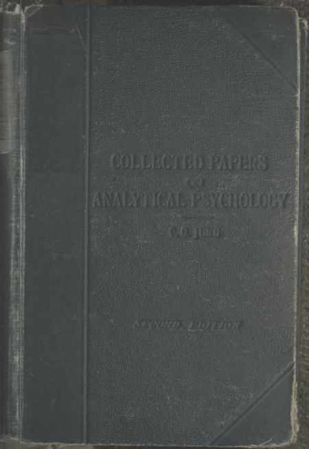
BY
C. G. JUNG, M.D., LL.D.,
FORMERLY OF THE UNIVERSITY OF ZÜRICH.
AUTHORISED TRANSLATION
Edited by DR. CONSTANCE E. LONG,
MEDICAL OFFICER, EDUCATION BOARD; MEMBER ADVISORY COMMITTEE INSURANCE ACT;
EX-PRESIDENT ASSOCIATION OF REGISTERED MEDICAL WOMEN, ETC.
SECOND EDITION (REPRINTED)
LONDON
BAILLIÈRE, TINDALL AND COX
8, HENRIETTA STREET, COVENT GARDEN
1920
[All rights reserved]
PRINTED IN GREAT BRITAIN.
The following papers have been gathered together from various sources, and are now available for the first time to English readers. The subject of psychoanalysis is much in evidence, and is likely to occupy still more attention in the near future, as the psychological content of the psychoses and neuroses is more generally appreciated and understood. It is of importance, therefore, that the fundamental writings of both the Viennese and Zürich Schools should be accessible for study. Several of Freud's works have already been translated into English. Dr. Jung's "Wandlungen und Symbole der Libido" was published in America in 1916 under the title of "The Psychology of the Unconscious." That work, read in conjunction with these papers, offers a fairly complete picture of the scientific and philosophic standpoint of the leader of the Zürich School. It is the task of the future to judge and expand the findings of both schools, and to work at the development of the new psychology, which is still in its infancy.
It will be a relief to many students of the unconscious to see it in another aspect than that of "a wild beast couched, waiting its hour to spring." Some readers have gathered that view of it from the writings of the Viennese School, a view which is at most that dangerous thing "a half-truth."
In the papers appearing for the first time in this edition (Chapters XIV. and XV.), Dr. Jung develops his ideas of introversion and extroversion, a contribution of the first importance to psychology. He agrees with Freud in regarding the neuroses to be the result of repression, but differs in his view as to the origin of repression. He finds this to lie[vi] not in sexuality per se, but rather in man's natural tendency to adapt to the demands of life one-sidedly, according to his type of mentality. The born extrovert adapts by means of feeling, thought being under repression and relatively infantile. The introvert's natural adaptation is by means of thought; feeling being more or less repressed remains undeveloped. In either type the neglected co-function is behind the adapted function. This inequality operating in the unconscious, brings about a conflict, which in certain subjects amounts to a neurosis, and in others produces a limitation of individual development. This view shifts the interpretation of repression on to a much more comprehensive basis than that of sexuality, although there can scarcely be a repression that does not include this instinct on account of its deep and far-reaching importance in man.
There is no doubt that some even scientific persons have a certain fear of whither the study of the unconscious may lead. These fearful persons should be reminded that they possess an unconscious in spite of themselves, and that they share it in common with every human being. It is an extension of the individual. To study it is to deepen the self. All new discoveries have at one stage been called dangerous, and all new philosophies have been deemed heresies. It is as though we would once more consign radium to its dust-heaps, lest some day the new radiancy should over-power mankind. Indeed this particular thing has proved at once most dangerous and most precious. Man must learn to use his treasure, and in using it to submit to its own laws, which can only become known when it is handled and investigated.
Those who read this book with the attention it requires, will find they gain an impression of many new truths. The second edition is issued towards the end of the third year of the Great European war, at a time when much we have valued and held sacred is in the melting-pot. But we believe that out of the crucible new forms will arise. The study of psychoanalysis produces something of the effect of a war in the psyche; indeed, we need to make conscious this war in the[vii] inner things of the mind and soul if we would be delivered in the future from war in the external world. There is a parallelism between individual and international neurosis. In the pain of the upheaval, one recognises the birth-pangs of newer, and let us hope, truer thought, and more natural adaptations. We need a renewal of our philosophy of life to replace much that has perished in the general cataclysm, and it is because I see in the analytical psychology, which grows out of a scientific study of the unconscious, the germs of such a new construction, that I have gathered the following essays together. The translation is the work of various hands, the names of the different translators being given in a footnote at the beginning of each essay; for the editing I am responsible. The essays are, as far as possible, printed in chronological order, and those readers who are sufficiently interested will be able to discern in them the gradual development of Dr. Jung's present position in psychoanalysis.
CONSTANCE E. LONG.
2, Harley Place, W.
June, 1917.
In agreement with my honoured collaborator, Dr. C. E. Long, I have made certain additions to the second edition. It should especially be mentioned that a new chapter upon "The Concept of the Unconscious" has been added. This is a lecture I gave early in 1916 before the Zürich Union for Analytical Psychology. It gives a general orientation of a most important problem in practical analysis, viz. of the relation of the psychological ego to the psychological non-ego. Chapter XIV. has been fundamentally altered, and I have used the opportunity to incorporate an article that should describe the results of more recent researches. In accordance with my usual mode of working, the description is as generalised as possible. My habit in my daily practical work is to confine myself for some time to studying my human material. I then abstract as generalised a formula as possible from the data collected, obtaining from it a point of view and applying it in my practical work, until it has either been confirmed, modified, or else abandoned. If it has been confirmed, I publish it as a general view-point, without giving the empirical material. I only introduce the material amassed in the course of my practice in the form of example or illustration. I therefore beg the reader not to consider the views I present as mere fabrications of my brain. They are, as a matter of fact, the results of extensive experience and ripe reflection.
These additions will enable the reader of the second edition to become familiar with the recent views of the Zürich School.
As regards the criticism encountered by the first edition of this work, I was pleased to find my writings were received[x] with much more open-mindedness among English critics than was the case in Germany, where they are met with the silence born of contempt. I am particularly grateful to Dr. Agnes Savill for an exceptionally understanding criticism in the Medical Press. My thanks are also due to Dr. T. W. Mitchell for an exhaustive review in the Proceedings of the Society for Psychical Research. This critic takes exception to my heresy respecting causality. He considers that I am entering upon a perilous, because unscientific, course, when I question the sole validity of the causal view-point in psychology. I sympathise with him, but in my opinion the nature of the human mind compels us to take the final point of view. For it cannot be disputed that, psychologically speaking, we are living and working, day by day, according to the principle of directed aim or purpose, as well as that of causality. A psychological theory must necessarily adapt itself to this fact. What is plainly directed towards a goal cannot be given an exclusively causalistic explanation, otherwise we should be led to the conclusion expressed in Moleschott's famous enunciation: "Man is, what he eats." We must always bear the fact in mind that causality is a point of view. It affirms the inevitable and immutable relation of a series of events: a-b-d-z. Since this relation is fixed, and according to the view-point must necessarily be so, looked at logically the order may also be reversed. Finality is also a view-point, that is justified empirically solely by the existence of series of events, wherein the causal connection is indeed evident, but the meaning of which only becomes intelligible as producing final effect. Ordinary daily life furnishes the best instances of this. The causal explanation must be mechanistic, if we are not to postulate a metaphysical entity as first cause. For instance, if we adopt Freud's sexual theory and assign primary importance psychologically to the function of the genital glands, the brain is viewed as an appendage of the genital glands. If we approach the Viennese idea of sexuality with all its vague omnipotence, and trace it in a strictly scientific manner down to its psychological basis, we shall arrive at the first cause, according to which psychic life is for the most, or the most[xi] important part, tension and relaxation of the genital glands. If we assume for the moment that this mechanistic explanation be "true," it would be the sort of truth which is exceptionally tiresome and rigidly limited in scope. A similar statement would be that the genital glands cannot function without adequate nourishment, with its inference that sexuality is an appendage-function of nutrition! The truth contained in this is really an important chapter in the biology of lower forms of life.
But if we wish to work in a really psychological way, we shall want to know the meaning of psychological phenomena. After learning the kinds of steel the various parts of a locomotive are made of, and from what ironworks and mines they come, we do not really know anything about the locomotive's function, that is to say, its meaning. But "function" as conceived by modern science is by no means solely a causal concept; it is especially a final or "teleological" one. For it is utterly impossible to consider the soul from the causal view-point only; we are obliged to consider it also from the final point of view. As Dr. Mitchell also points out, it is impossible for us to think of the causal determination conjointly with a final connection. That would be an obvious contradiction. But our theory of cognition does not need to remain on a pre-Kantian level. It is well known that Kant showed very clearly that the mechanistic and the teleological view-points are not constituent (objective) principles, in some degree qualities of the object, but that they are purely regulative (subjective) principles of thought, and as such they are not mutually inconsistent. I can, for example, easily conceive the following thesis and antithesis:—
Thesis: Everything came into existence according to mechanistic laws.
Antithesis: Some things did not come into existence according to mechanistic laws only.
Kant says to this: Reason cannot prove either of these principles, because a priori purely empirical laws of nature cannot give us a determinative principle regarding the potentiality of things.
As a matter of fact, modern physics has necessarily been converted from the idea of pure mechanism to the final concept of the conservation of energy, because the mechanistic explanation only recognises reversible processes, whereas the actual truth is that the process of nature is irreversible. This fact led to the concept of an energy that tends towards relief of tension, and therewith also towards a definite final state.
Obviously, I consider both these points of view necessary, the causal as well as the final, but would at the same time lay stress upon the fact that since Kant's time we have come to know that the two view-points are not antagonistic if they are regarded as regulative principles of thought, and not as constituent principles of the process of nature itself.
When speaking of the reviews, I must also mention those that seem to me beside the mark. I was once more struck by the fact that certain critics cannot distinguish between the theoretical explanation given by the author, and the phantastic ideas provided by the patient. One of my critics makes this confusion when discussing "Number Dreams." The associations to the quotation from the Bible in Chapter V. are, as every attentive reader must readily perceive, not arbitrary explanations of my own, but a cryptomnesic conglomeration emanating, not from my brain at all, but from that of the patient. Surely it is not difficult to perceive upon reflection that this conglomeration of numbers corresponds exactly to that unconscious psychological function from which proceeded all the mysticism of numbers, Pythagoric, Kabbalistic, and so forth, existent from untold ages.
I am grateful to my serious reviewers, and should like here to also express my thanks to Mrs. Harold F. McCormick for her generous help in the production of this book.
C. G. JUNG.
June, 1917.
This volume contains a selection of articles and pamphlets on analytical psychology written at intervals during the past fourteen years. These years have seen the development of a new discipline, and as is usual in such a case, have involved many changes of view-point, of concept, and of formulation.
It is not my intention to give a presentation of the fundamental concepts of analytical psychology in this book; it throws some light, however, on a certain line of development which is especially characteristic of the Zürich School of psychoanalysis.
As is well known, the merit of the discovery of the new analytical method of general psychology belongs to Professor Freud of Vienna. His original view-points had to undergo many essential modifications, some of them owing to the work done at Zürich, in spite of the fact that he himself is far from agreeing with the standpoint of this school.
I am unable to explain fully the fundamental differences between the two schools, but would indicate the following points: The Vienna School takes the standpoint of an exclusive sexualistic conception, while that of the Zürich School is symbolistic. The Vienna School interprets the psychological symbol semiotically, as a sign or token of certain primitive psychosexual processes. Its method is analytical and causal.
The Zürich School recognises the scientific feasibility of such a conception, but denies its exclusive validity, for it does not interpret the psychological symbol semiotically only, but also symbolistically, that is, it attributes a positive value to the symbol.
The value does not depend merely on historical causes; its chief importance lies in the fact that it has a meaning for the actual present, and for the future, in their psychological aspects. For to the Zürich School the symbol is not merely a sign of something repressed and concealed, but is at the same time an attempt to comprehend and to point out the way of the further psychological development of the individual. Thus we add a prospective import to the retrospective value of the symbol.
The method of the Zürich School is therefore not only analytical and causal, but also synthetic and prospective, in recognition that the human mind is characterised by "causæ" and also by "fines" (aims). The latter fact needs particular emphasis, because there are two types of psychology, the one following the principle of hedonism, and the other following the principle of power. Scientific materialism is pertinent to the former type, and the philosophy of Nietzsche to the latter. The principle of the Freudian theory is hedonism, while that of Adler (one of Freud's earliest personal pupils) is founded upon the principle of power.
The Zürich School, recognising the existence of these two types (also remarked by the late Professor William James), considers that the views of Freud and Adler are one-sided, and only valid within the limits of their corresponding type. Both principles exist within every individual, but not in equal proportions.
Thus, it is obvious that each psychological symbol has two aspects, and should be interpreted according to the two principles. Freud and Adler interpret in the analytical and causal way, reducing to the infantile and primitive. Thus with Freud the conception of the "aim" is the fulfilment of desire, with Adler it is the usurpation of power. Both authors take the standpoint in their practical analytical work which brings to view only infantile and gross egoistic aims.
The Zürich School is convinced of the fact that within the limits of a diseased mental attitude the psychology is such as Freud and Adler describe. It is, indeed, just on account of such impossible and childish psychology that the individual[xv] is in a state of inward dissociation and hence neurotic. The Zürich School, therefore, in agreement with them so far, also reduces the psychological symbol (the phantasy products of the patient) to the fundamental infantile hedonism, or to the infantile desire for power. But Freud and Adler content themselves with the result of mere reduction, according to their scientific biologism and naturalism.
But here a very important question arises. Can man obey the fundamental and primitive impulses of his nature without gravely injuring himself or his fellow beings? He cannot assert either his sexual desire or his desire for power unlimitedly, and the limits are moreover very restricted. The Zürich School has in view also the final result of analysis, and regards the fundamental thoughts and impulses of the unconscious, as symbols, indicative of a definite line of future development. We must admit there is, however, no scientific justification for such a procedure, because our present-day science is based as a whole upon causality. But causality is only one principle, and psychology essentially cannot be exhausted by causal methods only, because the mind lives by aims as well. Besides this disputable philosophical argument, we have another of much greater value in favour of our hypothesis, namely, that of vital necessity. It is impossible to live according to the intimations of infantile hedonism, or according to a childish desire for power. If these are to be retained they must be taken symbolically. Out of the symbolic application of infantile trends, an attitude evolves which may be termed philosophic or religious, and these terms characterise sufficiently the lines of further development of the individual. The individual is not only an established and unchangeable complex of psychological facts, but also an extremely changeable entity. By exclusive reduction to causes, the primitive trends of a personality are reinforced; this is only helpful when at the same time these primitive tendencies are balanced by recognition of their symbolic value. Analysis and reduction lead to causal truth; this by itself does not help living, but brings about resignation and hopelessness. On the other hand, the recognition of the intrinsic[xvi] value of a symbol leads to constructive truth and helps us to live. It induces hopefulness and furthers the possibility of future development.
The functional importance of the symbol is clearly shown in the history of civilisation. For thousands of years the religious symbol proved a most efficacious means in the moral education of mankind. Only a prejudiced mind could deny such an obvious fact. Concrete values cannot take the place of the symbol; only new and more efficient symbols can be substituted for those that are antiquated and outworn, such as have lost their efficacy through the progress of intellectual analysis and understanding. The further development of mankind can only be brought about by means of symbols which represent something far in advance of himself, and whose intellectual meanings cannot yet be grasped entirely. The individual unconscious produces such symbols, and they are of the greatest possible value in the moral development of the personality.
Man almost invariably has philosophic and religious views of the meaning of the world and of his own life. There are some who are proud to have none. These are exceptions outside the common path of mankind; they miss an important function which has proved itself to be indispensable to the human mind.
In such cases we find in the unconscious, instead of modern symbolism, an antiquated archaic view of the world and of life. If a requisite psychological function is not represented in the sphere of consciousness, it exists in the unconscious in the form of an archaic or embryonic prototype.
This brief résumé may show what the reader cannot find in this collection of papers. The essays are stations on the way of the more general views developed above.
C. G. JUNG.
Zürich,
. January, 1916.
| PAGE | |
| Editor's Preface to Second Edition | v |
| Author's Preface to Second Edition | ix |
| Author's Preface to First Edition | xiii |
On the Psychology and Pathology of so-called Occult Phenomena 1
Difficulty of demarcation in borderline cases between epilepsy, hysteria, and mental deficiency—Somnambulism an hysterical manifestation—A case of spontaneous somnambulism, with some characters of protracted hysterical delirium—Other cases quoted—Charcot's classification of somnambulism—Naef's and Azam's cases of periodic amnesia—Proust's and Boileau's wandering-impulse cases—William James' case of Rev. Ansel Bourne—Other examples showing changes in consciousness—Hypnagogic hallucinations—Neurasthenic mental deficiency, Bleuler's case—Summing up of Miss Elsie K.'s case—Need of further scientific investigation in the field of psychological peculiarities.
Case of Somnambulism in a Person with Neuropathic Inheritance
(Spiritualistic Medium) 16
History of case—Accidental discovery of her mediumistic powers—Her somnambulic attacks, "attitudes passionelles," catalepsy, tachypnœa, trance speeches, etc.—Ecstasies—Her conviction of the reality of her visions—Her dreams, hypnagogic and hypnopompic visions—The elevation of her somnambulic character—Mental thought transference—S. W.'s double life—Psychographic communications—Description of séances—The Prophetess of Prevorst—Automatic writing—The two grandfathers—Appearance of other somnambulic personalities.
Development of the Somnambulic Personalities 30
The psychograph and spiritualistic wonders—The grandfather the medium's "guide" or "control"—Ulrich von Gerbenstein—The somnambulic personalities have access to the medium's memory—Ivenes—S. W.'s amnesia for her ecstasies—Later séances—Her journeys on the other side—Oracular sayings—Conventi—Ivenes' dignity and superiority to her "guides"—Her previous incarnations—Her race-motherhood.
Mystic Science and Mystic System of Powers 40
Her growing wilful deception—The waking state—Her peculiarities—Instability—Hysterical tendencies—Misreading—Errors of dispersion of attention discussed.
Table movements—Unconscious motor phenomena—Verbal suggestion and auto-suggestion—The experimenter's participation—The medium's unconscious response—Thought-reading—Table-tilting experiment, illustrated—Experiments with beginners—Myers' experiments in automatic writing—Janet's conversation with Lucie's subconsciousness—Example of the way the subconscious personality is constructed—Hallucinations appear with deepening hypnosis; some contributing factors—Comparison between dream symbols and appearance of somnambulic personalities—Extension of the unconscious sphere—The somnambulist's thinking is in plastic images, which are made objective in hallucinations—Why visual and not auditory hallucinations occur—Origin of hypnagogic hallucinations—Those of Jeanne d'Arc and others.
The Change in Character 64
Noticeable in S. W.'s case, also in Mary Reynolds'—Association with amnesic disturbances—Influence of puberty in our case—S. W.'s systematic anæsthesia—Ivenes not so much a case of double consciousness as one in which she dreams herself into a higher ideal state—Similar pathological dreaming found in the lives of saints—Mechanism of hysterical identification—S. W.'s dreams break out explosively—Their origin and meaning, and their subjective roots.
Relation to the Hysterical Attack 75
In considering the origin of attack, two moments, viz. irruption of hypnosis, and the psychic stimulation, must be taken into account—In susceptible subjects relatively small stimuli suffice to bring about somnambulism—Our case approaches to hysterical lethargy—The automatisms transform lethargy into hypnosis—Her ego-consciousness is identical in all states—Secondary somnambulic personalities split off from the primary unconscious personality—All group themselves under two types, the gay-hilarious, and serio-religious—The automatic speaking occurs—This facilitates the study of the subconscious personalities—Their share of the consciousness—The irruption of the hypnosis is complicated by an hysterical attack—The automatism arising in the motor area plays the part of hypnotist—When the hypnotism flows over into the visual sphere the hysterical attack occurs—Grandfathers I. and II.—Hysterical dissociations belong to the superficial layers of the ego-complex—There are layers beyond the reach of dissociation—Effect of the hysterical attack.
Relationship to the Unconscious Personality 82
The serio-religious and the gay-hilarious explained by the anamnesis—Two halves of S. W.'s character—She is conscious of the painful contrast—She seeks a middle way—Her aspirations bring her to the puberty dream of the ideal Ivenes—The repressed ideas begin an autonomous existence—This corroborates Freud's disclosures concerning dreams—The relation of the somnambulic ego-complex and the waking consciousness.
Course 83
The progress of this affection reached its maximum in 4-8 weeks—Thenceforth a decline in the plasticity of the phenomena—All degrees of somnambulism were observable—Her manifest character improved—Similar improvements seen in certain cases of double consciousness—Conception that this phenomenon has a teleological meaning for the future personality—As seen in Jeanne d'Arc and Mary Reynolds II.
The Unconscious Additional Creative Work 84
S. W. shows primary susceptibility of the unconscious—Binet affirms the susceptibility of the hysteric is fifty times greater than that of normal—Cryptomnesia, a second additional creation—Cryptomnesic picture may enter consciousness intra-physically—Unconscious plagiarism explained—Zarathustra example—Glossolalia—Helen Smith's Martian language—The names in Ivenes' mystic system show rudimentary glossolalia—The Cryptomnesic picture may enter consciousness as a hallucination—Or arrive at consciousness by motor automatism—By automatisms regions formerly sealed are made accessible—Hypermnesia—Thought-reading a prototype for extraordinary intuitive knowledge of somnambulists and some normal persons—Association-concordance—Possibility that concept and feeling are not always clearly separated in the unconscious—S. W.'s mentality must be regarded as extraordinary.
The Association Method 94
Lecture I.—Formula for test—Disturbances of reaction as complex-indicators—Discovery
of a culprit by means of test—Disturbances of reaction show emotional rather than intellectual causes—Principal types—Value of the experiment in dealing with neurotics.
Lecture II.—Familiar Constellations 119
Dr. Fürst's researches—Effect of environment and education on reactions—Effect of parental discord on children—Unconscious tendency to repetition of parental mistakes—Case of pathological association-concordance between mother and daughter—Neurosis, a counter-argument against the personality with which the patient is most nearly concerned—How to free the individual from unconscious attachments to the milieu.
Lecture III.—Experiences concerning the Psychic Life of the Child 132
Importance of emotional processes in children—Little Anna's questions—Arrival of the baby brother—Anna's embarrassment and hostility—Introversion of the child—Of the adolescent—Her pathological interest in the Messina earthquake—The meaning of her fear—Anna's theories of birth—Meaning of her questions—Her father tells her something of origin of her little brother—Her fears now subside—The unconscious meaning of the child's wish to sit up late—Anna's equivalent to the "lumpf-theory" of little Hans—The stork-theory again—Author's remarks on the sexual enlightenment of the child.
The Significance of the Father in the Destiny of the Individual 156
Psychosexual relationship of child to father—Fürst's experiments quoted—The association experiment typical for man's psychological life—Adaptation to father—Father-complex productive of neurosis—Father-complex in man with masochistic and homosexual trends—Peasant woman "her father's favourite," tragic effect of the unconscious constellation—Case of eight-year-old boy with enuresis—Enuresis a sexual surrogate—Importance of infantile sexuality in life—Hence necessity for psychoanalytic investigation—The Jewish religion and the father-complex—Parental power guides the child like a higher controlling fate—The conflict for the development of the individual—Father-complex in Book of Tobias.
A Contribution to the Psychology of Rumour 176
Investigation of a rumour in a girls' school—The rumour arose from a dream—Teacher's suspicions—Was the rumour an invention and not, as alleged, the recital of a dream?—Interpolations in dreams—Collection of evidence—Duplication of persons an expression of their significance both in dreams and in dementia præcox—The additions and interpolations represent intensive unconscious participation—Hearsay evidence—Remarks.
Epicrisis 188
The dream is analysed by rumour—Psychoanalysis explains the construction of rumour—The dream gives the watchword for the unconscious—It brings to expression the ready-prepared sexual complexes—Marie X.'s unsatisfactory conduct brought her under reproof—Her indignation and repressed feelings lead to the dream—She uses this as an instrument of revenge against the teacher—More investigation needed in the field of rumour.
On the Significance of Number-Dreams 191
Symbolism of numbers has acquired fresh interest from Freud's investigations—Example of number dream of middle-aged man—How the number originates—A second dream also contains a number—Analysis—The wife's dream "Luke 137"—This dream is an example of cryptomnesia.
A Criticism of Bleuler's "Theory of Schizophrenic Negativism" 200
Bleuler's concept of ambivalency and ambitendency—Every tendency balanced by its opposite—Schizophrenic negativism—Bleuler's summary of its causes—The painfulness of the complex necessitates[xxi] a censorship of its expression—Thought disturbance the result of a complex—Thought pressure due to schizophrenic introversion—Resistance springs from peculiar sexual development—Schizophrenia shows a preponderance of introversion mechanisms—The value of the complex theory concept.
Psychoanalysis 206
Doctors know too little of psychology, and psychologists of medicine—Strong prejudice aroused by Freud's conception of the importance of the sexual moment—The commoner prejudices discussed—Psychoanalysis not a method of suggestion or reasoning—The unconscious content is reached via the conscious—Case of neurotic man with ergophobia for professional work—Case of neurotic woman who wants another child—Resistances against the analyst—Dream analysis the efficacious instrument of analysis—The scientist's fear of superstition—The genesis of dreams—Dream material is collected according to scientific method—The rite of baptism analysed—When the unconscious material fails, use the conscious—The physician's own complexes a hindrance—Interpretations of Viennese School too one-sided—Sexual phantasies both realistic and symbolic—The dream the subliminal picture of the individual's present psychology—Symbolism a process of comprehension by analogy—Analysis helps the neurotic to exchange his unconscious conflict for the real conflict of life.
On Psychoanalysis 226
Difficulties of public discussion—Competence to form an opinion presupposes a knowledge of the fundamental literature—The abandoned trauma theory—Fixation—The importance of the infantile past—Analysis discloses existence of innumerable unconscious phantasies—Œdipus complex—Fixation discussed—The critical moment for the outbreak of the neurosis—Predisposition—Author's energic view point—Application of the libido to the obstacle—Repression—Neurosis an act of adaptation that has failed—The energic view does not alter the technique of analysis—Analysis re-establishes the connection between the conscious and unconscious—Is a constructive task of great importance.
The dream a means of re-establishing the moral equipoise—The dreamer finds therein the material for reconstruction—Methods discussed—The part played by "faith in the doctor"—Abreaction.
Letter II.—Jung 238
For the patient any method that works is good, though some more valuable than others—The doctor must choose what commends itself to his scientific conscience—Why the author gave up the use of hypnotism—Three cases quoted—Breuer and Freud's method a great advance in psychic treatment—Evolution of author's views—Importance of conception that behind the neurosis lies a moral conflict—Divergence from Freud's sexual theory of neurosis—The doctor's responsibility for the cleanliness of his own hands—Necessity that the psychoanalyst should be analysed—He is successful in so far as he has succeeded in his own moral development.
Letter III.—Loÿ 244
Opportunism v. scientific honour—Psychoanalysis no more than hypnotism gets rid of "transference"—Cases of enuresis nocturna, and of washing-mania treated by hypnosis—On what grounds should such useful treatment be dispensed with?—The difficulty of finding a rational solution for the moral conflict—The doctor's dilemma of the two consciences.
Letter IV.—Jung 248
Author's standpoint that of the scientist, not practical physician—The analyst works in spite of the transference—Psychoanalysis not the only way—Sometimes less efficacious than any known method—Cases must be selected—For the author and his patients it is the best way—The real solution of the moral conflict comes from within, and then only because the patient has been brought to a new standpoint.
Letter. V.—Loÿ 252
"What is truth?"—Parable of the prism—All man attains is relative truth—Fanaticism is the enemy to science—Psychoanalysis a method of dealing with basic motives of the human soul—Must not each case be treated individually?—Morals are above all relative.
Letter VI.—Jung 256
Definition of psychoanalysis—Technique—So-called chance is the law—Rules well-nigh impossible—The patients' unconscious is the analysts' best confederate—Questions of morality and education find solutions for themselves in later stages of analysis.
Letter VII.—Loÿ 258
Contradictions in psychoanalytic literature—Should the doctor canalise the patient's libido?—Does he not indirectly suggest dreams to patient?
Letter VIII.—Jung 261
Different view-points in psychoanalysis—Vide Freud's causality and Adler's finality—Discussion of meaning of transference—The meaning of "line of least resistance"—Man as a herd-animal—Rich endowment with social sense—Should take pleasure in life—Error as necessary to progress as truth—Patient must be trained in independence—Analyst is caught in his own net if he makes hard-and-fast rules—Through the analyst's suggestion only the outer form, never the content, is determined—The patient may mislead the doctor, but this is disadvantageous and delays him.
Letter IX.—Loÿ 267
The line of least resistance is a compromise with all necessities—The analyst as accoucheur—The neurotic's faith in authority—Altruism innate in man—He advances in response to his own law.
Letter X.—Jung 270
Transference is the central problem of analysis—It may be positive or negative—Projection of infantile phantasies on the doctor—Biological "duties"—The psyche does not only react, but gives its individual reply—We have an actual sexual problem to-day—Evidences thereof—We have no real sexual morality, only a legal attitude—Our moral views are too undifferentiated—The neurotic is ill not because he has lost his faith in morality, but because he has not found the new authority in himself.
On the Importance of the Unconscious in Psychopathology 278
Content of the unconscious—Defined as sum of all psychical processes below the threshold of consciousness—Answer to question how does the unconscious behave in neurosis found in its effect on normal consciousness—Example of a merchant—Compensating function of the unconscious—Symptomatic acts—Nebuchadnezzar's dream discussed—Intuitive ideas, and insane manifestations both emanate from the unconscious—Eccentricities pre-exist a breakdown—In mental disorder unconscious processes break-through into consciousness and disturb equilibrium—True also in fanaticism—Pathological compensation in case of paranoia—Unconscious processes have to struggle against resistances in the conscious mind—Distortion—In morbid conditions the function of the unconscious is one of compensation.
A Contribution to the Study of Psychological Types 287
Striking contrast between hysteria and dementia præcox—Extroversion and Introversion—Repression—Hysterical transference and repression the mechanism of extroversion—Depreciation of the external world the mechanism of introversion—The nervous temperament pre-exists the illness—Examples of the two types from literature—James's Tough and Tender-minded—Warringer's Sympathy and Abstraction—Schiller's Naïf and Sentimental—Nietzsche's Apollien and Dionysian—Gross's Weakness and Reinforcement of Consecutive Function—Freud and Adler's Causalism and Finality—The fundamental need for further study of the two types.
The Psychology of Dreams 299
Psychic structure of dream contrasted with that of conscious thought—Why a dream seems meaningless—Freud's empirical evidence—Technique, analysis of a dream—The causal and teleological view of the dream—A typical dream with mythological content—Compensating function of dreams—Phallic symbols.
The Content of the Psychoses 312
Discussion of psychological v. physical origin of mental disease—Mediæval conception of madness as work of evil spirits—Development of materialistic idea that diseases of the mind are diseases of the brain—Psychiatrists have come to regard function as accessory to the organ—Analysis of patients entering Burgholzi Asylum—A quarter only show lesions of the brain—The psychiatry of the future must advance by way of psychology—Cases of dementia præcox illustrating recent methods in psychiatry—The development of the outbreak at a moment of great emotion—Delusions determined by deficiencies in the patient's personality—Difficulties of investigation—Temporary remission of mental symptoms proves that reason survives in spite of preoccupation with diseased thoughts—Case of dementia præcox, showing exceeding richness of phantasy formations, and the continuity of ideas.
Part II. 336
Freud's case of paranoid dementia—(Schreber case)—Two ways of regarding Goethe's "Faust"—Retrospective and prospective understanding—The scientific mind thinks causally—This is but one half of comprehension—Pathological and mythological formations, both structures of the imagination—Flournoy's case—Misunderstanding of author's analysis of it—Adaptations only possible to the introverted type by means of a world-philosophy—The extroverted type always arrives at a general theory subsequently—Psychasthenia is the neurosis of introversion, hysteria of extroversion—These diseases typify the general attitude of the types to the phenomena of the external world—The extreme difference in type a great obstacle to common understanding—The general result of the constructive method is a subjective view, not a scientific theory.
Foreword to New Edition 352
Adler's views more fully discussed—The psychological events of the war force the problems of the unconscious on society—The psychology of individuals corresponds to the psychology of nations.
The Psychology of the Unconscious Processes 354
I. The Beginning of Psychoanalysis
The evolution of psychology—How little it has had to offer to the psychiatrist till Freud's discoveries—The origin and reception of psychoanalysis—The prejudiced attitude of certain physicians—Freud's view that his best work arouses greatest resistances—The Nancy School—Breuer's first case—"The talking cure"—The English "shock theory"—Followed by the trauma theory—Discussion of predisposition—Author's case of hysteria following fright from horses—The pathogenic importance of the hidden erotic conflict.
II. The Sexual Theory 367
Humanity evolves its own restrictions on sexuality for the sake of the advance of civilisation—The presence of a grave sexual problem testifies to the need of more differentiated conceptions—The erotic conflict largely unconscious—Neurosis represents the[xxv] unsuccessful attempt of the individual to solve the problem in his own case—To understand the idea of the dream as a wish-fulfilment the manifest and latent content must be taken in review—The nature of unconscious wishes—Dream analysis leads to the deepest recesses of the unconscious—The analyst compared to the accoucheur—The highest development of the individual is sometimes in complete conflict with the herd-morality—Psychoanalysis provides the patient with a philosophy of life founded upon insight—Man has within himself the essence of morals—Both the moral and immoral man must accept the corrective of the unconscious—Our sexual morality too undifferentiated—Freud's sexual theory right to a point but too one-sided.
III. The Other Viewpoint: the Will to Power 381
The superman—Nietzsche's failure to justify his theories by his life—His view also too one-sided—Adler's theory of neurosis founded upon the principle of power—Case of hysteria discussed from the standpoint of unconscious motivation.
IV. The Two Types of Psychology 391
Thinking the natural adaptive function for introvert, feeling for the extrovert—The sexual theory promulgated from the standpoint of feeling, the power theory from that of thought—Criticism of both theories indispensable—Symptoms of neurosis are aims at a new synthesis of life—Definition of positive value as energy in a useful form—In neurosis energy is located in an inferior form—Sublimation a transference of sexual energy to another sphere—Destiny often frustrates purely rational sublimations—Rationalism, the world-war an example of its breakdown—So-called "disposable energy"—Case of American business-man—The types have different problems—The feelings of the introvert relatively conventional and undifferentiated—The thinking of the extrovert colourless and dry—The types apt to marry, but not to understand one another—The theories of the types led to a new theory of psychogenic disturbances—Neurosis postulates the existence of an unconscious conflict—New theory declares it to lie between the natural conscious function and the repressed undifferentiated co-function—Repressed feelings of introvert projected as vague physical symptoms—Repressed thought of extrovert projected as hysterical symptoms—In analysis the libido liberated from the unconscious phantasies is projected on to the physician—It finds its way into the transference, which in turn is dissolved—The new channel for the libido is already found.
V. The Personal and the Impersonal Unconscious 408
Transference a projection of unconscious contents on to the physician—Contents of the unconscious at first personal, later impersonal—Primordial images—A differentiation of the unconscious contents necessary—The deepest layers are now designated impersonal, absolute, collective, or super-personal—The libido now liberated in analysis sinks down into the unconscious, reviving original "thought-feelings"—Example in Mayer's idea of conservation of energy—The world-wide existence of the primordial images—The concept of God—Enantiodromia, the world-war an example of this—In analysis the pairs of opposites are torn asunder—This necessitates that patients learn to differentiate between the ego and non-ego.
VI. The Synthetic or Constructive Method 417
The transcendental function, a new way of regarding the psychological materials as a bridge between the two sides of the psyche—Example[xxvi] of method of synthesis of symbols of absolute unconscious—Dream of the crab.
VII. Analytical (Causal-reductive) Interpretation 419
The unconscious homosexual tendencies—The causal-reductive method does not strictly follow the patient's own associations—It does not interpret the dream as subjective phenomenon—Interpretation on both objective and subjective planes necessary.
VIII. The Synthetic (Constructive) Interpretation 422
Homosexuality in this case an unconscious defence against acceptance of "more dangerous" tendencies—Fascination an unconscious compulsion—"Identifications" have power so long as they remain unconscious—Union of subjective and objective view of dream gives its full meaning.
IX. The Dominants of the Super-personal Unconscious 426
Projection in relation to transference—Projection of certain attributes not explicable on the ground of personal contents, but must be referred to the super-personal—Collective unconscious is sediment of all the experience of the universe throughout time—Certain features that have become prominent, e.g. gods and demons, are called "dominants" and have a character of universal psychological truth—These dominants become conscious as projections, explaining infatuations, incompatibilities, unconscious conflicts, etc.—The "magical demon" is the most primitive concept of God—Analysis traces home these projections to the non-ego—Fear belongs to the dominants of the collective unconscious—The next step is the detachment of these projections from the objects of consciousness—This liberates energy for further progress—The transcendental function—The hero-myth symbolises this differentiation of ego from non-ego.
X. The Development of the Types of Introversion and Extroversion 437
The types apprehend life by opposite methods—All psychic images have two sides, one directed towards the object, the other towards the soul (idea)—The feelings of the introvert are under repression, the thoughts of the extrovert—Analytical development of the unconscious brings out the secondary function in each type—The pairs of opposites being thus demonstrated need for synthesis arises—This is a compensatory process leading to enrichment of the individual.
XI. General Remarks on the Therapy 441
The unconscious is a source of danger when the individual is not at one with it—It also creates harmonious prospective combinations which can be an effective source of wisdom for the individual—The use of the phantasies in conjunction with conscious elaboration is the transcendental function—Not every individual passes through all the stages described—For some the end of analysis is reached when the cure is achieved—Others are under a moral necessity to reach a full psychological development.
Conclusion 443
The Concept of the Unconscious 445
I. The Distinction between the Personal and Impersonal Unconscious.
Development of concepts—Removal of repression does not empty the unconscious—Repression is a special phenomenon—The unconscious contains not only repressed material, but subliminal sense-impressions which have never reached consciousness—It is constantly busied with new phantasy formation—Patients are urged to retain their hold on repressed materials that analysis has brought into consciousness—Prolonged analysis reveals contents other than those of a personal nature—Necessity to differentiate a layer called the "personal" unconscious whose materials originate in the personal past—Their omission from consciousness constitutes a defect or neglect—The moral reaction against this neglect shows they could become conscious if sufficient trouble were taken—The gradual transference of the personal unconscious contents into consciousness extends the periphery of consciousness.
II. The Consequences of Assimilation of the Unconscious 449
First result is increased self-consciousness—May lead to a sense of God-Almightiness in one type, or to overwhelming self-depreciation in the other—A result of ascribing to oneself qualities or vices that do not belong individually but collectively—The collective pysche divided into collective mind and collective soul—The collective contains the "parties inférieures" of Janet; the conscious and personal unconscious contains the "parties supérieures"—Incorporation of the impersonal unconscious leads to a dissolution of the pairs of opposites—As seen in neurotic, who combines megalomania and sense of inferiority in extreme degree—Primitive man possesses the collective vices and virtues in an undifferentiated way—Mental conflict only begins with conscious personal development—Desire to be good brings about repression of the bad—Collective view-point, though necessary, is dangerous to individuality—Collective psyche is the result of psychological differentiation of the gregarious instincts—Dangers of identification with collective psyche—Recognition of the different psychology of the types a safeguard, promoting a proper respect for individuality of the opposite type—Individuation hampered by man's suggestibility and tendency to imitation.
III. The Individual as an Excerpt of the Collective Psyche 456
The personal unconscious contains repressed materials capable of becoming conscious—By also incorporating the impersonal contents the state of God-Almightiness is brought about—The "persona" a mask for the collective psyche—Development of God-Almightiness, physical concomitants—Dissolution of the persona results in release of phantasy—Analogy with mental derangement—Difference consists in that the unconscious is at first deliberately brought into consciousness by consent, and later that it is recognised as having psychic validity only.
IV. Endeavours to free the Individuality from the Collective Psyche 459
(i) The Regressive Restoration of the Persona—Three ways open, (a) Regressive application of a reductive theory; (b) application of God-Almightiness as a "virile protest;" (c) recognition of the primitive archaic collective psychology in man—Temptation to[xxviii] solve the difficulty by forgetting one has an unconscious—This does not work—The unconscious cannot be deprived of libido, nor its activity stilled for any length of time.
(ii) Identification with the Collective Psyche—God-Almightiness developed into a system—Identification increases feeling for life or sense of power, according to the type—This, mystically understood, is the "yearning for the mother" of the hero-myth, or the "incest-wish" of Freud—It is the collective psyche that has to be overcome—Identification with the collective psyche is a failure because being lost in it, a bearable or satisfactory life is impossible.
V. Leading Principles for the Treatment of Collective Psyche 468
Neither regressive restoration of the persona, nor identification with collective psyche solves the problem—Psychology will have to admit a plurality of principles—Only the collective part of individual psychology can be the subject of scientific study—What belongs to the psychology of the individual requires its own text-book—The persona must be strictly separated from the concept of the individual—What is individual is the remnant which can never be merged into the collective—Analysis of the persona transfers greater value on to the individuality, increasing its conflict with collectivity—The persona is identical with a one-sided attitude, being a typical attitude in which thought or feeling or intuition dominates, causing relative repression of the other functions—Dissolution of persona indispensable to individuation—The more individual a person is the more he assimilates and develops those attributes that are the basis of a collective concept of human nature—Unifying function between the conscious and unconscious, between the collective and individual is found in the phantasies—Phantasy the creative soil for everything that has brought development to humanity—Phantasy not to be taken literally but hermeneutically—Hermeneutics adds analogies to those already given—Hermeneutical interpretation indicates the means of synthesis of the individual, provided as soon as the symbolic outlines of the path are understood they are followed up—Co-operation and honest endeavour essential to cure—The moral factor determines the cure—"Life-lines" have a short and ephemeral value—Dreams are compensatory to conscious thinking—Watch must be kept for dreams indicative of causes of error—Hence the patient must remain in contact with the unconscious—End of analysis reached when enough psychological insight and mastery of technique is acquired to enable individual to follow his ever-changing life-line, and to retain hold on the libido currents which give conscious support to his individuality.
ON THE PSYCHOLOGY AND PATHOLOGY OF SO-CALLED OCCULT PHENOMENA[1]
In that wide field of psychopathic deficiency where Science has demarcated the diseases of epilepsy, hysteria and neurasthenia, we meet scattered observations concerning certain rare states of consciousness as to whose meaning authors are not yet agreed. These observations spring up sporadically in the literature on narcolepsy, lethargy, automatisme ambulatoire, periodic amnesia, double consciousness, somnambulism, pathological dreamy states, pathological lying, etc.
These states are sometimes attributed to epilepsy, sometimes to hysteria, sometimes to exhaustion of the nervous system, or neurasthenia, sometimes they are allowed all the dignity of a disease sui generis. Patients occasionally work through a whole graduated scale of diagnoses, from epilepsy, through hysteria, up to simulation. In practice, on the one hand, these conditions can only be separated with great difficulty from the so-called neuroses, sometimes even are indistinguishable from them; on the other, certain features in the region of pathological deficiency present more than a mere analogical relationship not only with phenomena of normal psychology, but also with the psychology of the supernormal, of genius. Various as are the individual phenomena in this region, there is certainly no case that cannot be connected by some intermediate example with the other typical cases. This relationship in the pictures presented by hysteria and epilepsy is very close. Recently the view has even been maintained that there is no clean-cut frontier between epilepsy and hysteria, and that a difference[2] is only to be noted in extreme cases. Steffens says, for example[2]—"We are forced to the conclusion that in essence hysteria and epilepsy are not fundamentally different, that the cause of the disease is the same, but is manifest in a diverse form, in different intensity and permanence."
The demarcation of hysteria and certain borderline cases of epilepsy from congenital and acquired psychopathic mental deficiency likewise presents the greatest difficulties. The symptoms of one or other disease everywhere invade the neighbouring realm, so violence is done to the facts when they are split off and considered as belonging to one or other realm. The demarcation of psychopathic mental deficiency from the normal is an absolutely impossible task, the difference is everywhere only "more or less." The classification in the region of mental deficiency itself is confronted by the same difficulty. At best, certain classes can be separated off which crystallise round some well-marked nucleus through having peculiarly typical features. Turning away from the two large groups of intellectual and emotional deficiency, there remain those deficiencies coloured pre-eminently by hysteria or epilepsy (epileptoid) or neurasthenia, which are not notably deficiency of the intellect or of feeling. It is essentially in this region, insusceptible of any absolute classification, that the above-named conditions play their part. As is well known, they can appear as part manifestations of a typical epilepsy or hysteria, or can exist separately in the realm of psychopathic mental deficiency, where their qualifications of epileptic or hysterical are often due to the non-essential accessory features. It is thus the rule to place somnambulism among hysterical diseases, because it is occasionally a phenomenon of severe hysteria, or because mild so-called hysterical symptoms may accompany it. Binet says: "Il n'y a pas une somnambulisme, état nerveux toujours identique à lui-même, il y a des somnambulismes." As one of the manifestations of a severe hysteria, somnambulism is not an unknown phenomenon, but as a pathological entity, as a disease sui generis, it must[3] be somewhat rare, to judge by its infrequency in German literature on the subject. So-called spontaneous somnambulism, resting upon a foundation of hysterically-tinged psychopathic deficiency, is not a very common occurrence and it is worth while to devote closer study to these cases, for they occasionally present a mass of interesting particulars.
Case of Miss Elise K., aged 40, single; book-keeper in a large business; no hereditary taint, except that it is alleged a brother became slightly nervous after family misfortune and illness. Well educated, of a cheerful, joyous nature, not of a saving disposition, always occupied with some big idea. She was very kind-hearted and gentle, did a great deal both for her parents, who were living in very modest circumstances, and for strangers. Nevertheless she was not happy, because she thought she did not understand herself. She had always enjoyed good health till a few years ago, when she is said to have been treated for dilatation of the stomach and tapeworm. During this illness her hair became rapidly white, later she had typhoid fever. An engagement was terminated by the death of her fiancé from paralysis. She had been very nervous for a year and a half. In the summer of 1897 she went away for change of air and treatment by hydropathy. She herself says that for about a year she has had moments during work when her thoughts seem to stand still, but she does not fall asleep. Nevertheless she makes no mistakes in the accounts at such times. She has often been to the wrong street and then suddenly noticed that she was not in the right place. She has had no giddiness or attacks of fainting. Formerly menstruation occurred regularly every four weeks, and without any pain, but since she has been nervous and overworked it has come every fourteen days. For a long time she has suffered from constant headache. As accountant and book-keeper in a large establishment, the patient has had very strenuous work, which she performs well and conscientiously. In addition to the strenuous character of her work, in the last year she had various new worries. Her brother was suddenly divorced.[4] In addition to her own work, she looked after his housekeeping, nursed him and his child in a serious illness, and so on. To recuperate, she took a journey on the 13th September to see a woman friend in South Germany. The great joy at seeing her friend from whom she had been long separated, and her participation in some festivities, deprived her of her rest. On the 15th, she and her friend drank half a bottle of claret. This was contrary to her usual habit. They then went for a walk in a cemetery, where she began to tear up flowers and to scratch at the graves. She remembered absolutely nothing of this afterwards. On the 16th she remained with her friend without anything of importance happening. On the 17th her friend brought her to Zürich. An acquaintance came with her to the Asylum; on the way she spoke quite sensibly, but was very tired. Outside the Asylum they met three boys, whom she described as the "three dead people she had dug up." She then wanted to go to the neighbouring cemetery, but was persuaded to come to the Asylum.
She is small, delicately formed, slightly anæmic. The heart is slightly enlarged to the left, there are no murmurs, but some reduplication of the sounds, the mitral being markedly accentuated. The liver dulness reaches to the border of the ribs. Patella-reflex is somewhat increased, but otherwise no tendon-reflexes. There is neither anæsthesia, analgesia, nor paralysis. Rough examination of the field of vision with the hands shows no contraction. The patient's hair is a very light yellow-white colour; on the whole she looks her age. She gives her history and tells recent events quite clearly, but has no recollection of what took place in the cemetery at C. or outside the Asylum. During the night of the 17th-18th she spoke to the attendant and declared she saw the whole room full of dead people—looking like skeletons. She was not at all frightened, but was rather surprised that the attendant did not see them too. Once she ran to the window, but was otherwise quiet. The next morning, while still in bed, she saw skeletons, but not in the afternoon. The following night at four o'clock she awoke and heard the dead children in the neighbouring[5] cemetery cry out that they had been buried alive. She wanted to go out to dig them up, but allowed herself to be restrained. Next morning at seven o'clock she was still delirious, but recalled accurately the events in the cemetery at C. and those on approaching the Asylum. She stated that at C. she wanted to dig up the dead children who were calling her. She had only torn up the flowers to free the graves and to be able to get at them. In this state Professor Bleuler explained to her that later on, when in a normal state again, she would remember everything. The patient slept in the morning, afterwards was quite clear, and felt herself relatively well. She did indeed remember the attacks, but maintained a remarkable indifference towards them. The following nights, with the exception of those of the 22nd and the 25th September, she again had slight attacks of delirium, when once more she had to deal with the dead. The details of the attacks differed, however. Twice she saw the dead in her bed, but she did not appear to be afraid of them, she got out of bed frequently, however, because she did not want "to inconvenience the dead"; several times she wanted to leave the room.
After a few nights free from attacks there was a slight one on the 30th Sept., when she called the dead from the window. During the day her mind was clear. On the 3rd of October she saw a whole crowd of skeletons in the drawingroom, as she afterwards related, during full consciousness. Although she doubted the reality of the skeletons, she could not convince herself that it was a hallucination. The following night, between twelve and one o'clock—the earlier attacks were usually about this time—she was obsessed with the idea of dead people for about ten minutes. She sat up in bed, stared at a corner and said: "Well, come!—but they're not all there. Come along! Why don't you come? The room is big enough, there's room for all; when all are there, I'll come too." Then she lay down with the words: "Now they're all there," and fell asleep again. In the morning she had not the slightest recollection of any of these attacks. Very short attacks occurred in the nights of the 4th, 6th,[6] 9th, 13th and 15th of October, between twelve and one o'clock. The last three occurred during the menstrual period. The attendant spoke to her several times, showed her the lighted street-lamps, and trees; but she did not react to this conversation. Since then the attacks have altogether ceased. The patient has complained about a number of troubles which she had had all along. She suffered much from headache the morning after the attacks. She said it was unbearable. Five grains of Sacch. lactis promptly alleviated this; then she complained of pains in both fore-arms, which she described as if it were a teno-synovitis. She regarded the bulging of the muscles in flexion as a swelling, and asked to be massaged. Nothing could be seen objectively, and no attention being paid to it, the trouble disappeared. She complained exceedingly and for a long time about the thickening of a toenail, even after the thickened part had been removed. Sleep was often disturbed. She would not give her consent to be hypnotised for the night-attacks. Finally on account of headache and disturbed sleep she agreed to hypnotic treatment. She proved a good subject, and at the first sitting fell into deep sleep with analgesia and amnesia.
In November she was again asked whether she could now remember the attack on the 19th September which it had been suggested that she would recall. It gave her great trouble to recollect it, and in the end she could only state the chief facts, she had forgotten the details.
It should be added that the patient was not superstitious, and in her healthy days had never particularly interested herself in the supernatural. During the whole course of treatment, which ended on the 14th November, great indifference was evinced both to the illness and the cure. Next spring the patient returned for out-patient treatment of the headache, which had come back during the very hard work of these months. Apart from this symptom her condition left nothing to be desired. It was demonstrated that she had no remembrance of the attacks of the previous autumn, not even of those of the 19th September and earlier. On the[7] other hand, in hypnosis she could recount the proceedings in the cemetery and during the nightly disturbances.
By the peculiar hallucination and by its appearance our case recalls the conditions which V. Kraft-Ebing has described as "protracted states of hysterical delirium." He says: "Such conditions of delirium occur in the slighter cases of hysteria. Protracted hysterical delirium is built upon a foundation of temporary exhaustion. Excitement seems to determine an outbreak, and it readily recurs. Most frequently there is persecution-delirium with very violent anxiety, sometimes of a religious or erotic character. Hallucinations of all the senses are not rare, but illusions of sight, smell and feeling are the commonest, and most important. The visual hallucinations are especially visions of animals, pictures of corpses, phantastic processions in which dead persons, devils and ghosts swarm. The illusions of hearing are simply sounds (shrieks, howlings, claps of thunder) or local hallucinations, frequently with a sexual content."
This patient's visions of corpses, occurring almost always in attacks, recall the states occasionally seen in hystero-epilepsy. There likewise occur specific visions which, in contrast with protracted delirium, are connected with single attacks.
(1) A lady 30 years of age with grande hystérie had twilight states in which as a rule she was troubled by terrible hallucinations; she saw her children carried away from her, wild beasts eating them up, and so on. She has amnesia for the content of the individual attacks.[3]
(2) A girl of 17, likewise a semi-hysteric, saw in her attacks the corpse of her dead mother approaching her to draw her to her. Patient has amnesia for the attacks.[4]
These are cases of severe hysteria wherein consciousness rests upon a profound stage of dreaming. The nature of the attack and the stability of the hallucination alone show a certain kinship with our case, which in this respect has [8]numerous analogies with the corresponding states of hysteria. For instance, with those cases where a psychical shock (rape, etc.) was the occasion for the outbreak of hysterical attacks, and where at times the original incident is lived over again, stereotyped in the hallucination. But our case gets its specific mould from the identity of the consciousness in the different attacks. It is an "Etat Second" with its own memory and separated from the waking state by complete amnesia. This differentiates it from the above-mentioned twilight states and links it to the so-called somnambulic conditions.
Charcot[5] divides the somnambulic states into two chief classes:—
1. Delirium with well-marked incoordination of representation and action.
2. Delirium with co-ordinated action. This approaches the waking state.
Our case belongs to the latter class.
If by somnambulism be understood a state of systematised partial waking,[6] any critical review of this affection must take account of those exceptional cases of recurrent amnesias which have been observed now and again. These, apart from nocturnal ambulism, are the simplest conditions of systematised partial waking. Naef's case is certainly the most remarkable in the literature. It deals with a gentleman of 32, with a very bad family history presenting numerous signs of degeneration, partly functional, partly organic. In consequence of over-work at the age of 17 he had a peculiar twilight state with delusions, which lasted some days and was cured with a sudden recovery of memory. Later he was subject to frequent attacks of giddiness and palpitation of the heart and vomiting; but these attacks were never attended by loss of consciousness. At the termination of some feverish illness [9]he suddenly travelled from Australia to Zürich, where he lived for some weeks in careless cheerfulness, and only came to himself when he read in the paper of his sudden disappearance from Australia. He had a total and retrograde amnesia for the several months which included the journey to Australia, his sojourn there and the return journey.
Azam[7] has published a case of periodic amnesia. Albert X., 12-1/2 years old, of hysterical disposition, was several times attacked in the course of a few years by conditions of amnesia in which he forgot reading, writing and arithmetic, even at times his own language, for several weeks at a stretch. The intervals were normal.
Proust[8] has published a case of Automatisme ambulatoire with pronounced hysteria which differs from Naef's in the repeated occurrence of the attacks. An educated man, 30 years old, exhibits all the signs of grande hystérie; he is very suggestible, has from time to time, under the influence of excitement, attacks of amnesia which last from two days to several weeks. During these states he wanders about, visits relatives, destroys various objects, incurs debts, and has even been convicted of "picking pockets."
Boileau describes a similar case[9] of wandering-impulse. A widow of 22, highly hysterical, became terrified at the prospect of a necessary operation for salpingitis; she left the hospital and fell into a state of somnambulism, from which she awoke three days later with total amnesia. During these three days she had travelled a distance of about 60 kilometres to fetch her child.
William James has described a case of an "ambulatory sort."[10]
The Rev. Ansel Bourne, an itinerant preacher, 30 years of age, psychopathic, had on a few occasions attacks of loss of consciousness lasting one hour. One day (January 17, 1887) he suddenly disappeared from Greene, after having [10]taken 551 dollars out of the bank. He remained hidden for two months. During this time he had taken a little shop under the name of H. J. Browne in Norriston, Pa., and had carefully attended to all purchases, although he had never done this sort of work before. On March 14, 1887, he suddenly awoke and went back home, and had complete amnesia for the interval.
Mesnet[11] publishes the following case:—
F., 27 years old, sergeant in the African regiment, was wounded in the parietal bone at Bazeilles. Suffered for a year from hemiplegia, which disappeared when the wound healed. During the course of his illness the patient had attacks of somnambulism, with marked limitation of consciousness; all the senses were paralysed, with the exception of taste and a small portion of the visual sense. The movements were co-ordinated, but obstacles in the way of their performance were overcome with difficulty. During the attacks he had an absurd collecting-mania. By various manipulations one could demonstrate a hallucinatory content in his consciousness; for instance, when a stick was put in his hand he would feel himself transported to a battle scene, would place himself on guard, see the enemy approaching, etc.
Guinon and Sophie Waltke[12] made the following experiments on hysterics:—
A blue glass was held in front of the eyes of a female patient during a hysterical attack; she regularly saw the picture of her mother in the blue sky. A red glass showed her a bleeding wound, a yellow one an orange-seller or a lady with a yellow dress.
Mesnet's case reminds one of the cases of occasional attacks of shrinkage of memory.
MacNish[13] communicates a similar case.
An apparently healthy young lady suddenly fell into an abnormally long and deep sleep—it is said without prodromal [11]symptoms. On awaking she had forgotten the words for and the knowledge of the simplest things. She had again to learn to read, write, and count; her progress was rapid in this re-learning. After a second attack she again woke in her normal state, but without recollection of the period when she had forgotten things. These states alternated for more than four years, during which consciousness showed continuity within the two states, but was separated by an amnesia from the consciousness of the normal state.
These selected cases of various forms of changes of consciousness all throw a certain light upon our case. Naef's case presents two hysteriform eclipses of memory, one of which is marked by the appearance of delusions, and the other by its long duration, contraction of the field of consciousness, and desire to wander. The peculiar associated impulses are specially clear in the cases of Proust and Mesnet. In our case the impulsive tearing up of the flowers, the digging up of the graves, form a parallel. The continuity of consciousness which the patient presents in the individual attacks recalls the behaviour of the consciousness in MacNish's case; hence our case may be regarded as a transient phenomenon of alternating consciousness. The dreamlike hallucinatory content of the limited consciousness in our case does not, however, justify an unqualified assignment to this group of double consciousness. The hallucinations in the second state show a certain creativeness which seems to be conditioned by the auto-suggestibility of this state. In Mesnet's case we noticed the appearance of hallucinatory processes from simple stimulation of touch. The patient's subconsciousness employs simple perceptions for the automatic construction of complicated scenes which then take possession of the limited consciousness. A somewhat similar view must be taken about our patient's hallucinations; at least, the external conditions which gave rise to the appearance of the hallucinations seem to strengthen our supposition. The walk in the cemetery induces the vision of the skeletons; the meeting with the three boys arouses the hallucination of children buried alive whose voices the patient hears at night-time.[12] She arrived at the cemetery in a somnambulic state, which on this occasion was specially intense in consequence of her having taken alcohol. She performed actions almost instinctively about which her subconsciousness nevertheless did receive certain impressions. (The part played here by alcohol must not be underestimated. We know from experience that it does not only act adversely upon these conditions, but, like every other narcotic, it gives rise to a certain increase of suggestibility.) The impressions received in somnambulism subconsciously form independent growths, and finally reach perception as hallucinations. Thus our case closely corresponds to those somnambulic dream-states which have recently been subjected to a penetrating study in England and France.
These lapses of memory, which at first seem without content, gain a content by means of accidental auto-suggestion, and this content builds itself up automatically to a certain extent. It achieves no further development, probably on account of the improvement now beginning, and finally it disappears altogether as recovery sets in. Binet and Féré have made numerous experiments on the implanting of suggestions in states of partial sleep. They have shown, for example, that when a pencil is put in the anæsthetic hand of a hysteric, letters of great length are written automatically whose contents are unknown to the patient's consciousness. Cutaneous stimuli in anæsthetic regions are sometimes perceived as visual images, or at least as vivid associated visual presentations. These independent transmutations of simple stimuli must be regarded as primary phenomena in the formation of somnambulic dream-pictures. Analogous manifestations occur in exceptional cases within the sphere of waking consciousness. Goethe,[14] for instance, states that[13] when he sat down, lowered his head and vividly conjured up the image of a flower, he saw it undergoing changes of its own accord, as if entering into new combinations.
In half-waking states these manifestations are relatively frequent in the so-called hypnagogic hallucinations. The automatisms which the Goethe example illustrates are differentiated from the truly somnambulic, inasmuch as the primary presentation is a conscious one in this case; the further development of the automatism is maintained within the definite limits of the original presentation, that is, within the purely motor or visual region.
If the primary presentation disappears, or if it is never conscious at all, and if the automatic development overlaps neighbouring regions, we lose every possibility of a demarcation between waking automatisms and those of the somnambulic state; this will occur, for instance, if the presentation of a hand plucking the flower gets joined to the perception of the flower or the presentation of the smell of the flower. We can then only differentiate it by the more or less. In one case we then speak of the "waking hallucinations of the normal," in the other, of the dream-vision of the somnambulists. The interpretation of our patient's attacks as hysterical becomes more certain by the demonstration of a probably psychogenic origin of the hallucination. This is confirmed by her troubles, headache and teno-synovitis, which have shown themselves amenable to suggestive treatment. The ætiological factor alone is not sufficient for the diagnosis of hysteria; it might really be expected a priori that in the course of a disease which is so suitably treated by rest, as in the treatment of an exhaustion-state, features would be observed here and there which could be interpreted as manifestations of exhaustion. The question arises whether the early lapses and later somnambulic attacks could not be conceived as states of exhaustion, so-called "neurasthenic crises." We know that in the realm of psychopathic mental deficiency there can arise the most diverse epileptoid accidents, whose classification under epilepsy or hysteria is at least doubtful. To quote C. Westphal: "On the basis of[14] numerous observations, I maintain that the so-called epileptoid attacks form one of the most universal and commonest symptoms in the group of diseases which we reckon among the mental diseases and neuropathies; the mere appearance of one or more epileptic or epileptoid attacks is not decisive for its course and prognosis. As mentioned, I have used the concept of epileptoid in the widest sense for the attack itself."[15]
The epileptoid moments of our case are not far to seek; the objection can, however, be raised that the colouring of the whole picture is hysterical in the extreme. Against this, however, it must be stated that every somnambulism is not eo ipso hysterical. Occasionally states occur in typical epilepsy which to experts seem parallel with somnambulic states,[16] or which can only be distinguished by the existence of genuine convulsions.[17]
As Diehl shows,[18] in neurasthenic mental deficiency crises also occur which often confuse the diagnosis. A definite presentation-content can even create a stereotyped repetition in the individual crisis. Lately Mörchen has published a case of epileptoid neurasthenic twilight state.[19]
I am indebted to Professor Bleuler for the report of the following case:—
An educated gentleman of middle age—without epileptic antecedents—had exhausted himself by many years of over-strenuous mental work. Without other prodromal symptoms (such as depression, etc.) he attempted suicide during a holiday; in a peculiar twilight state he suddenly threw himself into the water from a bank, in sight of many persons. He was at once pulled out and retained but a fleeting remembrance of the occurrence.
Bearing these observations in mind, neurasthenia must be allowed to account for a considerable share in the attacks[15] of our patient, Miss E. K. The headaches and the teno-synovitis point to the existence of a relatively mild hysteria, generally latent, but becoming manifest under the influence of exhaustion. The genesis of this peculiar illness explains the relationship which has been described between epilepsy, hysteria and neurasthenia.
Summary.—Miss Elise K. is a psychopathic defective with a tendency to hysteria. Under the influence of nervous exhaustion she suffers from attacks of epileptoid giddiness whose interpretation is uncertain at first sight. Under the influence of an unusually large dose of alcohol the attacks develop into definite somnambulism with hallucinations, which are limited in the same way as dreams to accidental external perceptions. When the nervous exhaustion is cured the hysterical manifestations disappear.
In the region of psychopathic deficiency with hysterical colouring, we encounter numerous phenomena which show, as in this case, symptoms of diverse defined diseases, which cannot be attributed with certainty to any one of them. These phenomena are partially recognised to be independent; for instance, pathological lying, pathological reveries, etc. Many of these states, however, still await thorough scientific investigation; at present they belong more or less to the domain of scientific gossip. Persons with habitual hallucinations, and also the inspired, exhibit these states; they draw the attention of the crowd to themselves, now as poet or artist, now as saviour, prophet or founder of a new sect.
The genesis of the peculiar frame of mind of these persons is for the most part lost in obscurity, for it is only very rarely that one of these remarkable personalities can be subjected to exact observation. In view of the often great historical importance of these persons, it is much to be wished that we had some scientific material which would enable us to gain a closer insight into the psychological development of their peculiarities. Apart from the now practically useless productions of the pneumatological school at the beginning of the nineteenth century, German scientific literature is very poor in this respect; indeed, there seems to be real[16] aversion from investigation in this field. For the facts so far gathered we are indebted almost exclusively to the labours of French and English workers. It seems at least desirable that our literature should be enlarged in this respect. These considerations have induced me to publish some observations which will perhaps help to further our knowledge concerning the relationship of hysterical twilight-states and enlarge the problems of normal psychology.
Case of Somnambulism in a Person with Neuropathic Inheritance (Spiritualistic Medium).
The following case was under my observation in the years 1899 and 1900. As I was not in medical attendance upon Miss S. W., a physical examination for hysterical stigmata unfortunately could not be made. I kept a complete diary of the séances, which I filled up after each sitting. The following report is a condensed account from these notes. Out of regard for Miss S. W. and her family a few unimportant dates have been altered and a few details omitted from the story, which for the most part is composed of very intimate matters.
Miss S. W., 15½ years old. Reformed Church. The paternal grandfather was highly intelligent, a clergyman with frequent waking hallucinations (generally visions, often whole dramatic scenes with dialogues, etc.). A brother of the grandfather was an imbecile eccentric, who also saw visions. A sister of the grandfather, a peculiar, odd character. The paternal grandmother after some fever in her 20th year (typhoid?) had a trance which lasted three days, from which she did not awake until the crown of her head had been burned by a red-hot iron. During states of excitement later on she had fainting fits which were nearly always followed by a brief somnambulism during which she uttered prophesies. Her father was likewise a peculiar, original personality with bizarre ideas. All three had waking hallucinations (second-sight, forebodings, etc.). A third brother was also eccentric and odd, talented but one-sided. The mother has an inherited mental defect often bordering[17] on psychosis. The sister is a hysteric and visionary and a second sister suffers from "nervous heart attacks." Miss S. W. is slenderly built, skull somewhat rachitic, without pronounced hydrocephalus, face rather pale, eyes dark with a peculiar penetrating look. She has had no serious illnesses. At school she passed for average, showed little interest, was inattentive. As a rule her behaviour was rather reserved, sometimes giving place, however, to exuberant joy and exaltation. Of average intelligence, without special gifts, neither musical nor fond of books, her preference is for handwork—and day dreaming. She was often absent-minded, misread in a peculiar way when reading aloud, instead of the word Ziege (goat), for instance, said Gais, instead of Treppe (stair), Stege; this occurred so often that her brothers and sisters laughed at her. There were no other abnormalities; there were no serious hysterical manifestations. Her family were artisans and business people with very limited interests. Books of mystical content were never permitted in the family. Her education was faulty; there were numerous brothers and sisters and thus the education was given indiscriminately, and in addition the children had to suffer a great deal from the inconsequent and vulgar, indeed sometimes rough, treatment of their mother. The father, a very busy business man, could not pay much attention to his children, and died when S. W. was not yet grown up. Under these uncomfortable conditions it is no wonder that S. W. felt herself shut in and unhappy. She was often afraid to go home, and preferred to be anywhere rather than there. She was left a great deal with playmates and grew up in this way without much polish. The level of her education is relatively low and her interests correspondingly limited. Her knowledge of literature is also very limited. She knows the common school songs by heart, songs of Schiller and Goethe and a few other poets, as well as fragments from a song book and the psalms. Newspaper stories represent her highest level in prose. Up to the time of her somnambulism she had never read any books of a serious nature. At home and from friends she heard about table-turning and began to take an interest in it. She asked[18] to be allowed to take part in such experiments, and her desire was soon gratified. In July 1899, she took part a few times in table-turnings with some friends and her brothers and sisters, but in joke. It was then discovered that she was an excellent "medium." Some communications of a serious nature arrived which were received with general astonishment. Their pastoral tone was surprising. The spirit said he was the grandfather of the medium. As I was acquainted with the family I was able to take part in these experiments. At the beginning of August, 1899, the first attacks of somnambulism took place in my presence. They took the following course: S. W. became very pale, slowly sank to the ground, or into a chair, shut her eyes, became cataleptic, drew several deep breaths, and began to speak. In this stage she was generally quite relaxed; the reflexes of the lids remained, as did also tactile sensation. She was sensitive to unexpected noises and full of fear, especially in the initial stage.
She did not react when called by name. In somnambulic dialogues she copied in a remarkably clever way her dead relations and acquaintances, with all their peculiarities, so that she made a lasting impression upon unprejudiced persons. She also so closely imitated persons whom she only knew from descriptions that no one could deny her at least considerable talent as an actress. Gradually gestures were added to the simple speech, which finally led to "attitudes passionelles" and complete dramatic scenes. She took up postures of prayer and rapture, with staring eyes, and spoke with impassionate and glowing rhetoric. She then made use exclusively of a literary German which she spoke with an ease and assurance quite contrary to her usual uncertain and embarrassed manner in the waking state. Her movements were free and of a noble grace, depicting most beautifully her varying emotions. Her attitude during these states was always changing and diverse in the different attacks. Now she would lie for ten minutes to two hours on the sofa or the ground, motionless, with closed eyes; now she assumed a half-sitting posture and spoke with changed tone and speech;[19] now she would stand up, going through every possible pantomimic gesture. Her speech was equally diversified and without rule. Now she spoke in the first person, but never for long, generally to prophesy her next attack; now she spoke of herself (and this was the most usual) in the third person. She then acted as some other person, either some dead acquaintance or some chance person, whose part she consistently carried out according to the characteristics she herself conceived. At the end of the ecstasy there usually followed a cataleptic state with flexibilitas cerea, which gradually passed over into the waking state. The waxy anæmic pallor which was an almost constant feature of the attacks made one really anxious; it sometimes occurred at the beginning of the attack, but often in the second half only. The pulse was then small but regular and of normal frequency; the breathing gentle, shallow, or almost imperceptible. As already stated, S. W. often predicted her attacks beforehand; just before the attacks she had strange sensations, became excited, rather anxious, and occasionally expressed thoughts of death: "she will probably die in one of these attacks; during the attack her soul only hangs to her body by a thread, so that often the body could scarcely go on living." Once after the cataleptic attack tachypnœa lasting two minutes was observed, with a respiration rate of 100 per minute. At first the attacks occurred spontaneously, afterwards S. W. could provoke them by sitting in a dark corner and covering her face with her hands. Frequently the experiment did not succeed. She had so-called "good" and "bad" days. The question of amnesia after the attacks is unfortunately very obscure. This much is certain, that after each attack she was quite accurately orientated as to what she had gone through "during the rapture." It is, however, uncertain how much she remembered of the conversations in which she served as medium, and of changes in her surroundings during the attack. It often seemed that she did have a fleeting recollection, for directly after waking she would ask: "Who was here? Wasn't X or Y here? What did he say?" She also showed that she was[20] superficially aware of the content of the conversations. She thus often remarked that the spirits had communicated to her before waking what they had said. But frequently this was not the case. If, at her request, the contents of the trance speeches were repeated to her she was often annoyed about them. She was then often sad and depressed for hours together, especially when any unpleasant indiscretions had occurred. She would then rail against the spirits and assert that next time she would beg her guides to keep such spirits far away. Her indignation was not feigned, for in the waking state she could but poorly control herself and her emotions, so that every mood was at once mirrored in her face. At times she seemed only slightly or not at all aware of the external proceedings during the attack. She seldom noticed when any one left the room or came in. Once she forbade me to enter the room when she was awaiting special communications which she wished to keep secret from me. Nevertheless I went in, and sat down with the three other sitters and listened to everything. Her eyes were open and she spoke to those present without noticing me. She only noticed me when I began to speak, which gave rise to a storm of indignation. She remembered better, but still apparently only in indefinite outlines, the remarks of those taking part which referred to the trance speeches or directly to herself. I could never discover any definite rapport in this connection.
In addition to these great attacks which seemed to follow a certain law in their course, S. W. produced a great number of other automatisms. Premonitions, forebodings, unaccountable moods and rapidly changing fancies were all in the day's work. I never observed simple states of sleep. On the other hand, I soon noticed that in the middle of a lively conversation S. W. became quite confused and spoke without meaning in a peculiar monotonous way, and looked in front of her dreamily with half-closed eyes. These lapses usually lasted but a few minutes. Then she would suddenly proceed: "Yes, what did you say?" At first she would not give any particulars about these lapses, she would reply off-hand that she was[21] a little giddy, had a headache, and so on. Later she simply said: "they were there again," meaning her spirits. She was subjected to the lapses much against her will; she often tried to defend herself: "I do not want to, not now, come some other time; you seem to think I only exist for you." She had these lapses in the streets, in business, in fact anywhere. If this happened to her in the street, she leaned against a house and waited till the attack was over. During these attacks, whose intensity was most variable, she had visions; frequently also, especially during the attacks where she turned extremely pale, she "wandered"; or as she expressed it, lost her body, and got away to distant places whither her spirits led her. Distant journeys during ecstasy strained her exceedingly; she was often exhausted for hours after, and many times complained that the spirits had again deprived her of much power, such overstrain was now too much for her; the spirits must get another medium, etc. Once she was hysterically blind for half an hour after one of these ecstasies. Her gait was hesitating, feeling her way; she had to be led; she did not see the candle which was on the table. The pupils reacted. Visions occurred in great numbers without proper "lapses" (designating by this word only the higher grade of distraction of attention). At first the visions only occurred at the beginning of the sleep. Once after S. W. had gone to bed the room became lighted up, and out of the general foggy light there appeared white glittering figures. They were throughout concealed in white veil-like robes, the women had a head-covering like a turban, and a girdle. Afterwards (according to the statements of S. W.), "the spirits were already there" when she went to bed. Finally she also saw the figures in bright daylight, though still somewhat blurred and only for a short time, provided there were no proper lapses, in which case the figures became solid enough to take hold of. But S. W. always preferred darkness. According to her account the content of the vision was for the most part of a pleasant kind. Gazing at the beautiful figures she received a feeling of delicious blessedness. More rarely there were terrible visions of a dæmonic[22] nature. These were entirely confined to the night or to dark rooms. Occasionally S. W. saw black figures in the neighbouring streets or in her room; once out in the dark courtyard she saw a terrible copper-red face which suddenly stared at her and frightened her. I could not learn anything satisfactory about the first occurrence of the vision. She states that once at night, in her fifth or sixth year, she saw her "guide," her grandfather (whom she had never known). I could not get any objective confirmation from her relatives of this early vision. Nothing of the kind is said to have happened until her first séance. With the exception of the hypnagogic brightness and the flashes, there were no rudimentary hallucinations, but from the beginning they were of a systematic nature, involving all the sense-organs equally. So far as concerns the intellectual reaction to these phenomena it is remarkable with what curious sincerity she regarded her dreams. Her entire somnambulic development, the innumerable puzzling events, seemed to her quite natural. She looked at her whole past in this light. Every striking event of earlier years stood to her in necessary and clear relationship to her present condition. She was happy in the consciousness of having found her real life-task. Naturally she was unswervingly convinced of the reality of her visions. I often tried to present her with some sceptical explanation, but she invariably turned this aside; in her usual condition she did not clearly grasp a reasoned explanation, and in the semi-somnambulic state she regarded it as senseless in view of the facts staring her in the face. She once said: "I do not know if what the spirits say and teach me is true, neither do I know if they are those by whose names they call themselves, but that my spirits exist there is no question. I see them before me, I can touch them, I speak to them about everything I wish, as naturally as I'm now talking to you. They must be real." She absolutely would not listen to the idea that the manifestations were a kind of illness. Doubts about her health or about the reality of her dream would distress her deeply; she felt so hurt by my remarks that when I was present she became reserved, and for a long time[23] refused to experiment if I was there; hence I took care not to express my doubts and thoughts aloud. From her immediate relatives and acquaintances she received undivided allegiance and admiration—they asked her advice about all kinds of things. In time she obtained such an influence upon her followers that three of her brothers and sisters likewise began to have hallucinations of a similar kind. Their hallucinations generally began as night-dreams of a very vivid and dramatic kind; these gradually extended into the waking time, partly hypnagogic, partly hypnopompic. A married sister had extraordinary vivid dreams which developed from night to night, and these appeared in the waking consciousness; at first as obscure illusions, next as real hallucinations, but they never reached the plastic clearness of S. W.'s visions. For instance, she once saw in a dream a black dæmonic figure at her bedside in animated conversation with a white, beautiful figure, which tried to restrain the black one; nevertheless the black one seized her and tried to choke her, then she awoke. Bending over her she then saw a black shadow with a human contour, and near by a white cloudy figure. The vision only disappeared when she lighted a candle. Similar visions were repeated dozens of times. The visions of the other two sisters were of a similar kind, but less intense.
This particular type of attack with the complete visions and ideas had developed in the course of less than a month, but never afterwards exceeded these limits. What was later added to these was but the extension of all those thoughts and cycles of visions which to a certain extent were already indicated quite at the beginning. As well as the "great" attacks and the lesser ones, there must also be noted a third kind of state comparable to "lapse" states. These are the semi-somnambulic states. They appeared at the beginning or at the end of the "great" attacks, but also appeared without any connection with them. They developed gradually in the course of the first month. It is not possible to give a more precise account of the time of their appearance. In this state a fixed gaze, brilliant eyes, and a certain dignity and stateliness of movement are[24] noticeable. In this phase S. W. is herself, her own somnambulic ego.
She is fully orientated to the external world, but seems to stand with one foot, as it were, in her dream-world. She sees and hears her spirits, sees how they walk about in the room among those who form the circle, and stand first by one person, then by another. She is in possession of a clear remembrance of her visions, her journeys and the instructions she receives. She speaks quietly, clearly and firmly and is always in a serious, almost religious frame of mind. Her bearing indicates a deeply religious mood, free from all pietistic flavour, her speech is singularly uninfluenced by her guide's jargon compounded of Bible and tract. Her solemn behaviour has a suffering, rather pitiful aspect. She is painfully conscious of the great differences between her ideal world at night and the rough reality of the day. This state stands in sharp contrast to her waking existence; there is here no trace of that unstable and inharmonious creature, that extravagant nervous temperament which is so characteristic for the rest of her relationships. Speaking with her, you get the impression of speaking with a much older person who has attained through numerous experiences to a sure harmonious footing. In this state she produced her best results, whilst her romances correspond more closely to the conditions of her waking interests. The semi-somnambulism usually appears spontaneously, mostly during the table experiments, which sometimes announced by this means that S. W. was beginning to know beforehand every automatic communication from the table. She then usually stopped the table-turning and after a short time passed more or less suddenly into an ecstatic state. S. W. showed herself to be very sensitive. She could divine and reply to simple questions thought of by a member of the circle who was not a "medium," if only the latter would lay a hand on the table or on her hand. Genuine thought-transference without direct or indirect contact could never be achieved. In juxtaposition with the obvious development of her whole personality the continued existence of her earlier ordinary[25] character was all the more startling. She imparted with unconcealed pleasure all the little childish experiences, the flirtations and love-secrets, all the rudeness and lack of education of her parents and contemporaries. To every one who did not know her secret she was a girl of fifteen and a half, in no respect unlike a thousand other such girls. So much the greater was people's astonishment when they got to know her in her other aspect. Her near relatives could not at first grasp this change: to some extent they never altogether understood it, so there was often bitter strife in the family, some of them taking sides for and others against S. W., either with enthusiastic over-valuation or with contemptuous censure of "superstition." Thus did S. W., during the time I watched her closely, lead a curious, contradictory life, a real "double life" with two personalities existing side by side or closely following upon one another and contending for the mastery. I now give some of the most interesting details of the sittings in chronological order.
First and second sittings, August, 1899. S. W. at once undertook to lead the "communications." The "psychograph," for which an upturned glass tumbler was used, on which two fingers of the right hand were laid, moved quick as lightning from letter to letter. (Slips of paper, marked with letter and numbers, had been arranged in a circle round the glass.) It was communicated that the "medium's" grandfather was present and would speak to us. There then followed many communications in quick sequence, of a most religious, edifying nature, in part in properly made words, partly in words with the letters transposed, and partly in a series of reversed letters. The last words and sentences were produced so quickly that it was not possible to follow without first inverting the letters. The communications were once interrupted in abrupt fashion by a new communication, which announced the presence of the writer's grandfather. On this occasion the jesting observation was made: "Evidently the two 'spirits' get on very badly together." During this attempt darkness came on. Suddenly S. W. became very disturbed, sprang up in terror, fell on her knees and cried[26] "There, there, do you not see that light, that star there?" and pointed to a dark corner of the room. She became more and more disturbed, and called for a light in terror. She was pale, wept, "it was all so strange, she did not know in the least what was the matter with her." When a candle was brought she became calm again. The experiments were now stopped.
At the next sitting, which took place in the evening, two days later, similar communications from S. W.'s grandfather were obtained. When darkness fell S. W. suddenly leaned back on the sofa, grew pale, almost shut her eyes, and lay there motionless. The eyeballs were turned upwards, the lid-reflex was present as well as tactile sensation. The breathing was gentle, almost imperceptible. The pulse small and weak. This attack lasted about half an hour, when S. W. suddenly sighed and got up. The extreme pallor, which had lasted throughout the whole attack, now gave place to her usual pale pink colour. She was somewhat confused and distraught, indicated that she had seen all sorts of things, but would tell nothing. Only after urgent questioning would she relate that in an extraordinary waking condition she had seen her grandfather arm-in-arm with the writer's grandfather. The two had gone rapidly by in an open carriage, side by side.
III. In the third séance, which took place some days later, there was a similar attack of more than half an hour's duration. S. W. afterwards told of many white, transfigured forms who each gave her a flower of special symbolic significance. Most of them were dead relatives. Concerning the exact content of their talk she maintained an obstinate silence.
IV. After S. W. had entered into the somnambulic state she began to make curious movements with her lips, and made swallowing gurgling noises. Then she whispered very softly and unintelligibly. When this had lasted some minutes she suddenly began to speak in an altered deep voice. She spoke of herself in the third person. "She is not here, she has gone away." There followed several communications of a religious kind. From the content and the[27] way of speaking it was easy to conclude that she was imitating her grandfather, who had been a clergyman. The content of the talk did not rise above the mental level of the "communications." The tone of the voice was somewhat forced, and only became natural when, in the course of the talk, the voice approximated to the medium's own.
(In later sittings the voice was only altered for a few moments when a new spirit manifested itself.)
Afterwards there was amnesia for the trance-conversation. She gave hints about a sojourn in the other world, and she spoke of an undreamed-of blessedness which she felt. It must be further noted that her conversation in the attack occurred quite spontaneously, and was not in response to any suggestions.
Directly after this séance S. W. became acquainted with the book of Justinus Kerner, "Die Seherin von Prevorst." She began thereupon to magnetise herself towards the end of the attack, partly by means of regular passes, partly by curious circles and figures of eight, which she described symmetrically with both arms. She did this, she said, to disperse the severe headaches which occurred after the attacks. In the August séances, not detailed here, there were in addition to the grandfather numerous spirits of other relatives who did not produce anything very remarkable. Each time when a new one came on the scene the movement of the glass was changed in a striking way; it generally ran along the rows of letters, touching one or other of them, but no sense could be made of it. The orthography was very uncertain and arbitrary, and the first sentences were frequently incomprehensible or broken up into a meaningless medley of letters. Generally automatic writing suddenly began at this point. Sometimes automatic writing was attempted during complete darkness. The movements began with violent backward jerks of the whole arm, so that the paper was pierced by the pencil. The first attempt at writing consisted of numerous strokes and zigzag lines about 8 cm. high. In later attempts there came first unreadable words, in large handwriting, which[28] gradually became smaller and clearer. It was not essentially different from the medium's own. The grandfather was again the controlling spirit.
V. Somnambulic attacks in September, 1899. S. W. sits upon the sofa, leans back, shuts her eyes, breathes lightly and regularly. She gradually becomes cataleptic, the catalepsy disappears after about two minutes, when she lies in an apparently quiet sleep with complete muscular relaxation. She suddenly begins to speak in a subdued voice: "No! you take the red, I'll take the white, you can take the green, and you the blue. Are you ready? We will go now." (A pause of several minutes during which her face assumes a corpse-like pallor. Her hands feel cold and are very bloodless.) She suddenly calls out with a loud, solemn voice: "Albert, Albert, Albert," then whispering: "Now you speak," followed by a longer pause, when the pallor of the face attains the highest possible degree. Again, in a loud solemn voice, "Albert, Albert, do you not believe your father? I tell you many errors are contained in N.'s teaching. Think about it." Pause. The pallor of the face decreases. "He's very frightened. He could not speak any more." (These words in her usual conversational tone.) Pause. "He will certainly think about it," S. W. now speaks again in the same tone, in a strange idiom which sounds like French or Italian, now recalling the former, now the latter. She speaks fluently, rapidly, and with charm. It is possible to understand a few words but not to remember the whole, because the language is so strange. From time to time certain words recur, as wena, wenes, wenai, wene, etc. The absolute naturalness of the proceedings is bewildering. From time to time she pauses as if some one were answering her. Suddenly she speaks in German, "Is time already up?" (In a troubled voice.) "Must I go already? Goodbye, goodbye." With the last words there passes over her face an indescribable expression of ecstatic blessedness. She raises her arms, opens her eyes,—hitherto closed,—looks radiantly upwards. She remains a moment thus, then her arms sink slackly, her eyes shut, the expression of her face[29] is tired and exhausted. After a short cataleptic stage she awakes with a sigh. She looks around astonished: "I've slept again, haven't I?" She is told she has been talking during the sleep, whereupon she becomes much annoyed, and this increases when she learns she has spoken in a foreign tongue. "But didn't I tell the spirits I don't want it? It mustn't be. It exhausts me too much." Begins to cry. "Oh, God! Oh, God! must then everything, everything, come back again like last time? Is nothing spared me?" The next day at the same time there was another attack. When S. W. has fallen asleep Ulrich von Gerbenstein suddenly announces himself. He is an entertaining chatterer, speaks very fluently in high German with a North-German accent. Asked what S. W. is now doing, after much circumlocution he explains that she is far away, and he is meanwhile here to look after her body, the circulation of the blood, the respiration, etc. He must take care that meanwhile no black person takes possession of her and harms her. Upon urgent questioning he relates that S. W. has gone with the others to Japan, to appear to a distant relative and to restrain him from a stupid marriage. He then announces in a whisper the exact moment when the manifestation takes place. Forbidden any conversation for a few minutes, he points to the sudden pallor occurring in S. W., remarking that materialisation at such a great distance is at the cost of correspondingly great force. He then orders cold bandages to the head to alleviate the severe headache which would occur afterwards. As the colour of the face gradually becomes more natural the conversation grows livelier. All kinds of childish jokes and trivialities are uttered; suddenly U. von G. says, "I see them coming, but they are still very far off; I see them there like a star." S. W. points to the North. We are naturally astonished, and ask why they do not come from the East, whereto U. von G. laughingly retorts: "Oh, but they come the direct way over the North Pole. I am going now; farewell." Immediately after S. W. sighs, wakes up, is ill-tempered, complains of extremely bad headache. She saw U. von G. standing by her body; what[30] had he told us? She gets angry about the "silly chatter" from which he cannot refrain.
VI. Begins in the usual way. Extreme pallor; lies stretched out, scarcely breathing. Speaks suddenly, with loud, solemn voice: "Yes, be frightened; I am; I warn you against N.'s teaching. See, in hope is everything that belongs to faith. You would like to know who I am. God gives where one least expects it. Do you not know me?" Then unintelligible whispering; after a few minutes she awakes.
VII. S. W. soon falls asleep; lies stretched out on the sofa. Is very pale. Says nothing, sighs deeply from time to time. Casts up her eyes, rises, sits on the sofa, bends forward, speaks softly: "You have sinned grievously, have fallen far." Bends forward still, as if speaking to some one who kneels before her. She stands up, turns to the right, stretches out her hands, and points to the spot over which she has been bending. "Will you forgive her?" she asks, loudly. "Do not forgive men, but their spirits. Not she, but her human body has sinned." Then she kneels down, remains quite still for about ten minutes in the attitude of prayer. Then she gets up suddenly, looks to heaven with ecstatic expression, and then throws herself again on her knees, with her face bowed on her hands, whispering incomprehensible words. She remains rigid in this position several minutes. Then she gets up, looks again upwards with a radiant countenance, and lies down on the sofa; soon after she wakes.
Development of the Somnambulic Personalities.
At the beginning of many séances the glass was allowed to move by itself, when occasionally the advice followed in stereotyped fashion: "You must ask."
Since convinced spiritualists took part in the séances, all kinds of spiritualistic wonders were of course demanded, and especially the "protecting spirits." In reply, sometimes names of well-known dead people were produced, sometimes[31] unknown names, e.g. Berthe de Valours, Elizabeth von Thierfelsenburg, Ulrich von Gerbenstein, etc. The controlling spirit was almost without exception the medium's grandfather, who once explained: "he loved her more than any one in this world because he had protected her from childhood up, and knew all her thoughts." This personality produced a flood of Biblical maxims, edifying observations, and song-book verses; the following is a specimen:—
Numerous similar elaborations betrayed by their banal, unctuous contents their origin in some tract or other. When S. W. had to speak in ecstasy, lively dialogues developed between the circle-members and the somnambulic personality. The content of the answers received is essentially just the same commonplace edifying stuff as that of the psychographic communications. The character of this personality is distinguished by its dry and tedious solemnity, rigorous conventionality and pietistic virtue (which is not consistent with the historic reality). The grandfather is the medium's guide and protector. During the ecstatic state he gives all kinds of advice, prophesies later attacks and the visions she will see on waking, etc. He orders cold bandages, gives directions concerning the medium's lying down or the date of the séances. His relationship to the medium is an extremely tender one. In liveliest contrast to this heavy dream-person stands a personality, appearing first sporadically, in the psychographic communications of the first séance. It soon disclosed itself as the dead brother of a Mr. R., who was then taking part in the séance. This dead brother, Mr. P. R., was full of commonplaces about brotherly love towards his living brother. He evaded particular questions in all[32] manner of ways. But he developed a quite astonishing eloquence towards the ladies of the circle and in particular offered his allegiance to one whom Mr. P. R. had never known when alive. He affirmed that he had already cared very much for her in his lifetime, had often met her in the street without knowing who she was, and was now uncommonly delighted to become acquainted with her in this unusual manner. With such insipid compliments, scornful remarks to the men, harmless childish jokes, etc., he took up a large part of the séance. Several of the members found fault with the frivolity and banality of this "spirit," whereupon he disappeared for one or two séances, but soon reappeared, at first well-behaved, often indeed uttering Christian maxims, but soon dropping back into the old tone. Besides these two sharply differentiated personalities, others appeared who varied but little from the grandfather's type; they were mostly dead relatives of the medium. The general atmosphere of the first two months' séances was accordingly solemnly edifying, disturbed only from time to time by Mr. P. R.'s trivial chatter. Some weeks after the beginning of the séances, Mr. R. left our circle, whereupon a remarkable change took place in Mr. P. R.'s conversation. He became monosyllabic, came less often, and after a few séances vanished altogether, later on he reappeared but with great infrequency, and for the most part only when the medium was alone with the particular lady mentioned. Then a new personality forced himself into the foreground; in contrast to Mr. P. R., who always spoke the Swiss dialect, this gentleman adopted an affected North-German way of speaking. In all else he was an exact copy of Mr. P. R. His eloquence was somewhat remarkable, since S. W. had only a very scanty knowledge of high German, whilst this new personality, who called himself Ulrich von Gerbenstein, spoke an almost faultless German, rich in charming phrases and compliments.[20]
Ulrich von Gerbenstein was a witty chatterer, full of[33] repartee, an idler, a great admirer of the ladies, frivolous, and most superficial.
During the winter of 1899-1900 he gradually came to dominate the situation more and more, and took over one by one all the above-mentioned functions of the grandfather, so that under his influence the serious character of the séances disappeared.
All suggestions to the contrary proved unavailing, and at last the séances had on this account to be suspended for longer and longer intervals. There is a peculiarity common to all these somnambulic personalities which must be noted. They have access to the medium's memory, even to the unconscious portion, they are also au courant with the visions which she has in the ecstatic state, but they have only the most superficial knowledge of her phantasies during the ecstasy. Of the somnambulic dreams they know only what they occasionally pick up from the members of the circle. On doubtful points they can give no information, or only such as contradicts the medium's explanations. The stereotyped answer to these questions runs: "Ask Ivenes."[21] "Ivenes knows." From the examples given of different ecstatic moments it is clear that the medium's consciousness is by no means idle during the trance, but develops a striking and multiplex phantastic activity. For the reconstruction of S. W.'s somnambulic self we have to depend altogether upon her several statements; for in the first place her spontaneous utterances connecting her with the waking self are few, and often irrelevant, and in the second very many of these ecstatic states go by without gesture, and without speech, so that no conclusions as to the inner happenings can afterwards be drawn from the external appearances. S. W. is almost totally amnesic for the automatic phenomena during ecstasy as far as they come within the territory of the new personalities of her ego. Of all the other phenomena, such as loud talking, babbling, etc., which are directly connected with her own ego she usually has a clear remembrance. But in every case there is complete amnesia only during the first few minutes after the ecstasy.[34] Within the first half-hour, during which there usually prevails a kind of semi-somnambulism with a dreamlike manner, hallucinations, etc., the amnesia gradually disappears, whilst fragmentary memories emerge of what has occurred, but in a quite irregular and arbitrary fashion.
The later séances were usually begun by our hands being joined and laid on the table, whereon the table at once began to move. Meanwhile S. W. gradually became somnambulic, took her hands from the table, lay back on the sofa, and fell into the ecstatic sleep. She sometimes related her experiences to us afterwards, but showed herself very reticent if strangers were present. After the very first ecstasy she indicated that she played a distinguished rôle among the spirits. She had a special name, as had each of the spirits; hers was Ivenes; her grandfather looked after her with particular care. In the ecstasy with the flower-vision we learnt her special secret, hidden till then beneath the deepest silence. During the séances in which her spirit spoke she made long journeys, mostly to relatives, to whom she said she appeared, or she found herself on the Other Side, in "That space between the stars which people think is empty, but in which there are really very many spirit-worlds." In the semi-somnambulic state which frequently followed her attacks, she once described, in peculiar poetic fashion, a landscape on the Other Side, "a wondrous, moon-lit valley, set aside for the races not yet born." She represented her somnambulic ego as being almost completely released from the body. It is a fully-grown but small, black-haired woman, of pronounced Jewish type, clothed in white garments, her head covered with a turban. She understands and speaks the language of the spirits, "for spirits still, from old human custom, do speak to one another, although they do not really need to, since they mutually understand one another's thoughts." She "does not really always talk with the spirits, but just looks at them, and so understands their thoughts." She travels in the company of four or five spirits, dead relatives, and visits her living relatives and acquaintances in order to investigate their life and their way of thinking; she further visits all places which lie[35] within the radius of these spectral inhabitants. From her acquaintanceship with Kerner's book, she discovered and improved upon the ideas of the black spirits who are kept enchanted in certain places, or exist partly beneath the earth's surface (compare the "Seherin von Prevorst"). This activity caused her much trouble and pain; in and after the ecstasy she complained of suffocating feelings, violent headache, etc. But every fortnight, on Wednesdays, she could pass the whole night in the garden on the Other Side in the company of holy spirits. There she was taught everything concerning the forces of the world, the endless complicated relationships and affinities of human beings, and all besides about the laws of reincarnation, the inhabitants of the stars, etc. Unfortunately only the system of the world-forces and reincarnation achieved any expression. As to the other matters she only let fall disconnected observations. For example, once she returned from a railway journey in an extremely disturbed state. It was thought at first something unpleasant had happened, till she managed to compose herself, and said, "A star-inhabitant had sat opposite to her in the train." From the description which she gave of this being, I recognised a well-known elderly merchant I happened to know, who has a rather unsympathetic face. In connection with this experience she related all kinds of peculiarities of these star-dwellers; they have no god-like souls, as men have, they pursue no science, no philosophy, but in technical arts they are far more advanced than men. Thus on Mars a flying-machine has long been in existence; the whole of Mars is covered with canals, these canals are cleverly excavated lakes and serve for irrigation. The canals are quite superficial; the water in them is very shallow. The excavating caused the inhabitants of Mars no particular trouble, for the soil there is lighter than the earth's. The canals are nowhere bridged, but that does not prevent communication, for everything travels by flying-machine. Wars no longer occur on the stars, for no differences of opinion exist. The star-dwellers have not human bodies, but the most laughable ones possible,[36] such as one would never imagine. Human spirits who are allowed to travel on the Other Side may not set foot on the stars. Equally, wandering star-dwellers may not come to the earth, but must remain at a distance of twenty-five metres above the earth's surface. Should they transgress they remain in the power of the earth, and must assume human bodies, and are only set free again after their natural death. As men, they are cold, hard-hearted, cruel. S. W. recognises them by a singular expression in which the "Spiritual" is lacking, and by their hairless, eyebrowless, sharply-cut faces. Napoleon was a star-dweller.
In her journeys she does not see the places through which she hastens. She has a feeling of floating, and the spirits tell her when she is at the right spot. Then, as a rule, she only sees the face and upper part of the person to whom she is supposed to appear, or whom she wishes to see. She can seldom say in what kind of surroundings she sees this person. Occasionally she saw me, but only my head without any surroundings. She occupied herself much with the enchanting of spirits, and for this purpose she wrote oracular sayings in a foreign tongue, on slips of paper which she concealed in all sorts of queer places. An Italian murderer, presumably living in my house, and whom she called Conventi, was specially displeasing to her. She tried several times to cast a spell upon him, and without my knowledge hid several papers about, on which messages were written; these were later found by chance. One such, written in red ink, was as follows:
Conventi
Marche. 4 govi
Ivenes.
Conventi, go
orden, Astaf
vent.
Gen palus, vent allis
ton prost afta ben genallis.
Unfortunately, I never obtained any interpretation of this. S. W. was quite inaccessible in this matter. Occasionally the somnambulic Ivenes speaks directly to the public. She does so in dignified fashion, rather precociously, but she is not wearisomely unctuous and impossibly twaddling as are her two guides; she is a serious, mature person, devout and pious, full of womanly tenderness and great modesty, always yielding to the judgments of others. This expression of plaintive emotion and melancholy resignation is peculiar to her. She looks beyond this world, and unwillingly returns to reality; she bemoans her hard lot, and her unsympathetic family surroundings. Associated with this there is something elevated about her; she commands her spirits, despises the twaddling chatter of Gerbenstein, consoles others, directs those in distress, warns and protects them from dangers to body and soul. She is the intermediary for the entire intellectual output of all manifestations, but she herself ascribes it to the direction of the spirits. It is Ivenes who entirely controls S. W.'s semi-somnambulic state.
In semi-somnambulism S. W. gave some of those taking part in the séances the opportunity to compare her with the "Seherin von Prevorst" (Prophetess of Prevorst). This suggestion was not without results. S. W. gave hints of earlier existences which she had already lived through, and after a few weeks she suddenly disclosed a whole system of reincarnations, although she had never before mentioned anything of the kind. Ivenes is a spiritual being who is something more than the spirits of other human beings. Every human spirit must incorporate himself twice in the course of the centuries. But Ivenes must incorporate herself at least once every two hundred years; besides herself only two other persons have participated in this fate, namely, Swedenborg and Miss Florence Cook (Crookes's famous medium). S. W. calls these two personages her brother and sister. She gave no information about their pre-existences. In the beginning of the nineteenth century Ivenes was Frau Hauffe, the Prophetess of Prevorst; at the end of the eighteenth century, a clergyman's wife in central Germany[38] (locality unknown). As the latter she was seduced by Goethe and bore him a child. In the fifteenth century she was a Saxon countess, and had the poetic name of Thierfelsenburg. Ulrich von Gerbenstein is a relative from that line. The interval of 300 years, and her adventure with Goethe, must be atoned for by the sorrows of the Prophetess of Prevorst. In the thirteenth century she was a noblewoman of Southern France, called de Valours, and was burnt as a witch. From the thirteenth century to the Christian persecution under Nero there were numerous reincarnations of which S. W. could give no detailed account. In the Christian persecution under Nero she played a martyr's part. Then comes a period of obscurity till the time of David, when Ivenes was an ordinary Jewess. After her death she received from Astaf, an angel from a high heaven, the mandate for her future wonderful career. In all her pre-existences she was a medium and an intermediary in the intercourse between this side and the other. Her brothers and sisters are equally old and have the like vocation. In her various pre-existences she was sometimes married, and in this way gradually founded a whole system of relationships with whose endless complicated inter-relations she occupied herself in many ecstasies. Thus, for example, about the eighth century she was the mother of her earthly father and, moreover, of her grandfather, and mine. Hence the striking friendship of these two old gentlemen, otherwise strangers. As Mme. de Valours she was the present writer's mother. When she was burnt as a witch the writer took it much to heart, and went into a cloister at Rouen, wore a grey habit, became Prior, wrote a work on Botany and died at over eighty years of age. In the refectory of the cloister there hung a picture of Mme. de Valours, in which she was depicted in a half-reclining position. (S. W. in the semi-somnambulic state often took this position on the sofa. It corresponds exactly to that of Mme. Recamier in David's well-known picture.) A gentleman who often took part in the séances, who had some slight resemblance to the writer, was also one of her sons from that period. Around this core[39] of relationship there grouped themselves, more or less intimately connected, all the persons in any way related or known to her. One came from the fifteenth century, another—a cousin—from the eighteenth century, and so on.
From the three great family stocks grew by far the greater part of the present European peoples. She and her brothers and sisters are descended from Adam, who arose by materialisation; the other then-existing families, from whom Cain took his wife, were descended from apes. S. W. produced from this circle of relationship an extensive family-gossip, a very flood of romantic stories, piquant adventures, etc. Sometimes the target of her romances was a lady acquaintance of the writer's who for some undiscoverable reason was peculiarly antipathetic to her. She declared that this lady was an incarnation of a celebrated Parisian poisoner, who had achieved great notoriety in the eighteenth century. She maintained that this lady still continued her dangerous work, but in a much more ingenious way than formerly; through the inspiration of the wicked spirits who accompany her she had discovered a liquid which when merely exposed to the air attracted tubercle bacilli and formed a splendid developing medium for them. By means of this liquid, which she was wont to mix with the food, the lady had brought about the death of her husband (who had indeed died of tuberculosis); also one of her lovers, and of her own brother, for the sake of his inheritance. Her eldest son was an illegitimate child by her lover. As a widow she had secretly borne to another lover an illegitimate child, and finally she had had an unnatural relationship with her own brother (who was later on poisoned). In this way S. W. spun innumerable stories, in which she believed quite implicitly. The persons of these stories appeared in the drama of her visions, as did the lady before referred to, going through the pantomime of making confession and receiving absolution of sins. Everything interesting occurring in her surroundings was incorporated in this system of romances, and given an order in the network of relationships with a[40] more or less exact statement as to their pre-existences and the spirits influencing them. It fared thus with all who made S. W.'s acquaintance: they were valued at a second or first incarnation, according as they possessed a marked or indefinite character. They were generally described as relatives, and always exactly in the same definite way. Only subsequently, often several weeks later, after an ecstasy, there would make its appearance a new complicated romance which explained the striking relationship through pre-existences or through illegitimate relations. Persons sympathetic to S. W. were usually very near relatives. Most of these family romances were very carefully made up, so that to contradict them was impossible. They were always worked out with a quite bewildering certainty, and surprised one by an extremely clever evaluation of certain details which she had noticed or taken from somewhere. For the most part the romances had a ghastly character, murder by poison and dagger, seduction and divorce, forgery of wills, played the chief rôle.
Mystic Science.—In reference to scientific questions S. W. put forward numerous suggestions. Generally towards the end of the séances there was talk and debate about various subjects of scientific and spiritistic nature. S. W. never took part in the discussion, but generally sat dreamily in a corner in a semi-somnambulic state. She listened to one and another, taking hold of the talk in a half-dream, but she could never relate anything connectedly; if asked about it only partial explanations were given. In the course of the winter hints emerged in various séances: "The spirits taught her about the world-forces and the strange revelations from the other side, yet she would not tell anything now." Once she tried to give a description, but only said: "On one side was the light, on the other the power of attraction." Finally, in March 1900, when for some time nothing had been heard of the teachings at the séances, she announced suddenly with a joyful face that she had now received everything from the spirits. She drew out a long narrow strip of paper upon which were numerous names.[41] Although I asked for it she would not let it leave her hands, but dictated the following scheme to me.
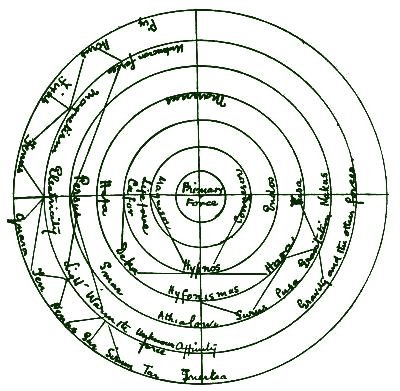
Fig. 1.
I can remember clearly that in the course of the winter of 1895 we spoke several times in S. W.'s presence of the forces of attraction and repulsion in connection with Kant's "Natural History of the Heavens"; we spoke also of the "Law of the Conservation of Energy," of the different forces of energy, and of the question whether the force of gravity was perhaps a form of movement. From this talk S. W. had plainly created the foundation of her mystic system. She gave the following explanation: The natural forces are arranged in seven circles. Outside these circles are three more, in which unknown forces intermediate between energy and matter are found. Matter is found in seven circles which surround ten inner ones. In the centre stands[42] the primary force, which is the original cause of creation and is a spiritual force. The first circle which surrounds the primary force is matter which is not really a force and does not arise from the primary force, but it unites with the primary force and from this union the first descendants are the spiritual forces; on the one hand the Good or Light Powers, on the other the Dark Powers. The Power Magnesor consists most of primary force; the Power Connesor, in which the dark might of matter is greatest, contains the least. The further outwards the primary force streams forth, the weaker it becomes, but weaker too becomes the power of matter, since its power is greatest where the collision with the primary power is most violent, i.e. in the Power Connesor. Within the circles there are fresh analogous forces of equal strength but making in the opposite direction. The system can also be described in a single series beginning with primary force, Magnesor, Cafor, etc., proceeding from left to right on the scheme and ascending with Tusa, Endos, ending with Connesor; only then the survey of the grade of intensity is made more difficult. Every force in the outer circle is combined from the nearest adjacent forces of the inner circle.
1. The Magnesor Group.—The so-called powers of Light descend in direct line from Magnesor, but slightly influenced by the dark side. The powers Magnesor and Cafor form together the so-called Life Force, which is no single power but is differently combined in animals and plants. Between Magnesor and Cafor there exists the Life Force of Man. Morally good men and those mediums who bring about interviews of good spirits on the earth have most Magnesor. Somewhere about the middle there stand the life forces of animals, and in Cafor that of plants. Nothing is known about Hefa, or rather S. W. can give no information. Persus is the fundamental power which comes to light in the phenomenon of the forces of locomotion. Its recognisable forces are Warmth, Light, Electricity, Magnetism, and two unknown forces, one of which only exists in comets. Of the powers of the seventh circle S. W. could only point out north[43] and south magnetism and positive and negative electricity. Deka is unknown. Smar is of peculiar significance, to be indicated below; it leads to—
2. Hypnos Group.—Hypnos and Hyfonismus are powers which only dwell within certain beings, in those who are in a position to exert a magnetic influence upon others. Athialowi is the sexual instinct. Chemical affinity is directly derived from it. In the ninth circle under it arises indolence (that is the line of Smar). Svens and Kara are of unknown significance. Pusa corresponds to Smar in the opposite sense.
3. The Connesor Group.—Connesor is the opposite pole of Magnesor. It is the dark and wicked power equal in intensity to the good power of light. While the good power creates, this one turns into the opposite. Endos is an elemental power of minerals. From these (significance unknown) gravitation proceeds, which on its side is designated as the elemental force of the forces of resistance that occur in phenomena (gravity, capillarity, adhesion and cohesion). Nakus is the secret power of a rare stone which controls the effect of snake poison. The two powers Smar and Pusa have a special importance. According to S. W., Smar develops in the bodies of morally good men at the moment of death. This power enables the soul to rise to the powers of light. Pusa behaves in the opposite way, for it is the power which conducts morally bad people to the dark side in the state of Connesor.
In the sixth circle the visible world begins, which only appears to be so sharply divided from the other side in consequence of the fickleness of our organs of sense. In reality the transition is a very gradual one, and there are people who live on a higher stage of knowledge because their perceptions and sensations are more delicate than those of others. Great seers are enabled to see manifestations of force where ordinary people can perceive nothing. S. W. sees Magnesor as a white or bluish vapour, which chiefly develops when good spirits are near. Connesor is a dark vapour-like fluid, which, like Magnesor, develops on the appearance of "black" spirits. For instance, the night before the beginning[44] of great visions the shiny vapour of Magnesor spreads in thick layers, out of which, the good spirits grow to visible white forces. It is just the same with Connesor. But these powers have their different mediums. S. W. is a Magnesor medium, as were the Prophetess of Prevorst and Swedenborg. The materialisation mediums of the spiritualists are mostly Connesor mediums, because materialisation takes place much more easily through Connesor on account of its close connection with the properties of matter. In the summer of 1900 S. W. tried several times to produce the circles of matter, but she never arrived at other than vague and incomprehensible hints and afterwards spoke no more about this.
Conclusion.—The really interesting and valuable séances came to an end with the production of the system of powers. Before this a gradual decline in the vividness of the ecstasies was noticeable. Ulrich von Gerbenstein came increasingly to the front, and filled up the séances with his childish chatter. The visions which S. W. had in the meantime likewise seem to have lost vividness and plasticity of formation, for S. W. was afterwards only able to feel pleasant sensations in the presence of good spirits, and disagreeableness in that of bad spirits. Nothing new was produced. There was something of uncertainty in the trance talks, as if feeling and seeking for the impression which she was making upon the audience, together with an increasing staleness in the content. In the outward behaviour of S. W. there arose also a marked shyness and uncertainty, so that the impression of wilful deception became ever stronger. The writer therefore soon withdrew from the séances. S. W. experimented afterwards in other circles, and six months after my leaving was caught cheating in flagranti delicto. She wanted to arouse again by spiritualistic experiments the lost belief in her supernatural powers; she concealed small objects in her dress, throwing them up in the air during the dark séance. With this her part was played out. Since then, eighteen months have passed during which I have not seen S. W. I have learnt from an observer who knew her in the[45] earlier days, that she has now and again strange states of short duration during which she is very pale and silent, and has a fixed glittering look. I did not hear any more of visions. She is said not to take part any longer in spiritualistic séances. S. W. is now in a large business, and according to all accounts is an industrious and responsible person who does her work eagerly and cleverly, giving entire satisfaction. According to the account of trustworthy persons, her character has much improved; she has become quieter, more regular and sympathetic. No other abnormalities have appeared in her. This case, in spite of its incompleteness, contains a mass of psychological problems whose exposition goes far beyond the limits of this little work. We must therefore be satisfied with a mere sketch of the various striking manifestations. For the sake of a more lucid exposition it seems better to review the various states separately.
1. The Waking State.—Here the patient shows various peculiarities. As we have seen, at school she was often distracted, lost herself in a peculiar way, was moody; her behaviour changes inconsequently, now quiet, shy, reserved, now lively, noisy and talkative. She cannot be called unintelligent, but she strikes one sometimes as narrow-minded, sometimes as having isolated intelligent moments. Her memory is good on the whole, but owing to her distraction it is much impaired. Thus, despite much discussion and reading of Kerner's "Seherin von Prevorst," for many weeks, she does not know, if directly asked, whether the author's name is Koerner or Kerner, nor the name of the Prophetess. All the same, when it occasionally comes up, the name Kerner is correctly written in the automatic communications. In general it may be said that her character has something extremely impulsive, incomprehensible, protean. Deducting the want of balance due to puberty, there remains a pathological residue which expresses itself in reactions which follow no rule and a bizarre unaccountable character. This character may be called déséquilibré, or unstable. Its specific mould is derived from traits which can certainly be regarded as hysterical. This is decidedly so in the conditions[46] of distraction. As Janet[22] maintains, the foundation of hysterical anæsthesia is the loss of attention. He was able to prove in youthful hysterics "a striking indifference and distracted attention in the whole region of the emotional life." Misreading is a notable instance, which beautifully illustrates hysterical dispersion of attention. The psychology of this process may perhaps be viewed as follows: during reading aloud attention becomes paralysed for this act and is directed towards some other object. Meanwhile the reading is continued mechanically, the sense impressions are received as before, but in consequence of the dispersion the excitability of the perceptive centre is lowered, so that the strength of the sense impression is no longer adequate to fix the attention in such a way that perception as such is conducted along the motor speech route; thus all the inflowing associations which at once unite with any new sense impression are repressed. The further psychological mechanism permits of only two possible explanations: (1) The admission of the sense impression is received unconsciously (because of the increase of threshold stimulus), in the perceptive centre just below the threshold of consciousness, and consequently is not incorporated in the attention and conducted back to the speech route. It only reaches verbal expression through the intervention of the nearest associations, in our case through the dialect expression[23] for the object. (2) The sense impression is perceived consciously, but at the moment of its entrance into the speech route it reaches a territory whose excitability is diminished by the dispersion of attention. At this place the dialect word is substituted by association for the motor speech image, and it is uttered as such. In either case it is certain that it is the acoustic dispersed attention which fails to correct the error. Which of the two explanations is correct cannot be proved in this case; probably both approach the truth, for the dispersion of attention seems to be general, and in each case concerns more than one of the centres engaged in the [47]act of reading aloud. In our case this phenomenon has a special value, for we have here a quite elementary automatic phenomenon. It may be called hysterical in so far as in this concrete case a state of exhaustion and intoxication, with its parallel manifestations, can be excluded. A healthy person only exceptionally allows himself to be so engaged by an object that he fails to correct the errors of a dispersed attention—those of the kind described. The frequency of these occurrences in the patient point to a considerable limitation of the field of consciousness, in so far as she can only master a relative minimum of elementary sensations flowing in at the same time. If we wish to describe more exactly the psychological state of the "psychic shady side," we might call it either a sleeping or a dream-state, according as passivity or activity predominated. There is, at all events, a pathological dream-state of very rudimentary extension and intensity and its genesis is spontaneous; dream-states arising spontaneously, with the production of automatisms, are generally regarded as hysterical on the whole. It must be pointed out that these instances of misreading occurred frequently in our subject, and that the term hysterical is employed in this sense; so far as we know, it is only on a foundation of hysterical constitution that spontaneous states of partial sleep or dreams occur frequently.
Binet[24] has studied experimentally the automatic substitution of some adjacent association in his hysterics. If he pricked the anæsthetic hand of the patient without his noticing the prick, he thought of "points"; if the anæsthetic finger was moved, he thought of "sticks" or "columns." When the anæsthetic hand, concealed from the patient's sight by a screen, writes "Salpêtrière," she sees in front of her the word "Salpêtrière" in white writing on a black ground. This recalls the experiments above referred to of Guinon and Sophie Waltke.
We thus find in our subject, at a time when there was nothing to indicate the later phenomena, rudimentary automatisms, fragments of dream manifestations, which imply in[48] themselves the possibility that some day more than one association would creep in between the perception of the dispersed attention and consciousness. The misreading shows us, moreover, a certain automatic independence of the psychical elements. This occasionally expands to a more or less fleeting dispersion of attention, although with very slight results which are never in any way striking or suspicious; this dispersedness approximates to that of the physiological dream. The misreading can be thus conceived as a prodromal symptom of the later events; especially as its psychology is prototypical for the mechanism of somnambulic dreams, which are indeed nothing but a many-sided multiplication and manifold variation of the elementary processes reviewed above. I never succeeded in demonstrating during my observations similar rudimentary automatisms. It would seem that in course of time the states of dispersed attention, to a certain extent beneath the surface of consciousness, at first of low degree have grown into these remarkable somnambulic attacks; hence they disappeared during the waking state, which was free from attacks. So far as concerns the development of the patient's character, beyond a certain not very extensive ripening, no remarkable change could be demonstrated during the observations lasting nearly two years. More remarkable is the fact that in the two years since the cessation (complete?) of the somnambulic attacks, a considerable change in character has taken place. We shall have occasion later on to speak of the importance of this observation.
Semi-Somnambulism.—In S. W.'s case the following condition was indicated by the term semi-somnambulism. For some time after and before the actual somnambulic attack the patient finds herself in a state whose most salient feature can best be described as "preoccupation." She only lends half an ear to the conversation around her, answers at random, often gets absorbed in all manner of hallucinations; her face is solemn, her look ecstatic, visionary, ardent. Closer observation discloses a far-reaching alteration of the entire character. She is now serious, dignified; when she[49] speaks her subject is always an extremely serious one. In this condition she can talk so seriously, forcibly and convincingly, that one is tempted to ask oneself if this is really a girl of fifteen and a half. One has the impression of a mature woman possessed of considerable dramatic talent. The reason for this seriousness, this solemnity of behaviour, is given in her explanation that at these times she stands at the frontier of this world and the other, and associates just as truly with the spirits of the dead as with living people. And, indeed, her conversation is usually divided between answers to real objective questions and hallucinatory ones. I call this state semi-somnambulism because it coincides with Richet's own definition. He[25] says: "La conscience de cet individu persiste dans son intégrité apparente, toutefois des opérations très compliquées vont s'accomplir en dehors de la conscience sans que le moi volontaire et conscient paraisse ressentir une modification quelconque. Une autre personne sera en lui qui agira, pensera, voudra, sans que la conscience, c'est à dire le moi réfléchi conscient, aît la moindre notion."
Binet[26] says of this term: "Le terme indique la parenté de cet état avec le somnambulisme véritable, et en suite il laisse comprendre que la vie somnambulique qui se manifeste durant la veille est réduite, déprimée, par la conscience normale qui la recouvre."
Automatisms.
Semi-somnambulism is characterised by the continuity of consciousness with that of the waking state and by the appearance of various automatisms which give evidence of an activity of the subconscious self, independent of that of consciousness.
Our case shows the following automatic phenomena:
(1) Automatic movements of the table.
(2) Automatic writing.
(3) Hallucinations.
1. Automatic Movements of the Table.—Before the patient came under my observation she had been influenced by the suggestion of "table-turning," which she had first come across as a game. As soon as she entered the circle there appeared communications from members of her family which showed her to be a medium. I could only find out that, as soon as ever her hand was placed on the table, the typical movements began. The resulting communications have no interest for us. But the automatic character of the act itself deserves some discussion, for we may, without more ado, set aside the imputation that there was any question of intentional and voluntary pushing or pulling on the part of the patient.
As we know from the investigations of Chevreul,[27] Gley, Lehmann and others, unconscious motor phenomena are not only of frequent occurrence among hysterical persons, and those pathologically inclined in other directions, but they are also relatively easily produced in normal persons who show no other spontaneous automatisms. I have made many experiments on these lines, and can confirm this observation. In the great majority of instances all that is required is enough patience to put up with an hour of quiet waiting. In most subjects, motor automatisms will be obtained in a more or less high degree if contra-suggestions do not intervene as obstacles. In a relatively small percentage the phenomena arise spontaneously, i.e. directly under the influence of verbal suggestion or of some earlier auto-suggestion. In this instance the case is powerfully affected by suggestion. In general, the particular predisposition is subject to all those laws which also hold good for normal hypnosis. Nevertheless, certain special circumstances are to be taken into account, conditioned by the peculiarity of the case. It is not a question of a total hypnosis, but of a partial one, limited entirely to the motor area of the arm, like the cerebral anæsthesia produced by "magnetic passes" for a painful spot in the[51] body. We touch the spot in question employing verbal suggestion or making use of some existing auto-suggestion, using the tactile stimulus which we know acts suggestively, to bring about the desired partial hypnosis. In accordance with this procedure, refractory subjects can be brought easily enough to an exhibition of automatism. The experimenter intentionally gives the table a slight push, or, better, a series of rhythmic but very slight taps. After a short time he notices that the oscillations become stronger, that they continue although he has interrupted his own intentional movements. The experiment has succeeded, the subject has unsuspectingly taken up the suggestion. By this procedure much more is obtained than by verbal suggestion. In very receptive persons and in all those cases where movement seems to arise spontaneously, the purposeful tremulous movements,[28] not perceptible by the subject, assume the rôle of agent provocateur.
In this way persons who, by themselves, have never obtained automatic movements of a coarse calibre, sometimes assume the unconscious guidance of the table-movements, provided that the tremors are strong and that the medium understands their meaning. In this case the medium takes control of the slight oscillations and returns them considerably strengthened, but rarely at exactly the same instant, generally a few seconds later, in this way revealing the agent's conscious or unconscious thought. By means of this simple mechanism there may arise those cases of thought-reading so bewildering at first sight. A very simple experiment, that succeeds in many cases even with unpractised persons, will serve to illustrate this. The experimenter thinks, say, of the number four, and then waits, his hands quietly resting on the table, until he feels that the table makes the first[52] inclination to announce the number thought of. He lifts his hands off the table immediately, and the number four will be correctly tilted out. It is advisable in this experiment to place the table upon a soft thick carpet. By close attention the experimenter will occasionally notice a movement of the table which is thus represented.
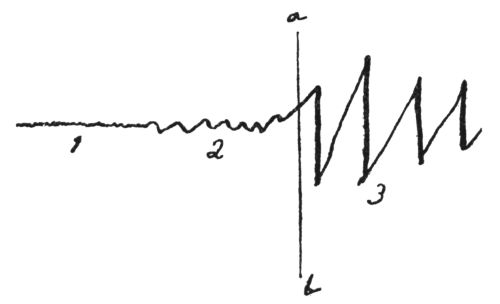
Fig. 2.
(1) Purposeful tremors too slight to be perceived by the subject.
(2) Several very small but perceptible oscillations of the table which indicate that the subject is responding to them.
(3) The big movements (tilts) of the table, giving the number four that was thought of.
(ab) Denotes the moment when the operator's hands are removed.
This experiment succeeds excellently with well-disposed but inexperienced subjects. After a little practice the phenomenon indicated is wont to disappear, since by practice the number is read and reproduced directly from the purposeful movements.[29]
In a responsive medium these purposeful tremors of the experimenter act just as the intentional taps in the experiment[53] cited above; they are received, strengthened and reproduced, although slightly wavering. Still they are perceptible and hence act suggestively as slight tactile stimuli, and by the increase of partial hypnosis give rise to great automatic movements. This experiment illustrates in the clearest way the increase step by step of auto-suggestion. Along the path of this auto-suggestion are developed all the automatic phenomena of a motor nature. How the intellectual content gradually mingles in with the purely motor need scarcely be elucidated after this discussion. There is no need of a special suggestion for the evoking of intellectual phenomena. From the outset it is a question of word-presentation, at least from the side of the experimenter. After the first aimless motor irrelevancies of the unpractised subject, some word-products or the intentions of the experimenter are soon reproduced. Objectively the occurrence of an intellectual content must be understood as follows:—
By the gradual increase of auto-suggestion the motor-range of the arm becomes isolated from consciousness, that is to say, the perception of the slight movement-impulse is concealed from consciousness.[30]
By the knowledge gained from consciousness that some intellectual content is possible, there results a collateral excitation in the speech-area as the means immediately at hand for intellectual notification. The motor part of word-presentation is necessarily chiefly concerned with this aiming at notification.[31] In this way we understand the unconscious flowing over of speech-impulse to the motor-area[32] and conversely the gradual penetration of partial hypnosis into the speech-area.
In numerous experiments with beginners, as a rule I have[54] observed at the beginning of intellectual phenomena a relatively large number of completely meaningless words, also often a series of meaningless single letters. Later on, all kinds of absurdities are produced, e.g. words or entire sentences with the letters irregularly misplaced or with the order of the letters all reversed—a kind of mirror-writing. The appearance of the letter or word indicates a new suggestion; some sort of association is involuntarily joined to it, which is then realised. Remarkably enough, these are not generally the conscious associations, but quite unexpected ones, a circumstance showing that a considerable part of the speech-area is already hypnotically isolated. The recognition of this automatism again forms a fruitful suggestion, since invariably at this moment the feeling of strangeness arises, if it is not already present in the pure motor-automatism. The question, "Who is doing this?" "Who is speaking?", is the suggestion for the synthesis of the unconscious personality which as a rule does not like being kept waiting too long. Any name is introduced, generally one charged with emotion, and the automatic splitting of the personality is accomplished. How accidental and how vacillating this synthesis is at its beginning, the following reports from the literature show. Myers[33] communicates the following interesting observation on a Mr. A., a member of the Society for Psychical Research, who was making experiments on himself in automatic writing.
Third Day.
Question: What is man?
Answer: TEFI H HASL ESBLE LIES.
Is that an anagram? Yes.
How many words does it contain? Five.
What is the first word? SEE.
What is the second word? SEEEE.
See? Shall I interpret it myself? Try to.
Mr. A. found this solution: "Life is less able." He was astonished at this intellectual information, which seemed to him to prove the existence of an intelligence independent of his own. Therefore he went on to ask:
Who are you? Clelia.
Are you a woman? Yes.
Have you ever lived upon the earth? No.
Will you come to life? Yes.
When? In six years.
Why are you conversing with me? E if Clelia el.
Mr. A. interpreted this answer as: I Clelia feel.
Fourth Day.
Question: Am I the one who asks the questions? Yes.
Is Clelia there? No.
Who is here then? Nobody.
Does Clelia exist at all? No.
With whom then was I speaking yesterday? With no one.
Janet[34] conducted the following conversation with the subconsciousness of Lucie, who, meanwhile, was engaged in conversation with another observer. "M'entendez-vous?" asks Janet. Lucie answers by automatic writing, "Non." "Mais pour répondre il faut entendre?" "Oui, absolument." "Alors comment faites-vous?" "Je ne sais." "Il faut bien qu'il y ait quelqu'un qui m'entend?" "Oui." "Qui cela! Autre que Lucie. Eh bien! Une autre personne. Voulez-vous que nous lui donnions un nom?" "Non." "Si, ce sera plus commode," "Eh bien, Adrienne!" "Alors, Adrienne, m'entendez-vous?" "Oui."
From these quotations it will be seen in what way the subconscious personality is constructed. It owes its origin purely to suggestive questions meeting a certain disposition[56] of the medium. The explanation is the result of the disintegration of the psychical complex; the feeling of the strangeness of such automatisms then comes in to help, as soon as conscious attention is directed to the automatic act. Binet[35] remarks on this experiment of Janet's: "Il faut bien remarquer que si la personnalité d'Adrienne a pu se créer, c'est qu'elle a rencontré une possibilité psychologique; en d'autres termes, il y avait là des phénomènes désagrégés vivant séparés de la conscience normale du sujet." The individualisation of the subconsciousness always denotes a considerable further step of great suggestive influence upon the further formation of automatisms.[36] So, too, we must regard the origin of the unconscious personalities in our case.
The objection that there is simulation in automatic table-turning may well be given up, when one considers the phenomenon of thought-reading from the purposeful tremors which the patient offered in such plenitude. Rapid, conscious thought-reading demands at the least an extraordinary degree of practice, which it has been shown the patient did not possess. By means of the purposeful tremors whole conversations can be carried on, as in our case. In the same way the suggestibility of the subconscious can be proved objectively if, for instance, the experimenter with his hand on the table desires that the hand of the medium should no longer be able to move the table or the glass; contrary to all expectation and to the liveliest astonishment of the subject, the table will immediately remain immovable. Naturally any other desired suggestions can be realised, provided they do not overstep by their innervations the region of partial hypnosis; this proves at the same time the limited nature of the hypnosis. Suggestions for the legs and the other arm will thus not be obeyed. Table-turning was not an automatism which belonged exclusively to the patient's semi-somnambulism: on the contrary, it [57]occurred in the most pronounced form in the waking state, and in most cases then passed over into semi-somnambulism, the appearance of this being generally announced by hallucinations, as it was at the first sitting.
2. Automatic Writing.—A second automatic phenomenon, which at the outset corresponds to a higher degree of partial hypnosis, is automatic writing. It is, according to my experience, much rarer and more difficult to produce than table-turning. As in table-turning, it is again a matter of a primary suggestion, to the conscious when sensibility is retained, to the unconscious when it is obliterated. The suggestion is, however, not a simple one, for it already bears in itself an intellectual element. "To write" means "to write something." This special element of the suggestion, which extends beyond the merely motor, often conditions a certain perplexity on the part of the subject, giving rise to slight contrary suggestions which hinder the appearance of the automatisms. I have observed in a few cases that the suggestion is realised, despite its relative venturesomeness (e.g. one directed towards the waking consciousness of a so-called normal person). However, it takes place in a peculiar way; it first displaces the purely motor part of the central system concerned in hypnosis, and the deeper hypnosis is then reached by auto-suggestion from the motor phenomenon, analogous to the procedure in table-turning described above. The subject,[37] who has a pencil in his hand, is purposely engaged in conversation whilst his attention is diverted from the writing. The hand begins to make movements, beginning with many upward strokes and zigzag lines, or a simple line is made. Occasionally it happens that the pencil does not touch the paper, but writes in the air. These movements must be conceived as purely motor phenomena, which correspond to the expression of the motor element in the presentation "write." This phenomenon is somewhat rare; generally single letters are first written, and what was said above of table-turning holds true of their combination into[58] words and sentences. True mirror-writing is also observed here and there. In the majority of cases, and perhaps in all experiments with beginners who are not under some very special suggestion, the automatic writing is that of the subject. Occasionally its character may be greatly changed,[38] but this is secondary, and is always to be regarded as a symptom of the intruding synthesis of a subconscious personality.
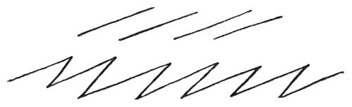
Fig. 3.
As stated, the patient's automatic writing never came to any very great development. In these experiments, generally carried out in darkness, she passed over into semi-somnambulism, or into ecstasy. The automatic writing had thus the same effect as the preliminary table-turning.
3. The Hallucinations.—The nature of the passing into somnambulism in the second séance is of psychological importance. As stated, the automatic phenomena were progressing favourably when darkness came on. The most interesting event of this séance, so far, was the brusque interruption of the communication from the grandfather, which was the starting-point of various debates amongst the members of the circle. These two momentous occurrences, the darkness and the striking event, seem to have been the foundation for a rapid deepening of hypnosis, in consequence of which the hallucinations could be developed. The psychological mechanism of this process seems to be as follows. The influence of darkness upon the suggestibility of the[59] sense-organs is well known.[39] Binet[40] states that it has a special influence on hysterics, producing a state of sleepiness. As is clear from the foregoing, the patient was in a state of partial hypnosis and had constituted herself one with the unconscious personality in closest relationship to her in the domain of speech. The automatic expression of this personality is interrupted most unexpectedly by a new person, of whose existence no one had any suspicion. Whence came this cleavage? Obviously the eager expectation of this first séance had very much occupied the patient. Her reminiscences of me and my family had probably grouped themselves around this expectation; hence these suddenly come to light at the climax of the automatic expression. That it was just my grandfather and no one else—not, e.g., my deceased father, who, as she knew, was much closer to me than the grandfather whom I had never known—perhaps suggests where the origin of this new person is to be sought. It is probably a dissociation of the personality already present which seized upon the material next at hand for its expression, namely, upon the associations concerning myself. How far this is parallel to the experiences revealed by dream investigation (Freud's[41]) must remain undecided, for we have no means of judging how far the effect mentioned can be considered a "repressed" one. From the brusque interruption of the new personality, we may conclude that the presentations concerned were very vivid, with corresponding intensity of expectation. This perhaps was an attempt to overcome a certain maidenly shyness and embarrassment. This event reminds us vividly of the manner in which the dream presents to consciousness, by a more or less transparent symbolism, things one has never said to oneself clearly and openly. We do not know when this dissociation of the new personality occurred, whether it had been slowly [60]prepared in the unconscious, or whether it first occurred in the séance. In any case, this event meant a considerable increase in the extension of the unconscious sphere rendered accessible through the hypnosis. At the same time this event must be regarded as powerfully suggestive in regard to the impression which it made upon the waking consciousness of the patient. For the perception of this unexpected intervention of a new power must inevitably excite a feeling of the strangeness of the automatisms, and would easily suggest the thought that an independent spirit is here making itself known. Hence the intelligible association that she would finally be able to see this spirit. The situation that ensued at the second séance is to be explained by the coincidence of this energising suggestion with the heightened suggestibility conditioned by the darkness. The hypnosis, and with it the series of dissociated presentations, break through to the visual area, and the expression of the unconscious, hitherto purely motor, is made objective, according to the measure of the specific energy of the new system, in the shape of visual images with the character of hallucinations; not as a mere accompanying phenomenon of the word-automatism, but as a substituted function. The explanation of the situation that arose in the first séance, at that time unexpected and inexplicable, is no longer presented in words, but as a descriptive allegorical vision. The sentence "they do not hate one another, but are friends," is expressed in a picture. We often encounter events of this kind in somnambulism. The thinking of somnambulists is given in plastic images which constantly break into this or that sense-sphere and are made objective in hallucinations. The process of reflection sinks into the subconscious; only its end-results arise to consciousness either as presentations vividly tinged by the senses, or directly as hallucinations. In our case the same thing occurred as in the patient whose anæsthetic hand Binet pricked nine times, making her think of the figure 9; or as in Flournoy's[42] Helen Smith,[61] who, when asked during business-hours about certain patterns, suddenly saw the number of days (18) for which they had been lent, at a length of 20 mm. in front of her. The further question arises, why does the automatism appear in the visual and not in the acoustic sphere? There are several grounds for this choice of the visual sphere.
(1) The patient is not gifted acoustically; she is, for instance, very unmusical.
(2) There was no stillness corresponding to the darkness which might have favoured the appearance of sounds; there was a lively conversation.
(3) The increased conviction of the near presence of spirits, because the automatism felt so strange, could easily have aroused the idea that a spirit might be seen, thus causing a slight excitation of the visual sphere.
(4) The entoptic phenomena in darkness favoured the occurrence of hallucinations.
The reasons (3) and (4)—the entoptic phenomena in the darkness and the probable excitation of the visual sphere—are of decisive importance for the appearance of hallucinations. The entoptic phenomena in this case play the same rôle in the auto-suggestion, the production of the automatism, as the slight tactile stimuli in hypnosis of the motor centre. As stated, flashes preceded the first hallucinatory twilight-state. Obviously attention was already at a high pitch, and directed to visual perceptions, so that the retina's own light, usually very weak, was seen with great intensity. The part played by entoptic perceptions of light in the origin of hallucinations deserves further consideration. Schüle[43] says: "The swarming of light and colour which stimulates and animates the field of vision, although in the dark, supplies the material for phantastic figures in the air before falling asleep. As we know, absolute darkness is never seen; a few particles of the dark field of vision are always illumined; flecks of light move here and there, and combine into all kinds of figures; it only needs a moderately active imagination to create[62] out of them, as one does out of clouds, certain known figures. The power of reasoning, fading as one falls asleep, leaves phantasy free play to construct very vivid figures. In the place of the light spots, haziness and changing colours of the dark visual field, there arise definite outlines of objects."[44]
In this way hypnagogic hallucinations arise. The chief rôle naturally belongs to the imagination, hence imaginative people in particular are subject to hypnagogic hallucinations.[45] The hypnopompic hallucinations described by Myers arise in the same way.
It is highly probable that hypnagogic pictures are identical with the dream-pictures of normal sleep—forming their visual foundation. Maury[46] has proved from self-observation that the pictures which hovered around him hypnagogically were also the objects of the dreams that followed. G. Trumbull Ladd[47] has shown this even more convincingly. By practice he succeeded in waking himself suddenly two to five minutes after falling asleep. He then observed that the figures dancing before the retina at times represented the same contours as the pictures just dreamed of. He even states that nearly every visual dream is shaped by the retina's own light-figures. In our case the fantastic rendering of these pictures was favoured by the situation. We must not underrate the influence of the over-excited expectation which allowed the dull retina-light to appear with increased intensity.[48] The further formation of the retinal [63]appearances follows in accordance with the predominating presentations. That hallucinations appear in this way has been also observed in other visionaries. Jeanne d'Arc[49] first saw a cloud of light, and only after some time there stepped forth St. Michael, St. Catherine and St. Margaret. For a whole hour Swedenborg[50] saw nothing but illuminated spheres and fiery flames. He felt a mighty change in the brain, which seemed to him "release of light." After the space of one hour he suddenly saw red figures which he regarded as angels and spirits. The sun visions of Benvenuto Cellini[51] in Engelsburg are probably of the same nature. A student who frequently saw apparitions stated: "When these apparitions come, at first I only see single masses of light and at the same time am conscious of a dull noise in the ears. Gradually these contours become clear figures."
The appearance of hallucinations occurred in a quite classical way in Flournoy's Helen Smith. I quote the cases in question from his article.[52]
"18 Mars. Tentative d'expérience dans l'obscurité. Mlle. Smith voit un ballon tantôt luminieux, tantôt s'obscurcissant.
"25 Mars. Mlle. Smith commence à distinguer de vagues lueurs, de longs rubans blancs, s'agitant du plancher au plafond, puis enfin une magnifique étoile qui dans l'obscurité s'est montrée à elle seule pendant toute la séance.
"1 Avril. Mlle. Smith se sent très agitée, elle a des frissons, est partiellement glacée. Elle est très inquiète et voit tout à coup se balançant au-dessus de la table une figure grimaçante et très laide avec de longs cheveux rouges. Elle voit alors un magnifique bouquet de roses de nuances diverses; tout à coup elle voit sortir de dessous le bouquet un petit serpent, qui, rampant doucement, vient sentir les fleurs, les regarde," etc.
Helen Smith[53] says in regard to the origin of her vision of March:
"La lueur rouge persista autour de moi et je me suis trouvée entourée de fleurs extraordinaires."
At all times the complex hallucinations of visionaries have occupied a peculiar place in scientific criticism. Macario[54] early separated these so-called intuition-hallucinations from others, since he maintains that they occur in persons of an eager mind, deep understanding and high nervous excitability. Hecker[55] expresses himself similarly but more enthusiastically.
His view is that their condition is "the congenital high development of the spiritual organ which calls into active, free and mobile play the life of the imagination, bringing it spontaneous activity." These hallucinations are "precursors or signs of mighty spiritual power." The vision is "an increased excitation which is harmoniously adapted to the most complete health of mind and body." The complex hallucinations do not belong to the waking state, but prefer as a rule a partial waking state. The visionary is buried in his vision even to complete annihilation. Flournoy was also always able to prove in the visions of H.S. "un certain degré d'obnubilation." In our case the vision is complicated by a state of sleep whose peculiarities we shall review later.
The Change in Character.
The most striking characteristic of the second stage in our case is the change in character. We meet many cases in the literature which have offered the symptom of spontaneous character-change. The first case in a scientific publication is Weir-Mitchell's[56] case of Mary Reynolds.
This was the case of a young woman living in Pennsylvania in 1811. After a deep sleep of about twenty hours she had totally forgotten her entire past and everything she had learnt; even the words she spoke had lost their meaning. She no longer knew her relatives. Slowly she re-learnt to read and write, but her writing was from right to left. More striking still was the change in her character. Instead of being melancholy, she was now cheerful in the extreme. Instead of being reserved, she was buoyant and sociable. Formerly taciturn and retiring, she was now merry and jocose. Her disposition was totally changed.[57]
In this state she renounced her former retired life and liked to undertake adventurous excursions unarmed, through wood and mountain, on foot and horseback. In one of these excursions she encountered a large black bear, which she took for a pig. The bear raised himself on his hind legs and gnashed his teeth at her. As she could not drive her horse on any further, she took an ordinary stick and hit the bear until it took to flight. Five weeks later, after a deep sleep, she returned to her earlier state with amnesia for the interval. These states alternated for about sixteen years. But her last twenty-five years Mary Reynolds passed exclusively in her second state.
Schroeder von der Kalk[58] reports on the following case: The patient became ill at the age of sixteen with periodic amnesia, after a previous tedious illness of three years. Sometimes in the morning after waking she passed through a peculiar choreic state, during which she made rhythmical movements with her arms. Throughout the whole day she would then exhibit a childish, silly behaviour and lost all her educated capabilities. (When normal she is very intelligent, well-read, speaks French well.) In the second state she begins to speak faulty French. On the second day she[66] is again at times normal. The two states are completely separated by amnesia.[59]
Hoefelt[60] reports on a case of spontaneous somnambulism in a girl who, in her normal state, was submissive and modest, but in somnambulism was impertinent, rude and violent. Azam's[61] Felida was, in her normal state, depressed, inhibited, timid; and in the second state lively, confident, enterprising to recklessness. The second state gradually became the chief one, and finally so far suppressed the first state that the patient called her normal states, lasting now but a short time, "crises." The amnesic attacks had begun at 14½. In time the second state became milder and there was a certain approximation between the character of the two states. A very striking example of change in character is that worked out by Camuset, Ribot, Legrand du Saulle, Richer, Voisin, and put together by Bourru and Burot.[62] It is that of Louis V., a severe male hysteric with amnesic alternating character. In the first stage he is rude, cheeky, querulous, greedy, thievish, inconsiderate. In the second state he is an agreeable, sympathetic character, industrious, docile and obedient. This amnesic change of character has been used by Paul Lindau[63] in his drama "Der Andere" (The Other One).
Rieger[64] reports on a case parallel to Lindau's criminal lawyer. The unconscious personalities of Janet's Lucie and Léonie (Janet, l.c.) and Morton Prince's[65] may also be regarded as parallel with our case. There are, however, therapeutic artificial products whose importance lies in the domain of the dissociation of consciousness and of memory.
In the above cases, the second state is always separated from the first by an amnesic dissociation, and the change [67]in character is, at times, accompanied by a break in the continuity of consciousness. In our case there is no amnesic disturbance; the passage from the first to the second stage follows quite gradually and the continuity of consciousness remains. The patient carries out in her waking state everything, otherwise unknown to her, from the field of the unconscious that she has experienced during hallucinations in the second stage.
Periodic changes in personality without amnesic dissociation are found in the region of folie circulaire, but are rarely seen in hysterics, as Renaudin's[66] case shows. A young man, whose behaviour had always been excellent, suddenly began to display the worst tendencies. There were no symptoms of insanity, but, on the other hand, the whole surface of the body was anæsthetic. This state showed periodic intervals, and in the same way the patient's character was subject to vacillations. As soon as the anæsthesia disappeared he was manageable and friendly. When the anæsthesia returned he was overcome by the worst instincts, which, it was observed, even included the wish to murder.
Remembering that our patient's age at the beginning of the disturbances was 14-1/2, that is, the age of puberty had just been reached, one must suppose that there was some connection between the disturbances and the physiological character-changes at puberty. "There appears in the consciousness of the individual during this period of life a new group of sensations, together with the feelings and ideas arising therefrom; this continuous pressure of unaccustomed mental states makes itself constantly felt because the cause is always at work; the states are co-ordinated because they arise from one and the same source, and must little by little bring about deep-seated changes in the ego."[67] Vacillating moods are easily recognisable; the confused new, strong feelings, the inclination towards idealism, to exalted religiosity and mysticism, side by side with the falling back[68] into childishness, all this gives to adolescence its prevailing character. At this epoch the human being first makes clumsy attempts at independence in every direction; for the first time uses for his own purposes all that family and school have contributed hitherto; he conceives ideals, constructs far-reaching plans for the future, lives in dreams whose content is ambitious and egotistic. This is all physiological. The puberty of a psychopathic is a crisis of more serious import. Not only do the psychophysical changes run a stormy course, but features of a hereditary degenerate character become fixed. In the child these do not appear at all, or but sporadically. For the explanation of our case we are bound to consider a specific disturbance of puberty. The reasons for this view will appear from a further study of the second personality. (For the sake of brevity we shall call the second personality Ivenes—as the patient baptised her higher ego).
Ivenes is the exact continuation of the everyday ego. She includes the whole of her conscious content. In the semi-somnambulic state her intercourse with the real external world is analogous to that of the waking state, that is, she is influenced by recurrent hallucinations, but no more than persons who are subject to non-confusional psychotic hallucinations. The continuity of Ivenes obviously extends to the hysterical attack with its dramatic scenes, visionary events, etc. During the attack itself she is generally isolated from the external world; she does not notice what is going on around her, does not know that she is talking loudly, etc. But she has no amnesia for the dream-content of her attack. Amnesia for her motor expressions and for the changes in her surroundings is not always present. That this is dependent upon the degree of intensity of her somnambulic state and that there is sometimes partial paralysis of individual sense organs is proved by the occasion when she did not notice me; her eyes were then open, and most probably she saw the others, although she only perceived me when I spoke to her. This is a case of so-called systematised anæsthesia (negative hallucination) which is often observed in hysterics.
Flournoy,[68] for instance, reports of Helen Smith that during the séances she suddenly ceased to see those taking part, although she still heard their voices and felt their touch; sometimes she no longer heard, although she saw the movements of the lips of the speakers, etc.
Ivenes is just the continuation of the waking self. She contains the entire consciousness of S. W.'s waking state. Her remarkable behaviour tells decidedly against any analogy with cases of double consciousness. The characteristics of Ivenes contrast favourably with the patient's ordinary self. She is a calmer, more composed personality; her pleasing modesty and accuracy, her uniform intelligence, her confident way of talking must be regarded as an improvement of the whole being; thus far there is analogy with Janet's Léonie. But this is the extent of the similarity. Apart from the amnesia, they are divided by a deep psychological difference. Léonie II. is the healthier, the more normal; she has regained her natural capabilities, she shows remarkable improvement upon her chronic condition of hysteria. Ivenes rather gives the impression of a more artificial product; there is something thought out; despite all her excellences she gives the impression of playing a part excellently; her world-sorrow, her yearning for the other side of things, are not merely piety but the attributes of saintliness. Ivenes is no mere human, but a mystic being who only partly belongs to reality. The mournful features, the attachment to sorrow, her mysterious fate, lead us to the historic prototype of Ivenes—Justinus Kerner's "Prophetess of Prevorst." Kerner's book must be taken as known, and therefore I omit any references to these common traits. But Ivenes is no copy of the prophetess; she lacks the resignation and the saintly piety of the latter. The prophetess is merely used by her as a study for her own original conception. The patient pours her own soul into the rôle of the prophetess, thus seeking to create an ideal of virtue and perfection. She anticipates her future. She incarnates in Ivenes what she wishes to be in twenty years—the assured, influential, wise, gracious,[70] pious lady. It is in the construction of the second person that there lies the far-reaching difference between Léonie II. and Ivenes. Both are psychogenic. But Léonie I. receives in Léonie II. what really belongs to her, while S. W. builds up a person beyond herself. It cannot be said "she deceives herself" into, but that "she dreams herself" into the higher ideal state.[69]
The realisation of this dream recalls vividly the psychology of the pathological cheat. Delbruck[70] and Forel[71] have indicated the importance of auto-suggestion in the formation of pathological cheating and reverie. Pick[72] regards intense auto-suggestibility as the first symptom of the hysterical dreamer, making possible the realisation of the "day-dream." One of Pick's patients dreamt that she was in a morally dangerous situation, and finally carried out an attempt at rape on herself; she lay on the floor naked and fastened herself to a table and chairs. Or some dramatic person will be created with whom the patient enters into correspondence by letter, as in Bohn's case.[73] The patient dreamt herself into an engagement with a totally imaginary lawyer in Nice, from whom she received letters which she had herself written in disguised handwriting. This pathological dreaming, with auto-suggestive deceptions of memory amounting to real delusions and hallucinations, is pre-eminently to be found in the lives of many saints.[74]
It is only a step from the dreamlike images strongly [71]stamped by the senses to the true complex hallucinations.[75] In Pick's case, for instance, one sees that the patient, who persuades herself that she is the Empress Elizabeth, gradually loses herself in her dreams to such an extent that her condition must be regarded as a true "twilight" state. Later it passes over into hysterical delirium, when her dream-phantasies become typical hallucinations. The pathological liar, who becomes involved through his phantasies, behaves exactly like a child who loses himself in his play, or like the actor who loses himself in his part.[76] There is here no fundamental distinction from somnambulic dissociation of personality, but only a difference of degree, which rests upon the intensity of the primary auto-suggestibility or disintegration of the psychic elements. The more consciousness becomes dissociated, the greater becomes the plasticity of the dream situation, the less becomes the amount of conscious lying and of consciousness in general. This being carried away by interest in the object is what Freud calls hysterical identification. For instance, to Erler's[77] acutely hysterical patient there appeared hypnagogically little riders made of paper, who so took possession of her imagination that she had the feeling of being herself one of them. Similar phenomena normally occur to us in dreams in general, in which we think like "hysterics."[78]
The complete abandonment to the interesting image explains also the wonderful naturalness of pseudological or somnambulic representation—a degree unattainable in conscious acting. The less waking consciousness intervenes by reflection and reasoning, the more certain and convincing becomes the objectivation of the dream, e.g. the roof-climbing of somnambulists.
Our case has another analogy with pseudologia phantastica: [72]The development of the phantasies during the attacks. Many cases are known in the literature where the pathological lying comes on in attacks and during serious hysterical trouble.[79]
Our patient develops her systems exclusively in the attack. In her normal state she is quite incapable of giving any new ideas or explanations; she must either transpose herself into somnambulism or await its spontaneous appearance. This exhausts the affinity to pseudologia phantastica and to pathological dream-states.
Our patient's state is even differentiated from pathological dreaming, since it could never be proved that her dream-weavings had at any time previously been the objects of her interest during the day. Her dreams occur explosively, break forth with bewildering completeness from the darkness of the unconscious. Exactly the same was the case in Flournoy's Helen Smith. In many cases (see below), however, links with the perceptions of the normal states can be demonstrated: it seems therefore probable that the roots of every dream were originally images with an emotional accentuation, which, however, only occupied waking consciousness for a short time.[80] We must allow that in the origin of such dreams hysterical forgetfulness[81] plays a part not to be underestimated.
Many images are buried which would be sufficient to put the consciousness on guard; associated classes of ideas[73] are lost and go on spinning their web in the unconscious, thanks to the psychic dissociation; this is a process which we meet again in the genesis of our dreams.
"Our conscious reflection teaches us that when exercising attention we pursue a definite course. But if that course leads us to an idea which does not meet with our approval, we discontinue and cease to apply our attention. Now, apparently, the chain of thought thus started and abandoned, may go on without regaining attention unless it reaches a spot of especially marked intensity, which compels renewed attention. An initial rejection, perhaps consciously brought about by the judgment on the ground of incorrectness or unfitness for the actual purpose of the mental act, may therefore account for the fact that a mental process continues unnoticed by consciousness until the onset of sleep."[82]
In this way we may explain the apparently sudden and direct appearance of dream-states. The entire carrying over of the conscious personality into the dream-rôle involves indirectly the development of simultaneous automatisms. "Une seconde condition peut amener la division de conscience; ce n'est pas une altération de la sensibilité, c'est une attitude particulière de l'esprit, la concentration de l'attention pour un point unique; il résulte de cet état de concentration que l'esprit devient distrait pour la reste et en quelque sorte insensible, ce qui ouvre la carrière aux actions automatiques, et ces actions peuvent prendre un caractère psychique et constituer des intelligences parasites, vivant côte à côte avec la personnalité normale qui ne les connaît pas."[83]
Our subject's romances throw a most significant light on the subjective roots of her dreams. They swarm with secret and open love-affairs, with illegitimate births and other sexual insinuations. The central point of all these ambiguous stories is a lady whom she dislikes, who is gradually made to assume the form of her polar opposite, and whilst Ivenes becomes the pinnacle of virtue, this lady is a sink of iniquity. But her reincarnation doctrines, in which she appears as the[74] mother of countless thousands, arises in its naïve nakedness from an exuberant phantasy which is, of course, very characteristic of the period of puberty. It is the woman's premonition of the sexual feeling, the dream of fruitfulness, which the patient has turned into these monstrous ideas. We shall not go wrong if we seek for the curious form of the disease in the teeming sexuality of this too-rich soil. Viewed from this standpoint, the whole creation of Ivenes, with her enormous family, is nothing but a dream of sexual wish-fulfilment, differentiated from the dream of a night only in that it persists for months and years.
Relation to the Hysterical Attack.
So far one point in S. W.'s history has remained unexplained, and that is her attack. In the second séance she was suddenly seized with a sort of fainting fit, from which she awoke with a recollection of various hallucinations. According to her own statement, she had not lost consciousness for a moment. Judging from the external symptoms and the course of the attack, one is inclined to regard it as a narcolepsy, or rather a lethargy; such, for example, as Loewenfeld has described, and the more readily as we know that previously one member of her family (her grandmother) has had an attack of lethargy. It is possible to imagine that the lethargic disposition (Loewenfeld) had descended to our subject. In spiritualistic séances it is not usual to see hysterical convulsions. Our subject showed no sort of convulsive symptoms, but in their place, perhaps, the peculiar sleeping-states. Ætiologically, at the outset, two moments must be taken into consideration:
1. The irruption of hypnosis.
2. The psychic stimulation.
1. Irruption of Partial Hypnosis.—Janet observes that the[75] subconscious automatisms have a hypnotic influence and can bring about complete somnambulism.[84]
He made the following experiment: While the patient, who was in the completely waking state, was engaged in conversation by a second observer, Janet stationed himself behind her and by means of whispered suggestions made her unconsciously move her hand and by written signs give an answer to questions. Suddenly the patient broke off the conversation, turned round and with her supraliminal consciousness continued the previously subconscious talk with Janet. She had fallen into hypnotic somnambulism.[85]
There is here a state of affairs similar to our patient's. But it must be noted that, for certain reasons discussed later, the sleeping state is not to be regarded as hypnotic. We therefore come to the question of—
2. The Psychic Stimulation.—It is told of Bettina Brentano that the first time she met Goethe she suddenly fell asleep on his knee.[86]
This ecstatic sleep in the midst of extremest torture, the so-called "witch-sleep," is well known in the history of trials for witchcraft.[87]
With susceptible subjects relatively insignificant stimuli suffice to bring about the somnambulic state. Thus a sensitive lady had to have a splinter cut out of her finger. Without any kind of bodily change she suddenly saw herself sitting by the side of a brook in a beautiful meadow, plucking flowers. This condition lasted as long as the slight operation and then disappeared spontaneously.[88]
Loewenfeld[89] has noticed unintentional inducement of hysterical lethargy through hypnosis.
Our case has certain resemblances to hysterical lethargy[90] as described by Loewenfeld, viz. the shallow breathing, the diminution of the pulse, the corpse-like pallor of the face, and further the peculiar feeling of dying and the thoughts of death.[91]
The retention of one sense is not inconsistent with lethargy: thus in certain cases of trance the sense of hearing remains.[92]
In Bonamaison's[93] case not only was the sense of touch retained, but the senses of hearing and smell were quickened. The hallucinatory content and loud speaking is also met with in persons with hallucinations in lethargy.[94] Usually there prevails total amnesia for the lethargic interval. Loewenfeld's[95] case D. had, however, a fleeting recollection; in Bonamaison's case there was no amnesia. Lethargic patients do not prove susceptible to the usual waking stimuli, but Loewenfeld succeeded with his patient St. in turning the lethargy into hypnosis by means of mesmeric passes, thus combining it with the rest of consciousness during the attack.[96] Our patient showed herself absolutely insusceptible in the beginning of the lethargy, but later on she began to speak spontaneously, was incapable of giving any attention when her somnambulic ego was speaking, but could attend when it was one of her automatic personalities. In this last case it is probable that the hypnotic effect of the automatisms succeeded in achieving a partial transformation of the lethargy into hypnosis. When we consider that, according to Loewenfeld's view, the lethargic disposition must not be "too readily identified with the peculiar condition of the nervous apparatus in hysteria," then the idea of the family[77] heredity of this disposition in our case becomes not a little probable. The disease is much complicated by these attacks.
So far we have seen that the patient's consciousness of her ego is identical in all the states. We have discussed two secondary complexes of consciousness and have followed them into the somnambulic attack, where they appear as the patient's vision when she had lost her motor activity during the attack. During the next attacks she was impervious to any external incidents, but on the other hand developed, within the twilight state, all the more intense activity, in the form of visions. It seems that many secondary series of ideas must have split off quite early from the primary unconscious personality, for already, after the first two séances, "spirits" appeared by the dozen. The names were inexhaustible in variety, but the differences between the personalities were soon exhausted and it became apparent that they could all be subsumed under two types, the serio-religious type and the gay-hilarious. So far it was really only a matter of two different unconscious personalities, which appeared under different names but had no essential differences. The older type, the grandfather, who had initiated the automatisms, also first began to make use of the twilight state. I am not able to remember any suggestion which might have given rise to the automatic speaking. According to the preceding view, the attack in such circumstances might be regarded as a partial auto-hypnosis. The ego-consciousness which remains and, as a result of its isolation from the external world, occupies itself entirely with its hallucinations, is what is left over of the waking consciousness. Thus the automatism has a wide field for its activity. The independence of the individual central spheres which we have proved at the beginning to be present in the patient, makes the automatic act of speaking appear intelligible. Just as the dreamer on occasion speaks in his sleep, so, too, a man in his waking hours may accompany intensive thought with an unconscious whisper.[97] The peculiar movements of[78] the speech-musculature are to be noted. They have also been observed in other somnambulists.[98]
These clumsy attempts must be directly paralleled with the unintelligent and clumsy movements of the table or glass, and most probably correspond to the preliminary activity of the motor portion of the presentation; that is to say, a stimulus limited to the motor-centre which has not previously been subordinated to any higher system. Whether the like occurs in persons who talk in their dreams, I do not know. But it has been observed in hypnotised persons.[99]
Since the convenient medium of speech was used as the means of communication, the study of the subconscious personalities was considerably lightened. Their intellectual compass is a relatively mediocre one. Their knowledge is greater than that of the waking patient, including also a few occasional details, such as the birthdays of dead strangers and the like. The source of these is more or less obscure, since the patient does not know whence in the ordinary way she could have procured the knowledge of these facts. These are cases of so-called cryptomnesia, which are too unimportant to deserve more extended notice. The intelligence of the two subconscious persons is very slight; they produce banalities almost exclusively, but their relation to the conscious ego of the patient when in the somnambulic state is interesting. They are invariably aware of everything that takes place during ecstasy and occasionally they render an exact report from minute to minute.[100]
The subconscious persons only know the patient's phantastic changes of thought very superficially; they do not[79] understand these and cannot answer a single question concerning the situation. Their stereotyped reference to Ivenes is: "Ask Ivenes." This observation reveals a dualism in the character of the subconscious personalities difficult to explain; for the grandfather, who gives information by automatic speech, also appears to Ivenes and, according to her account, teaches her about the objects in question. How is it that, when the grandfather speaks through the patient's mouth, he knows nothing of the very things which he himself teaches her in the ecstasies?
We must again return to the discussion of the first appearance of the hallucinations. We picture the vision, then, as an irruption of hypnosis into the visual sphere. That irruption does not lead to a "normal" hypnosis, but to a "hystero-hypnosis," that is, the simple hypnosis is complicated by a hysterical attack.
It is not a rare occurrence in the domain of hypnotism for normal hypnosis to be disturbed, or rather to be replaced by the unexpected appearance of hysterical somnambulism; the hypnotist in many cases then loses rapport with the patient. In our case the automatism arising in the motor area plays the part of hypnotist; the suggestions proceeding from it (called objective auto-suggestions) hypnotise the neighbouring areas in which a certain susceptibility has arisen. At the moment when the hypnotism flows over into the visual sphere, the hysterical attack occurs which, as remarked, effects a very deep-reaching change in a large portion of the psychical region. We must now suppose that the automatism stands in the same relationship to the attack as the hypnotist to a pathological hypnosis; its influence upon the further structure of the situation is lost. The hallucinatory appearance of the hypnotised personality, or rather of the suggested idea, may be regarded as the last effect upon the somnambulic personality. Thenceforward the hypnotist becomes only a figure with whom the somnambulic personality occupies itself independently: he can only state what is going on and is no longer the conditio sine qua non of the content of the somnambulic attack. The independent ego-complex of the attack, in our case Ivenes, has now the[80] upper hand. She groups her own mental products around the personality of the hypnotiser, that is, of the grandfather, now degraded to a mere image. In this way we are enabled to understand the dualism in the character of the grandfather. The grandfather I. who speaks directly to those present, is a totally different person and a mere spectator of his double, grandfather II., who appears as Ivenes' teacher. Grandfather I. maintains energetically that both are one and the same person, and that I. has all the knowledge which II. possesses, and is only prevented from giving information by the difficulties of speech. (The dissociation was of course not realized by the patient, who took both to be one person.) Grandfather I., if closely examined, however, is not altogether wrong, judging from one fact which seems to make for the identity of I. and II., viz. that they are never both present together. When I. speaks automatically, II. is not present; Ivenes remarks on his absence. Similarly, during the ecstasy, when she is with II., she cannot say where I. is, or she may learn only on returning from an imaginary journey that meanwhile I. has been guarding her body. Conversely I. never says that he is going on a journey with Ivenes and never explains anything to her. This behaviour should be noted, for if I. is really separate from II., there seems no reason why he should not speak automatically at the same time that II. appears, and be present with II. in the ecstasy. Although this might have been supposed possible, as a matter of fact it was never observed. How is this dilemma to be resolved? At all events there exists an identity of I. and II., but it does not lie in the region of the personality under discussion; it lies in the basis common to both; that is, in the personality of the subject which in deepest essence is one and indivisible. Here we come across the characteristic of all hysterical dissociations of consciousness. They are disturbances which only belong to the superficial, and none reaches so deep as to attack the strong-knit foundation of the ego-complex.
In many such cases we can find the bridge which, although often well-concealed, spans the apparently impassable abyss.[81] For instance, by suggestion, one of four cards is made invisible to a hypnotised person; he thereupon names the other three. A pencil is placed in his hand with the instruction to write down all the cards lying there; he correctly adds the fourth one.[101]
In the aura of his hystero-epileptic attacks a patient of Janet's[102] invariably had a vision of a conflagration, and whenever he saw an open fire he had an attack; indeed, the sight of a lighted match was sufficient to bring about an attack. The patient's visual field on the left side was limited to 30°, the right eye was shut. The left eye was fixed in the middle of a perimeter whilst a lighted match was held at 80°. The hystero-epileptic attack took place immediately. Despite the extensive amnesia in many cases of double consciousness, the patients' behaviour does not correspond to the degree of their ignorance, but it seems rather as if a deeper instinct guided their actions in accordance with their former knowledge. Not only this relatively slight amnesic dissociation, but the severe amnesia of the epileptic twilight-state, formerly regarded as irreparabile damnum, does not suffice to cut the inmost threads which bind the ego-complex in the twilight-state to the normal ego. In one case the content of the twilight-state could be grafted on to the waking ego-complex.[103]
Making use of these experiments for our case, we obtain the helpful hypothesis that those layers of the unconscious beyond reach of the dissociation endeavour to present the unity of automatic personality. This endeavour is shattered in the deeper-seated and more elemental disturbance of the hysterical attack,[104] which prevents a more complete synthesis by the tacking on of associations which are to a certain extent the most original individual property of supraliminal personality. As the Ivenes dream emerged it was fitted on to the figures accidentally in the field of vision, and henceforth remains associated with them.
Relationship to the Unconscious Personality.
As we have seen, the numerous personalities become grouped round two types, the grandfather and Ulrich von Gerbenstein. The first produces exclusively sanctimonious religiosity and gives edifying moral precepts. The latter is, in one word, a "flapper," in whom there is nothing male except the name. We must here add from the anamnesis that at fifteen the patient was confirmed by a very bigoted clergyman, and at home she is occasionally the recipient of sanctimonious moral talks. The grandfather represents this side of her past, Gerbenstein the other half; hence the curious contrast. Here we have personified the chief characteristics of her past. On the one hand the sanctimonious person with a narrow education, on the other the boisterousness of a lively girl of fifteen who often overshoots the mark.[105] We find both sets of traits mixed in the patient in sharp contrast. At times she is anxious, shy, and extremely reserved; at others boisterous to a degree. She is herself often most painfully aware of these contradictions. This circumstance gives us the key to the source of the two unconscious personalities. The patient is obviously seeking a middle path between the two extremes; she endeavours to repress them and strains after some ideal condition. These strainings bring her to the puberty dream of the ideal Ivenes, beside whose figure the unacknowledged trends of her character recede into the background. They are not lost, however, but as repressed ideas, analogous to the Ivenes idea, begin an independent existence as automatic personalities.
S. W.'s behaviour recalls vividly Freud's[106] investigations into dreams which disclose the independent growth of repressed thoughts. We can now comprehend why the hallucinatory persons are separated from those who write and speak [83]automatically. The former teach Ivenes the secrets of the Other Side, they relate all those phantastic tales about the extraordinariness of her personality, they create scenes where Ivenes can appear dramatically with the attributes of power, wisdom and virtue. These are nothing but dramatic dissociations of her dream-self. The latter, the automatic persons, are the ones to be overcome, they must have no part in Ivenes. With the spirit-companions of Ivenes they have only the name in common. A priori, it is not to be expected that in a case like ours, where these divisions are never clearly defined, that two such characteristic individualities should disappear entirely from a somnambulic ego-complex having so close a relation with the waking consciousness. And in fact, we do meet them in part in those ecstatic penitential scenes and in part in the romances crammed with more or less banal, mischievous gossip.
Course.
It only remains to say a few words about the course of this strange affection. The process reached its maximum in four to eight weeks. The descriptions given of Ivenes and of the unconscious personalities belong generally to this period. Thenceforth a gradual decline was noticeable; the ecstasies grew meaningless and the influence of Gerbenstein became more powerful. The phenomena gradually lost their distinctive features, the characters which were at first well demarcated became by degrees inextricably mixed. The psychological contribution grew smaller and smaller until finally the whole story assumed a marked effect of fabrication. Ivenes herself was much concerned about this decline; she became painfully uncertain, spoke cautiously, feeling her way, and allowed her character to appear undisguised. The somnambulic attacks decreased in frequency and intensity. All degrees from somnambulism to conscious lying were observable. Thus the curtain fell. The patient[84] has since gone abroad. We should not underestimate the importance of the fact that her character has become pleasanter and more stable. Here we may recall the cases cited in which the second state gradually replaced the first state. Perhaps this is a similar phenomenon.
It is well known that somnambulic manifestations sometimes begin at puberty.[107] The attacks of somnambulism in Dyce's case[108] began immediately before puberty and lasted just till its termination. The somnambulism of H. Smith is likewise closely connected with puberty.[109]
Schroeder von der Kalk's patient was 16 years old at the time of her illness; Felida 14-1/2, etc. We know also that at this period the future character is formed and fixed. In the case of Felida and of Mary Reynolds we saw that the character in state II. replaced that of state I. It is not therefore unthinkable that these phenomena of double consciousness are nothing but character-formations for the future personality, or their attempts to burst forth. In consequence of special difficulties (unfavourable external conditions, psychopathic disposition of the nervous system, etc.), these new formations, or attempts thereat, become bound up with peculiar disturbances of consciousness. Occasionally the somnambulism, in view of the difficulties that oppose the future character, takes on a marked teleological meaning, for it gives the individual, who might otherwise be defeated, the means of victory. Here I am thinking first of all of Jeanne d'Arc, whose extraordinary courage recalls the deeds of Mary Reynolds' II. This is perhaps the place to point out the similar function of the "hallucination téléologique" of which the public reads occasionally, although it has not yet been submitted to a scientific study.
The Unconscious Additional Creative Work.
We have now discussed all the essential manifestations offered by our case which are of significance for its inner[85] structure. Certain accompanying manifestations may be briefly considered: the unconscious additional creative work. Here we shall encounter a not altogether unjustifiable scepticism on the part of the representative of science. Dessoir's conception of a second ego met with much opposition, and was rejected, as too impossible in many directions. As is known, occultism has proclaimed a pre-eminent right to this field and has drawn premature conclusions from doubtful observations. We are indeed very far from being in a position to state anything conclusive, since we have at present only most inadequate material. Therefore if we touch on the field of the unconscious additional creative work, it is only that we may do justice to all sides of our case. By unconscious addition we understand that automatic process whose result does not penetrate to the conscious psychic activity of the individual. To this region above all belongs thought-reading through table movements. I do not know whether there are people who can divine a whole long train of thought by means of inductions from the intentional tremulous movements. It is, however, certain that, assuming this to be possible, such persons must be availing themselves of a routine achieved after endless practice. But in our case long practice can be excluded without more ado, and there is nothing left but to accept a primary susceptibility of the unconscious, far exceeding that of the conscious.
This supposition is supported by numerous observations on somnambulists. I will mention only Binet's[110] experiments, where little letters or some such thing, or little complicated figures in relief were laid on the anæsthetic skin of the back of the hand or the neck, and the unconscious perceptions were then recorded by means of signs. On the basis of these experiments he came to the following conclusion: "D'après les calculs que j'ai pu faire, la sensibilité inconsciente d'une hystérique est à certains moments cinquante fois plus fine que celle d'une personne normale." A second additional creation coming under consideration in our case and in numerous[86] other somnambulists, is that condition which French investigators call "cryptomnesia."[111] By this term is meant the becoming conscious of a memory-picture which cannot be regarded as in itself primary, but at most is secondary, by means of subsequent recalling or abstract reasoning. It is characteristic of cryptomnesia that the picture which emerges does not bear the obvious mark of the memory-picture, is not, that is to say, bound up with the idiosyncratic super-conscious ego-complex.
Three ways may be distinguished in which the cryptomnesic picture is brought to consciousness.
1. The picture enters consciousness without any intervention of the sense-spheres (intra-psychically). It is an inrushing idea whose causal sequence is hidden within the individual. In so far cryptomnesia is quite an everyday occurrence, concerned with the deepest normal psychic events. How often it misleads the investigator, the author or the composer into believing his ideas original, whilst the critic quite well recognises their source! Generally the individuality of the representation protects the author from the accusation of plagiarism and proves his good faith; still, cases do occur of unconscious verbal reproduction. Should the passage in question contain some remarkable idea, the accusation of plagiarism, more or less conscious, is justified. After all, a valuable idea is linked by numerous associations with the ego-complex; at different times, in different situations, it has already been meditated upon and thus leads by innumerable links in all directions. It can therefore never so disappear from consciousness that its continuity could be entirely lost from the sphere of conscious memory. We have, however, a criterion by which we can always recognise objectively intra-psychic cryptomnesia. The cryptomnesic presentation is linked to the ego-complex by the minimum of associations. The reason for this lies in the relation of the individual to the particular object, in the disproportion of interest to[87] object. Two possibilities occur: (1) The object is worthy of interest but the interest is slight in consequence of dispersion or want of understanding; (2) The object is not worthy of interest, consequently the interest is slight. In both cases an extremely labile connection with consciousness arises which leads to a rapid forgetting. The slight bridge is soon destroyed and the acquired presentation sinks into the unconscious, where it is no longer accessible to consciousness. Should it enter consciousness by means of cryptomnesia, the feeling of strangeness, of its being an original creation, will cling to it because the path by which it entered the subconscious has become undiscoverable. Strangeness and original creation are, moreover, closely allied to one another if one recalls the numerous witnesses in belles-lettres to the nature of genius ("possession" by genius).[112]
Apart from certain striking cases of this kind, where it is doubtful whether it is a cryptomnesia or an original creation, there are some cases in which a passage of no essential content is reproduced, and that almost verbally, as in the following example:—
About that time when Zarathustra lived on the blissful islands, it came to pass that a ship cast anchor at that island on which the smoking mountain standeth; and the sailors of that ship went ashore in order to shoot rabbits! But about the hour of noon, when the captain and his men had mustered again, they suddenly saw a man come through the air unto them, and a voice said distinctly: "It is time! It is high time!" But when that person was nighest unto them (he passed by them flying quickly like a shadow, in the direction in which the volcano was situated) they recognised with the greatest confusion that it was Zarathustra. For all of them, except the captain, had seen him before, and they loved him, as the folk love, blending love and awe in equal parts. "Lo! there," said the old steersman, "Zarathustra goeth unto hell!"
An extract of awe-inspiring import from the log of the ship "Sphinx" in the year 1686, in the Mediterranean.
Just. Kerner, "Blätter aus Prevorst," vol. IV., p, 57.
The four captains and a merchant, Mr. Bell, went ashore on the island of Mount Stromboli to shoot rabbits. At three o'clock they called the crew together to go aboard, when, to their inexpressible astonishment, they saw two men flying rapidly over them through the air. One was dressed in black, the other in grey. They approached them very closely, in the greatest haste; to their greatest dismay they descended amid the burning flames into the crater of the terrible volcano, Mount Stromboli. They recognised the pair as acquaintances from London.
Frau E. Förster-Nietzsche, the poet's sister, told me, in reply to my inquiry, that Nietzsche took up Just. Kerner between the age of twelve and fifteen, when stopping with his grandfather, Pastor Oehler, in Pobler, but certainly never afterwards. It could never have been the poet's intention to commit a plagiarism from a ship's log; if this had been the case, he would certainly have omitted the very prosaic "to shoot rabbits," which was, moreover, quite unessential to the situation. In the poetical sketch of Zarathustra's journey into Hell there was obviously interpolated, half or wholly unconsciously, that forgotten impression from his youth.
This is an instance which shows all the peculiarities of cryptomnesia. A quite unessential detail, which deserves nothing but speedy forgetting, is reproduced with almost verbal fidelity, whilst the chief part of the narrative is, one[89] cannot say altered, but recreated quite distinctively. To the distinctive core, the idea of the journey to Hell, there is added a detail, the old, forgotten impression of a similar situation. The original is so absurd that the youth, who read everything, probably skipped through it, and certainly had no deep interest in it. Here we get the required minimum of associated links, for we cannot easily conceive a greater jump, than from that old, absurd story to Nietzsche's consciousness in the year 1883. If we picture to ourselves Nietzsche's mood at the time when "Zarathustra" was composed,[113] and think of the ecstasy that at more than one point approached the pathological, we shall comprehend the abnormal reminiscence. The second of the two possibilities mentioned, the acceptance of some object, not itself uninteresting, in a state of dispersion or half interest from lack of understanding, and its cryptomnesic reproduction we find chiefly in somnambulists; it is also found in the literary chronicles dealing with dying celebrities.[114]
Amid the exhaustive selection of these phenomena we are chiefly concerned with talking in a foreign tongue, the so-called glossolalia. This phenomenon is mentioned everywhere when it is a question of similar ecstatic conditions. In the New Testament, in the Acta Sanctorum,[115] in the Witchcraft Trials, more recently in the Prophetess of Prevorst, in Judge Edmond's daughter Laura, in Flournoy's Helen Smith. The last is unique from the point of view of investigation; it is found also in Bresler's[116] case, which is probably identical[90] with Blumhardt's[117] Gottlieben Dittus. As Flournoy shows, glossolalia is, so far as it really is independent speech, a cryptomnesic phenomenon, [Greek: Kat' exochên]. The reader should consult Flournoy's most interesting exposition.
In our case glossolalia was only once observed, when the only understandable words were the scattered variations on the word "vena." The source of this word is clear. A few days previously the patient had dipped into an anatomical atlas for the study of the veins of the face, which were given in Latin. She had used the word "vena" in her dreams, as happens occasionally to normal persons. The remaining words and sentences in a foreign language betray, at the first glance, their derivation from French, in which the patient was somewhat fluent. Unfortunately I am without the more accurate translations of the various sentences, because the patient would not give them; but we may hold that it was a phenomenon similar to Helen Smith's Martian language. Flournoy found that the Martian language was nothing but a childish translation from French; the words were changed but the syntax remained the same. Even more probable is the view that the patient simply ranged next to each other meaningless words that rang strangely, without any true word-formation;[118] she borrowed certain characteristic sounds from French and Italian and combined them into a kind of language, just as Helen Smith completed the lacunæ in the real Sanscrit words by products of her own resembling that language. The curious names of the mystical system can be reduced, for the most part, to known roots. The writer vividly recalls the botanical schemes found in every school atlas; the internal resemblance of the relationship of the planets to the sun is also pretty clear; we shall not be going astray if we see in the names reminiscences from popular astronomy. Thus can be explained the names [91]Persus, Fenus, Nenus, Sirum, Surus, Fixus, and Pix, as the childlike distortions of Perseus, Venus, Sirius and Fixed Star, analogous to the Vena variations. Magnesor vividly recalls Magnetism, whose mystic significance the patient knew from the Prophetess of Prevorst. In Connesor, the contrary to Magnesor, the prefix "con" is probably the French "contre." Hypnos and Hyfonismus recall hypnosis and hypnotism (German hypnotismus), about which there are the most superstitious ideas circulating in lay circles. The most used suffixes in "us" and "os" are the signs by which as a rule people decide the difference between Latin and Greek. The other names probably spring from similar accidents to which we have no clues. The rudimentary glossolalia of our case has not any title to be a classical instance of cryptomnesia, for it only consisted in the unconscious use of various impressions, partly optical, party acoustic, and all very close at hand.
2. The cryptomnesic image arrives at consciousness through the senses (as a hallucination). Helen Smith is the classic example of this kind. I refer to the case mentioned on the date "18 Mars."[119]
3. The image arrives at consciousness by motor automatism. H. Smith had lost her valuable brooch, which she was anxiously looking for everywhere. Ten days later her guide Leopold informed her by means of the table where the brooch was. Thus informed, she found it at night-time in the open field, covered by sand.[120] Strictly speaking, in cryptomnesia there is not any additional creation in the true sense of the word, since the conscious memory experiences no increase of its function, but only an enrichment of its content. By the automatism certain regions are merely made accessible to consciousness in an indirect way, which were formerly sealed against it. But the unconscious does not thereby accomplish any creation which exceeds the capacity of consciousness qualitatively or quantitatively. Cryptomnesia is only an apparent additional creation, in contrast to hypermnesia, which actually represents an increase of function.[121]
We have spoken above of a receptivity of the unconscious greater than that of the consciousness, chiefly in regard to the simple attempts at thought-reading of numbers. As mentioned, not only our somnambulist but a relatively large number of normal persons are able to guess from the tremors lengthy thought-sequences, if they are not too complicated. These experiments are, so to speak, the prototype of those rarer and incomparably more astonishing cases of intuitive knowledge displayed at times by somnambulists.[122] Zschokke[123] in his "Introspection" has shown us that these phenomena do not belong only to the domain of somnambulism, but occur among non-somnambulic persons. The formation of such knowledge seems to be arrived at in various ways: first and foremost there is the fineness, already noted, of unconscious perceptions; then must be emphasised the importance of the enormous suggestibility of somnambulists. The somnambulist not only incorporates every suggestive idea to some extent, but actually lives in the suggestion, in the person of his doctor or observer, with that abandonment characteristic of the suggestible hysteric. The relation of Frau Hauffe to Kerner is a striking example of this. That in such cases there is a high degree of association-concordance can cause no astonishment; a condition which Richet might have taken more account of in his experiments in thought-transference. Finally there are cases of somnambulic additional creative work which are not to be explained solely by hyperæsthesia of the unconscious activity of the senses and association-concordance, but presuppose a highly developed intellectual activity of the unconscious. The deciphering of the purposive tremors demand an extreme sensitiveness and delicacy of feeling, both psychological and physiological, to combine the individual perceptions into a complete unity of thought, if it is at all permissible to make an analogy between the processes of cognition in the realm of the unconscious[93] and the conscious. The possibility must always be considered that in the unconscious, feeling and concept are not clearly separated, perhaps even are one. The intellectual elevation which certain somnambulists display in ecstasy, though a rare thing, is none the less one that has sometimes been observed.[124] I would designate the scheme composed by our patient as just one of those pieces of creative work that exceed the normal intelligence. We have already seen whence one portion of this scheme probably came. A second source is no doubt the life-crisis of Frau Hauffe, portrayed in Kerner's book. The external form seems to be determined by these adventitious facts. As already observed in the presentation of the case, the idea of dualism arises from the conversations picked up piecemeal by the patient during those dreamy states occurring after her ecstasies. This exhausts my knowledge of the sources of S. W.'s creations. Whence arose the root-idea the patient is unable to say. I naturally examined occultistic literature pertinent to the subject, and discovered a store of parallels with her gnostic system from different centuries scattered through all kinds of work mostly quite inaccessible to the patient. Moreover, at her youthful age, and with her surroundings, the possibility of any such study is quite excluded. A brief survey of the system in the light of her own explanations shows how much intelligence was used in its construction. How highly the intellectual work is to be estimated is a matter of opinion. In any case, considering her youth, her mentality must be regarded as quite extraordinary.
THE ASSOCIATION METHOD
Lecture I[125]
When you honoured me with an invitation to lecture at Clark University, a wish was expressed that I should speak about my methods of work, and especially about the psychology of childhood. I hope to accomplish this task in the following manner:—
In my first lecture I will give to you the view points of my association methods; in my second I will discuss the significance of the familiar constellations; while in my third lecture I shall enter more fully into the psychology of the child.
I might confine myself exclusively to my theoretical views, but I believe it will be better to illustrate my lectures with as many practical examples as possible. We will therefore occupy ourselves first with the association test which has been of great value to me both practically and theoretically. The history of the association method in vogue in psychology, as well as the method itself, is, of course, so familiar to you that there is no need to enlarge upon it. For practical purposes I make use of the following formula:—
This formula has been constructed after many years of experience. The words are chosen and partially arranged in such a manner as to strike easily almost all complexes which occur in practice. As shown above, there is a regulated mixing of the grammatical qualities of the words. For this there are definite reasons.[126]
Before the experiment begins the test person receives the following instruction: "Answer as quickly as possible with the first word that occurs to your mind." This instruction is so simple that it can easily be followed. The work itself, moreover, appears extremely easy, so that it might be expected any one could accomplish it with the greatest facility and promptitude. But, contrary to expectation, the behaviour is quite otherwise.
I.—An Example of a Normal Reaction Type.
| Stimulus word. | Reaction Time. Unit 0·2 second. | Reaction. | Reproduction. |
|---|---|---|---|
| head | 9 | foot | part of the body |
| green | 11 | blouse | |
| water | 14 | clear | light |
| to sing | 6 | children | |
| dead | 11 | do not like | |
| long | 6 | short | I, tall |
| ship | 7 | forth | |
| to pay | 9 | bills | |
| window | 9 | room | |
| friendly | 10 | children | |
| table | 9 | chair | room |
| to ask | 10 | all kinds | |
| cold | 7 | warm | |
| stem | 6 | flower | |
| to dance | 9 | I . . | like |
| lake | 8 | Zürich | |
| sick | 8 | sister | |
| pride | 6 | people | |
| to cook | 7 | woman | |
| ink | 5 | black | |
| angry | 10 | children | people |
| needle | 9 | to prick | |
| to swim | 10 | healthy | |
| voyage | 9 | England | |
| blue | 10 | pretty | like |
| lamp | 6 | light | |
| to sin | 8 | much | people |
| bread | 10 | good | like, necessary |
| rich | 9 | nice | |
| tree | 6 | green | |
| to prick | 9 | need |
II.—An Example of an Hysterical Reaction Type.
| Stimulus word. | Reaction Time. Unit 0·2 second. | Reaction. | Reproduction. |
|---|---|---|---|
| needle | 7 | to sew | |
| to swim | 9 | water | ship [127] |
| [128] | |||
| voyage | 35 | to ride, motion, voyager | |
| blue | 10 | colour | |
| lamp | 7 | to burn | |
| to sin | 22 | this idea is totally | |
| strange to me, I do not | |||
| recognize it | |||
| bread | 10 | to eat | |
| rich[129] | 50 | money, I don't know | possession |
| brown | 6 | nature | green |
| to prick | 9 | needle | |
| pity | 12 | feeling | |
| yellow | 9 | colour | |
| mountain | 8 | high | |
| to die | 8 | to perish | |
| salt | 15 | salty (laughs) I don't | |
| know | NaCl | ||
| new | 15 | old | as an opposite |
| custom | 10 | good | barbaric |
| to pray | 12 | Deity | |
| money | 10 | wealth | |
| foolish | 12 | narrow minded, restricted | |
| pamphlet | 10 | paper | |
| despise | 30 | that is a complicated, too | |
| foolish | |||
| finger | 8 | hand, not only hand, but | |
| also foot, a joint, | |||
| member, extremity | |||
| dear | 14 | to pay (laughs) | |
| bird | 8 | to fly | |
| to fall | 30 | _tomber_, I will say no | |
| more, what do you | |||
| mean by fall? | |||
| book | 6 | to read | |
| unjust | 8 | just | |
| frog | 11 | quack | |
| to part | 30 | what does that mean? | |
| hunger | 10 | to eat | |
| white | 12 | colour, everything | |
| possible, light | |||
| child | 10 | little, I did not hear | |
| well, _bébé_ | |||
| to take care | 14 | attention | |
| lead pencil | 8 | to draw, everything | |
| possible can be drawn | |||
| sad | 9 | to weep, that is not | to be |
| always the case | |||
| plum | 16 | to eat a plum, pluck what | fruit |
| do you mean by it? Is | |||
| that symbolic? | |||
| to marry | 27 | how can you? reunion, union | union, alliance |
The following diagrams illustrate the reaction times in an association experiment in four normal test-persons. The height of each column denotes the length of the reaction time.
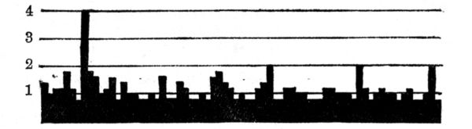
Fig. 4.
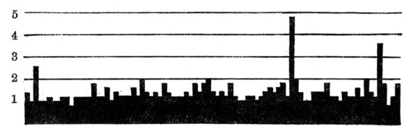
Fig. 5.
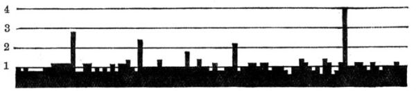
Fig. 6.
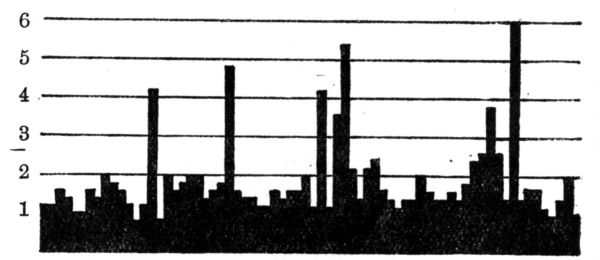
Fig. 7.
The succeeding diagram shows the course of the reaction time in hysterical individuals. The light cross-hatched columns denote the places where the test-person was unable to react (so-called failures to react).
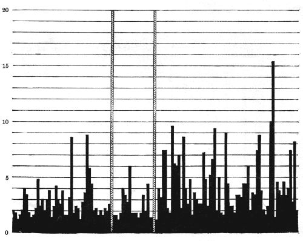
Fig. 8.
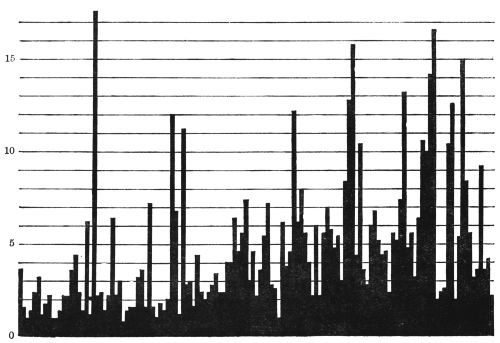
Fig. 9.
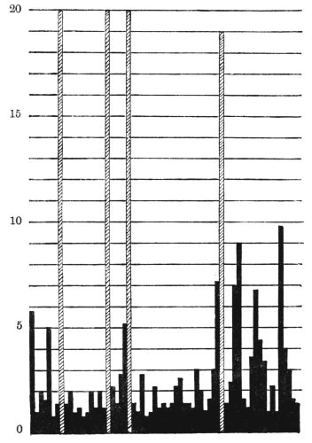
Fig. 10.
The first thing that strikes us is the fact that many test-persons show a marked prolongation of the reaction time. This would seem to be suggestive of intellectual difficulties,—wrongly however, for we are often dealing with very intelligent persons of fluent speech. The explanation lies rather in the emotions. In order to understand the matter, comprehensively, we must bear in mind that the association experiments cannot deal with a separated psychic function,[100] for any psychic occurrence is never a thing in itself, but is always the resultant of the entire psychological past. The association experiment, too, is not merely a method for the reproduction of separated word couplets, but it is a kind of pastime, a conversation between experimenter and test-person. In a certain sense it is still more than that. Words really represent condensed actions, situations, and things. When I[101] give a stimulus word to the test-person, which denotes an action, it is as if I represented to him the action itself, and asked him, "How do you behave towards it? What do you think of it? What would you do in this situation?" If I were a magician, I should cause the situation corresponding to the stimulus word to appear in reality, and placing the test-person in its midst, I should then study his manner of reaction. The result of my stimulus words would thus undoubtedly approach infinitely nearer perfection. But as we are not magicians, we must be contented with the linguistic substitutes for reality; at the same time we must not forget that the stimulus word will almost without exception conjure up its corresponding situation. All depends[102] on how the test-person reacts to this situation. The word "bride" or "bridegroom" will not evoke a simple reaction in a young lady; but the reaction will be deeply influenced by the strong feeling tones evoked, the more so if the experimenter be a man. It thus happens that the test-person is often unable to react quickly and smoothly to all stimulus words. There are certain stimulus words which denote actions, situations, or things, about which the test-person cannot think quickly and surely, and this fact is demonstrated in the association experiments. The examples which I have just given show an abundance of long reaction times and other disturbances. In this case the reaction to the stimulus word is in some way impeded, that is, the adaptation to the stimulus word is disturbed. The stimulus words therefore act upon us just as reality acts; indeed, a person who shows such great disturbances to the stimulus words, is in a certain sense but imperfectly adapted to reality. Disease itself is an imperfect adaptation; hence in this case we are dealing with something morbid in the psyche,—with something which is either temporarily or persistently pathological in character, that is, we are dealing with a psychoneurosis, with a functional disturbance of the mind. This rule, however, as we shall see later, is not without its exceptions.
Let us, in the first place, continue the discussion concerning the prolonged reaction time. It often happens that the test-person actually does not know what to answer to the stimulus word. He waives any reaction, and for the moment he totally fails to obey the original instructions, and shows himself incapable of adapting himself to the experimenter. If this phenomenon occurs frequently in an experiment, it signifies a high degree of disturbance in adjustment. I would call attention to the fact that it is quite indifferent what reason the test-person gives for the refusal. Some find that too many ideas suddenly occur to them; others, that they suffer from a deficiency of ideas. In most cases, however, the difficulties first perceived are so deterrent that they actually give up the whole reaction. The following example shows a case of hysteria with many failures of reaction:—
| Stimulus word. | Reaction Time. Unit 0·2 second. | Reaction. | Reproduction. |
|---|---|---|---|
| to sing | 9 | nice | +[130] |
| dead | 15 | awful | ? |
| long[131] | 40 | the time, the journey | ? |
| ship[132] | + | ||
| to pay | 11 | money | |
| window | 10 | big | high |
| friendly | 50 | a man | human |
| to cook | 10 | soup | + |
| ink | 9 | black or blue | + |
| angry | bad | ||
| needle | 9 | to sew | + |
| lamp | 14 | light | + |
| to sin | |||
| bread | 15 | to eat | + |
| rich[133][134] | 40 | good, convenient | + |
| yellow | 18 | paper | colour |
| mountain | 10 | high | + |
| to die | 15 | awful | + |
| salt[135] | 25 | salty | + |
| new | good, nice | ||
| custom[136] | |||
| to pray | |||
| money[137] | 35 | to buy, one is able | + |
| pamphlet | 16 | to write | + |
| to despise[138] | 22 | people | + |
| finger | |||
| dear | 12 | thing | + |
| bird | 12 | sings or flies | + |
In example II. we find a characteristic phenomenon. The test-person is not content with the requirements of the instruction, that is, she is not satisfied with one word, but reacts with many words. She apparently does more and better than the instruction requires, but in so doing she does not fulfil the requirements of the instruction. Thus she reacts:—custom—good—barbaric; foolish—narrow minded—restricted; family—big—small—everything possible.
These examples show in the first place that many other words connect themselves with the reaction word. The test person is unable to suppress the ideas which subsequently occur to her. She also pursues a certain tendency which[104] perhaps is more exactly expressed in the following reaction: new—old—as an opposite. The addition of "as an opposite" denotes that the test-person has the desire to add something explanatory or supplementary. This tendency is also shown in the following reaction: finger—not only hand, also foot—a limb—member—extremity.
Here we have a whole series of supplements. It seems as if the reaction were not sufficient for the test-person, something else must always be added, as if what has already been said were incorrect or in some way imperfect. This feeling is what Janet designates the "sentiment d'incomplétude," but this by no means explains everything. I go somewhat deeply into this phenomenon because it is very frequently met with in neurotic individuals. It is not merely a small and unimportant subsidiary manifestation demonstrable in an insignificant experiment, but rather an elemental and universal manifestation which plays a rôle in other ways in the psychic life of neurotics.
By his desire to supplement, the test-person betrays a tendency to give the experimenter more than he wants, he actually makes great efforts to find further mental occurrences in order finally to discover something quite satisfactory. If we translate this observation into the psychology of everyday life, it signifies that the test-person has a constant tendency to give to others more feeling than is required and expected. According to Freud, this is a sign of a reinforced object-libido, that is, it is a compensation for an inner want of satisfaction and voidness of feeling. This elementary observation therefore displays one of the characteristics of hysterics, namely, the tendency to allow themselves to be carried away by everything, to attach themselves enthusiastically to everything, and always to promise too much and hence perform too little. Patients with this symptom are, in my experience, always hard to deal with; at first they are enthusiastically enamoured of the physician, for a time going so far as to accept everything he says blindly; but they soon merge into an equally blind resistance against him, thus rendering any educative influence absolutely impossible.
We see therefore in this type of reaction an expression of a tendency to give more than is asked or expected. This tendency betrays itself also in other failures to follow the instruction:—
to quarrel—angry—different things—I always quarrel at home;
to marry—how can you marry?—reunion—union;
plum—to eat—to pluck—what do you mean by it?—is it symbolic?
to sin—this idea is quite strange to me, I do not recognise it.
These reactions show that the test-person gets away altogether from the situation of the experiment. For the instruction was, that he should answer only with the first word which occurs to him. But here we note that the stimulus words act with excessive strength, that they are taken as if they were direct personal questions. The test-person entirely forgets that we deal with mere words which stand in print before us, but finds a personal meaning in them; he tries to divine their intention and defend himself against them, thus altogether forgetting the original instructions.
This elementary observation discloses another common peculiarity of hysterics, namely, that of taking everything personally, of never being able to remain objective, and of allowing themselves to be carried away by momentary impressions; this again shows the characteristics of the enhanced object-libido.
Yet another sign of impeded adaptation is the often occurring repetition of the stimulus words. The test-persons repeat the stimulus word as if they had not heard or understood it distinctly. They repeat it just as we repeat a difficult question in order to grasp it better before answering. This same tendency is shown in the experiment. The questions are repeated because the stimulus words act on hysterical individuals in much the same way as difficult personal questions. In principle it is the same phenomenon as the subsequent completion of the reaction.
In many experiments we observe that the same reaction constantly reappears to the most varied stimulus words. These words seem to possess a special reproduction tendency, and it is very interesting to examine their relationship to the test-person. For example, I have observed a case in which the patient repeated the word "short" a great many times and often in places where it had no meaning. The test-person could not directly state the reason for the repetition of the word "short." From experience I knew that such predicates always relate either to the test-person himself or to the person nearest to him. I assumed that in this word "short" he designated himself, and that in this way he helped to express something very painful to him. The test-person is of very small stature. He is the youngest of four brothers, who, in contrast to himself, are all tall. He was always the "child" in the family; he was nicknamed "Short" and was treated by all as the "little one." This resulted in a total loss of self-confidence. Although he was intelligent, and despite long study, he could not decide to present himself for examination; he finally became impotent, and merged into a psychosis in which, whenever he was alone, he took delight in walking about in his room on his toes in order to appear taller. The word "short," therefore, stood to him for a great many painful experiences. This is usually the case with the perseverated words; they always contain something of importance for the individual psychology of the test-person.
The signs thus far discussed are not found spread about in an arbitrary way through the whole experiment, but are seen in very definite places, namely, where the stimulus words strike against emotionally accentuated complexes. This observation is the foundation of the so-called "diagnosis of facts" (Tatbestandsdiagnostik). This method is employed to discover, by means of an association experiment, which is the culprit among a number of persons suspected of a crime. That this is possible I will demonstrate by the brief recital of a concrete case.
On the 6th of February, 1908, our supervisor reported to[107] me that a nurse complained to her of having been robbed during the forenoon of the previous day. The facts were as follows: The nurse kept her money, amounting to 70 francs, in a pocket-book which she had placed in her cupboard where she also kept her clothes. The cupboard contained two compartments, of which one belonged to the nurse who was robbed, and the other to the head nurse. These two nurses and a third one, who was an intimate friend of the head nurse, slept in the room where the cupboard was. This room was in a section which was occupied in common by six nurses who had at all times free access to the room. Given such a state of affairs it is not to be wondered that the supervisor shrugged her shoulders when I asked her whom she most suspected.
Further investigation showed that on the day of the theft, the above-mentioned friend of the head nurse was slightly indisposed and remained the whole morning in the room in bed. Hence, unless she herself was the thief, the theft could have taken place only in the afternoon. Of four other nurses upon whom suspicion could possibly fall, there was one who attended regularly to the cleaning of the room in question, while the remaining three had nothing to do in it, nor was it shown that any of them had spent any time there on the previous day.
It was therefore natural that the last three nurses should be regarded for the time being as less implicated, so I began by subjecting the first three to the experiment.
From the information I had obtained of the case, I knew that the cupboard was locked but that the key was kept near by in a very conspicuous place, that on opening the cupboard the first thing which would strike the eye was a fur boa, and, moreover, that the pocket-book was between some linen in an inconspicuous place. The pocket-book was of dark reddish leather, and contained the following objects: a 50-franc banknote, a 20-franc piece, some centimes, a small silver watch-chain, a stencil used in the lunatic asylum to mark the kitchen utensils, and a small receipt from Dosenbach's shoeshop in Zürich.
Besides the plaintiff, only the head nurse knew the exact particulars of the deed, for as soon as the former missed her money she immediately asked the head nurse to help her find it, thus the head nurse had been able to learn the smallest details, which naturally rendered the experiment still more difficult, for she was precisely the one most suspected. The conditions for the experiment were better for the others, since they knew nothing concerning the particulars of the deed, and some not even that a theft had been committed. As critical stimulus words I selected the name of the robbed nurse, plus the following words: cupboard, door, open, key, yesterday, banknote, gold, 70, 50, 20, money, watch, pocket-book, chain, silver, to hide, fur, dark reddish, leather, centimes, stencil, receipt, Dosenbach. Besides these words which referred directly to the deed, I took also the following, which had a special effective value: theft, to take, to steal, suspicion, blame, court, police, to lie, to fear, to discover, to arrest, innocent.
The objection is often made to the last species of words that they may produce a strong affective resentment even in innocent persons, and for that reason one cannot attribute to them any comparative value. Nevertheless, it may always be questioned whether the affective resentment of an innocent person will have the same effect on the association as that of a guilty one, and that question can only be authoritatively answered by experience. Until the contrary is demonstrated, I maintain that words of the above-mentioned type may profitably be used.
I distributed these critical words among twice as many indifferent stimulus words in such a manner that each critical word was followed by two indifferent ones. As a rule it is well to follow up the critical words by indifferent words in order that the action of the first may be clearly distinguished. But one may also follow up one critical word by another, especially if one wishes to bring into relief the action of the second. Thus I placed together "darkish red" and "leather," and "chain" and "silver."
After this preparatory work I undertook the experiment[109] with the three above-mentioned nurses. Following the order of the experiment, I shall denote the friend of the head nurse by the letter A, the head nurse by B, and the nurse who attended to the cleaning of the room by C. As examinations of this kind can be rendered into a foreign tongue only with the greatest difficulty, I will content myself with presenting the general results, and with giving some examples. I first undertook the experiment with A, and judging by the circumstances she appeared only slightly moved. B was next examined; she showed marked excitement, her pulse being 120 per minute immediately after the experiment. The last to be examined was C. She was the most tranquil of the three; she displayed but little embarrassment, and only in the course of the experiment did it occur to her that she was suspected of stealing, a fact which manifestly disturbed her towards the end of the experiment.
The general impression from the examination spoke strongly against the head nurse B. It seemed to me that she evinced a very "suspicious," or I might almost say, "impudent" countenance. With the definite idea of finding in her the guilty one I set about adding up the results. You will see that I was wrong in my surmise and that the test proved my error.
One can make use of many special methods of computing, but they are not all equally good and equally exact. (One must always resort to calculation, as appearances are enormously deceptive.) The method which is most to be recommended is that of the probable average of the reaction time. It shows at a glance the difficulties which the person in the experiment had to overcome in the reaction.
The technique of this calculation is very simple. The probable average is the middle number of the various reaction times arranged in a series. The reaction times are, for example,[139] placed in the following manner: 5, 5, 5, 7, 7, 7, 7, 8, 9, 9, 9, 12, 13, 14. The number found in the middle (8) is the probable average of this series.
The probable averages of the reaction are:
| A | B | C |
| 10·0 | 12·0 | 13·5. |
No conclusions can be drawn from this result. But the average reaction times calculated separately for the indifferent reactions, for the critical, and for those immediately following the critical (post-critical) are more interesting.
From this example we see that whereas A has the shortest reaction time for the indifferent reactions, she shows in comparison to the other two persons of the experiment, the longest time for the critical reactions.
The Probable Average of the Reaction Time.
| for | A | B | C |
|---|---|---|---|
| Indifferent reactions | 10·0 | 11·0 | 12·0 |
| Critical reactions | 16·0 | 13·0 | 15·0 |
| Post-critical reactions | 10·0 | 11·0 | 13·0 |
The difference between the reaction times, let us say between the indifferent and the critical, is 6 for A, 2 for B, and 3 for C, that is, it is more than double for A when compared with the other two persons.
In the same way we can calculate how many complex indicators there are on an average for the indifferent, critical, etc., reactions.
The Average Complex-Indicators for each Reaction.
| for | A | B | C |
|---|---|---|---|
| Indifferent reactions | 0·6 | 0·9 | 0·8 |
| Critical reactions | 1·3 | 0·9 | 1·2 |
| Post-critical reactions | 0·6 | 1·0 | 0·8 |
The difference between the indifferent and critical reactions for A = 0·7, for B = 0, for C = 0·4. A is again the highest.
Another question to consider is, the proportion of imperfect reactions in each case.
The result for A = 34%, for B = 28%, and for C = 30%.
Here, too, A reaches the highest value, and in this, I believe, we see the characteristic moment of the guilt-complex in A. I am, however, unable to explain here circumstantially the reasons why I maintain that memory errors are related to an emotional complex, as this would lead me beyond the limits of the present work. I therefore refer the reader to my work "Ueber die Reproductionsstörrungen im Associationsexperiment" (IX Beitrag der Diagnost. Associat. Studien).[140]
As it often happens that an association of strong feeling tone produces in the experiment a perseveration, with the result that not only the critical association, but also two or three successive associations are imperfectly reproduced, it will be very interesting to see how many imperfect reproductions are so arranged in the series in our cases. The result of computation shows that the imperfect reproductions thus arranged in series are for A 64·7%, for B 55·5%, and for C 30·0%.
Again we find that A has the greatest percentage. To be sure, this may partially depend on the fact that A also possesses the greatest number of imperfect reproductions. Given a small number of reactions, it is usual that the greater the total number of the same, the more the imperfect reactions will occur in groups. But this cannot account for the high proportion in our case, where, on the other hand, B and C have not a much smaller number of imperfect reactions when compared to A. It is significant that C with her slight emotions during the experiment shows the minimum of imperfect reproductions arranged in series.
As imperfect reproductions are also complex indicators, it is necessary to see how they distribute themselves in respect to the indifferent, critical, etc., reactions.
It is hardly necessary to bring into prominence the differences between the indifferent and the critical reactions[112] of the various subjects as shown by the resulting numbers of the table. In this respect, too, A occupies first place.
Imperfect Reproductions which Occur.
| in | A | B | C |
|---|---|---|---|
| Indifferent reactions | 10 | 12 | 11 |
| Critical reactions | 19 | 9 | 12 |
| Post-critical reactions | 5 | 7 | 7 |
Naturally, here, too, there is a probability that the greater the number of the imperfect reproductions the greater is their number in the critical reactions. If we suppose that the imperfect reproductions are distributed regularly and without choice, among all the reactions, there will be a greater number of them for A (in comparison with B and C) even as reactions to critical words, since A has the greater number of imperfect reproductions. Admitting such a uniform distribution of the imperfect reproductions, it is easy to calculate how many we ought to expect to belong to each individual kind of reaction.
From this calculation it appears that the disturbances of reproductions which concern the critical reactions for A greatly surpass the number expected, for C they are 0·9 higher, while for B they are lower.
Imperfect Reproductions.
| Which may be expected | Which really occur | |||||
|---|---|---|---|---|---|---|
| For | Indifferent Reactions. | Critical Reactions. | Post-critical Reactions. |
Indifferent Reactions. | Critical Reactions. | Post-critical Reactions. |
| A | 11·2 | 12·5 | 10·2 | 10 | 19 | 5 |
| B | 9·2 | 10·3 | 8·4 | 12 | 9 | 7 |
| C | 9·9 | 11·1 | 9·0 | 11 | 12 | 7 |
All this points to the fact that in the subject A the critical stimulus words acted with the greatest intensity, and hence[113] the greatest suspicion falls on A. Practically relying on the test one may assume the probability of this person's guilt. The same evening A made a complete confession of the theft, and thus the success of the experiment was confirmed.
Such a result is undoubtedly of scientific interest and worthy of serious consideration. There is much in experimental psychology which is of less use than the material exemplified in this test. Putting the theoretical interest altogether aside, we have here something that is not to be despised from a practical point of view, to wit, a culprit has been brought to light in a much easier and shorter way than is customary. What has been possible once or twice ought to be possible again, and it is well worth while to investigate some means of rendering the method increasingly capable of rapid and sure results.
This application of the experiment shows that it is possible to strike a concealed, indeed an unconscious complex by means of a stimulus word; and conversely we may assume with great certainty that behind a reaction which shows a complex indicator there is a hidden complex, even though the test-person strongly denies it. One must get rid of the idea that educated and intelligent test-persons are able to see and admit their own complexes. Every human mind contains much that is unacknowledged and hence unconscious as such; and no one can boast that he stands completely above his complexes. Those who persist in maintaining that they can, are not aware of the spectacles upon their noses.
It has long been thought that the association experiment enables one to distinguish certain intellectual types. That is not the case. The experiment does not give us any particular insight into the purely intellectual, but rather into the emotional processes. To be sure we can erect certain types of reaction; they are not, however, based on intellectual peculiarities, but depend entirely on the proportionate emotional states. Educated test-persons usually show superficial and linguistically deep-rooted associations, whereas the uneducated form more valuable associations and often of ingenious significance.[114] This behaviour would be paradoxical from an intellectual view-point. The meaningful associations of the uneducated are not really the product of intellectual thinking, but are simply the results of a special emotional state. The whole thing is more important to the uneducated, his emotion is greater, and for that reason he pays more attention to the experiment than the educated person, and his associations are therefore more significant. Apart from those determined by education, we have to consider three principal individual types:
1. An objective type with undisturbed reactions.
2. A so-called complex-type with many disturbances in the experiment occasioned by the constellation of a complex.
3. A so-called definition-type. The peculiarity of this type consists in the fact that the reaction always gives an explanation or a definition of the content of the stimulus word; e.g.:
apple,—a tree-fruit;
table,—a piece of household furniture;
to promenade,—an activity;
father,—chief of the family.
This type is chiefly found in stupid persons, and it is therefore quite usual in imbecility. But it can also be found in persons who are not really stupid, but who do not wish to be taken as stupid. Thus a young student from whom associations were taken by an older intelligent woman student reacted altogether with definitions. The test-person was of the opinion that it was an examination in intelligence, and therefore directed most of his attention to the significance of the stimulus words; his associations, therefore, looked like those of an idiot. All idiots, however, do not react with definitions; probably only those react in this way who would like to appear smarter than they are, that is, those to whom their stupidity is painful. I call this widespread complex the "intelligence-complex." A normal test-person reacts in a most overdrawn manner as follows:
anxiety—heart anguish;
to kiss—love's unfolding;
to kiss—perception of friendship.
This type gives a constrained and unnatural impression. The test-persons wish to be more than they are, they wish to exert more influence than they really have. Hence we see that persons with an intelligence-complex are usually unnatural and constrained; that they are always somewhat stilted, or flowery; they show a predilection for complicated foreign words, high-sounding quotations, and other intellectual ornaments. In this way they wish to influence their fellow-beings, they wish to impress others with their apparent education and intelligence, and thus to compensate for their painful feeling of stupidity. The definition-type is closely related to the predicate-type, or, to express it more precisely, to the predicate-type expressing personal judgment (Wertprädikattypus). For example:
flower—pretty;
money—convenient;
animal—ugly;
knife—dangerous;
death—ghastly.
In the definition type the intellectual significance of the stimulus word is rendered prominent, but in the predicate type its emotional significance. There are predicate-types which show great exaggeration where reactions such as the following appear:
piano—horrible;
to sing—heavenly;
mother—ardently loved;
father—something good, nice, holy.
In the definition-type an absolutely intellectual make-up is manifested or rather simulated, but here there is a very emotional one. Yet, just as the definition-type really conceals a lack of intelligence, so the excessive emotional expression conceals or overcompensates an emotional deficiency. This conclusion is very interestingly illustrated by the following discovery:—On investigating the influence of the familiar milieus on the association-type it was found that young[116] people seldom possess a predicate-type, but that, on the other hand, the predicate-type increases in frequency with advancing age. In women the increase of the predicate-type begins a little after the 40th year, and in men after the 60th. That is the precise time when, owing to the deficiency of sexuality, there actually occurs considerable emotional loss. If a test-person evinces a distinct predicate-type, it may always be inferred that a marked internal emotional deficiency is thereby compensated. Still, one cannot reason conversely, namely, that an inner emotional deficiency must produce a predicate-type, no more than that idiocy directly produces a definition-type. A predicate-type can also betray itself through the external behaviour, as, for example, through a particular affectation, enthusiastic exclamations, an embellished behaviour, and the constrained sounding language so often observed in society.
The complex-type shows no particular tendency except the concealment of a complex, whereas the definition and predicate types betray a positive tendency to exert in some way a definite influence on the experimenter. But whereas the definition-type tends to bring to light its intelligence, the predicate-type displays its emotion. I need hardly add of what importance such determinations are for the diagnosis of character.
After finishing an association experiment I usually add another of a different kind, the so-called reproduction experiment. I repeat the same stimulus words and ask the test-persons whether they still remember their former reactions. In many instances the memory fails, and as experience shows, these locations are stimulus words which touched an emotionally accentuated complex, or stimulus words immediately following such critical words.
This phenomenon has been designated as paradoxical and contrary to all experience. For it is known that emotionally accentuated things are better retained in memory than indifferent things. This is quite true, but it does not hold for the linguistic expression of an emotionally accentuated content. On the contrary, one very easily forgets what he has said under emotion, one is even apt to contradict himself[117] about it. Indeed, the efficacy of cross-examinations in court depends on this fact. The reproduction method therefore serves to render still more prominent the complex stimulus. In normal persons we usually find a limited number of false reproductions, seldom more than 19-20 per cent., while in abnormal persons, especially in hysterics, we often find from 20-40 per cent. of false reproductions. The reproduction certainty is therefore in certain cases a measure for the emotivity of the test-person.
By far the larger number of neurotics show a pronounced tendency to cover up their intimate affairs in impenetrable darkness, even from the doctor, so that he finds it very difficult to form a proper picture of the patient's psychology. In such cases I am greatly assisted by the association experiment. When the experiment is finished, I first look over the general course of the reaction times. I see a great many very prolonged intervals; this means that the patient can only adjust himself with difficulty, that his psychological functions proceed with marked internal frictions with resistances. The greater number of neurotics react only under great and very definite resistances; there are, however, others in whom the average reaction times are as short as in the normal, and in whom the other complex indicators are lacking, but, despite that fact, they undoubtedly present neurotic symptoms. These rare cases are especially found among very intelligent and educated persons, chronic patients who, after many years of practice, have learned to control their outward behaviour and therefore outwardly display very little if any trace of their neuroses. The superficial observer would take them for normal, yet in some places they show disturbances which betray the repressed complex.
After examining the reaction times I turn my attention to the type of the association to ascertain with what type I am dealing. If it is a predicate-type I draw the conclusions which I have detailed above; if it is a complex type I try to ascertain the nature of the complex. With the necessary experience one can readily emancipate one's judgment from the test-person's[118] statements and almost without any previous knowledge of the test-persons it is possible under certain circumstances to read the most intimate complexes from the results of the experiment. I look at first for the reproduction words and put them together, and then I look for the stimulus words which show the greatest disturbances. In many cases merely assorting these words suffices to unearth the complex. In some cases it is necessary to put a question here and there. The matter is well illustrated by the following concrete example:
It concerns an educated woman of 30 years of age, married three years previously. Since her marriage she has suffered from episodic excitement in which she is violently jealous of her husband. The marriage is a happy one in every other respect, and it should be noted that the husband gives no cause for the jealousy. The patient is sure that she loves him and that her excited states are groundless. She cannot imagine whence these excited states originate, and feels quite perplexed over them. It is to be noted that she is a catholic and has been brought up religiously, while her husband is a protestant. This difference of religion did not admittedly play any part. A more thorough anamnesis showed the existence of an extreme prudishness. Thus, for example, no one was allowed to talk in the patient's presence about her sister's childbirth, because the sexual moment suggested therein caused her the greatest excitement. She always undressed in the adjoining room and never in her husband's presence, etc. At the age of 27 she was supposed to have had no idea how children were born. The associations gave the results shown in the accompanying chart.
The stimulus words characterised by marked disturbances are the following: yellow, to pray, to separate, to marry, to quarrel, old, family, happiness, false, fear, to kiss, bride, to choose, contented. The strongest disturbances are found in the following stimulus words: to pray, to marry, happiness, false, fear, and contented. These words, therefore, more than any others, seem to strike the complex. The conclusions that can be drawn from this is that she is not indifferent to the fact that her husband is a protestant, that she again thinks[119] of praying, believes there is something wrong with marriage, that she is false, entertains fancies of faithlessness, is afraid (of the husband? of the future?), she is not contented with her choice (to choose) and she thinks of separation. The patient therefore has a separation complex, for she is very discontented with her married life. When I told her this result she was affected and at first attempted to deny it, then to mince over it, but finally she admitted everything I said and added more. She reproduced a large number of fancies of faithlessness, reproaches against her husband, etc. Her prudishness and jealousy were merely a projection of her own sexual wishes on her husband. Because she was faithless in her fancies and did not admit it to herself she was jealous of her husband.
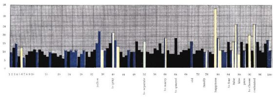
For the stimulus words corresponding to the numbers, see the list on pages 94 and 95.
The blue columns represent failures of reproductions, the green ones represent repetitions of stimulus words, and the yellow columns show those associations in which the patient either laughed or made mistakes, using many words instead of one. The height of the columns represent the length of the reaction time.
[To face p. 118.
It is impossible in a lecture to give a review of all the manifold uses of the association experiment. I must content myself with having demonstrated to you a few of its chief uses.
Lecture II
THE FAMILIAL CONSTELLATIONS
Ladies and Gentlemen: As you have seen, there are manifold ways in which the association experiment may be employed in practical psychology. I should like to speak to you to-day about another use of this experiment which is primarily of theoretical significance. My pupil, Miss Fürst, M.D., made the following researches: she applied the association experiment to 24 families, consisting altogether of 100 test-persons; the resulting material amounted to 22,200 associations. This material was elaborated in the following manner: Fifteen separate groups were formed according to logical-linguistic standards, and the associations were arranged as follows:
| Husband | Wife | Difference | ||
|---|---|---|---|---|
| I. | Co-ordination | 6·5 | 0·5 | 6 |
| II. | Sub and supraordination | 7 | — | 7 |
| III. | Contrast | — | — | — |
| IV. | Predicate expressing a personal judgment | 8·5 | 95·0 | 86·5 |
| V. | Simple predicate | 21·0 | 3·5 | 17·5 |
| VI. | Relations of the verb to the subject or complement | 15·5 | 0·5 | 15·0 |
| VII. | Designation of time, etc. | 11·0 | — | 11·0 |
| VIII. | Definition | 11·0 | — | 11·0 |
| IX. | Coexistence | 1·5 | — | 1·5 |
| X. | Identity | 0·5 | 0·5 | — |
| XI. | Motor-speech combination | 12·0 | — | 12·0 |
| XII. | Composition of words | — | — | — |
| XIII. | Completion of words | — | — | — |
| XIV. | Clang associations | — | — | — |
| XV. | Defective reactions | — | — | — |
| Total | — | — | 173·5 | |
| 173·5 | ||||
| Average difference | —— | = 11·5 | ||
| 15 |
As can be seen from this example, I utilise the difference to demonstrate the degree of the analogy. In order to find a basis for the sum of the resemblance I have calculated the differences among all Dr. Fürst's test-persons, not related among themselves, by comparing every female test-person with all the other unrelated females; the same has been done for the male test-persons.
The most marked difference is found in those cases where the two test-persons compared have no associative quality in common. All the groups are calculated in percentages, the greatest difference possible being 200/15 = 13·3 per cent.
I. The average difference of male unrelated test-persons is 5·9 per cent., and that of females of the same group is 6 per cent.
II. The average difference between male related test-persons is 4·1 per cent., and that between female related tests-persons is 3·8 per cent. From these numbers we see that relatives show a tendency to agreement in the reaction type.
III. Difference between fathers and children = 4·2.
" " mothers " " = 3·5.
The reaction types of children come nearer to the type of the mother than to the father.
| IV. Difference between fathers and their | sons | = 3·1. |
| " " " " " | daughters | = 4·9. |
| " " mothers " " | sons | = 4·7. |
| " " " " " | daughters | = 3·0. |
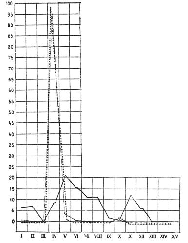
Fig. 11.
Tracing A. —— father; ..... mother; ++++ daughter.
I. Assoc. by co-ordination; II. sub and supraordination; III. contrast, etc. (see previous page).
V. Difference between brothers = 4·7.
" " sisters = 5·1.
If the married sisters are omitted from the comparison we get the following result:
Difference of unmarried sisters = 3·8.[122] These observations show distinctly that marriage destroys more or less the original agreement, as the husband belongs to a different type.
Difference between unmarried brothers = 4·8.
Marriage seems to exert no influence on the association forms in men. Nevertheless, the material which we have at our disposal is not as yet enough to allow us to draw definite conclusions.
VI. Difference between husband and wife = 4·7.
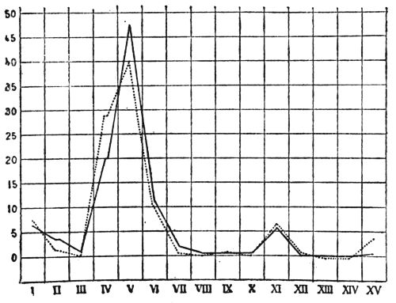
Fig. 12.
Tracing B. —— husband; ..... wife.
This number sums up inadequately the different and very unequal values; that is to say, there are some cases which show extreme difference and some which show marked concordance.
The different results are shown in the tracings (Figs. 11-15).
In the tracings I have marked the number of associations of each quality perpendicularly in percentages. The Roman letters written horizontally represent the forms of association indicated in the above tables.
Tracing A. The father (black line) shows an objective type, while the mother and daughter show the pure predicate type with a pronounced subjective tendency.
Tracing B. The husband and wife agree well in the[123] predicate objective type, the predicate subjective being somewhat more numerous in the wife.
Tracing C. A very nice agreement between a father and his two daughters.
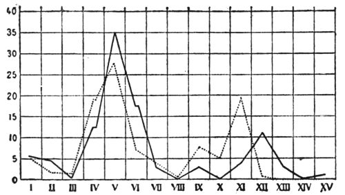
Fig. 13.
Tracing C. —— father; ..... 1st daughter; ++++ 2nd daughter.
Tracing D. Two sisters living together. The dotted line represents the married sister.
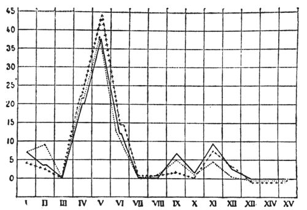
Fig. 14.
Tracing D. —— single sister; ..... married sister.
Tracing E. Husband and wife. The wife is a sister of the two women of tracing D. She approaches very closely to the type of her husband. Her tracing is the direct opposite of that of her sisters.
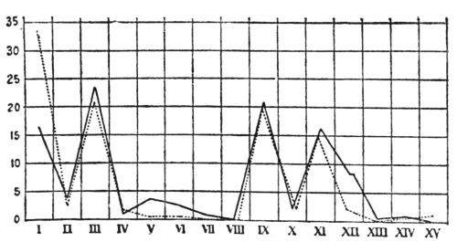
Fig. 15.
Tracing E. —— husband; ..... wife.
The similarity of the associations is often very extraordinary. I will reproduce here the associations of a mother and daughter.
| Stimulus Word. | Mother. | Daughter. |
|---|---|---|
| to pay attention | diligent pupil | pupil |
| law | command of God | Moses |
| dear | child | father and mother |
| great | God | father |
| potato | bulbous root | bulbous root |
| family | many persons | 5 persons |
| strange | traveller | traveller |
| brother | dear to me | dear |
| to kiss | mother | mother |
| burn | great pain | painful |
| door | wide | big |
| hay | dry | dry |
| month | many days | 31 days |
| air | cool | moist |
| coal | sooty | black |
| fruit | sweet | sweet |
| merry | happy child | child |
One might indeed think that in this experiment, where full scope is given to chance, individuality would become a factor of the utmost importance, and that therefore one might expect a very great diversity and lawlessness of associations. But as we see the opposite is the case. Thus the daughter lives contentedly in the same circle of ideas as her mother, not only in her thought but in her form of expression; indeed, she even uses the same words. What could be regarded as more inconsequent, inconstant, and lawless than a fancy,[125] a rapidly passing thought? It is not lawless, however, neither is it free, but closely determined within the limits of the milieu. If, therefore, even the superficial and manifestly most inconsequent formations of the intellect are altogether subject to the milieu-constellation, what must we not expect for the more important conditions of the mind, for the emotions, wishes, hopes, and intentions? Let us consider a concrete example, illustrated by tracing A.
The mother is 45 years old and the daughter 16 years. Both have a very distinct predicate-type expressing personal judgment, both differ from the father in the most striking manner. The father is a drunkard and a demoralised creature. We can thus readily understand that his wife experiences an emotional voidness which she naturally betrays by her enhanced predicate-type. The same causes cannot, however, operate in the case of the daughter, for, in the first place, she is not married to a drunkard, and, in the second, life with all its hopes and promises still lies before her. It is distinctly unnatural for the daughter to show an extreme predicate-type expressing personal judgment. She responds to the stimuli of the environment just like her mother. But whereas in the mother the type is in a way a natural consequence of her unhappy condition of life, this condition is entirely lacking in the daughter. The daughter simply imitates the mother; she merely appears like the mother. Let us consider what this can signify for a young girl. If a young girl reacts to the world like an old woman, disappointed in life, this at once shows unnaturalness and constraint. But more serious consequences are possible. As you know the predicate-type is a manifestation of intensive emotions; the emotions are always involved. Thus we cannot prevent ourselves from responding inwardly, at least, to the feelings and passions of our immediate environment; we allow ourselves to be infected and carried away by it. Originally the effects and their physical manifestations had a biological significance; i.e. they were a protective mechanism for the individual and the whole herd. If we manifest emotions, we can with certainty expect to receive emotions in return. That is the feeling of the predicate-type. What the 45-year-old[126] woman lacks in emotions, i.e. in love in her marriage relations she seeks to obtain in the outside world, and for that reason she is an ardent participant in the Christian Science movement. If the daughter imitates this situation she copies her mother, she seeks to obtain emotions from the outside. But for a girl of sixteen such an emotional state is, to say the least, quite dangerous; like her mother, she reacts to her environment as a sufferer soliciting sympathy. Such an emotional state is no longer dangerous in the mother, but for obvious reasons it is quite dangerous in the daughter. Once freed from her father and mother she will be like her mother, i.e. she will be a suffering woman craving for inner gratification. She will thus be exposed to the great danger of falling a victim to brutality and of marrying a brute and inebriate like her father.
This conception is of importance in the consideration of the influence of environment and education. The example shows what passes over from the mother to the child. It is not the good and pious precepts, nor is it any other inculcation of pedagogic truths that have a moulding influence upon the character of the developing child, but what most influences him is the peculiarly affective state which is totally unknown to his parents and educators. The concealed discord between the parents, the secret worry, the repressed hidden wishes, all these produce in the individual a certain affective state with its objective signs which slowly but surely, though unconsciously, works its way into the child's mind, producing therein the same conditions and hence the same reactions to external stimuli. We know the depressing effect mournful and melancholic persons have upon us. A restless and nervous individual infects his surroundings with unrest and dissatisfaction, a grumbler with his discontent, etc. Since grown-up persons are so sensitive to surrounding influences, we should certainly expect this to be even more noticeable among children, whose minds are as soft and plastic as wax. The father and mother impress deeply into the child's mind the seal of their personality; the more sensitive and mouldable the child the deeper is the impression. Thus things that are[127] never even spoken about are reflected in the child. The child imitates the gesture, and just as the gesture of the parent is the expression of an emotional state, so in turn the gesture gradually produces in the child a similar feeling, as it feels itself, so to speak, into the gesture. Just as the parents adapt themselves to the world, so does the child. At the age of puberty when it begins to free itself from the spell of the family, it enters into life with, so to say, a surface adaptation entirely in keeping with that of the father and mother. The frequent and often very deep depressions of puberty emanate from this; they are symptoms which are rooted in the difficulty of new adjustment. The youthful person at first tries to separate himself as much as possible from his family; he may even estrange himself from it, but inwardly this only ties him the more firmly to the parental image. I cite the case of a young neurotic who ran away from his parents; he was estranged from, and almost hostile to them, but he admitted to me that he possessed a special sanctum; it was a strong box containing his old childhood books, old dried flowers, stones, and even small bottles of water from the well at his home and from a river along which he walked with his parents, etc.
The first attempts to assume friendship and love are constellated in the strongest manner possible by the relation to parents, and here one can usually observe how powerful are the influences of the familiar constellations. It is not rare, for instance, for a healthy man whose mother was hysterical to marry a hysteric, or for the daughter of an alcoholic to choose an alcoholic for her husband. I was once consulted by an intelligent and educated young woman of twenty-six who suffered from a peculiar symptom. She thought that her eyes now and then took on a strange expression which exerted a disagreeable influence on men. If she then looked at a man he became self-conscious, turned away and said something rapidly to his neighbour, at which both were either embarrassed or inclined to laugh. The patient was convinced that her look excited indecent thoughts in the men. It was impossible to convince her of the falsity[128] of her conviction. This symptom immediately aroused in me the suspicion that I dealt with a case of paranoia rather than with a neurosis. But as was shown only three days later by the further course of the treatment, I was mistaken, for the symptom promptly disappeared after it had been explained by analysis. It originated in the following manner: The lady had a lover who deserted her in a very marked manner. She felt utterly forsaken; she withdrew from all society and pleasure, and entertained suicidal ideas. In her seclusion there accumulated unadmitted and repressed erotic wishes which she unconsciously projected on men whenever she was in their company. This gave rise to the conviction that her look excited erotic wishes in men. Further investigation showed that her deserting lover was a lunatic, which she had not apparently observed. I expressed my surprise at her unsuitable choice, and added that she must have had a certain predilection for loving mentally abnormal persons. This she denied, stating that she had once before been engaged to be married to a normal man. He, too, deserted her; and on further investigation it was found that he, too, had been in an insane asylum shortly before,—another lunatic! This seemed to me to confirm with sufficient certainty my belief that she had an unconscious tendency to choose insane persons. Whence originated this strange taste? Her father was an eccentric character, and in later years entirely estranged from his family. Her whole love had therefore been turned away from her father to a brother eight years her senior; him she loved and honoured as a father, and this brother became hopelessly insane at the age of fourteen. That was apparently the model from which the patient could never free herself, after which she chose her lovers, and through which she had to become unhappy. Her neurosis which gave the impression of insanity, probably originated from this infantile model. We must take into consideration that we are dealing in this case with a highly educated and intelligent lady, who did not pass carelessly over her mental experiences, who indeed reflected much over her unhappiness, without, however, having any idea whence her misfortune originated.
There are things which unconsciously appear to us as a matter of course, and it is for this reason that we do not see them truly, but attribute everything to the so-called congenital character. I could cite any number of examples of this kind. Every patient furnishes contributions to this subject of the determination of destiny through the influence of the familiar milieu. In every neurotic we see how the constellation of the infantile milieu influences not only the character of the neurosis, but also life's destiny, even in its minute details. The unhappy choice of a profession, and innumerable matrimonial failures can be traced to this constellation. There are, however, cases where the profession has been well chosen, where the husband or wife leaves nothing to be desired, and where still the person does not feel well but works and lives under constant difficulties. Such cases often appear under the guise of chronic neurasthenia. Here the difficulty is due to the fact that the mind is unconsciously split into two parts of divergent tendencies which are impeding each other; one part lives with the husband or with the profession, while the other lives unconsciously in the past with the father or mother. I have treated a lady who, after suffering many years from a severe neurosis, merged into a dementia præcox. The neurotic affection began with her marriage. This lady's husband was kind, educated, well to do, and in every respect suitable for her; his character showed nothing that would in any way interfere with a happy marriage. The marriage was nevertheless unhappy, all congenial companionship being excluded because the wife was neurotic.
The important heuristic axiom of every psychoanalysis reads as follows: If a person develops a neurosis this neurosis contains the counter-argument against the relation of the patient to the individual with whom he is most intimately connected. A neurosis in the husband loudly proclaims that he has intensive resistances and contrary tendencies against his wife; if the wife has a neurosis she has a tendency which diverges from her husband. If the person is unmarried the neurosis is then directed against the lover or the sweetheart or against[130] the parents. Every neurotic naturally strives against this relentless formulation of the content of his neurosis, and he often refuses to recognise it at any cost, but still it is always justified. To be sure, the conflict is not on the surface, but must generally be revealed through a painstaking psychoanalysis.
The history of our patient reads as follows:
The father had a powerful personality. She was his favourite daughter, and entertained for him a boundless veneration. At the age of seventeen she for the first time fell in love with a young man. At that time she twice dreamt the same dream, the impression of which never left her in all her later years; she even imputed a mystic significance to it, and often recalled it with religious dread. In the dream she saw a tall, masculine figure with a very beautiful white beard; at this sight she was permeated with a feeling of awe and delight as if she experienced the presence of God Himself. This dream made the deepest impression on her, and she was constrained to think of it again and again. The love affair of that period proved to be one of little warmth, and was soon given up. Later the patient married her present husband. Though she loved her husband she was led continually to compare him with her deceased father; this comparison always proved unfavourable to her husband. Whatever the husband said, intended, or did, was subjected to this standard and always with the same result: "My father would have done all this better and differently." Our patient's life with her husband was not happy, she could neither respect nor love him sufficiently; she was inwardly dissatisfied. She gradually developed a fervent piety, and at the same time violent hysterical symptoms supervened. She began by going into raptures now over this and now over that clergyman; she was looking everywhere for a spiritual friend, and estranged herself more and more from her husband. The mental trouble manifested itself about ten years after marriage. In her diseased state she refused to have anything to do with her husband and child; she imagined herself pregnant by another man. In brief, the[131] resistances against her husband, which hitherto had been laboriously repressed, came out quite openly, and among other things manifested themselves in insults of the gravest kind directed against him.
In this case we see how a neurosis appeared, as it were, at the moment of marriage, i.e. this neurosis expresses the counter-argument against the husband. What is the counter-argument? The counter-argument is the father of the patient, for she verified her belief daily that her husband was not the equal of her father. When the patient first fell in love there had appeared a symptom in the form of an extremely impressive dream or vision. She saw the man with the very beautiful white beard. Who was this man? On directing her attention to the beautiful white beard she immediately recognised the phantom. It was of course her father. Thus every time the patient merged into a love affair the picture of her father inopportunely appeared and prevented her from adjusting herself psychologically to her husband.
I purposely chose this case as an illustration because it is simple, obvious, and quite typical of many marriages which are crippled through the neurosis of the wife. The cause of the unhappiness always lies in a too firm attachment to the parents. The infantile relationship has not been given up. We find here one of the most important tasks of pedagogy, namely, the solution of the problem how to free the growing individual from his unconscious attachments to the influences of the infantile milieu, in such a manner that he may retain whatever there is in it that is suitable and reject whatever is unsuitable. To solve this difficult question on the part of the child seems to me impossible at present. We know as yet too little about the child's emotional processes. The first and only real contribution to the literature on this subject has in fact appeared during the present year. It is the analysis of a five-year-old boy published by Freud.
The difficulties on the part of the child are very great. They should not, however, be so great on the part of the parents. In many ways the parents could manage the love of children more carefully, more indulgently, and more[132] intelligently. The sins committed against favourite children by the undue love of the parents could perhaps be avoided through a wider knowledge of the child's mind. For many reasons I find it impossible to say anything of general validity concerning the bringing up of children as it is affected by this problem. We are as yet very far from general prescriptions and rules; indeed we are still in the realm of casuistry. Unfortunately, our knowledge of the finer mental processes in the child is so meagre that we are not yet in any position to say where the greatest trouble lies, whether in the parents, in the child, or in the conception of the milieu. Only psychoanalyses of the kind that Professor Freud has published in the Jahrbuch, 1909,[141] will help us out of this difficulty. Such comprehensive and profound observations should act as a strong inducement to all teachers to occupy themselves with Freud's psychology. This psychology offers more values for practical pedagogy than the physiological psychology of the present.
Lecture III
EXPERIENCES CONCERNING THE PSYCHIC LIFE OF THE CHILD[142]
Ladies and Gentlemen: In our last lecture we saw how important the emotional processes of childhood are for later life. In to-day's lecture I should like to give you some insight into the psychic life of the child through the analysis of a four-year-old girl. It is much to be regretted that there are few among you who have had the opportunity of reading the analysis of "Little Hans" (Kleiner Hans), which was published by Freud during the current year.[143] I ought to begin by giving you the content of that analysis, so that you might be in a position to compare Freud's results with those obtained by me, and observe the marked, and astonishing similarity between the unconscious creations of the two[133] children. Without a knowledge of the fundamental analysis of Freud, much in the report of the following case will appear strange, incomprehensible, and perhaps unacceptable to you. I beg you, however, to defer your final judgment and to enter upon the consideration of these new subjects with a kindly disposition, for such pioneer work in virgin soil requires not only the greatest patience on the part of the investigator, but also the unprejudiced attention of his audience. Because the Freudian investigations apparently involve a discussion of the most intimate secrets of sexuality many people have had a feeling of repulsion against them, and have therefore rejected everything as a matter of course without any real disproof. This, unfortunately, has almost always been the fate of Freud's doctrines up to the present. One must not come to the consideration of these matters with the firm conviction that they do not exist, for it may easily happen that for the prejudiced they really do not exist. One should perhaps assume the author's point of view for the moment and investigate these phenomena under his guidance. Only in this way can the correctness or otherwise of our observations be affirmed. We may err, as all human beings err. But the continual holding up to us of our mistakes—perhaps they are worse than mistakes—does not help us to see things more distinctly. We should prefer to see wherein we err. That should be demonstrated to us in our own sphere of experience. Thus far, however, no one has succeeded in meeting us on our own ground, nor in giving us a different conception of the things which we ourselves see. We still have to complain that our critics persist in maintaining complete ignorance about the matters in question. The only reason for this is that they have never taken the trouble to become thoroughly acquainted with our method; had they done this they would have understood us.
The little girl to whose sagacity and intellectual vivacity we are indebted for the following observations is a healthy, lively child of emotional temperament. She has never been seriously ill, and never, even in the realm of the nervous system, had there been observed any symptoms prior to this[134] investigation. In the report which follows we shall have to waive any connected description, for it is made up of anecdotes which treat of one experience out of a whole cycle of similar ones, and which cannot, therefore, be arranged scientifically and systematically, but must rather be described somewhat in the form of a story. We cannot as yet dispense with this manner of description in our analytical psychology, for we are still far from being able in all cases to separate with unerring certainty what is curious from what is typical.
When the little daughter, whom we will call Anna, was about three years old, she once had the following conversation with her grandmother:
Anna: "Grandma, why are your eyes so dim?"
Grandma: "Because I am old."
A.: "But you will become young again."
G.: "No, do you know, I shall become older and older, and then I shall die."
A.: "Well, and then?"
G.: "Then I shall be an angel."
A.: "And then will you be a little baby again?"
The child found here a welcome opportunity for the provisional solution of a problem. For some time before she had been in the habit of asking her mother whether she would ever have a living doll, a little child, a little brother. This naturally included the question as to the origin of children. As such questions appeared only spontaneously and indirectly, the parents attached no significance to them, but responded to them as lightly and in appearance as carelessly as the child seemed to ask them. Thus she once received from her father the pretty story that children are brought by the stork. Anna had already heard somewhere a more serious version, namely, that children, are little angels living in heaven, and are brought from heaven by the stork. This theory seems to have become the starting point for the investigating activity of the little one. From the conversation with the grandmother it could be seen that this theory was capable of wide application, namely, it not only solved[135] in a comforting manner the painful idea of parting and dying, but at the same time also the riddle of the origin of children. Such solutions which kill at least two birds with one stone were formerly tenaciously adhered to in science, and cannot be removed from the mind of the child without a certain amount of shock.
Just as the birth of a little sister was the turning point in the history of "Little Hans," so in this case it was the birth of a brother, which happened when Anna had reached the age of four years. The pregnancy of the mother apparently remained unnoticed; i.e. the child never expressed herself on this subject. On the evening before the birth, when labour pains were beginning, the child was in her father's room. He took her on his knee and said, "Tell me, what would you say if you should get a little brother to-night?" "I would kill him" was the prompt answer. The expression "to kill" looks very serious, but in reality it is quite harmless, for "to kill" and "to die" in child language signify only to remove, either in the active or in the passive sense, as has already been pointed out a number of times by Freud. "To kill" as used by the child is a harmless word, especially so when we know that the child uses the word "kill" quite promiscuously for all possible kinds of destruction, removal, demolition, etc. It is, nevertheless, worth while to note this tendency (see the analysis of Kleiner Hans, p. 5).
The birth occurred early in the morning, and later the father entered the room where Anna slept. She awoke as he came in. He imparted to her the news of the advent of a little brother, which she took with surprise and strained facial expression. The father took her in his arms and carried her into the lying-in room. She first threw a rapid glance at her somewhat pale mother and then displayed something like a mixture of embarrassment and suspicion as if thinking, "Now what else is going to happen?" (Father's impression.) She displayed hardly any pleasure at the sight of the new arrival, so that the cool reception she gave it caused general disappointment. During the forenoon she kept very noticeably away from her mother; this was the more striking as[136] she was usually much attached to her. But once when her mother was alone she ran into the room, embraced her and said, "Well, aren't you going to die now?" Now a part of the conflict in the child's psyche is revealed to us. Though the stork theory was never really taken seriously, she accepted the fruitful re-birth hypothesis, according to which a person by dying helps a child into life. Accordingly the mother, too, must die; why, then, should the newborn child, against whom she already felt childish jealousy, cause her pleasure? It was for this reason that she had to seek a favourable opportunity of reassuring herself as to whether the mother was to die, or rather was moved to express the hope that she would not die.
With this happy issue, however, the re-birth theory sustained a severe shock. How was it possible now to explain the birth of her little brother and the origin of children in general? There still remained the stork theory which, though never expressly rejected, had been implicitly waived through the assumption of the re-birth theory. The explanations next attempted unfortunately remained hidden from the parents as the child went to stay with her grandmother for a few weeks. From the latter's report the stork theory was often discussed, and was naturally reinforced by the concurrence of those about her.
When Anna returned to her parents, she again, on meeting her mother, evinced the same mixture of embarrassment and suspicion which she had displayed after the birth. The impression, though inexplicable, was quite unmistakable to both parents. Her behaviour towards the baby was very nice. During her absence a nurse had come into the house who, on account of her uniform, made a deep impression on Anna; to be sure, the impression at first was quite unfavourable as she evinced the greatest hostility to her. Thus nothing could induce her to allow herself to be undressed and put to sleep by this nurse. Whence this resistance originated was soon shown in an angry scene near the cradle of the little brother in which Anna shouted at the nurse, "This is not your little brother, he is mine!" Gradually,[137] however, she became reconciled to the nurse, and began to play nurse herself; she had to have her white cap and apron, and "nursed" now her little brother, and now her doll.
In contrast to her former mood she became unmistakably mournful and dreamy. She often sat for a long time under the table singing stories and making rhymes, which were partially incomprehensible but sometimes contained the "nurse" theme ("I am a nurse of the green cross"). Some of the stories, however, distinctly showed a painful feeling striving for expression.
Here we meet with a new and important feature in the little one's life: that is, we meet with reveries, even a tendency towards poetic fancies and melancholic attacks. All of them things which we are wont first to encounter at a later period of life, at a time when the youth or maiden is preparing to sever the family tie and to enter independently upon life, but is still held back by an inward, painful feeling of homesickness for the warmth of the parental hearth. At such a time the youth begins to replace what is lacking with poetic fancies in order to compensate for the deficiency. To approximate the psychology of a four-year-old child to that of the youth approaching puberty will at first sight seem paradoxical; the relationship lies, however, not in the age but rather in the mechanism. The elegiac reveries express the fact that a part of that love which formerly belonged, and should belong, to a real object, is now introverted, that is, it is turned inward into the subject and there produces an increased imaginative activity. What is the origin of this introversion? Is it a psychological manifestation peculiar to this age, or does it owe its origin to a conflict?
This is explained in the following occurrence. It often happened that Anna was disobedient to her mother, she was insolent, saying, "I am going back to grandma."
Mother: "But I shall be sad when you leave me."
Anna: "Oh, but you have my little brother."
This reaction towards the mother shows what the little one was really aiming at with her threats to go away again; she apparently wished to hear what her mother would say to[138] her proposal, that is, to see what attitude her mother would actually assume to her, whether her little brother had not ousted her altogether from her mother's regard. One must, however, give no credence to this little trickster. For the child could readily see and feel that, despite the existence of the little brother, there was nothing essentially lacking to her in her mother's love. The reproach to which she subjects her mother is therefore unjustified, and to the trained ear this is betrayed by a slightly affected tone. Such an unmistakable tone does not expect to be taken seriously and hence it obtrudes itself more vehemently. The reproach as such cannot be taken seriously by the mother, for it was only the forerunner of other and this time more serious resistances. Not long after the conversation narrated above, the following scene took place:
Mother: "Come, we are going into the garden now!"
Anna: "You are telling lies, take care if you are not telling the truth."
M.: "What are you thinking of? I am telling the truth."
A.: "No, you are not telling the truth."
M.: "You will soon see that I am telling the truth: we are going into the garden now."
A.: "Indeed, is that true? Is that really true? Are you not lying?"
Scenes of this kind were repeated a number of times. This time the tone was more rude and more vehement, and at the same time the accent on the word "lie" betrayed something special which the parents did not understand; indeed, at first they attributed too little significance to the spontaneous utterances of the child. In this they merely did what education usually does in general, ex officio. We usually pay little heed to children in every stage of life; in all essential matters, they are treated as not responsible, and in all unessential ma tters, they are trained with an automatic precision.
Under resistances there always lies a question, a conflict, of which we hear later and on other occasions. But usually[139] one forgets to connect the thing heard with the resistances. Thus, on another occasion, Anna put to her mother the following questions:—
Anna: "I should like to become a nurse when I grow big—why did you not become a nurse?"
Mother: "Why, as I have become a mother I have children to nurse anyway."
A. (Reflecting): "Indeed, shall I be a lady like you, and shall I talk to you then?"
The mother's answer again shows whither the child's question was really directed. Apparently Anna, too, would like to have a child to "nurse" just as the nurse has. Where the nurse got the little child is quite clear. Anna, too, could get a child in the same way if she were big. Why did not the mother become such a nurse, that is to say, how did she get a child if not in the same way as the nurse? Like the nurse, Anna, too, could get a child, but how that fact might be changed in the future or how she might come to resemble her mother in the matter of getting children is not clear to her. From this resulted the thoughtful question, "Indeed, shall I be a lady like you? Shall I be quite different?" The stork theory evidently had come to naught, the dying theory met a similar fate; hence she now thinks one may get a child in the same way, as, for example, the nurse got hers. She, too, could get one in this natural way, but how about the mother who is no nurse and still has children? Looking at the matter from this point of view, Anna asks: "Why did you not become a nurse?" namely, "why have you not got your child in the natural way?" This peculiar indirect manner of questioning is typical, and evidently corresponds with the child's hazy grasp of the problem, unless we assume a certain diplomatic uncertainty prompted by a desire to evade direct questioning. We shall later find an illustration of this possibility. Anna is evidently confronted with the question "Where does the child come from?" The stork did not bring it; mother did not die; nor did mother get it in the same way as the nurse. She has, however, asked this question before and received the information from her father that the stork brings[140] children; this is positively untrue, she can never be deceived on this point. Accordingly, papa and mama and all the others lie. This readily explains her suspicion at the childbirth and her discrediting of her mother. But it also explains another point, namely, the elegiac reveries which we have attributed to a partial introversion. We know now what was the real object from which love was removed and uselessly introverted, namely, it had to be taken from the parents who deceived her and refused to tell her the truth. (What can this be which must not be uttered? What is going on here?) Such were the parenthetic questions of the child, and the answer was: Evidently this must be something to be concealed, perhaps something dangerous. Attempts to make her talk and to draw out the truth by means of artful questions were futile, so resistance is placed against resistance, and the introversion of love begins. It is evident that the capacity for sublimation in a four-year-old child is still too slightly developed to be capable of performing more than symptomatic services. The mind, therefore, depends on another compensation, namely, it resorts to one of the relinquished infantile devices for securing love by force, preferably that of crying and calling the mother at night. This had been diligently practised and exhausted during her first year. It now returns, and corresponding to the period of life has become well determined and equipped with recent impressions. It was just after the earthquakes in Messina, and this event was discussed at the table. Anna was extremely interested in everything, she repeatedly asked her grandmother to tell her how the earth shook, how the houses fell in and many people lost their lives. After this she had nocturnal fears, she could not be alone, her mother had to go to her and stay with her; otherwise she feared that an earthquake would happen, that the house would fall and kill her. During the day, too, she was much occupied with such thoughts. While walking with her mother she annoyed her with such questions as, "Will the house be standing when we return home? Are you sure there is no earthquake at home? Will papa still be living?" About every stone lying in the road she asked whether it was from an earthquake. A[141] building in course of erection was a house destroyed by the earthquake, etc. Finally, she began to cry out frequently at night that the earthquake was coming and that she heard the thunder. Each evening she had to be solemnly assured that there was no earthquake coming.
Many means of calming her were tried, thus she was told, for example, that earthquakes only occur where there are volcanoes. But then she had to be satisfied that the mountains surrounding the city were not volcanoes. This reasoning led the child by degrees to a desire for learning, as strong as it was unnatural at her age, which showed itself in a demand that all the geological atlases and text-books should be brought to her from her father's library. For hours she rummaged through these works looking for pictures of volcanoes and earthquakes, and asking questions continually. Here we are confronted by an energetic effort to sublimate the fear into an eager desire for knowledge, which at this age made a decidedly premature exaction. But how many a gifted child suffering in exactly the same way with such problems, is "cosseted" through this untimely sublimation, by no means to its advantage. For, by favouring sublimation at this age one is merely strengthening manifestation of neurosis. The root of the eager desire for knowledge is fear, and fear is the expression of converted libido; that is, it is the expression of an introversion which has become neurotic, which at this age is neither necessary nor favourable for the development of the child.
Whither this eager desire for knowledge was ultimately directed is explained by a series of questions which arose almost daily. "Why is Sophie (a younger sister) younger than I?" "Where was Freddie (the little brother) before? Was he in heaven? What was he doing there? Why did he come down just now, why not before?"
This state of affairs led the father to decide that the mother should tell the child when occasion offered the truth concerning the origin of the little brother. This having been done, Anna soon thereafter asked about the stork. Her mother told her that the story of the stork was not true, but[142] that Freddie grew inside his mother like the flowers in a plant. At first he was very little, and then he became bigger and bigger as a plant does. She listened attentively without the slightest surprise, and then asked, "But did he come out all by himself?"
Mother: "Yes."
Anna: "But he cannot walk!"
Sophie: "Then he crawled out."
Anna, overhearing her little sister's answer: "Is there a hole here? (pointing to the breast) or did he come out of the mouth? Who came out of the nurse?" She then interrupted herself and exclaimed, "No, no, the stork brought baby brother down from heaven." She soon left the subject and again wished to see pictures of volcanoes. During the evening following this conversation she was calm. The sudden explanation produced in the child a whole series of ideas, which manifested themselves in certain questions. New unexpected perspectives were opened; she rapidly approached the main problem, namely, the question, "Where did the baby come out?" Was it from a hole in the breast or from the mouth? Both suppositions are entirely qualified to form acceptable theories. We even meet with recently married women who still entertain the theory of the hole in the abdominal wall or of the Cæsarean section; this is supposed to betray a very unusual degree of innocence. But as a matter of fact it is not innocence; we are always dealing in such cases with infantile sexual activities, which in later life have brought the vias naturales into ill repute.
It may be asked where the child got the absurd idea that there is a hole in the breast, or that the birth takes place through the mouth. Why did she not select one of the natural openings existing in the pelvis from which things come out daily? The explanation is simple. Very shortly before, our little one had invoked some educational criticism from her mother by a heightened interest in both openings with their remarkable excretions,—an interest not always in accord with the requirements of cleanliness and decorum. Then for the first time she became acquainted with the[143] exceptional laws relating to these bodily regions and, being a sensitive child, she soon learned that there was something here to be tabooed. This region, therefore, must not be referred to. Anna had simply shown herself docile and had so adjusted herself to the cultural demands that she thought (at least spoke) of the simplest things last. The incorrect theories substituted for correct laws sometimes persist for years until brusque explanations come from without. It is, therefore, no wonder that such theories, the forming of and adherence to which are favoured even by parents and educationalists should later become determinants for important symptoms in a neurosis, or of delusions in a psychosis, just as I have shown that in dementia præcox[144] what has existed in the mind for years always remains somewhere, though it may be hidden under compensations of a seemingly different kind.
But even before this question was settled as to where the child really comes out a new problem obtruded itself, viz. the children came out of the mother, but how is it with the nurse? Did some one come out of her too? This question was followed by the remark, "No, no, the stork brought down baby brother from heaven." What is there peculiar about the fact that nobody came out of the nurse? We recall that Anna identified herself with the nurse, and planned to become a nurse later, for she, too, would like to have a child, and she could have one as well as the nurse. But now when it is known that the little brother grew in mama, how is it now?
This disquieting question is averted by a quick return to the stork-angel theory which has never been really believed and which after a few trials is at last definitely abandoned. Two questions, however, remain in the air. The first reads as follows: Where does the child come out? The second, a considerably more difficult one, reads: How does it happen that mama has children while the nurse and the servants[144] do not? All these questions did not at first manifest themselves.
On the day following the explanation, while at dinner, Anna spontaneously remarked: "My brother is in Italy, and has a house of cloth and glass, but it does not tumble down."
In this case, as in the others, it was impossible to ask for an explanation; the resistances were too great and Anna could not be drawn into conversation. This former officious and pretty explanation is very significant. For some three months the two sisters had been building a stereotyped fanciful conception of a "big brother." This brother knows everything, he can do and has everything, he has been and is in every place where the children are not; he is owner of great cows, oxen, horses, dogs; everything is his, etc. Every one has such a "big brother." We must not look far for the origin of this fancy; the model for it is the father who seems to correspond to this conception; he seems to be like a brother to mama. The children, too, have their similar powerful "brother." This brother is very brave; he is at present in dangerous Italy and inhabits an impossible fragile house, and it does not tumble down. For the child this realises an important wish: the earthquake is no longer to be dangerous; in consequence the child's fear disappeared and did not return. The fear of earthquakes now entirely vanished. Instead of calling her father to her bed to conjure away the fear, she now became very affectionate and begged him every night to kiss her.
In order to test this new state of affairs the father showed her pictures illustrating volcanoes and earthquake devastations. Anna remained unaffected, she examined the pictures with indifference, remarking, "These people are dead; I have already seen that quite often." The picture of a volcanic eruption no longer had any attraction for her. Thus all her scientific interest collapsed and vanished as suddenly as it came. During the days following the explanation Anna had quite important matters to occupy herself with; she disseminated her newly acquired knowledge among those about her in the following manner: She began by again[145] circumstantially affirming what had been told her, viz. that Freddy, her younger sister, and herself had grown in her mother, that papa and mama grew in their mothers, and that the servants likewise grew in their respective mothers. By frequent questions she tested the true basis of her knowledge, for her suspicion was aroused in no small measure, so that it needed many confirmations to remove all her uncertainties.
On one occasion the trustworthiness of the theory threatened to go to pieces. About a week after the explanation, the father was taken ill with influenza and had to remain in bed during the forenoon. The children knew nothing about this, and Anna, coming into the parents' bedroom, saw what was quite unusual, namely, that her father was remaining in bed. She again took on a peculiar surprised expression; she remained at a distance from the bed and would not come nearer; she was apparently again reserved and suspicious. But suddenly she burst out with the question, "Why are you in bed; have you a plant in your inside too?"
The father naturally had to laugh. He calmed her, however, by assuring her that children never grow in the father, that only women can have children, and not men; thereupon the child again became friendly. But though the surface was calm the problems continued to work in the dark. A few days later, while at dinner, Anna related the following dream: "I dreamed last night of Noah's ark." The father then asked her what she had dreamed about it, but Anna's answer was sheer nonsense. In such cases it is necessary only to wait and pay attention. A few minutes later she said to her mother, "I dreamed last night about Noah's ark, and there were a lot of little animals in it." Another pause. She then began her story for the third time. "I dreamed last night about Noah's ark, and there were a lot of baby animals in it, and underneath there was a lid and that opened and all the baby animals fell out."
The children really had a Noah's ark, but its opening, a lid, was on the roof and not underneath. In this way she delicately intimated that the story of the birth from mouth[146] or breast is incorrect, and that she had some inkling where the children came out.
A few weeks then passed without any noteworthy occurrences. On one occasion she related the following dream: "I dreamed about papa and mama; they had been sitting late in the study, and we children were there too." On the face of this we find a wish of the children to be allowed to sit up as long as the parents. This wish is here realised, or rather it is utilised to express a more important wish, namely, to be present in the evening when the parents are alone; of course, quite innocently, it was in the study where she has seen all the interesting books, and where she has satiated her thirst for knowledge; i.e. she was really seeking an answer to the burning question, whence the little brother came. If the children were there they would find out.[145] A few days later Anna had a terrifying dream from which she awoke crying, "The earthquake is coming, the house has begun to shake." Her mother went to her and calmed her by saying that the earthquake was not coming, that everything was quiet, and that everybody was asleep. Whereupon Anna said: "I would like to see the spring, when all the little flowers are coming out and the whole lawn is full of flowers; I would like to see Freddy, he has such a dear little face. What is papa doing? What is he saying?" The mother said, "He is asleep, and isn't saying anything now." Little Anna then remarked with a sarcastic smile: "He will surely be sick again to-morrow."
This text should be read backwards. The last sentence was not meant seriously, as it was uttered in a mocking tone. When the father was sick the last time, Anna suspected that he had a "plant in his inside." The sarcasm signifies: "To-morrow papa is surely going to have a child." But this also is not meant seriously. Papa is not going to have a child; mama alone has children; perhaps she will have another child to-morrow; but where from? "What does papa do?" The formulation of the difficult problem seems[147] here to come to the surface. It reads: What does papa really do if he does not bear children? The little one is very anxious to have a solution for all these problems; she would like to know how Freddy came into the world, she would like to see how the little flowers come out of the earth in the spring, and these wishes are hidden behind the fear of earthquakes.
After this intermezzo Anna slept quietly until morning. In the morning her mother asked her what she had dreamed. She did not at first recall anything, and then said: "I dreamed that I could make the summer, and then some one threw a Punch[146] down into the closet."
This peculiar dream apparently has two different scenes which are separated by "then." The second part draws its material from the recent wish to possess a Punch, that is, to have a boy doll just as mama has a little boy. Some one threw Punch down into the closet; one often lets other things fall down into the water closet. It is just like this that the children, too, come out. We have here an analogy to the "Lumpf-theory" of little Hans.[147] Whenever several scenes are found in one dream, each scene ordinarily represents a particular variation of the complex elaboration. Here accordingly the first part is only a variation of the theme found in the second part. The meaning of "to see the spring" or "to see the little flowers come out" we have already remarked. Anna now dreams that she can make the summer, that is she can bring it about that the little flowers shall come out. She herself can make a little child, and the second part of the dream represents this just as one makes a motion in the w.c. Here we find the egoistic wish which is behind the seemingly objective interest of the previous night's conversation.
A few days later the mother was visited by a lady who expected soon to become a mother. The children seemed to take no interest in the matter, but the next day they amused[148] themselves with the following play which was directed by the elder girl; they took all the newspapers they could find in their father's paper-basket and stuffed them under their clothes, so that the imitation was unmistakable. During the night little Anna had another dream: "I dreamed about a woman in the city; she had a very big stomach." The chief actor in a dream is always the dreamer himself under some definite aspect; thus the childish play of the day before is fully solved.
Not long after, Anna surprised her mother with the following performance: She stuck her doll under her clothes, then pulled it out slowly head downwards, and at the same time remarked, "Look, the baby is coming out, now it is all out." By this means Anna tells her mother, "You see, thus I apprehend the problem of birth. What do you think of it? Is that right?" The play is really meant to be a question, for, as we shall see later, this idea had to be officially confirmed. That rumination on this problem by no means ended here, is shown by the occasional ideas conceived during the following weeks. Thus she repeated the same play a few days later with her Teddy Bear, who stands in the relation of an especially beloved doll. One day, looking at a rose, she said to her grandmother, "See, the rose is getting a baby." As her grandmother did not quite understand her, she pointed to the enlarged calyx and said, "Don't you see it is quite fat here?"
Anna once quarrelled with her younger sister, and the latter exclaimed angrily, "I will kill you." Whereupon Anna answered, "When I am dead you will be all alone; then you will have to pray to God for a live baby." But the scene soon changed: Anna was the angel, and the younger sister was forced to kneel before her and pray to her that she should present to her a living child. In this way Anna became the child-dispensing mother.
Oranges were once served at table. Anna impatiently asked for one and said, "I am going to take an orange and swallow it all down into my stomach, and then I shall get a baby." Who does not think here of fairy tales in which childless[149] women become pregnant by swallowing fruit, fish, and similar things?[148] In this way Anna sought to solve the problem how the children actually come into the mother. She thus enters into a formulation which hitherto had not been defined with so much clearness. The solution follows in the form of an analogy, which is quite characteristic of the archaic thinking of the child. (In the adult, too, there is a kind of thinking by metaphor which belongs to the stratum lying immediately below consciousness; dreams bring the analogies to the surface; the same may be observed also in dementia præcox.) In German as well as in numerous foreign fairy tales one frequently finds such characteristic childish comparisons. Fairy tales seem to be the myths of the child, and therefore contain among other things the mythology which the child weaves concerning the sexual processes. The spell of the fairy tale poetry, which is felt even by the adult, is explained by the fact that some of the old theories are still alive in our unconscious minds. We experience a strange, peculiar and familiar feeling when a conception of our remotest youth is again stimulated. Without becoming conscious it merely sends into consciousness a feeble copy of its original emotional strength.
The problem how the child gets into the mother was difficult to solve. As the only way of taking things into the body is through the mouth, it could evidently be assumed that the mother ate something like a fruit, which then grows inside her. But then comes another difficulty, namely, it is clear enough what the mother produces, but it is not yet clear what the father is good for.
What does the father do? Anna now occupied herself exclusively with this question. One morning she ran into the parents' bedroom while they were dressing, she jumped into her father's bed, lay face downwards, kicked with her legs and called at the same time, "Look! does papa do that?" The analogy to the horse of "little Hans" which raised such disturbance with its legs, is very surprising.
With this last performance the problem seemed to be at[150] rest entirely, at least the parents found no opportunity to make any pertinent observations. That the problem should come to a standstill just here is not at all surprising, for this is really its most difficult part. Moreover, we know from experience that not many children go beyond these limits during the period of childhood. The problem is almost too difficult for the childish mind, which still lacks much knowledge necessary to its solution.
This standstill lasted about five months, during which no phobias or other signs of complex-elaboration appeared. After this lapse of time there appeared premonitory signs of some new incidents. Anna's family lived at that time in the country near a lake where the mother and children could bathe. As Anna was afraid to wade farther into the water than knee-deep, her father once put her into the water, which led to an outburst of crying. In the evening while going to bed Anna asked her mother, "Do you not believe that father wanted to drown me?" A few days later there was another outburst of crying. She continued to stand in the gardener's way until he finally placed her in a newly dug hole. Anna cried bitterly, and afterwards maintained that the gardener wished to bury her. Finally she awoke during the night with fearful crying. Her mother went to her in the adjoining room and quieted her. She had dreamed that "a train passed and then fell in a heap."
This tallies with the "stage coach" of "little Hans." These incidents showed clearly enough that fear was again in the air, i.e. that a resistance had again arisen preventing transference to the parents, and that therefore a great part of her love was converted into fear. This time suspicion was not directed against the mother, but against the father, who she was sure must know the secret, but would never let anything out. What could the father be doing or keeping secret? To the child this secret appeared as something dangerous, so that she felt the worst might be expected from the father. (This feeling of childish anxiety with the father as object we see again most distinctly in adults, especially in dementia præcox, which lifts the veil of obscurity[151] from many unconscious processes, as though it were following psychoanalytic principles.) It was for this reason that Anna came to the apparently absurd conclusion that her father wanted to drown her. At the same time her fear contained the thought that the object of the father had some relation to a dangerous action. This stream of thought is no arbitrary interpretation. Anna meanwhile grew a little older and her interest in her father took on a special colouring which is hard to describe. Language has no words to describe the quite unique kind of tender curiosity which shone in the child's eyes.
Anna once took marked delight in assisting the gardener while he was sowing grass, without apparently divulging the profound significance of her play. About a fortnight later she began to observe with great pleasure the young grass sprouting. On one of these occasions she asked her mother the following question: "Tell me, how did the eyes grow into the head?" The mother told her that she did not know. Anna, however, continued to ask whether God or her papa could tell this? The mother then referred her to her father, who might tell her how the eyes grew into the head. A few days later there was a family reunion at tea. When the guests had departed, the father remained at the table reading the paper and Anna also remained. Suddenly approaching her father she said, "Tell me, how did the eyes grow into the head?"
Father: "They did not grow into the head; they were there from the beginning and grew with the head."
A.: "Were not the eyes planted?"
F.: "No, they grew in the head like the nose."
A.: "Did the mouth and the ears grow in the same way? and the hair, too?"
F.: "Yes, they all grew in the same way."
A.: "And the hair, too? But the mousies came into the world naked. Where was the hair before? Aren't there little seeds for it?"
F.: "No; you see, the hair really came out of little grains which are like seeds, but these were already in the skin long[152] before and nobody sowed them." The father was now getting concerned; he knew whither the little one's thoughts were directed, but he did not wish to overthrow, for the sake of a former false application, the opportunely established seed-theory which she had most fortunately gathered from nature; but the child spoke with an unwonted seriousness which demanded consideration.
Anna (evidently disappointed, and in a distressed tone): "But how did Freddy get into mama? Who stuck him in? and who stuck you into your mama? Where did he come out from?"
From this sudden storm of questions the father chose the last for his first answer. "Just think, you know well enough that Freddy is a boy; boys become men and girls women. Only women and not men can have children; now just think, where could Freddy come out from?"
A. (Laughs joyfully and points to her genitals): "Did he come out here?"
Father: "Yes, of course, you certainly must have thought of this before?"
A. (Overlooking the question): "But how did Freddy get into mama? Did anybody plant him? Was the seed planted?"
This very precise question could no longer be evaded by the father. He explained to the child, who listened with the greatest attention, that the mother is like the soil and the father like the gardener; that the father provides the seed which grows in the mother, and thus gives origin to a baby. This answer gave extraordinary satisfaction; she immediately ran to her mother and said, "Papa has told me everything, now I know it all." She did not, however, tell what she knew.
The new knowledge was, however, put into play the following day. Anna went to her mother and said, "Think, mama, papa told me how Freddy was a little angel and was brought from heaven by a stork." The mother was naturally surprised and said, "No, you are mistaken, papa surely never told you such a thing!" whereupon the little one laughed and ran away.
This was apparently a mode of revenge. Her mother did not wish or was not able to tell her how the eyes grew into the head, hence she did not know how Freddy got into her. It was for this reason that she again tried her with the old story.
I wish to impress firmly upon parents and educationists this instructive example of child psychology. In the learned psychological discussions on the child's psyche we hear nothing about those parts which are so important for the health and naturalness of our children, nor do we hear more about the child's emotions and conflicts; and yet they play a most important rôle.
It very often happens that children are erroneously treated as quite imprudent and irrational beings. Thus on indulgently remarking to an intelligent father, whose four-year-old daughter masturbated excessively, that care should be exercised in the presence of the child who slept in the same room as the parents, I received the indignant reply, "I can absolutely assure you that the child knows nothing about sexual matters." This recalls that distinguished old neurologist who wished to deny the attribute "sexual" to a childbirth phantasy which was represented in a dreamy state.
On the other hand, a child evincing neurotic talent exaggerated by neurosis may be urged on by solicitous parents. How easy and tempting it would have been, e.g. in the present case, to admire, excite, and develop prematurely the child's eager desire for learning, and thereby develop an unnatural blasé state and a precociousness masking a neurosis! In such cases the parents must look after their own complexes and complex tendencies and not make capital out of them at the expense of the child. The idea should be dismissed once for all that children are to be held in bondage by their parents or that they are their toys. They are characteristic and new beings. In the matter of enlightenment on sexual things it can be affirmed that they suffer from the preconceived opinion that the truth is harmful. Many neurologists are of opinion[154] that even in grown-ups enlightenment on their own psychosexual processes is harmful and even immoral. Would not the same persons perhaps refuse to admit the existence of the genitals themselves?
One should not, however, go from this extreme of prudishness to the opposite one, namely that of enlightenment à tout prix, which may turn out as foolish as it is disagreeable. In this matter I believe much discretion is advisable; still if children come upon an idea, they should be deceived no more than adults.
I hope, ladies and gentlemen, that I have shown you what complicated psychic processes psychoanalytic investigation reveals in the child, and how great is the significance of these processes for the mental health as well as for the general psychic development of the child. What I have been unable to show is the universal validity of these observations. Unfortunately, I am not in a position to demonstrate this, for I do not know myself how much of it is universally valid. Only by accumulation of such observations and further penetration into the problems broached shall we gain a complete insight into the laws of psychical development. It is to be regretted that we are at present still far from this goal. But I confidently hope that educators and practical psychologists, whether physicians or deep-thinking parents, will not leave us too long unassisted in this immensely important and interesting field.
Literature.
1. Freud. "Die Traumdeutung," II Auflage. Deuticke, Wien, 1909.
2. —— ——. "Sammlung kleiner Schriften zur Neurosenlehre," Band I & II. Deuticke, Wien.
3. —— ——. "Analyse der Phobie eines 5 jahrigen Knaben," Jahrbuch für Psychoanalytische u. Psychopathologische Forschungen, Band I. Deuticke, Wien, 1908.
4. Freud. "Der Inhalt der Psychose," Freud's Shriften zur angewandten Seelenkunde. Deuticke, 1908.
5. Jung. "Diagnostische Associationsstudien," Band I. Barth, Leipzig, 1906.
6. —— ——. "Die Psychologische Diagnose des Thatbestandes." Carl Marhold, Halle, 1906.
7. Jung. "Die Bedeutung des Vaters für das Schicksal des Einzelnen." Deuticke, Wien, 1908.
8. Jung. "The Psychology of Dementia Præcox," translated by Peterson and Brill, Journal of Mental and Nervous Diseases, Monograph Series, No. 2.
9. Fürst. "Statistische Untersuchungen über Wortassoziationen und über familiäre Übereinstimmung im Reactionstypus bei Ungebildeten," X. Beitrag der Diagnost. Assoc. Studien, vol. II.
10. Brill. "Psychological Factors in Dementia Præcox," Journal of Abnormal Psychology, vol. III., No. 4.
11. —— ——. "A case of Schizophrenia," American Journal of Insanity, vol. LXVI., No. 1.
12. "Le Nuove Vedute della Psicologia Criminale," Rivista de Psicologia Applicata, 1908, No. 4.
13. "L'Analyse des Rêves," Année Psychologique, 1909, Tome XV.
14. "Associations d'idées Familiales," Archives de Psychologie, T. VII., No. 26.
THE SIGNIFICANCE OF THE FATHER IN THE DESTINY OF THE INDIVIDUAL[149]
Ducunt volentem fata, nolentem trahunt.
Freud has pointed out in many places[150] with unmistakable clearness that the psychosexual relationship of the child towards his parents, particularly towards the father, possesses an overwhelming importance in the content of any later neurosis. This relationship is in fact the infantile channel par excellence in which the libido flows back[151] when it encounters any obstacles in later years, thus revivifying long-forgotten dreams of childhood. It is ever so in life when we draw back before too great an obstacle—the menace of some severe disappointment or the risk of some too far-reaching decision—the energy stored up for the solution of the task flows back impotent; the by-streams once relinquished as inadequate are again filled up. He who has missed the happiness of woman's love falls back, as a substitute, upon some gushing friendship, upon masturbation, upon religiosity; should he be a neurotic he plunges still further back into the conditions of childhood which have never been quite forsaken, to which even the normal is fettered by more than one link—he returns to the relationship to father and mother. Every psychoanalysis carried out at all thoroughly shows this regression more or less plainly. One peculiarity which stands out in the works and views of Freud is that the relationship to the father is seen to possess an overwhelming importance. This importance of the father in the moulding of the child's[157] psycho-sexuality may also be discovered in a quite other and remote field, in the investigation of the family.[152] The most recent thorough investigations demonstrate the predominating influence of the father often lasting for centuries. The mother seems of less importance in the family.[153] If this is true for heredity on the physical side how much more should we expect from the psychological influences emanating from the father? These experiences, and those gained more particularly in an analysis carried out conjointly with Dr. Otto Gross, have impressed upon me the soundness of this view. The problem has been considerably advanced and deepened by the investigations of my pupil, Dr. Emma Fürst, into familial resemblances in the reaction-type.[154] Fürst made association experiments on one hundred persons belonging to twenty-four families. Of this extensive material, only the results in nine families and thirty-seven persons (all uneducated) have been worked out and published. But the painstaking calculations do already permit some valuable conclusions. The associations are classified on the Kræpelin-aschaffenburg scheme as simplified and modified by myself; the difference is then calculated between each group of qualities of the subjects experimented upon and the corresponding group of every other subject experimented upon. Thus we finally get the differentiation of the mean in reaction-type. The following is the result:—
Non-related men differ among themselves by 5·9.
Non-related women differ among themselves by 6·0.
Related men differ among themselves by 4·1.
Related women differ among themselves by 3·8.
Relatives, and especially related women, have therefore, on the average, resemblance in reaction-type. This fact means that the psychological adaptation of relatives differs but slightly.
An investigation into the various relationships gave the following:—
The mean difference of the husband and wife amounts to 4·7. The mean deviation of this mean is, however, 3·7, a very high figure, which signifies that the mean figure 4·7 is composed of very heterogeneous figures; there are married couples in whom the reaction type is very close and others in whom it is very slight. On the whole, however, father and son, mother and daughter stand remarkably close.
The difference between father and son amounts to 3·1.
The difference between mother and daughter amounts to 3·0.
With the exception of a few cases of married couples (where the difference fell to 1·4) these are the lowest differences. In Fürst's work there was a case where the difference between the forty-five year old mother and her sixteen year old daughter was only 0·5. But it was just in this case that the mother and daughter differed from the father's type by 11·8. The father is a coarse, stupid man, an alcoholic; the mother goes in for Christian Science. This corresponds with the fact that mother and daughter exhibit an extreme word-predicate type,[155] which is, in my experience, important semeiotically for the diagnosis of insufficiency in the sexual object. The word-predicate type transparently applies an excessive amount of emotion externally and displays emotions with the unconscious, but nevertheless obvious, endeavour to awaken echoing emotions in the experimenter. This view closely corresponds with the fact that in Fürst's material the number of word-predicates increases with the age of the subjects experimented upon.
The fact of the extreme similarity between the reaction-type of the offspring and the parents is matter for thought. The association experiment is nothing but a small section from the psychological life of a man. At bottom daily life is nothing but an extensive and many-varied association experiment; in essence we react in life just as we do in the experiments. Although this truth is evident, still it requires a certain consideration and limitation. Let us take as an instance the case of the unhappy mother of forty-five years and her unmarried daughter of sixteen. The extreme word-predicate type of the mother is, without doubt, the precipitate of a whole life of disappointed hopes and wishes. One is not in the least surprised at the word-predicate type here. But the daughter of sixteen has really not yet lived at all; her real sexual object has not yet been found, and yet she reacts as if she were her mother with endless disillusions behind her. She has the mother's adaptation, and in so far she is identified with the mother. There is ample evidence that the mother's adaptation must be attributed to her relationship to the father. But the daughter is not married to the father and therefore does not need this adaptation. She has taken it over from the influence of her milieu, and later on will try to adapt herself to the world with this familial disharmony. In so far as an ill-assorted marriage is unsuitable, the adaptation resulting from it is unsuitable.
Clearly such a fate has many possibilities. To adapt herself to life, this girl either will have to surmount the obstacles of her familial milieu, or, unable to free herself from them, she will succumb to the fate to which such an adaptation predisposes her. Deep within, unnoticed by any one, there may go on a glossing over of the infantile disharmony, or a development of the negative of the parents' character, accompanied by hindrances and conflicts to which she herself has no clue. Or, growing up, she will come into painful conflict with that world of actualities to which she is so ill-adapted till one stroke of fate after another gradually opens her eyes to the fact that it is herself, infantile and maladjusted, that is amiss. The source of infantile adaptation to the parents[160] is naturally the affective condition on both sides; the psycho-sexuality of the parents on one side and that of the child on the other. It is a kind of psychical infection; we know that it is not logical truth, but affects and their psychical expressions[156] which are here the effective forces. It is these that, with the power of the herd-instinct, press into the mind of the child, there fashioning and moulding it. In the plastic years between one and five there have to be worked out all the essential formative lines which fit exactly into the parental mould. Psychoanalytic experience teaches us that, as a rule, the first signs of the later conflict between the parental constellation and individual independence, of the struggle between repression and libido (Freud), occur before the fifth year.
The few following histories will show how this parental constellation obstructs the adaptation of the offspring. It must suffice to present only the chief events of these, that is the events of sexuality.
Case 1.—A well-preserved woman of 55; dressed poorly but carefully in black with a certain elegance, the hair carefully dressed; a polite, obviously affected manner, precise in speech, a devotee. The patient might be the wife of a minor official or shopkeeper. She informs me, blushing and dropping her eyes, that she is the divorced wife of a common peasant. She has come to the hospital on account of depression, night terrors, palpitations, slight nervous twitchings in the arms, thus presenting the typical features of a slight climacteric neurosis. To complete the picture, she adds that she suffers from severe anxiety-dreams; in her dreams some man seems to be pursuing her, wild animals attack her, and so on.
Her anamnesis begins with the family history. (So far as possible I give her own words.) Her father was a fine, stately, rather corpulent man of imposing appearance. He was very happy in his marriage, for her mother worshipped him. He was a clever man, a master-mechanic, and held[161] a dignified and honourable position. There were only two children, the patient and an elder sister. The sister was the mother's, and the patient her father's favourite. When the patient was five years old the father died suddenly from a stroke, at the age of forty-two. The patient felt herself very isolated and was from that time treated by the mother and the elder sister as the Cinderella. She noticed clearly enough that her mother preferred her sister to herself. Her mother remained a widow, her respect for her husband being too great to allow her to marry a second time. She preserved his memory "like a religious cult" and brought up her children in this way.
Later on the sister married, relatively young; the patient did not marry till twenty-four. She never cared for young men, they all seemed insipid; her mind turned always to more mature men. When about twenty she became acquainted with a stately gentleman rather over forty, to whom she was much drawn. For various reasons the friendship was broken off. At twenty-four she became acquainted with a widower who had two children. He was a fine, stately, somewhat corpulent man, and had an imposing presence, like her father; he was forty-four. She married him and respected him enormously. The marriage was childless; the children by the first marriage died from an infectious disease. After four years of married life her husband also died. For eighteen years she remained his faithful widow. But at forty-six (just before the menopause) she experienced a great need of love. As she had no acquaintances she went to a matrimonial agency and married the first comer, a peasant of some sixty years who had been already twice divorced on account of brutality and perverseness; the patient knew this before marriage. She remained five unbearable years with him, when she also obtained a divorce. The neurosis set in a little later.
No further discussion will be required for those with psychoanalytic experience; the case is too obvious. For those unversed in psychoanalysis let me point out that up to her forty-sixth year the patient did but reproduce most[162] faithfully the milieu of her earliest youth. The sexuality which announced itself so late and so drastically, even here only led to a deteriorated edition of the father-surrogate; to this she is brought by this late-blossoming sexuality. Despite repression, the neurosis betrays the ever-fluctuating eroticism of the aging woman who still wants to please (affectation) but dares not acknowledge her sexuality.
Case 2.—A man of thirty-four of small build and with a sensible, kindly expression. He is easily embarrassed, blushes often. He came for treatment on account of "nervousness." He says he is very irritable, readily fatigued, has nervous indigestion, is often deeply depressed so that he has thought of suicide.
Before coming to me for treatment he sent me a circumstantial autobiography, or rather a history of his illness, in order to prepare me for his visit. His story began: "My father was a very big and strong man." This sentence awakened my curiosity; I turned over a page and there read: "When I was fifteen a big lad of nineteen took me into the wood and indecently assaulted me."
The numerous gaps in the patient's story induced me to obtain a more exact anamnesis from him, which produced the following remarkable facts.
The patient is the youngest of three brothers. His father, a big, red-haired man, was formerly a soldier in the Papal Swiss Guard, and then became a policeman. He was a strict, gruff old soldier, who brought up his sons with military precision; he commanded them, did not call them by name, but whistled to them. He had spent his youth in Rome, where he acquired syphilis, from the consequences of which he still suffered in old age. He was fond of talking about his adventures in early life. His eldest son (considerably older than the patient) was exactly like him, he was big, strong and had reddish hair. The mother was a feeble woman, prematurely aged; exhausted and tired of life, she died at forty when the patient was eight years old. He preserved a tender and beautiful memory of his mother.
When he went to school he was always the whipping-boy and always the object of his schoolfellows' mockery. The patient considers that his peculiar dialect was to blame for this. Later he was apprenticed to a severe and unkind master, under most trying conditions, from which all the other apprentices had run away, finding them intolerable. Here he held out for over two years. At fifteen the assault already mentioned took place, in addition to some other slighter homosexual experiences. Then fate sent him to France. There he made the acquaintance of a man from the South of France, a great boaster and Don Juan. He dragged the patient into a brothel; he went unwilling and out of fear. He was impotent there. Later he went to Paris, where his brother, a master-mason, the replica of his father, was leading a dissolute life. There the patient remained a long time, badly paid and helping his sister-in-law out of pity. The brother often took him along to a brothel, where the patient was always impotent. Here the brother asked him to make over to him his inheritance, 6000 francs. He first consulted his second brother, who was also in Paris, who urgently tried to dissuade him from giving the money to his brother, because it would only be squandered. Nevertheless the patient gave his all to his brother, who indeed soon squandered it. And the second brother, who would have dissuaded him, was also let in for 500 francs. To my astonished question why he had so light-heartedly given the money to his brother without any guarantee, he replied: he had asked for it, he was not a bit sorry about the money; he would give him another 6000 francs if he had it. The eldest brother came to grief altogether and his wife divorced him. The patient returned to Switzerland and remained for a year without regular employment, often suffering from hunger. During this time he made the acquaintance of a family where he became a frequent visitor. The husband belonged to some peculiar sect; he was a hypocrite and neglected his family. The wife was elderly, ill and weak, and moreover pregnant. There were six children and great poverty. The patient developed[164] warm affection for this woman and divided with her the little he possessed. She brought him her troubles, and said she felt sure she would die in childbed. Then he promised her (he who possessed nothing) to take charge of the children himself and bring them up. The wife did die in childbed. The orphanage-board interfered, however, and allowed him only one child. So he had a child but no family, and naturally could not bring it up by himself. He thus came to think of marrying. But as he had never been in love with any woman he was in great perplexity. It then occurred to him that his elder brother was divorced from his wife, and he resolved to marry her. He wrote his intention to her in Paris. She was seventeen years older than he, but not disinclined to the plan. She invited him to come to Paris to talk matters over. On the eve of this journey fate, however, willed that he should run a big iron nail into his foot so that he could not travel. After a little while, when the wound was healed, he went to Paris, and found that he had imagined his sister-in-law, and now his fiancée, to be younger and prettier than she really was. The wedding took place, and three months later the first coitus, at his wife's initiative. He himself had no desire for it. They brought up the child together, he in the Swiss and she in the French way, for she was a French woman. At the age of nine the child was run over and killed by a cyclist. The patient then felt very lonely and dismal at home. He proposed to his wife that she should adopt a young girl, whereupon she broke out into a fury of jealousy. Then for the first time he fell in love with a young girl, whilst at the same time the neurosis started, with deep depression and nervous exhaustion, for meanwhile his life at home had become a hell.
My proposition to separate from his wife was refused out of hand, because he could not take upon himself to make the old woman unhappy on his account. He clearly prefers to be tormented still further; for it would seem that the recollection of his youth is more precious to him than any present joys.
In this case also the whole movement of a life takes place in the magic circle of the familial constellation. The relation to the father is the strongest and most momentous issue; its masochistic homosexual colouring stands out clearly everywhere. Even the unhappy marriage is determined in every way through the father, for the patient marries the divorced wife of his eldest brother, which is as if he married his mother. His wife is also the representative of the mother-surrogate, of the friend who died in childbed.
The neurosis started at the moment when the libido had obviously withdrawn from this relationship of infantile constellation, and approached, for the first time, the sexual end determined by the individual. In this, as in the previous case, the familial constellation proves to be by far the stronger; the narrow field vouchsafed by a neurosis is all that remains for the display of individuality.
Case 3.—A thirty-six year old peasant woman, of average intelligence, healthy appearance and robust build, mother of three healthy children. Comfortable family circumstances. Patient comes to the hospital for treatment for the following reasons: for some weeks she has been terribly wretched and anxious, has been sleeping badly, has terrifying dreams, and suffers also during the day from anxiety and depression. All these things are admittedly without foundation, she herself is surprised at them, and must admit her husband is perfectly right when he insists they are all "stuff and nonsense." All the same she cannot get away from them. Strange ideas come to her too; she is going to die and is going to hell. She gets on very well with her husband.
The psychoanalytic examination of the case immediately brought the following: some weeks before, she happened to take up some religious tracts which had long lain about the house unread. There she read that swearers would go to hell. She took this very much to heart, and has since thought it incumbent on her to prevent people swearing or she herself will go to hell. About a fortnight before she read these tracts, her father, who lived with her, suddenly died from a stroke. She was not actually present at his[166] death, but arrived when he was already dead. Her terror and grief were very great.
In the days following the death she thought much about it all, wondering why her father had to meet his end so abruptly. In the midst of such meditations it suddenly occurred to her that the last words she had heard her father say were: "I also am one of those who have fallen from the cart into the devil's clutches." The remembrance filled her with grief, and she recalled how often her father had sworn savagely. She wondered then whether there really were a life after death, and whether her father were in heaven or hell. During these musings she came across the tracts and began to read them, getting to the place where it said that swearers go to hell. Then came upon her great fear and terror; she overwhelmed herself with reproaches, she ought to have stopped her father's swearing, deserved punishment for her neglect. She would die and would be condemned to hell. Henceforth she was full of sorrow, moody, tormented her husband with this obsessive idea, and renounced all joy and happiness.
The patient's life-history (reproduced partly in her own words) is as follows:—
She is the youngest of five brothers and sisters and was always her father's favourite. The father gave her everything she wanted if he possibly could. For instance, if she wanted a new dress and her mother refused it, she could be sure her father would bring her one next time he went to town. The mother died rather early. At twenty-four the patient married the man of her choice, against her father's wishes. The father simply disapproved of her choice although he had nothing particular against the man. After the wedding she made her father come and live with them. That seemed a matter of course, she said, since the other relations had never suggested having him with them. The father was a quarrelsome swearer and drunkard. Husband and father-in-law, as may easily be imagined, got on extremely badly together. The patient would always meekly fetch her father spirits from the inn, although this gave rise perpetually to anger and altercations. But she finds her husband "all[167] right." He is a good, patient fellow with only one failing: he does not obey her father enough; she finds that incomprehensible, and would rather have her husband knuckle under to her father. All said and done, father is still father. In the frequent quarrels she always took her father's part. But she has nothing to say against her husband and he is usually right in his protests, but one must help one's father.
Soon it began to seem to her that she had sinned against her father by marrying against his will, and she often felt, after one of these incessant wrangles, that her love for her husband had quite vanished. And since her father's death it is impossible to love her husband any longer, for his disobedience was the most frequent occasion of her father's fits of raging and swearing. At one time the quarrelling became too painful for the husband, and he induced his wife to find rooms for her father elsewhere, where he lived for two years. During this time husband and wife lived together peaceably and happily. But by degrees the patient began to reproach herself for letting her father live alone; in spite of everything he was her father. And in the end, despite the husband's protests, she fetched him home again because, as she said, in truth she did love her father better than her husband. Scarcely was the old man back in the house before strife was renewed. And so it went on till the father's sudden death.
After this recital she broke out into a whole series of lamentations: she must separate from her husband: she would have done it long ago if it were not for the children. She had indeed done an ill-deed, committed a very great sin when she married her husband against her father's wish. She ought to have taken the man whom her father had wanted her to have. He certainly would have obeyed her father and then everything would have been right. Oh, her husband was not by a long way so kind as her father, she could do anything with her father, but not with her husband. Her father had given her everything she wanted. Now she would best of all like to die, so that she might be with her father.
When this outburst was over, I inquired eagerly on what[168] grounds she had refused the husband her father had suggested to her.
The father, a small peasant on a lean little farm, had taken as a servant, just at the time when his youngest daughter came into the world, a miserable little boy, a foundling. The boy developed in most unpleasant fashion: he was so stupid that he could not learn to read or write or even speak quite properly. He was an absolute idiot. As he approached manhood there developed on his neck a series of ulcers, some of which opened and continually discharged pus, giving such a dirty, ugly creature a horrible appearance. His intelligence did not grow with his years, so he stayed on as servant in the peasant's house without any recognised wage.
To this youth the father wanted to marry his favourite daughter.
The girl, fortunately, had not been disposed to yield, but now she regretted it, since this idiot would unquestionably have been more obedient to her father than her good man had been.
Here, as in the foregoing case, it must be clearly understood that the patient is not at all weak-minded. Both possess normal intelligence, which unfortunately the blinkers of the infantile constellation prevent their using. That appears with quite remarkable clearness in this patient's life-story. The father's authority is never questioned! It makes not the least difference that he is a quarrelsome drunkard, the obvious cause of all the quarrels and disturbances; on the contrary, the lawful husband must give way to the bogey, and at last our patient even comes to regret that her father did not succeed in completely destroying her life's happiness. So now she sets about doing that herself through her neurosis, which compels in her the wish to die, that she may go to hell, whither, be it noted, the father has already betaken himself.
If we are ever disposed to see some demonic power at work controlling mortal destiny, surely we can see it here in these melancholy silent tragedies working themselves out[169] slowly, torturingly, in the sick souls of our neurotics. Some, step by step, continually struggling against the unseen powers, do free themselves from the clutches of the demon who forces his unsuspecting victims from one savage mischance to another: others rise up and win to freedom, only to be dragged back later to the old paths, caught in the noose of the neurosis. You cannot even maintain that these unhappy people are neurotic or "degenerates." If we normal people examine our lives from the psychoanalytic standpoint, we too perceive how a mighty hand guides us insensibly to our destiny and not always is this hand a kindly one.[157] We often call it the hand of God or of the Devil, for the power of the infantile constellation has become mighty during the course of the centuries in affording support and proof to all the religions.
But all this does not go so far as to say that we must cast the blame of inherited sins upon our parents. A sensitive child whose intuition is only too quick in reflecting in his own soul all the excesses of his parents must lay the blame for his fate on his own characteristics. But, as our last case shows, this is not always so, for the parents can (and unfortunately only too often do) fortify the evil in the child's soul, preying upon the child's ignorance to make him the slave of their complexes. In our case this attempt on the part of the father is quite obvious. It is perfectly clear why he wanted to marry his daughter to this brutish creature: he wanted to keep her and make her his slave for ever. What he did is but a crass exaggeration of what is done by thousands of so-called respectable, educated people, who have their own share in this educational dust-heap of enforced discipline. The[170] fathers who allow their children no independent possession of their own emotions, who fondle their daughters with ill-concealed eroticism and tyrannical passion, who keep their sons in leading-strings, force them into callings and finally marry them off "suitably," and the mothers who even in the cradle excite their children with unhealthy tenderness, later on make them into slavish puppets, and then at last, out of jealousy, destroy their children's love-life fundamentally, they all act not otherwise than this stupid and brutal boor.
It will be asked, wherein lies the parents' magic power to bind their children to themselves, as with iron fetters, often for the whole of their lives? The psychoanalyst knows that it is nothing but the sexuality on both sides.
We are always trying not to admit the child's sexuality. That view only comes from wilful ignorance, which happens to be very prevalent again just now.[158]
I have not given any real analysis of these cases. We therefore do not know what happened within the hearts of these puppets of fate when they were children. A profound insight into a child's mind as it grows and lives, hitherto unattainable, is given in Freud's contribution to the first half-yearly volume of Jahrbuch für Psychoanalytische u. Psychopathologische Forschungen. If I venture, after Freud's masterly presentation, to offer another small contribution to the study of the child-mind it is because the psychoanalytic records of cases seem to me always valuable.
Case 4.—An eight year old boy, intelligent, rather delicate-looking, is brought to me by his mother, on account of enuresis. During the consultation the child always hangs on to his mother, a pretty, youthful woman. The parents'[171] marriage is a happy one, but the father is strict, and the boy (the eldest child) is rather afraid of him. The mother compensates for the father's strictness by corresponding tenderness, to which the boy responds so much that he never gets away from his mother's apron-strings. He never plays with his schoolfellows, never goes alone into the street unless he has to go to school. He fears the boys' roughness and violence and plays thoughtful games at home or helps his mother with housework. He is extremely jealous of his father. He cannot bear it when the father shows tenderness to the mother.
I took the boy aside and asked him about his dreams.
He dreams very often of a black snake which wants to bite his face. Then he cries out, and his mother has to come from the next room to his bedside.
In the evening he goes quietly to bed. But when he falls asleep it seems to him that a wicked black man with a sabre or gun lies on his bed—a tall, thin man who wants to kill him.
His parents sleep in the adjoining room. It often seems to him that something dreadful is going on there, as if there are great black snakes or wicked men who want to kill his Mamma. Then he has to cry out and his mother comes to comfort him.
Every time he wets his bed he calls his mother, who has to settle him down again in dry things.
The father is a tall thin man. Every morning he stands at the washstand naked in full view of the child, to perform a thorough ablution. The child also tells me that at night he is often suddenly waked from sleep by a strange sound in the next room; then he is always horribly afraid as if something dreadful were going on in there, some struggle—but his mother quiets him, says there's nothing to be afraid of.
It is not difficult to see whence comes the black snake and who the wicked man is, and what is happening in the next room. It is equally easy to understand the boy's aim when he calls out for his mother: he is jealous and separates her from the father. This he does also in the daytime whenever he sees his father caressing her. So far the boy is simply his father's rival for his mother's love.
But now comes the circumstance that the snake and the bad man also threaten him, there happens to him the same thing as to his mother in the next room. Thus he identifies himself with his mother and proposes a similar relationship for himself with his father. That is owing to his homosexual component which feels like a woman towards the father. What enuresis signifies in this case is, from the Freudian standpoint, not difficult to understand. The micturition dream throws light upon it. Let me refer to an analysis of the same kind in my article: "L'analyse des rêves, Année psychologique" (1909). Enuresis must be regarded as an infantile sex-surrogate; in the dream-life of adults too it is easily used as a cloak for the urge of sexual desire.
This little example shows what goes on in the mind of an eight year old boy, when he is in a position of too much dependence upon his parents, but the blame is also partly due to the too strict father and the too indulgent mother.
The infantile attitude here, it is evident, is nothing but infantile sexuality. If now we survey all the far-reaching possibilities of the infantile constellation, we are forced to say that in essence our life's fate is identical with the fate of our sexuality. If Freud and his school devote themselves first and foremost to tracing out the individual's sexuality it is certainly not in order to excite piquant sensations, but to gain a deeper insight into the driving forces that determine that individual's fate. In this we are not saying too much, rather understating the case. If we can strip off the veils shrouding the problems of individual destiny, we can afterwards widen our view from the history of the individual to the history of nations. And first of all we can look at the history of religions, at the history of the phantasy-systems of whole peoples and epochs. The religion of the Old Testament elevated the paterfamilias to the Jehovah of the Jews whom the people had to obey in fear and dread. The Patriarchs are an intermediate stage towards the deity. The neurotic fear and dread of the Jewish religion, the imperfect, not to say unsuccessful attempt at the sublimation of a still too barbarous people, gave rise to the excessive[173] severity of the Mosaic Law, the ceremonial constraint of the neurotic.[159]
Only the prophets succeeded in freeing themselves from this constraint; in them the identification with Jehovah, the complete sublimation, is successful. They became the fathers of the people. Christ, the fulfilment of prophecy, put an end to this fear of God and taught mankind that the true relation to the Godhead is "love." Thus he destroyed the ceremonial constraint of the Law and gave the example of a personal loving relationship to God. The later imperfect sublimation of the Christian Mass leads again to the ceremonial of the Church from which occasionally the minds capable of sublimation among the saints and reformers have been able to free themselves. Not without cause therefore does modern theology speak of "inner" or "personal" experiences as having great enfranchising power, for always the ardour of love transmutes the dread and constraint into a higher, freer type of feeling.
What we see in the development of the world-process, the original source of the changes in the Godhead, we see also in the individual. Parental power guides the child like a higher controlling fate. But when he begins to grow up, there begins also the conflict between the infantile constellation and the individuality, the parental influence dating from the prehistoric (infantile) period is repressed, sinks into the unconscious but is not thereby eliminated; by invisible threads it directs the individual creations of the ripening mind as they appear. Like everything that has passed into the unconscious, the infantile constellation sends up into consciousness dim, foreboding feelings, feelings of mysterious guidance and opposing influences. Here are the roots of the first religious sublimations. In the place of the father, with his constellating virtues and faults, there appears, on the one hand, an altogether sublime deity, on the other the devil, in modern times for the most part largely whittled away by the perception of one's own moral responsibility. Elevated love is attributed to the former, a[174] lower sexuality to the latter. As soon as we approach the territory of the neurosis, the antithesis is stretched to the utmost limit. God becomes the symbol of the most complete sexual repression, the Devil the symbol of sexual lust. Thus it is that the conscious expression of the father-constellation, like every expression of an unconscious complex when it appears in consciousness, gets its Janus-face, its positive and its negative components. A curious, beautiful example of this crafty play of the unconscious is seen in the love-episode in the Book of Tobias. Sarah, the daughter of Raguel in Ecbatana, desires to marry; but her evil fate wills it that seven times, one after another, she chooses a husband who dies on the marriage-night. The evil spirit Asmodi, by whom she is persecuted, kills these husbands. She prays to Jehovah to let her die rather than suffer this shame again. She is despised even by her father's maid-servants. The eighth bridegroom, Tobias, is sent to her by God. He too is led into the bridal-chamber. Then the old Raguel, who has only pretended to go to bed, gets up again and goes out and digs his son-in-law's grave beforehand, and in the morning sends a maid to the bridal-chamber to make sure of the expected death. But this time Asmodi's part is played out, Tobias is alive.
Unfortunately medical etiquette forbids me to give a case of hysteria which fits in exactly with the above instance, except that there were not seven husbands, but only three, ominously chosen under all the signs of the infantile constellation. Our first case too comes under this category and in our third we see the old peasant at work preparing to dedicate his daughter to a like fate.
As a pious and obedient daughter (compare her beautiful prayer in chapter iii.) Sarah has brought about the usual sublimation and cleavage of the father-complex and on the one side has elevated her childish love to the adoration of God, on the other has turned the obsessive force of her father's attraction into the persecuting demon Asmodi. The legend is so beautifully worked out that it displays the father in his twofold aspect, on the one hand as the[175] inconsolable father of the bride, on the other as the secret digger of his son-in-law's grave, whose fate he foresees. This beautiful fable has become a cherished paradigm for my analysis, for by no means infrequent are such cases where the father-demon has laid his hand upon his daughter, so that her whole life long, even when she does marry, there is never a true union, because her husband's image never succeeds in obliterating the unconscious and eternally operative infantile father-ideal. This is valid not only for daughters, but equally for sons. A fine instance of such a father-constellation is given in Dr. Brill's recently published: "Psychological factors in dementia præcox. An analysis."[160]
In my experience the father is usually the decisive and dangerous object of the child's phantasy, and if ever it happens to be the mother, I have been able to discover behind her a grandfather to whom she belonged in her heart.
I must leave this question open: my experience does not go far enough to warrant a decision. It is to be hoped that the experience of the coming years will sink deeper shafts into this still dark land which I have been able but momentarily to light up, and will discover to us more of the secret workshop of that fate-deciding demon of whom Horace says:
A CONTRIBUTION TO THE PSYCHOLOGY OF RUMOUR[161]
About a year ago the school authorities in N. asked me to give a professional opinion as to the mental condition of Marie X., a thirteen year old schoolgirl. Marie had been expelled from school because she had been instrumental in originating an ugly rumour, spreading gossip about her class-teacher. The punishment hit the child, and especially her parents, very hard, so that the school authorities were inclined to readmit her if protected by a medical opinion. The facts were as follows:—
The teacher had heard indirectly that the girls were attributing some equivocal sexual story to him. On investigation it was found that Marie X. had one day related a dream to three girl-friends which ran somewhat as follows:—
"The class was going to the swimming-baths. I had to go to the boys' because there was no more room. Then we swam a long way out in the lake (asked 'who did so': 'Lina P., the teacher, and myself'). A steamer came along. The teacher asked us if we wished to get into it. We came to K. A wedding was just going on there (asked 'whose': 'a friend of the teacher's'). We were also to take part in it. Then we went for a journey (who? 'I, Lina P., and the teacher'). It was like a honeymoon journey. We came to Andermatt, and there was no more room in the hotel, so we were obliged to pass the night in a barn. The woman got a child there, and the teacher became the godfather."
When I examined the child she told this dream. The teacher had likewise related the dream in writing. In this[177] earlier version the obvious blanks after the word "steamer" in the above text were filled up as follows: "We got up. Soon we felt cold. An old man gave us a blouse which the teacher put on." On the other hand, there was an omission of the passage about finding no room in the hotel and being obliged to pass the night in the barn.
The child told the dream immediately, not only to her three friends but also to her mother. The mother repeated it to me with only trifling differences from the two versions given above. The teacher, in his further investigations, carried out with deepest misgivings, failed, like myself, to get indications of any more dangerous material. There is therefore a strong probability that the original recital could not have run very differently. (The passage about the cold and the blouse seems to be an early interpolation, for it is an attempt to supply a logical relationship. Coming out of the water one is wet, has on only a bathing dress, and is therefore unable to take part in a wedding before putting on some clothes.) At first, of course, the teacher would not allow that the whole affair had arisen only out of a dream. He rather suspected it to be an invention. He was, however, obliged to admit that the innocent telling of the dream was apparently a fact, and that it was unnatural to regard the child as capable of such guile as to indicate some sexual equivocation in this disguised form. For a time he wavered between the view that it was a question of cunning invention, and the view that it was really a question of a dream, innocent in itself, which had been understood by the other children in a sexual way. When his first indignation wore off he concluded that Marie X.'s guilt could not be so great, and that her phantasies and those of her companions had contributed to the rumour. He then did something really valuable. He placed Marie's companions under supervision, and made them all write out what they had heard of the dream.
Before turning our attention to this, let us cast a glance at the dream analytically. In the first place, we must accept the facts and agree with the teacher that we have to do with[178] a dream and not with an invention; for the latter the ambiguity is too great. Conscious invention tries to create unbroken transitions; the dream takes no account of this, but sets to work regardless of gaps, which, as we have seen, here give occasion for interpolations during the conscious revision. The gaps are very significant. In the swimming-bath there is no picture of undressing, being unclothed, nor any detailed description of their being together in the water. The omission of being dressed on the ship is compensated for by the above-mentioned interpolation, but only for the teacher, thus indicating that his nakedness was in most urgent need of cover. The detailed description of the wedding is wanting, and the transition from the steamer to the wedding is abrupt. The reason for stopping overnight in the barn at Andermatt is not to be found at first. The parallel to this is, however, the want of room in the swimming-bath, which made it necessary to go into the men's department; in the hotel the want of room again emphasises the separation of the sexes. The picture of the barn is most insufficiently filled out. The birth suddenly follows and quite without sequence. The teacher as godfather is extremely equivocal. Marie's rôle in the whole story is throughout of secondary importance, indeed she is only a spectator.
All this has the appearance of a genuine dream, and those of my readers who have a wide experience of the dreams of girls of this age will assuredly confirm this view. Hence the meaning of the dream is so simple that we may quietly leave its interpretation to her school-companions, whose declarations are as follows:
Aural Witnesses.
Witness I.—"M. dreamed that she and Lina P. had gone swimming with our teacher. After they had swum out in the lake pretty far, M. said she could not swim any further as her foot hurt her so much. The teacher said she might sit on my[162] back. M. got up and they swam out. After a time a steamer[179] came along and they got up on it. Our teacher seems to have had a rope by which he tied M. and L. together and dragged them out into the lake. They travelled thus as far as Z., where they stepped out. But now they had no clothes on. The teacher bought a jacket whilst M. and L. got a long, thick veil, and all three walked up the street along the lake. This was when the wedding was going on. Presently they met the party. The bride had on a blue silk dress but no veil. She asked M. and L. if they would be kind enough to give her their veil. M. and L. gave it, and in return they were allowed to go to the wedding. They went into the Sun Inn. Afterwards they went a honeymoon journey to Andermatt; I do not know now whether they went to the Inn at A. or at Z. There they got coffee, potatoes, honey, and butter."
"I must not say any more, only the teacher finally was made godfather."
Remarks.—The roundabout story concerning the want of room in the swimming-bath is absent; Marie goes direct with her teacher to the bath. Their persons are more closely bound together in the water by means of the rope fastening the teacher and the two girls together. The ambiguity of the "getting up" in the first story has other consequences here, for the part about the steamer in the first story now occurs in two places; in the first the teacher takes Marie on his back. The delightful little slip "she could sit on my back" (instead of his), shows the real part taken by the narrator herself in this scene. This makes it clear why the dream brings the steamer somewhat abruptly into action, in order to give an innocent, harmless turn to the equivocal "getting up" instead of another which is common, for instance, in music-hall songs. The passage about the want of clothing, the uncertainty of which has been already noticed, arouses the special interest of the narrator. The teacher buys a jacket, the girls get a long veil (such as one only wears in case of death or at weddings). That the latter is meant is shown by the remark that the bride had none (it is the bride who wears the veil). The narrator, a girl-friend of Marie, here helps the dreamer to dream further: the possession[180] of the veil designates the bride or the brides, Marie and Lina. Whatever is shocking or immoral in this situation is relieved by the girls giving up the veil; it then takes an innocent turn. The narrator follows the same mechanism in the cloaking of the equivocal scene at Andermatt; there is nothing but nice food, coffee, potatoes, honey, butter, a turning back to the infantile life according to the well-known method. The conclusion is apparently very abrupt: the teacher becomes a godfather.
Witness II.—M. dreamt she had gone bathing with L. P. and the teacher. Far out in the lake M. said to the teacher that her leg was hurting her very much. Then the teacher said she could get up on him. I don't know now whether the last sentence was really so told, but I think so. As there was just then a ship on the lake the teacher said she should swim as far as the ship and then get in. I don't remember exactly how it went on. Then the teacher or M., I don't really remember which, said they would get out at Z. and run home. Then the teacher called out to two gentlemen who had just been bathing there, that they might carry the children to land. Then L. P. sat up on one man, and M. on the other fat man, and the teacher held on to the fat man's leg and swam after them. Arrived on land they ran home. On the way the teacher met his friend who had a wedding. M. said: "It was then the fashion to go on foot, not in a carriage." Then the bride said she must now go along also. Then the teacher said it would be nice if the two girls gave the bride their black veils, which they had got on the way. I can't now remember how. The children gave it her, and the bride said they were really dear generous children. Then they went on further and put up at the Sun Hotel. There they got something to eat, I don't know exactly what. Then they went to a barn and danced. All the men had taken off their coats except the teacher. Then the bride said he ought to take off his coat also. Then the teacher hesitated but finally did so. Then the teacher was.... Then the teacher said he was cold. I must not tell any more; it is improper. That's all I heard of the dream.
Remarks.—The narrator pays special attention to the getting up, but is uncertain whether in the original it referred to getting up on the teacher or the steamer. This uncertainty is, however, amply compensated for by the elaborate invention of the two strangers who take the girls upon their backs. The getting up is too valuable a thought for the narrator to surrender, but she is troubled by the idea of the teacher seeing the object. The want of clothing likewise arouses much interest. The bride's veil has, it is true, become the black veil of mourning (naturally in order to conceal anything indelicate). There is not only no innocent twisting, but it is conspicuously virtuous ("dear, generous children"); the amoral wish has become changed into virtue which receives special emphasis, arousing suspicion as does every accentuated virtue.
This narrator exuberantly fills in the blanks in the scene of the barn: the men take off their coats; the teacher also, and is therefore ... i.e. naked and hence cold. Whereupon it becomes too improper.
The narrator has correctly recognised the parallels which were suspected in the criticisms of the original dream; she has filled in the scene about the undressing which belongs to the bathing, for it must finally come out that the girls are together with the naked teacher.
Witness III.—M. told me she had dreamt: Once I went to the baths but there was no room for me. The teacher took me into his dressing-room. I undressed and went bathing. I swam until I reached the bank. Then I met the teacher. He said would I not like to swim across the lake with him. I went, and L. P. also. We swam out and were soon in the middle of the lake. I did not want to swim any further. Now I can't remember it exactly. Soon a ship came up, and we got up on the ship. The teacher said, "I am cold," and a sailor gave us an old shirt. The three of us each tore a piece of the shirt away. I fastened it round the neck. Then we left the ship and swam away towards K.
L. P. and I did not want to go further, and two fat men took us upon their backs. In K. we got a veil which we put[182] on. In K. we went into the street. The teacher met his friend who invited us to the wedding. We went to the Sun and played games. We also danced the polonaise; now I don't remember exactly. Then we went for a honeymoon journey to Andermatt. The teacher had no money with him, and stole some chestnuts in Andermatt. The teacher said, "I am so glad that I can travel with my two pupils." Then there is something improper which I will not write. The dream is now finished.
Remarks.—The undressing together now takes place in the narrow space of the dressing-room at the baths. The want of dress on the ship gives occasion to a further variant. (The old shirt torn in three.) In consequence of great uncertainty the getting up on the teacher is not mentioned. Instead, the two girls get up on two fat men. As "fat" becomes so prominent it should be noted that the teacher is more than a little plump. The setting is thoroughly typical; each one has a teacher. The duplication or multiplication of the persons is an expression of their significance, i.e. of the stored-up libido.[163] (Compare the duplication of the attribute in dementia præcox in my "Psychology of Dementia Præcox.") In cults and mythologies the significance of this duplication is very striking. (Cp. the Trinity and the two mystical formulas of confession: "Isis una quæ es omnia. Hermes omnia solus et ter unus.") Proverbially we say he eats, drinks, or sleeps "for two." The multiplication of the personality expresses also an analogy or comparison—my friend has the same "ætiological value" (Freud) as myself. In dementia præcox, or schizophrenia, to use Bleuler's wider and better term, the multiplication of the personality is mainly the expression of the stored-up libido, for it is invariably the person to whom the patient has transference who is subjected to this multiplication. ("There are two professors N." "Oh, you are also Dr. J.; this morning another came to see me who called himself Dr. J.") It seems that, corresponding to the general tendency in schizophrenia, this splitting is an analytic degradation whose[183] motive is to prevent the arousing of too violent impressions. A final significance of the multiplication of personality which, however, does not come exactly under this concept is the raising of some attribute of the person to a living figure. A simple instance is Dionysos and his companion Phales, wherein Phales is the equivalent of Phallos, the personification of the penis of Dionysos. The so-called attendants of Dionysos (Satyri, Sileni, Mænades, Mimallones, etc.) consist of the personification of the attributes of Dionysos.
The scene in Andermatt is portrayed with a nice wit, or more properly speaking, dreamt further: "The teacher steals chestnuts," that is equivalent to saying he does what is prohibited. By chestnuts is meant roasted chestnuts, which on account of the incision are known as a female sexual symbol. Thus the remark of the teacher, that he was especially glad to travel with his pupils, following directly upon the theft of the chestnuts, becomes intelligible. This theft of the chestnuts is certainly a personal interpolation, for it does not occur in any of the other accounts. It shows how intensive was the inner participation of the school companions of Marie X. in the dream, resting upon similar ætiological requirements.
This is the last of the aural witnesses. The story of the veil, the pain in the feet, are items which we may perhaps suspect to have been suggested in the original narrative. Other interpolations are, however, absolutely personal, and are due to independent inner participation in the meaning of the dream.
Hearsay Evidence.
(I.) The whole school had to go bathing with the teacher. M. X. had no place in the bath in which to undress. Then the teacher said: "You can come into my room and undress with me." She must have felt very uncomfortable. When both were undressed they went into the lake. The teacher took a long rope and wound it round M. Then they both swam far out. But M. got tired, and then the teacher took[184] her upon his back. Then M. saw Lina P.; she called out to her, Come along with me, and Lina came. Then they all swam out still farther. They met a ship. Then the teacher asked, "May we get in? these girls are tired." The boat stopped, and they could all get up. I do not know exactly how they came ashore again at K. Then the teacher got an old night-shirt. He put it on. Then he met an old friend who was celebrating his wedding. The teacher, M. and L. were invited. The wedding was celebrated at the Crown in K. They wanted to play the polonaise. The teacher said he would not accompany them. Then the others said he might as well. He did it with M. The teacher said: "I shall not go home again to my wife and children. I love you best, M." She was greatly pleased. After the wedding there was the honeymoon journey. The teacher, M. and L. had to accompany the others also. The journey was to Milan. Afterwards they went to Andermatt, where they could find no place to sleep. They went to a barn, where they could stop the night all together. I must not say any more because it becomes highly improper.
Remarks.—The undressing in the swimming-bath is properly detailed. The union in the water receives a further simplification for which the story of the rope led the way; the teacher fastens himself to Marie. Lina P. is not mentioned at all; she only comes later when Marie is already sitting upon the teacher. The dress is here a jacket. The wedding ceremony contains a very direct meaning. "The teacher will not go home any more to wife and child." Marie is the darling. In the barn they all found a place together, and then it becomes highly improper.
(II.) It was said that she had gone with the school to the swimming-baths to bathe. But as the baths were over-full the teacher had called her to come to him. We swam out to the lake, and L. P. followed us. Then the teacher took a string and bound us to one another. I do not know now exactly how they again got separated. But after a long time they suddenly arrived at Z. There a scene is said to have taken place which I would rather not tell, for if it were true[185] it would be too disgraceful; also now I don't know exactly how it is said to have been, for I was very tired, only I also heard that M. X. is said to have told how she was always to remain with our teacher, and he again and again caressed her as his favourite pupil. If I knew exactly I would also say the other thing, but my sister only said something about a little child which was born there, and of which the teacher was said to have been the godfather.
Remarks.—Note that in this story the improper scene is inserted in the place of the wedding ceremony, where it is as apposite as at the end, for the attentive reader will certainly have already observed that the improper scene could have taken place in the swimming-bath dressing-room. The procedure has been adopted which is so frequent in dreams as a whole; the final thoughts of a long series of dream images contain exactly what the first image of the series was trying to represent. The censor pushes the complex away as long as possible through ever-renewed disguises, displacements, innocent renderings, etc. It does not take place in the bathing-room, in the water the "getting up" does not occur, on landing it is not on the teacher's back that the girls are sitting, it is another pair who are married in the barn, another girl has the child, and the teacher is only—godfather. All these images and situations are, however, directed to pick out the complex, the desire for coitus. Nevertheless the action still occurs at the back of all these metamorphoses, and the result is the birth placed at the end of the scene.
(III.) Marie said: the teacher had a wedding with his wife, and they went to the "Crown" and danced with one another. M. said a lot of wild things which I cannot repeat or write about, for it is too embarrassing.
Remarks.—Here everything is too improper to be told. Note that the marriage takes place with the wife.
(IV.) ... that the teacher and M. once went bathing, and he asked M. whether she wanted to come along too. She said "yes." When they had gone out together they met L. P., and the teacher asked whether she wished to come along. And they went out farther. Then I also heard that she said[186] that the teacher said L. P. and she were the favourite pupils. She also told us that the teacher was in his swimming drawers. Then they went to a wedding, and the bride got a little child.
Remarks.—The personal relationship to the teacher is strongly emphasised (the "favourite pupils"), likewise the want of clothing ("swimming drawers").
(V.) M. and L. P. went bathing with the teacher. When M. and L. P. and the teacher had swum a little way, M. said: "I cannot go any further, teacher, my foot hurts me." Then the teacher said she should sit on his back, which M. did. Then a small steamer came along, and the teacher got into the ship. The teacher had also two ropes, and he fastened both children to the ship. Then they went together to Z. and got out there. Then the teacher bought himself a dressing jacket and put it on, and the children had put a cloth over themselves. The teacher had a bride, and they were in a barn. Both children were with the teacher and the bride in the barn, and danced. I must not write the other thing, for it is too awful.
Remarks.—Here Marie sits upon the teacher's back. The teacher fastens the two children by ropes to the ship, from which it can be seen how easily ship is put for teacher. The jacket again emerges as the piece of clothing. It was the teacher's own wedding, and what is improper comes after the dance.
(VI.) The teacher is said to have gone bathing with the whole school. M. could not find any room, and she cried. The teacher is said to have told M. she could come into his dressing-room.
"I must leave out something here and there," said my sister, "for it is a long story." But she told me something more which I must tell in order to speak the truth. When they were in the bath the teacher asked M. if she wished to swim out into the lake with him. To which she replied, "If I go along, you come also." Then we swam until about half-way. Then M. got tired, and then the teacher pulled her by a cord. At K. they went on land, and from there to Z.[187] (The teacher was all the time dressed as in the bath.) There we met a friend, whose wedding it was. We were invited by this friend. After the ceremony there was a honeymoon journey, and we came to Milan. We had to pass one night in a barn where something occurred which I cannot say. The teacher said we were his favourite pupils, and he also kissed M.
Remarks.—The excuse "I must leave out something here and there" replaces the undressing. The teacher's want of clothing is emphasised. The journey to Milan is a typical honeymoon. This passage also seems to be an independent fancy, due to some personal participation. Marie clearly figures as the loved one.
(VII.) The whole school and the teacher went bathing. They all went into one room. The teacher also. M. alone had no place, and the teacher said to her, "I have still room," she went. Then the teacher said, "Lie on my back, I will swim out into the lake with you." I must not write any more, for it is improper; I can hardly say it at all. Beyond the improper part which followed I do not know any more of the dream.
Remarks.—The narrator approaches the basis. Marie is to lie upon the teacher's back in the bathing compartment. Beyond the improper part she cannot give any more of the dream.
(VIII.) The whole school went bathing. M. had no room and was invited by the teacher into his compartment. The teacher swam out with her and told her that she was his darling or something like that. When they got ashore at Z. a friend was just having a wedding and he invited them both in their swimming costumes. The teacher found an old dressing jacket and put it over the swimming drawers. He (the teacher) also kissed M. and said he would not return home to his wife any more. They were also both invited on the honeymoon journey. On the journey they passed Andermatt, where they could not find any place to sleep, and so had to sleep in the hay. There was a woman; the dreadful part now comes, it is not at all right to make[188] something serious into mockery and laughter. This woman got a small child. I will not say any more now, for it becomes too dreadful.
Remarks.—The narrator is thoroughgoing. (He told her simply she was his darling. He kissed her and said he would not go home to his wife.) The vexation about the silly tattling which breaks through at the end suggests some peculiarity in the narrator. From subsequent investigation it was found that this girl was the only one of the witnesses who had been early and intentionally given an explanation about sex by her mother.
Epicrisis.
So far as the interpretation of the dream is concerned, there is nothing for me to add; the children have taken care of all the essentials, leaving practically nothing over for psychoanalytic interpretation. Rumour has analysed and interpreted the dream. So far as I know rumour has not hitherto been investigated in this new capacity. This case certainly makes it appear worth while to fathom the psychology of rumour. In the presentation of the material I have purposely restricted myself to the psychoanalytic point of view, although I do not deny that my material offers numerous openings for the invaluable researches of the followers of Stern, Claparède, and others.
The material enables us to understand the structure of the rumour, but psychoanalysis cannot rest satisfied with that. The why and wherefore of the whole manifestation demands further knowledge. As we have seen, the teacher, astonished by this rumour, was left puzzled by the problem, wondering as to its cause and effect. How can a dream which is notoriously incorrect and meaningless (for teachers are, as is well known, grounded in psychology) produce such effects, such malicious gossip? Faced by this, the teacher seems to have instinctively hit upon the correct answer. The effect of the dream can only be explained by its being "le vrai mot de la situation," i.e. that the dream formed the fit expression[189] for something that was already in the air. It was the spark which fell into the powder magazine. The material contains all the proofs essential for this view. I have repeatedly drawn attention to their own unrecognised participation in the dream by Marie's school-companions, and the special points of interest where any of them have added their own phantasies or dreams. The class consists of girls between twelve and thirteen years of age, who therefore are in the midst of the prodromata of puberty. The dreamer Marie X. is herself physically almost completely developed sexually, and in this respect ahead of her class; she is therefore a leader who has given the watchword for the unconscious, and thus brought to expression the sexual complexes of her companions which were lying there ready prepared.
As can be easily understood, the occasion was most painful to the teacher. The supposition that therein lay some secret motive of the schoolgirls is justified by the psychoanalytic axiom—judge actions by their results rather than by their conscious motives.[164] Consequently it would be probable that Marie X. had been especially troublesome to her teacher. Marie at first liked this teacher most of all. In the course of the latter half-year her position had, however, changed. She had become dreamy and inattentive, and towards the dusk of evening was afraid to go into the streets for fear of bad men. She talked several times to her companions about sexual things in a somewhat obscene way; her mother asked me anxiously how she should explain the approaching menstruation to her daughter. On account of this alteration in conduct Marie had forfeited the good opinion of her teacher, as was clearly evidenced for the first time by a school report, which she and some of her friends had received a few days before the outbreak of the rumour. The disappointment was so great that the girls had imagined all kinds of fancied acts of revenge against the teacher; for instance, they might push him on to the lines so that the train would run over him, etc. Marie was especially to the fore in these murderous phantasies. On the night of this great outburst of anger, when her former[190] liking for her teacher seemed quite forgotten, that repressed part of herself announced itself in the dream, and fulfilled its desire for sexual union with the teacher—as a compensation for the hate which had filled the day.
On waking, the dream became a subtle instrument of her hatred, because the wish-idea was also that of her school companions, as it always is in rumours of this kind. Revenge certainly had its triumph, but the recoil upon Marie herself was still more severe. Such is the rule when our impulses are given over to the unconscious. Marie X. was expelled from school, but upon my report she was allowed to return to it.
I am well aware that this little communication is inadequate and unsatisfactory from the point of view of exact science. Had the original story been accurately verified we should have clearly demonstrated what we have now been only able to suggest. This case therefore only posits a question, and it remains for happier observers to collect convincing experiences in this field.
ON THE SIGNIFICANCE OF NUMBER-DREAMS[165]
The symbolism of numbers which greatly engaged the imaginative philosophy of earlier centuries has again acquired a fresh interest from the analytic investigations of Freud and his school. But in the material of number-dreams we no longer discover conscious puzzles of symbolic concatenations of numbers but the unconscious roots of the symbolism of numbers. There is scarcely anything quite fundamentally new to offer in this sphere since the presentations of Freud, Adler and Stekel. It must here suffice to corroborate their experiences by recording parallel cases. I have had under observation a few cases of this kind which are worth reporting for their general interest.
The first three instances are from a middle-aged married man whose conflict of the moment was an extra-conjugal love affair. The piece of the dream from which I take the symbolised number is: in front of the manager his general subscription. The manager comments on the high number of the subscription. It reads 2477.
The analysis of the dream brings out a rather ungentlemanly reckoning up of the expense of the affair, which is foreign to the generous nature of the dreamer, and which the unconscious makes use of as a resistance to this affair. The preliminary interpretation is, therefore, that the number has some financial importance and origin. A rough estimate of the expenses so far leads to a number which in fact approaches 2477 francs; a more exact reckoning, however, gives 2387 francs, which could be only arbitrarily translated into 2477. I then left the numbers to the free association of the patient;[192] it occurs to him that the figure in the dream should be divided as 24-77. Perhaps it is a telephone number; this supposition proves incorrect. The next association is that it is the total of some numbers. A reminiscence then occurs to him that he once told me that he had celebrated the 100th birthday of his mother and himself when his mother was 65 and he was 35 years old. (Their birthdays are on the same day.)
In this way the patient arrived at the following series of associations:—
| He is born on | 26 II. |
| His mistress | 28 VIII. |
| His wife | 1 III. |
| His mother (his father is long dead) | 26 II. |
| His two children | 29 IV. |
| and | 13 VII. |
| The patient is born | II. 75. |
| His mistress | VIII. 85. |
He is now 36 years old, his mistress 25.
If this series of associations is written in the usual figures, the following addition is arrived at:—
| 26. II. | = | 262 |
| 28. VIII. | = | 288 |
| 1. III. | = | 13 |
| 26. II. | = | 262 |
| 29. IV. | = | 294 |
| 13. VII. | = | 137 |
| II. 75. | = | 275 |
| VIII. 85 | = | 885 |
| 25 | = | 25 |
| 36 | = | 36 |
| —— | ||
| 2477 |
This series, which includes all the members of his family, gives the number 2477.
This construction led to a deeper layer of the dream's meaning. The patient is most closely united to his family, but on the other hand very much in love. This situation[193] provokes a severe conflict. The detailed description of the manager's appearance (which I leave out for the sake of brevity) pointed to the analyst, from whom the patient rightly fears and desires firm control and criticism of his condition of dependence and bondage.
The dream which followed soon afterwards, reported in brief, runs: The analyst asks the patient what he actually does at his mistress'? to which the patient replied he plays there, and that indeed on a very high number, on 152. The analyst remarks: "You are sadly cheated."
The analysis displayed again a repressed tendency to reckon up the expense of the affair. The amount spent monthly was close on 152 francs, it was from 148-158 francs. The remark that he was being cheated alludes to the point at issue in the difficulties of the patient with his mistress. She maintains that he had deflowered her; he, on the contrary, is firmly convinced that she was not a virgin, and that she had already been seduced by some one else at the time when he was seeking her favours and she was refusing him. The expression "number" leads to the associations: number of the gloves, calibre-number. From there the next step was to the fact that he recognized, at the first coitus, a noticeable width of the opening instead of the expected resistance of the hymen. To him, this is proof of the deception. The unconscious naturally makes use of this opportunity as an effective means of opposition to the relationship. 152 proves at first refractory to further analysis. The number on a subsequent occasion aroused the really not remote association, "house-number." Then came this series of associations. When the patient first knew her the lady lived at X Street No. 17, then Y Street No. 129, then Z Street No. 48.
Here the patient thought that he had clearly gone far beyond 152, the total being 194. It then occurred to him that the lady had removed from No. 48 Z Street at his instigation for certain reasons; it must therefore run 194 - 48 = 146. She now lives in A Street No. 6, therefore 146 + 6 = 152.
The following dream was obtained during a later part[194] of the analysis. The patient dreamt that he had received an account from the analyst in which he was charged interest for delay in payment from the period September 3rd to 29th. The interest on the total of 315 francs was 1 franc.
Under this reproach of meanness and avariciousness levelled at the analyst, the patient covered, as analysis proved, a violent unconscious envy. Diverse things in the life of the analyst can arouse the patient's envy; one fact here in particular had recently made a marked impression. His physician had received an addition to the family. The disturbed relations between the patient and his wife unfortunately does not permit such an expectation in his case. Hence his ground for envy and invidious comparisons.
As before, the analysis of 315 produces a separation into 3—1—5. To three he associates—his doctor has three children, just lately there is one in addition. He himself would have five children were all living; as it is he has 3 - 1 = 2 living; for three of the children were stillborn. The symbolism of the numbers is not exhausted by these associations.
The patient remarks that the period from 3rd to 29th September contains twenty-six days. His next thought is to add this and the other figures of the dream:
With 342 he carries out the same operation as on 315, splitting it into 3—4—2. Whereas before it came out that his doctor had three children, and then had another, and the patient had five, now it runs: the doctor had three children, and now has four, patient has only two. He remarks on this that the second figure sounds like a rectification in contrast with the wish-fulfilment of the first.
The patient, who had discovered this explanation for himself without my help, declared himself satisfied. His physician, however, was not; to him it seemed that the[195] above disclosures did not exhaust the rich possibilities that determined the unconscious images. The patient had, for instance, added to the figure five that of the stillborn children; one was born in the 9th month and two in the 7th. He also emphasised the fact that his wife had had two miscarriages, one in the 5th week and the other in the 7th. Adding these figures together we get the determination of the number 26.
| Child of | 7 | months |
| " " | 7 | " |
| " " | 9 | " |
| __ | ||
| 23 | " | |
| 2 miscarriages (5 + 7 weeks) | 3 | " |
| __ | ||
| 26 | " | |
| __ |
It seems as if the number twenty-six were determined by the number of the lost times of pregnancy. This time (twenty-six days) denotes, in the dream, a delay for which the patient was charged one franc interest. He has, in fact, suffered a delay through the lost pregnancies, for his doctor has, during the time the patient has known him, surpassed him with one child. One franc must be one child. We have already seen the tendency of the patient to add together all his children, even the dead ones, in order to outdo his rival. The thought that his physician had outdone him by one child could easily react immediately upon the determination of 1. We will therefore follow up this tendency of the patient and carry on his play with figures, by adding to the figure 26 the two complete pregnancies of nine months each.
26 + 9 + 9 = 44
If we follow the tendency to split up the numbers we get 2 + 6 and 4 + 4, two groups of figures which have only this in common, that each group gives 8 by addition. These numbers are, as we must notice, composed entirely of the months of pregnancy given by the patient. Compare with them those groups of figures which contain the information[196] as to the doctor's fecundity, viz. 315 and 342; it is to be noted that the resemblance lies in their sum-total giving 9 : 9 - 8 = 1. It looks as if here likewise the notion about the differentiation of 1 were carried out. As the patient remarked, 315 seems thus a wish-fulfilment, 342 on the other hand a rectification. An ingenious fancy playing round will discover the following difference between the two numbers:
3 × 1 × 5 = 15. 3 × 4 × 2 = 24. 24 - 15 = 9
Here again we come upon the important figure 9, which neatly combines the reckoning of the pregnancies and births.
It is difficult to say where the borderline of play begins; necessarily so, for the unconscious product is the creation of a sportive fancy, of that psychic impulse out of which play itself arises. It is repugnant to the scientific mind to have serious dealings with this element of play, which on all sides loses itself in the vague. But it must be never forgotten that the human mind has for thousands of years amused itself with just this kind of game; it were therefore nothing wonderful if this historic past again compelled admission in dream to similar tendencies. The patient pursues in his waking life similar phantastic tendencies about figures, as is seen in the fact already mentioned of the celebration of the 100th birthday. Their presence in the dream therefore need not surprise us. In a single example of unconscious determination exact proofs are often lacking, but the sum of our experiences entitles us to rely upon the accuracy of the individual discoveries. In the investigation of free creative phantasy we are in the region, almost more than anywhere else, of broad empiricism; a high measure of discretion as to the accuracy of individual results is consequently required, but this in nowise obliges us to pass over in silence what is active and living, for fear of being execrated as unscientific. There must be no parleying with the superstition-phobia of the modern mind; for this itself is a means by which the secrets of the unconscious are kept veiled.
It is of special interest to see how the problems of the patient are mirrored in the unconscious of his wife. His[197] wife had the following dream: She dreamt, and this is the whole dream: "Luke 137." The analysis of the number gives the following. To 1 she associates: The doctor has another child. He had three. If all her children were living she would have 7; now she has only 3 - 1 = 2. But she desires 1 + 3 + 7 = 11 (a twin number, 1 and 1), which expresses her wish that her two children had been pairs of twins, for then she would have reached the same number of children as the doctor. Her mother once had twins. The hope of getting a child by her husband is very precarious; this had for a long time turned her ideas in the unconscious towards a second marriage. Other phantasies pictured her as "done with," i.e. having reached the climacteric at 44. She is now 33 years old, therefore in 11 years she will have reached her 44th year. This is an important period as her father died in his 44th year. Her phantasy of the 44th year contains the idea of the death of her father. The emphasis on the death of her father corresponds to the repressed phantasy of the death of her husband, who is the obstacle to a second marriage. At this place the material belonging to the dream "Luke 137" comes in to solve the conflict. The dreamer is, one soon discovers, in no wise well up in her Bible, she has not read it for an incredible time, she is not at all religious. It would be therefore quite purposeless to have recourse to associations here. The dreamer's ignorance of her Bible is so great that she did not even know that the citation "Luke 137" could only refer to the Gospel of St. Luke. When she turned up the New Testament she came to the Acts of the Apostles. As chapter i. has only 26 verses and not 37, she took the 7th verse, "It is not for you to know the times or the seasons, which the Father hath put in his own power."
But if we turn to Luke i. 37, we find the Annunciation of the Virgin.
Verse 35. The Holy Ghost shall come upon thee, and the power of the Highest shall overshadow thee: therefore also that holy thing which shall be born of thee shall be called the Son of God.
Verse 36. And, behold, thy cousin Elisabeth, she hath also conceived a son in her old age: and this is the sixth month with her, who was called barren.
Verse 37. For with God nothing shall be impossible.
The necessary continuation of the analysis of "Luke 137" demanded the looking up of Luke xiii. 7, where it says:
Verse 6. A certain man had a fig tree planted in his vineyard; and he came and sought fruit thereon, and found none.
Verse 7. Then said he unto the dresser of his vineyard, Behold, these three years I come seeking fruit on this fig tree, and find none: cut it down; why cumbereth it the ground?
The fig-tree, which from antiquity has been a symbol of the male genital, is to be cut down on account of its unfruitfulness. This passage is in complete accord with innumerable sadistic phantasies of the dreamer, concerned with the cutting or biting off of the penis. The relation to her husband's unfruitful organ is obvious. That she withdraws her libido from her husband is clear for he is impotent as regard herself; it is equally clear that she undergoes regression to the father ("which the father hath put in his own power") and identifies herself with her mother who had twins.[166] By thus advancing her age the dreamer places her husband in regard to herself in the position of a son or boy, of an age at which impotency is normal. Furthermore, the desire to overcome her husband is easily understood from, and amply evidenced in her earlier analysis. It is therefore only a confirmation of what has been already said, if, following up the matter of "Luke 137," we find in Luke vii. verse 12, Now when he came nigh to the gate of the city, behold, there was a dead man carried out, the only son of his mother, and she was a widow. (13) And when the Lord saw her, he had compassion on her, and said unto her, Weep not. (14) And he came and touched the bier: and they that bare him stood still. And he said, Young man, I say unto thee, Arise.
In the particular psychological situation of the dreamer,[199] the allusion to the resurrection presents a delightful meaning as the cure of her husband's impotency. Then the whole problem would be solved. There is no need for me to point out in so many words the numerous wish-fulfilments contained in this material; they are obvious to the reader.
The important combination of the symbol "Luke 137" must be conceived as cryptomnesia, since the dreamer is quite unversed in the Bible. Both Flournoy[167] and myself[168] have already drawn attention to the important effects of this phenomenon. So far as one can be humanly certain, the question of any manipulation of the material with intent to deceive does not come into consideration in this case. Those well posted in psychoanalysis will be able to allay any such suspicion simply from the disposition and setting of the material as a whole.
A CRITICISM OF BLEULER'S "THEORY OF SCHIZOPHRENIC NEGATIVISM"[169]
Bleuler's work contains a noteworthy clinical analysis of "Negativism." Besides giving a very precise and discerning summary of the various manifestations of negativism, the author presents us with a new psychological conception well worthy of attention, viz. the concept of ambivalency and of ambitendency, thus formulating the psychological axiom that every tendency is balanced by its opposite tendency (to this must be added that positive action is produced by a comparatively small leaning to one side of the scale). Similarly all other tendencies, under the stress of emotions, are balanced by their opposites—thus giving an ambivalent character to their expression. This theory rests on clinical observation of katatonic negativism, which more than proves the existence of contrasting tendencies and values. These facts are well known to psychoanalysis, where they are summed up under the concept of resistance. But this must not be taken as meaning that every positive psychic action simply calls up its opposite. One may easily gain the impression from Bleuler's work that his standpoint is that, cum grano salis, the conception or the tendency of the Schizophrenic is always accompanied by its opposite. For instance, Bleuler says:—
1. "Disposing causes of negativistic phenomena are: the ambitendency by which every impulse is accompanied by its opposite."
2. "Ambivalency, which gives two opposed emotional expressions to the same idea, and would regard that idea as positive and negative at the same time."
3. "The schizophrenic splitting of the psyche prevents any final summing up of the conflicting and corresponding psychisms, so that the unsuitable impulse can be realised just as much as the right one, and the negative thought substituted for the right one." "On this theory, negative manifestations may directly arise, since non-selected positive and negative psychisms may stand for one another," and so on.
If we investigate psychoanalytically a case of obvious ambivalency, i.e. of a more or less unexpected negative reaction instead of a positive one, we find that there is a strict sequence of psychological causes conditioning negative reaction. The tendency of this sequence is to disturb the intention of the contrasting or opposite series, that is to say, it is resistance set up by a complex. This fact, which has not yet been refuted by any other observations, seems to me to contradict the above-mentioned formulæ. (For confirmation, see my "Psychology of Dementia Præcox," p. 103.) Psychoanalysis has proved conclusively that a resistance always has an intention and a meaning; that there is no such thing as a capricious playing with contrasts. The systematic character of resistance holds good, as I believe I have proved, even in schizophrenia. So long as this position, founded upon a great variety of experience, is not disproved by any other observations, the theory of negativism must adapt itself to it. Bleuler in a sense supports this when he says: "For the most part the negative reaction does not simply appear as accidental, but is actually preferred to the right one." This is an admission that negativism is of the nature of resistance. Once admit this, and the primary importance of ambivalency disappears so far as negativism is concerned. The tendency to resistance remains as the only fundamental principle. Ambivalency can in no sense be put on all fours with the "schizophrenic splitting of the psyche," but must be regarded as a concept which gives expression to the universal and ever-present inner association of pairs of opposites. (One of the most remarkable examples of this is the "contrary meaning of root-words." See Freud's[202] "Essay on Dreams," Jahrbuch, vol. II., p. 179.) The same thing applies to ambitendency. Neither is specific of schizophrenia, but applies equally to the neuroses and the normal. All that is specific to katatonic negativism is the intentional contrast, i.e. the resistance. From this explanation we see that resistance is something different from ambivalency; it is the dynamic factor which makes manifest the everywhere latent ambivalency. What is characteristic of the diseased mind is not ambivalency but resistance. This implies the existence of a conflict between two opposite tendencies which has succeeded in raising the normally present ambivalency into a struggle of opposing components. (Freud has very aptly called this, "The separation of pairs of opposites.") In other words it is a conflict of wills, bringing about the neurotic condition of "disharmony within the self." This condition is the only "splitting of the psyche" known to us, and is not so much to be regarded as a predisposing cause, but rather as a manifestation resulting from the inner conflict—the "incompatibility of the complex" (Riklin).
Resistance, as the fundamental fact of schizophrenic dissociation, thus becomes something which, in contra-distinction to ambivalency, is not eo ipso identical with the concept of the state of feeling, but is a secondary and supplementary one, with its own special and quasi independent psychological development; and this is identical with the necessary previous history of the complex in every case. It follows that the theory of negativism coincides with the theory of the complex, as the complex is the cause of the resistance.
Bleuler summarises the causes of negativism as follows:
(a) The autistic retirement of the patient into his own phantasies.
(b) The existence of a life-wound (complex) which must be protected from injury.
(c) The misconception of the environment and of its meaning.
(d) The directly hostile relation to environment.
(e) The pathological irritability of schizophrenics.
(f) The "press of ideas," and other aggravations of action and thought.
(g) Sexuality with its ambivalency on the emotional plane is often one of the roots of negative reaction.
(a) Autistic withdrawal into one's own phantasies[170] is what I formerly designated as the obvious overgrowth of the phantasies of the complex. The strengthening of the complex is coincident with the increase of the resistance.
(b) The life-wound (Lebenswund) is the complex which, as a matter of course, is present in every case of schizophrenia, and of necessity always carries with it the phenomena of autism or auto-erotism (introversion), for complexes and involuntary egocentricity are inseparable reciprocities. Points (a) and (b) are therefore identical. (Cf. "Psychology of Dementia Præcox," chapters ii. and iii.)
(c) It is proved that the misconception of environment is an assimilation of the complex.
(d) The hostile relation to environment is the maximum of resistance as psychoanalysis clearly shows. (d) goes with (a).
(e) "Irritability" proves itself psychoanalytically to be one of the commonest results of the complex. I designated it complex-sensibility. Its generalised form (if one may use such an expression) manifests itself as a damming up of the affect (= damming of the libido), consequent on increased resistance. So-called neurasthenia is a classical example of this.
(f) Under the term "press of ideas," and similar intellectual troubles, may be classified the "want of clearness and logic of the schizophrenic thinking," which Bleuler considers a predisposing cause. I have, as I may presume is known, expressed myself with much reserve on what he regards as the premeditation of the schizophrenic adjustment. Further and wider experience has taught me that the laws of the Freudian psychology of dreams and the[204] theory of the neuroses must be turned towards the obscurities of schizophrenic thinking. The painfulness of the elaborated complex necessitates a censorship of its expression.[171] This principle has to be applied to schizophrenic disturbance in thinking; and until it has been proved that this principle is not applicable to schizophrenia, there is no justification for setting up a new principle; i.e. to postulate that schizophrenic disturbance of ideas is something primary. Investigations of hypnagogic activity, as well as association reactions in states of concentrated attention, give psychical results which up to now are indistinguishable from the mental conditions in schizophrenia. For example excessive relaxation of attention suffices to conjure up images as like as two peas to the phantasies and expressions of schizophrenia. It will be remembered that I have attributed the notorious disturbances of attention in schizophrenia to the special character of the complex; an idea which my experience since 1906 have further confirmed. There are good reasons for believing specific schizophrenic thought-disturbance to be the result of a complex.
Now as regards the symptoms of thought-pressure, it is first and foremost a thought-compulsion, which, as Freud has shown, is first a thought-complex and secondly a sexualisation of the thought. Then to the symptom of thought-pressure there is superadded at least a demoniac impulse such as may be observed in every vigorous release or production of libido.
Thought-pressure, on closer examination, is seen to be a result of schizophrenic introversion, which necessarily leads to a sexualisation of the thought; i.e. to an autonomy of the complex.[172]
(g) The transition to sexuality appears from the psychoanalytical standpoint difficult to understand. If we consider that the development of resistance coincides in every case with the history of the complex we must ask ourselves: Is the complex sexual or not? (It goes without saying that[205]we must understand sexuality in its proper sense of psycho-sexuality.) To this question psychoanalysis gives the invariable answer: Resistance always springs from a peculiar sexual development. The latter leads in the well-known manner to conflict, i.e. to the complex. Every case of schizophrenia which has so far been analysed confirms this. It can therefore claim at least to be a working hypothesis, and one to be followed up. In the present state of our knowledge, it is therefore not easy to see why Bleuler only allows to sexuality a quasi-determining influence on the phenomena of negativism; for psychoanalysis demonstrates that the cause of negativism is resistance; and that with schizophrenia, as with all other neuroses, this arises from the peculiar sexual development.
It can scarcely be doubted to-day that schizophrenia, with its preponderance of the mechanisms of introversion, possesses the same mechanism as any other "psycho-neurosis." In my opinion, at any rate, its peculiar symptoms (apart from the clinical and anatomical standpoints) are only to be studied by psychoanalysis, i.e. when the investigation is mainly directed to the genetic impetus. I have, therefore, endeavoured to indicate how Bleuler's hypothesis stands in the light of the theory of complexes; I feel myself bound to emphasise the complex-theory in this relation, and am not disposed to surrender this conception, which is as illuminating as it was difficult to evolve.
PSYCHOANALYSIS[173]
Psychoanalysis is not only scientific, but also technical in character; and from results technical in their nature, has been developed a new psychological science which might be called "analytical psychology."
Psychologists and doctors in general are by no means conversant with this particular branch of psychology, owing to the fact that its technical foundations are as yet comparatively unknown to them. Reason for this may be found in that the new method is exquisitely psychological, and therefore belongs neither to the realm of medicine nor to that of experimental psychology. The medical man has, as a rule, but little knowledge of psychology; and the psychologist has no medical knowledge. There is therefore a lack of suitable soil in which to plant the spirit of this new method. Furthermore, the method itself appears to many persons so arbitrary that they cannot reconcile it with their scientific conscience. The conceptions of Freud, the founder of this method, laid particular stress upon the sexual factor; this fact has aroused strong prejudice, and many scientific men are repelled merely by this feeling. I need hardly remark that such an antipathy is not a logical ground for rejecting a new method. The facts being so, it is obvious that the psychoanalyst should discuss the principles rather than the results of his method, when he speaks in public; for he who does not acknowledge the scientific character of the method cannot acknowledge the scientific character of its results.
Before I enter into the principles of the psychoanalytic method, I must mention two common prejudices against it.
The first of these is that psychoanalysis is nothing but a somewhat deep and complicated form of anamnesis. Now it is well known that the anamnesis is based upon the evidence supplied by the patient's family, and upon his own conscious self-knowledge, revealed in reply to direct questions. The psychoanalyst naturally develops his anamnesic data as carefully as any other specialist; but this is merely the patient's history, and must not be confused with analysis. Analysis is the reduction of an actual conscious content of a so-called accidental nature, into its psychological determinants. This process has nothing to do with the anamnesic reconstruction of the history of the illness.
The second prejudice, which is based, as a rule, upon a superficial knowledge of psychoanalytic literature, is that psychoanalysis is a method of suggestion, by which a faith or doctrine of living is imposed upon the patient, thereby effecting a cure in the manner of mental healing or Christian Science. Many analysts, especially those who have worked in psychoanalysis for a long time, previously used therapeutic suggestion, and are therefore familiar with its workings. They know that the psychoanalyst's method of working is diametrically opposed to that of the hypnotist. In direct contrast with therapeutic suggestion, the psychoanalyst does not attempt to force anything upon his patient which the latter does not see himself, and find reasonable with his own understanding. Faced with the constant desire on the part of the neurotic patient to receive suggestions and advice, the analyst just as constantly endeavours to lead him away from this passive receptive attitude, and make him use his common sense and powers of criticism, that equipped with these he may become fitted to meet the problems of life independently. We have often been accused of forcing interpretations upon patients, interpretations that were frequently quite arbitrary in character. I wish that one of these critics would make the attempt to force such arbitrary interpretations upon my patients, who are often persons of great intelligence and high culture, and who are, indeed, not infrequently my own colleagues. The impossibility of such[208] an undertaking would soon be laid bare. In psychoanalysis we are dependent upon the patient and his judgment, for the reason that the very nature of analysis consists in leading him to a knowledge of his own self. The principles of psychoanalysis are so entirely different from those of therapeutic suggestion that they are not comparable.
An attempt has also been made to compare analysis with the reasoning method of Dubois, which is in itself a rational process. This comparison does not however hold good, for the psychoanalyst strictly avoids argument and persuasion with his patients. He must naturally listen to and take note of the conscious problems and conflicts of his patient, but not for the purpose of fulfilling his desire to obtain advice or direction with regard to his conduct. The problems of a neurotic patient cannot be solved by advice and conscious argument. I do not doubt that good advice at the right time can produce good results; but I do not know whence one can obtain the belief that the psychoanalyst can always give the right advice at the right time. The neurotic conflict is frequently, indeed as a rule, of such a character that advice cannot possibly be given. Furthermore, it is well known that the patient only desires authoritative advice in order that he may cast aside the burden of responsibility, referring himself and others to the opinion of the higher authority.
In direct contrast to all previous methods, psychoanalysis endeavours to overcome the disorders of the neurotic psyche through the subconscious, not through the conscious self. In this work we naturally have need of the patient's conscious content, for his subconsciousness can only be reached viâ the conscious. The material furnished by the anamnesis is the source from which our work starts. The detailed recital usually furnishes many valuable clues which make the psychogenic origin of the symptoms clear to the patient. This work is naturally only necessary where the patient is convinced that his neurosis is organic in its origin. But even in those cases where the patient is convinced from the very first of the psychic nature of his illness,[209] a critical survey of the history is very advantageous, since it discloses to him a psychological concatenation of ideas of which he was unaware. In this manner those problems which need special discussion are frequently brought to the surface. Work of this kind may occupy many sittings. Finally the explanation of the conscious material reaches an end, in so far as neither the patient nor the doctor can add anything to it that is decisive in character. Under the most favourable circumstances the end comes with the formulation of the problem which proved itself to be impossible of solution. Let us take, for instance, the case of a man who was once well, but who became a neurotic between the age of 35 and 40. His position in life is assured, and he has a wife and children. Parallel with his neurosis he developed an intense resistance towards his professional work. He observed that the first symptoms of neurosis became noticeable when he had to overcome a certain difficulty in regard to it. Later on his symptoms became aggravated with each successive difficulty that arose. An amelioration in his neurosis occurred whenever fortune favoured him in his professional work. The problem that results from a critical discussion of the anamnesis is as follows:—
The patient is aware that if he could improve his work, the mere satisfaction that would result could bring about the much-desired improvement in his neurotic condition. He cannot, however, make his work more efficient because of his great resistance against it. This problem cannot be solved by any reasoning process.
Let us take another case. A woman of 40, the mother of four children, became neurotic four years ago after the death of one of her children. A new period of pregnancy, followed by the birth of another child, produced a great improvement in her condition. The patient now lived in the thought that it would be a great help to her if she could have yet another child. Believing, however, that this could not happen, she attempted to devote her energies to philanthropic interests. But she failed to obtain the least satisfaction from this work. She observed a distinct alleviation[210] of her complaint whenever she succeeded in giving real, living interest to any matter, but she felt entirely incapable of discovering anything that could bring her lasting interest and satisfaction. It is clear that no process of reasoning can solve this problem.
Here psychoanalysis must begin with the endeavour to solve the problem as to what prevents the patient from developing interests above and beyond her longing for a child.
Since we cannot assume that we know from the very beginning what the solution of such problems is, we must at this point trust to the clues furnished us by the individuality of the patient. Neither conscious questioning nor rational advice can aid us in the discovery of these clues, for the causes which prevent us from finding them are hidden from her consciousness. There is, therefore, no clearly indicated path by which to reach these subconscious inhibitions. The only rule that psychoanalysis lays down for our guidance in this respect, is to let the patient speak of that which occurs to him at the moment. The analyst must observe carefully what the patient says and, in the first instance, take due note thereof without attempting to force his own opinions upon him. Thus we observe that the patient whom I first mentioned begins by talking about his marriage, which we hitherto had reason to regard as normal. We now learn that he constantly has difficulties with his wife, and that he does not understand her in the least. This knowledge causes the physician to remark that the patient's professional work is clearly not his only problem; but that his conjugal relations are also in need of revision. This starts a train of thought in which many further ideas occur to the patient, concerning his married life. Hereupon follow ideas about the love affairs he had before his marriage. These experiences, related in detail, show that the patient was always somewhat peculiar in his more intimate relations with women, and that this peculiarity took the form of a certain childish egoism. This is a new and surprising point of view for him, and explains to him many of his misfortunes with women.
We cannot in every case get so far as this on the simple[211] principle of letting the patient talk; few patients have their psychic material so much on the surface. Furthermore, many persons have a positive resistance against speaking freely about what occurs to them on the spur of the moment; it is often too painful to tell the doctor whom perhaps they do not entirely trust; in other cases because apparently nothing occurs to them, they force themselves to speak of matters about which they are more or less indifferent. This habit of not talking to the point by no means proves that patients consciously conceal their unpleasant contents, for such irrelevant speaking can occur quite unconsciously. In such cases it sometimes helps the patient if he is told that he must not force himself, that he must only seize upon the very first thoughts that present themselves, no matter how unimportant or ridiculous they may seem. In certain cases even these instructions are of no use, and then the doctor is obliged to have recourse to other expedients. One of these is the employment of the association test, which usually gives excellent information as to the chief momentary tendencies of the individual.
A second expedient is dream analysis; this is the real instrument of psychoanalysis. We have already experienced so much opposition to dream analysis that a brief exposition of its principles is necessary. The interpretation of dreams, as well as the meaning given to them, is, as we know, in bad odour. It is not long since that oneirocritics were practised and believed in; nor is the time long past when even the most enlightened human beings were entirely under the ban of superstition. It is therefore comprehensible that our age should still retain a certain lively fear of those superstitions which have but recently been partially overcome. To this timidity in regard to superstition, the opposition to dream analysis is in a large measure due; but analysis is in no wise to blame for this. We do not select the dream as our object because we pay it the homage of superstitious admiration, but because it is a psychic product that is independent of the patient's consciousness. We ask for the patient's free thoughts, but he gives us little, or[212] nothing; or at best something forced or irrelevant. Dreams are free thoughts, free phantasies, they are not forced, and they are psychic phenomena just as much as thoughts are.
It may be said of the dream that it enters into the consciousness as a complex structure, the connection between the elements of which is not conscious. Only by afterwards joining associations to the separate pictures of the dream, can the origin of these pictures, in certain recollections of the near and more remote past, be proved. One asks oneself: "Where have I seen or heard that?" And by the same process of free association comes the memory that one has actually experienced certain parts of the dream, some of them yesterday, some at an earlier date. This is well known, and every one will probably agree to it. Thus far the dream presents itself, as a rule, as an incomprehensible composition of certain elements which are not in the first instance conscious, but which are later recognised by the process of free association. This might be disputed on the ground that it is an a priori statement. I must remark, however, that this conception conforms to the only generally recognised working hypothesis as to the genesis of dreams, namely, the derivation of the dream from experiences and thoughts of the recent past. We are, therefore, upon known ground. Not that certain dream parts have under all circumstances been known to the individual, so that one might ascribe to them the character of being conscious; on the contrary, they are frequently, even generally, unrecognisable. Not until later do we remember having consciously experienced this or that dream part. We may therefore regard the dream from this point of view as a product that comes from a subconscious origin. The technical unfolding of these subconscious sources is a mode of procedure that has always been instinctively employed. One simply tries to remember whence the dream parts come. Upon this most simple principle the psychoanalytic method of solving dreams is based. It is a fact that certain dream parts are derived from our waking life and, indeed, from experiences which, owing to their notorious lack of importance, would frequently[213] have been consigned to certain oblivion, and were therefore well on their way towards becoming definitely subconscious. Such dream parts are the results of subconscious representations (images).
The principles according to which psychoanalysis solves dreams are therefore exceedingly simple, and have really been known for a long time. The further procedure follows the same path logically and consistently. If one spends considerable time over a dream, which really never happens outside psychoanalysis, one can succeed in finding more and more recollections for the separate dream parts. It is, however, not always possible to discover recollections for certain other parts; and then one must leave them for the time being, whether one likes it or not. When I speak of "recollections" I naturally do not mean merely memories of certain concrete experiences, but also of their inter-related meanings. The collected recollections are known as the dream material. With this material one proceeds according to a scientific method that is universally valid. If one has any experimental material to work up, one compares its separate parts and arranges them according to their similarities. Exactly the same course is pursued in dealing with the dream material; one gathers together its common characteristics, whether these be formal or material. In doing this one must absolutely get rid of certain prejudices. I have always observed that the beginner expects to find some tendency or other according to which he endeavours to mould his material. I have noticed this particularly in the cases of colleagues who were previously more or less violent opponents of psychoanalysis, owing to their well-known prejudices and misunderstandings. When fate willed that I should analyse them, and they consequently gained at last an insight into the method of analysis, it was demonstrated that the first mistake which they had been apt to make in their own psychoanalytic practice was that they forced the material into accord with their own preconceived opinions; that is, they allowed their former attitude towards psychoanalysis, which they were not able to appreciate objectively,[214] but only according to subjective phantasies, to have its influence upon their material. If one goes so far as to venture upon the task of examining the dream material, one must permit no comparison to frighten one away. The material consists, as a general rule, of very unequal images, from which it is under some circumstances most difficult to obtain the "tertium comparationis." I must forego giving you detailed examples of this, since it is quite impossible to introduce such extensive material into a lecture.
One pursues, then, the same method in classifying the unconscious content, as is used everywhere in comparing materials for the purpose of drawing conclusions from them. One objection has often been made, namely: why should the dream have a subconscious content at all? This objection is unscientific in my opinion. Every psychological moment has its own history. Every sentence that I utter has, besides the meaning consciously intended by me, a meaning that is historical; and this last may be entirely different from the conscious meaning. I am purposely expressing myself somewhat paradoxically. I certainly should not take it upon myself to explain each sentence according to its individual-historical meaning. That is easier in the case of larger and more complex formations. Every one is certainly convinced of the fact that a poem—in addition to its manifest contents—is also particularly characteristic of its author, in its form, subject-matter, and the history of its origin. Whereas the poet gave skilful expression to a fleeting mood in his song, the historian of literature sees in it and beyond it, things which the poet would never have suspected. The analysis which the literary critic makes of the subject-matter furnished by the poet may be compared with psychoanalysis in its method, even to the very errors which occur therein. The psychoanalytic method may be aptly compared with historical analysis and synthesis. Let us assume, for instance, that we do not understand the meaning of the rite of baptism as it is practised in our churches to-day. The priest tells us that baptism means the reception of the child into the Christian community. But we are not satisfied with[215] this. Why should the child be sprinkled with water, etc.? In order that we may understand this rite we must gather together materials for comparison from the history of the rite, that is, from the memories of mankind appertaining to it; and this must be done from various points of view.
Firstly—Baptism is clearly a rite of initiation, a consecration. Therefore those memories, above all, must be assembled which preserve the rites of initiation.
Secondly—The act of baptism is performed with water. This especial form of procedure proves the necessity of welding together another chain of memories concerning rites in which water was used.
Thirdly—The child is sprinkled with water when it is christened. In this case we must gather together all the forms of the rite, where the neophyte is sprinkled or where the child is submerged, etc.
Fourthly—We must recollect all the reminiscences in mythology and all the superstitious customs which are in any respect similar to the symbolic act of baptism.
In this manner we obtain a comparative study of the act of baptism. Thus we ascertain the elements from which baptism is derived; we further ascertain its original meaning, and at the same time make the acquaintance of a world rich in religious mythology, which makes clear to us all the multifarious and derived meanings of the act of baptism. Thus the analyst deals with the dream. He gathers together historical parallels for each dream part, even though they be very remote and attempts to construct the psychological history of the dream and the meanings that underlie it. By this monographic elaboration of the dream one gains, exactly as in the analysis of the act of baptism, a deep insight into the wonderfully subtle and significant network of subconscious determinations; an insight which, as I have said, can only be compared with the historical understanding of an act that we used only to consider from a very one-sided and superficial point of view.
I cannot disguise the fact that in practice, especially at the beginning of an analysis, we do not in all cases make[216] complete and ideal analyses of dreams, but that we more generally continue to gather together the dream associations until the problem which the patient hides from us becomes so clear that even he can recognize it. This problem is then subjected to conscious elaboration until it is cleared up as far as possible, and once again we stand before a question that cannot be answered.
You will now ask what course is to be pursued when the patient does not dream at all; I can assure you that hitherto all patients, even those who claimed never to have dreamed before, began to dream when they went through analysis. But on the other hand it frequently occurs that patients who began by dreaming vividly are suddenly no longer able to remember their dreams. The empirical and practical rule, which I have hitherto regarded as binding, is that the patient, if he does not dream, has sufficient conscious material, which he keeps back for certain reasons. A common reason is: "I am in the doctor's hands and am quite willing to be treated by him. But the doctor must do the work, I shall remain passive in the matter."
Sometimes the resistances are of a more serious character. For instance, persons who cannot admit certain morally grave sides to their characters, project their deficiencies upon the doctor by calmly presuming that he is more or less deficient morally, and that for this reason they cannot communicate certain unpleasant things to him. If, then a patient does not dream from the beginning or ceases to dream he retains material which is susceptible of conscious elaboration. Here the personal relation between the doctor and his patient may be regarded as the chief hindrance. It can prevent them both, the doctor as well as the patient, from seeing the situation clearly. We must not forget that, as the doctor shows, and must show, a searching interest in the psychology of his patient, so, too, the patient, if he has an active mind, gains some familiarity with the psychology of the doctor and assumes a corresponding attitude towards him. Thus the doctor is blind to the mental attitude of the patient to the exact extent that he does not see himself[217] and his own subconscious problems. Therefore I maintain that a doctor must be analysed before he practises analysis. Otherwise the practice of analysis can easily be a great disappointment to him, because he can, under certain circumstances, reach a point where further progress is impossible, a situation which may make him lose his head. He is then readily inclined to assume that psychoanalysis is nonsense, so as to avoid the admission that he has run his vessel ashore. If you are sure of your own psychology you can confidently tell your patient that he does not dream because there is still conscious material to be disposed of. I say that one must be sure of one's self in such cases, for the opinions and unsparing criticisms to which one sometimes has to submit, can be excessively disturbing to one who is unprepared to meet them. The immediate consequence of such a loss of personal balance on the part of the doctor is that he begins to argue with his patient, in order to maintain his influence over him; and this, of course, renders all further analysis impossible.
I have told you that, in the first instance, dreams need only be used as sources of material for analysis. At the beginning of an analysis it is not only unnecessary, but also unwise, to make a so-called complete interpretation of a dream; for it is very difficult indeed to make a complete and really exhaustive interpretation. The interpretations of dreams that one sometimes reads in psychoanalytic publications are often one-sided, and not infrequently contestable formulations. I include among these certain one-sided sexual reductions of the Viennese school. In view of the comprehensive many-sidedness of the dream material one must beware, above all, of one-sided formulations. The many-sidedness of the meaning of a dream, not its singleness of meaning, is of the utmost value, especially at the beginning of the psychoanalytic treatment. Thus, for instance, a patient had the following dream not long after her treatment had begun: "She was in a hotel in a strange city. Suddenly a fire broke out; and her husband and her father, who were with her, helped her in the work of saving others." The patient[218] was intelligent, extraordinarily sceptical, and absolutely convinced that dream analysis was nonsense. I had difficulty in inducing her to give dream analysis even one trial. Indeed I saw at once that I could not inform my patient of the real content of the dream under these circumstances because her resistances were much too great. I selected the fire, the most conspicuous occurrence of the dream, as the starting point for obtaining her free associations. The patient told me that she had recently read in a newspaper that a certain hotel in Z. had been burnt down; that she remembered the hotel because she had once lived in it. At the hotel she had made the acquaintance of a man, and from this acquaintance a somewhat questionable love affair developed. In connection with this story the fact came out that she had already had quite a number of similar adventures, all of which had a certain frivolous character. This important bit of past history was brought out by the first free association with a dream-part. It would have been impossible in this case to make clear to the patient the very striking meaning of the dream. With her frivolous mental attitude, of which her scepticism was only a special instance, she could have calmly repelled any attempt of this kind. But after the frivolity of her mental attitude was recognised and proved to her, by the material that she herself had furnished, it was possible to analyse the dreams which followed much more thoroughly.
It is, therefore, advisable in the beginning to make use of dreams for the purpose of reaching the important subconscious material by means of the patient's free associations in connection with them. This is the best and most cautious method, especially for those who are just beginning to practise analysis. An arbitrary translation of the dreams is absolutely unadvisable. That would be a superstitious practice based on the acceptance of well-established symbolic meanings. But there are no fixed symbolic meanings. There are certain symbols that recur frequently, but we are not able to get beyond general statements. For instance, it is quite incorrect to assume that the snake, when it appears in dreams, has a merely phallic meaning; just as incorrect as it is to[219] deny that it may have a phallic meaning in some cases. Every symbol has more than one meaning. I can therefore not admit the correctness of exclusively sexual interpretations, such as appear in some psychoanalytic publications, for my experience has made me regard them as one-sided and therefore insufficient. As an example of this I will tell you a very simple dream of a young patient of mine. It was as follows: "I was going up a flight of stairs with my mother and sister. When we reached the top I was told that my sister was soon to have a child."
I shall now show you how, on the strength of the hitherto prevailing point of view, this dream may be translated so that it receives a sexual meaning. We know that the incest phantasy plays a prominent part in the life of a neurotic. Hence the picture "with my mother and sister" might be regarded as an allusion in this direction. The "stairs" have a sexual meaning that is supposedly well established; they represent the sexual act because of the rhythmic climbing of steps. The child that my patient's sister is expecting is nothing but the logical result of these premises. The dream, translated thus, would be a clear fulfilment of infantile desires which as we know play an important part in Freud's theory of dreams.
Now I have analysed this with the aid of the following process of reasoning: If I say that the stairs are a symbol for the sexual act, whence do I obtain the right to regard the mother, the sister, and the child as concrete; that is, as not symbolic? If, on the strength of the claim that dream pictures are symbolic, I give to certain of these pictures the value of symbols, what right have I to exempt certain other dream parts from this process? If, therefore, I attach symbolic value to the ascent of the stairs, I must also attach a symbolic value to the pictures that represent the mother, the sister, and the child. Therefore I did not translate the dream, but really analysed it. The result was surprising. I will give you the free associations with the separate dream-parts, word for word, so that you can form your own opinions concerning the material. I should state in advance that the young man[220] had finished his studies at the university a few months previously; that he found the choice of a profession too difficult to make; and that he thereupon became a neurotic. In consequence of this he gave up his work. His neurosis took, among other things, a decidedly homosexual form.
The patient's associations with his mother are as follows: "I have not seen her for a long time, a very long time. I really ought to reproach myself for this. It is wrong of me to neglect her so." "Mother," then, stands here for something which is neglected in an inexcusable manner. I said to the patient: "What is that?" And he replied, with considerable embarrassment, "My work."
With his sister he associated as follows: "It is years since I have seen her. I long to see her again. Whenever I think of her I recall the time when I took leave of her. I kissed her with real affection; and at that moment I understood for the first time what love for a woman can mean." It is at once clear to the patient that his sister represents "love for woman."
With the stairs he has this association: "Climbing upwards; getting to the top; making a success of life; being grown up; being great." The child brings him the ideas: "New born; a revival; a regeneration; to become a new man."
One only has to hear this material in order to understand at once that the patient's dream is not so much the fulfilment of infantile desires, as it is the expression of biological duties which he has hitherto neglected because of his infantilism. Biological justice, which is inexorable, sometimes compels the human being to atone in his dreams for the duties which he has neglected in real life.
This dream is a typical example of the prospective and teleological function of dreams in general, a function that has been especially emphasised by my colleague Dr. Maeder. If we adhered to the one-sidedness of sexual interpretation, the real meaning of the dream would escape us. Sexuality in dreams is, in the first instance, a means of expression, and by no means always the meaning and the object of the dream.[221] The unfolding of the prospective or teleological meaning of dreams is of particular importance as soon as analysis is so far advanced that the eyes of the patient are more easily turned upon the future, than upon his inner life and upon the past.
In connection with the application of symbolism, we can also learn from the example furnished us by this dream, that there can be no fixed and unalterable dream symbols, but at best a frequent repetition of fairly general meanings. So far as the so-called sexual meaning of dreams, in particular, is concerned, my experience has led me to lay down the following practical rules:
If dream analysis at the beginning of the treatment shows that the dream has an undoubted sexual meaning, this meaning is to be taken realistically; that is, it is proved thereby that the sexual problem itself must be subjected to a careful revision. If, for instance, an incest phantasy is clearly shown to be a latent content of the dream, one must subject the patient's infantile relations towards his parents and his brothers and sisters, as well as his relations towards other persons who are fitted to play the part of his father or mother in his mind, to a careful examination on this basis. But if a dream that comes in a later stage of the analysis has, let us say, an incest phantasy as its essential content, a phantasy that we have reason to consider disposed of, concrete value must not be attached to it under all circumstances; it must be regarded as symbolic. In this case symbolic value, not concrete value, must be attached to the sexual phantasy. If we did not go beyond the concrete value in this case, we should keep reducing the patient to sexuality, and this would arrest the progress of the development of his personality. The patient's salvation is not to be found by thrusting him back again into primitive sexuality; this would leave him on a low plane of civilisation whence he could never obtain freedom and complete restoration to health. Retrogression to a state of barbarism is no advantage at all for a civilised human being.
The above-mentioned formula, according to which the[222] sexuality of a dream is a symbolic or analogous expression, naturally also holds good in the case of dreams occurring in the beginning of an analysis. But the practical reasons that have induced us not to take into consideration the symbolic value of this sexual phantasy, owe their existence to the fact that a genuine realistic value must be given to the abnormal sexual phantasies of a neurotic, in so far as the latter suffers himself to be influenced in his actions by these phantasies. Experience teaches us that these phantasies not only hinder him from adapting himself suitably to his situation, but that they also lead him to all manner of really sexual acts, and occasionally even to incest. Under these circumstances, it would be of little use to consider the symbolic content of the dream only; the concrete content must first be disposed of.
These arguments are based upon a different conception of the dream from that put forward by Freud; for, indeed, my experience has forced me to a different conception. According to Freud, the dream is in its essence a symbolic veil for repressed desires which are in conflict with the ideals of the personality. I am obliged to regard the dream structure from a different point of view. The dream for me is, in the first instance, the subliminal picture of the psychological condition of the individual in his waking state. It presents a résumé of the subliminal association material which is brought together by the momentary psychological situation. The volitional meaning of the dream which Freud calls the repressed desire, is, for me, essentially a means of expression. The activity of the consciousness, speaking biologically, represents the psychological effort which the individual makes in adapting himself to the conditions of life. His consciousness endeavours to adjust itself to the necessities of the moment, or, to put it differently: there are tasks ahead of the individual, which he must overcome. In many cases the solution is unknown; and for this reason the consciousness always tries to find the solution by the way of analogous experience. We always try to grasp what is unknown and in the future, according to our mental understanding of what has gone before. Now[223] we have no reasons for assuming that the unconscious follows other laws than those which apply to conscious thought. The unconscious, like the conscious, gathers itself about the biological problems and endeavours to find solutions for these by analogy with what has gone before, just as much as the conscious does. Whenever we wish to assimilate something that is unknown, we arrive at it by a process of comparison. A simple example of this is the well-known fact that, when America was discovered by the Spaniards, the Indians took the horses of the conquerors, which were strange to them, for large pigs, because pigs were familiar to their experience. This is the mental process which we always employ in recognising unknown things; and this is the essential reason for the existence of symbolism. It is a process of comprehension by means of analogy. The apparently repressed desires, contained in the dream, are volitional tendencies which serve as language-material for subconscious expression. So far as this particular point is concerned, I am in full accord with the views of Adler, another member of Freud's school. With reference to the fact that subconscious materials of expression are volitional elements or tendencies, I may say that this is dependent upon the archaic nature of dream thinking, a problem with which I have already dealt in previous researches.[174]
Owing to our different conception of the structure of the dream, the further course of analysis also gains a different complexion from that which it had until now. The symbolic valuation given to sexual phantasies in the later stages of analysis necessarily leads less to the reduction of the patient's personality into primitive tendencies, than to the extension and further development of his mental attitude; that is, it tends to make his thinking richer and deeper, thus giving him what has always been one of the most powerful weapons that a human being can have in his struggle to adapt himself to life. By following this new course logically, I have come to the conclusion that these religious and philosophical motive forces—the so-called metaphysical needs of the human[224] being—must receive positive consideration at the hands of the analyst. Though he must not destroy the motive forces that underlie them, by reducing them to their primitive, sexual roots, he must make them serve biological ends as psychologically valuable factors. Thus these instincts assume once more those functions that have been theirs from time immemorial.
Just as primitive man was able, with the aid of religious and philosophical symbol, to free himself from his original state, so, too, the neurotic can shake off his illness in a similar way. It is hardly necessary for me to say, that I do not mean by this, that the belief in a religious or philosophical dogma should be thrust upon the patient; I mean simply that he has to reassume that psychological attitude which, in an earlier civilisation, was characterised by the living belief in a religious or philosophical dogma. But the religious-philosophical attitude does not necessarily correspond to the belief in a dogma. A dogma is a transitory intellectual formulation; it is the result of the religious-philosophical attitude, and is dependent upon time and circumstances. This attitude is itself an achievement of civilization; it is a function that is exceedingly valuable from a biological point of view, for it gives rise to the incentives that force human beings to do creative work for the benefit of a future age, and, if necessary, to sacrifice themselves for the welfare of the species.
Thus the human being attains the same sense of unity and totality, the same confidence, the same capacity for self-sacrifice in his conscious existence that belongs unconsciously and instinctively to wild animals. Every reduction, every digression from the course that has been laid down for the development of civilisation does nothing more than turn the human being into a crippled animal; it never makes a so-called natural man of him. My numerous successes and failures in the course of my analytic practice have convinced me of the invariable correctness of this psychological orientation. We do not help the neurotic patient by freeing him from the demand made by civilisation; we can only help him[225] by inducing him to take an active part in the strenuous task of carrying on the development of civilisation. The suffering which he undergoes in performing this duty takes the place of his neurosis. But, whereas the neurosis and the complaints that accompany it are never followed by the delicious feeling of good work well done, of duty fearlessly performed, the suffering that comes from useful work, and from victory over real difficulties, brings with it those moments of peace and satisfaction which give the human being the priceless feeling that he has really lived his life.
ON PSYCHOANALYSIS[175]
After many years' experience I now know that it is extremely difficult to discuss psychoanalysis at public meetings and at congresses. There are so many misconceptions of the matter, so many prejudices against certain psychoanalytic views, that it becomes an almost impossible task to reach mutual understanding in public discussion. I have always found a quiet conversation on the subject much more useful and fruitful than heated discussions coram publico. However, having been honoured by an invitation from the Committee of this Congress as a representative of the psychoanalytic movement, I will do my best to discuss some of the fundamental theoretical conceptions of psychoanalysis. I must limit myself to this part of the subject because I am quite unable to place before my audience all that psychoanalysis means and strives for, all its various applications, its psychology, its theoretical tendencies, its importance for the realm of the so-called "Geisteswissenschaften," e.g. Mythology, Comparative Religion, Philosophy, &c. But if I am to discuss certain theoretical problems fundamental to psychoanalysis, I must presuppose my audience to be well acquainted with the development and main results of psychoanalytic researches. Unfortunately, it often happens that people believe themselves entitled to judge psychoanalysis who have not even read the literature. It is my firm conviction that no one is competent to form a judgment concerning the subject until he has studied the fundamental works on psychoanalysis.
In spite of the fact that Freud's theory of neurosis has been worked out in great detail, it cannot be said to be, on the whole, very clear or easily accessible. This justifies my giving[227] you a very short abstract of his fundamental views concerning the theory of neurosis.
You are aware that the original theory that hysteria and the related neuroses take their origin in a trauma or shock of sexual character in early childhood, was given up about fifteen years ago. It soon became obvious that the sexual trauma could not be the real cause of a neurosis, since trauma is found so universally; there is scarcely a human being who has not had some sexual shock in early youth, and yet comparatively few have incurred a neurosis in later life. Freud himself soon became aware that several of the patients who related an early traumatic event, had only invented the story of a so-called trauma; it had never taken place in reality, and was a mere creation of phantasy. Moreover, on further investigation it became quite obvious that even a trauma which had actually occurred was not always responsible for the whole of the neurosis, although it does sometimes look as if the structure of the neurosis depended entirely upon the trauma. If a neurosis were the inevitable consequence of a trauma it would be quite incomprehensible why neurotics are not incomparably more numerous.
This apparently heightened shock-effect was clearly based upon the exaggerated and morbid phantasy of the patient. Freud also saw that this same phantasy manifested itself in relatively early bad habits, which he called infantile perversities. His new conception of the ætiology of a neurosis was based upon this further understanding and traced the neurosis back to some sexual activity in early infancy; this conception led on to his recent view that the neurotic is "fixed" to a certain period of his early infancy, because he still seems to preserve some trace of it, direct or indirect, in his mental attitude. Freud also makes the attempt to classify or to differentiate the neuroses, including dementia præcox, according to the stage of the infantile development in which the fixation took place.
From the standpoint of this theory, the neurotic appears to be entirely dependent upon his infantile past, and all his troubles in later life, his moral conflicts, and deficiencies, seem[228] to be derived from the powerful influence of that period. The therapy and its main preoccupation are in full accord with this view, and are chiefly concerned with the unravelling of this infantile fixation, which is understood as an unconscious attachment of the sexual libido to certain infantile phantasies and habits.
This is, so far as I can see, the essence of Freud's theory. But this conception neglects the following important question: What is the cause of this fixation of the libido to the old infantile phantasies and habits? We have to remember that almost all persons have at some time had infantile phantasies and habits exactly corresponding to those of a neurotic, but they do not become fixed to them; consequently, they do not become neurotic later on. The ætiological secret of the neurosis, therefore, does not consist in the mere existence of infantile phantasies, but lies in the so-called fixation. The manifold statements of the existence of infantile sexual phantasies in neurotic cases are worthless, in so far as they attribute an ætiological value to them, for the same phantasies can be found in normal individuals as well, a fact which I have often proved. It is only the fixation which seems to be characteristic. It is important to demand the nature of the proofs of the real existence of this infantile fixation. Freud, an absolutely sincere and thorough empiricist, would never have evolved this hypothesis had he not had sufficient grounds for it. The grounds are found in the results of the psychoanalytic investigations of the unconscious. Psychoanalysis discloses the unconscious existence of manifold phantasies, which have their end root in the infantile past and turn around the so-called "Kern-complex," or nucleus-complex, which may be designated in male individuals as the Œdipus-complex and in females as the Electra-complex. These terms convey their own meaning exactly. The whole tragic fate of Œdipus and Electra took place within the narrow confines of the family, just as the child's fate lies wholly within the family boundaries. Hence the Œdipus conflict is very characteristic of an infantile conflict, so also is the Electra conflict. The existence[229] of these conflicts in infancy is largely proven by means of psychoanalytic experience. It is in the realm of this complex that the fixation is supposed to have taken place. Through the highly potent and effective existence of the nucleus-complex in the unconscious of neurotics, Freud was led to the hypothesis, that the neurotic has a peculiar fixation or attachment to it. Not the mere existence of this complex—for everybody has it in the unconscious—but the very strong attachment to it is what is typical of the neurotic. He is far more influenced by this complex than the normal person; many examples in confirmation of this statement will be found in every one of the recent psychoanalytic histories of neurotic cases.
We must admit that this conception is a very plausible one, because the hypothesis of fixation is based upon the well-known fact, that certain periods of human life, and particularly infancy, do sometimes leave determining traces for ever. The only question is whether this principle is a sufficient explanation or not. If we examine persons who have been neurotic from infancy it seems to be confirmed, for we see the nucleus-complex as a permanent and powerful activity throughout the whole life. But if we take cases which never show any considerable traces of neurosis except at the particular time when they break down, and there are many such, this principle becomes doubtful. If there is such a thing as fixation, it is not permissible to base upon it a new hypothesis, claiming that at times during certain epochs of life the fixation becomes loosened and ineffective, while at others it suddenly becomes strengthened and effective. In such cases we find the nucleus-complex as active and as potent as in those which apparently support the theory of fixation. Here a critical attitude is peculiarly justifiable, when we consider the often-repeated observation that the moment of the outbreak of the disease is by no means indifferent; as a rule it is most critical. It usually occurs at the moment when a new psychological adjustment, that is, a new adaptation, is demanded. Such moments facilitate the outbreak of a neurosis, as every experienced neurologist knows. This fact[230] seems to me extremely significant. If the fixation were indeed real we should expect to find its influence constant, i.e. a neurosis continuous throughout life. This is obviously not the case. The psychological determination of a neurosis is only partially due to an early infantile predisposition; it is due to a certain actual cause as well. And if we carefully examine the kind of infantile phantasies and events to which the neurotic individual is attached, we shall be obliged to agree that there is nothing in them specific for neurosis. Normal individuals have pretty much the same kind of internal and external experiences, and are attached to them to an even astonishing degree, without developing a neurosis. You will find primitive people, especially, very much bound to their infantility. It now begins to look as if this so-called fixation were a normal phenomenon, and that the importance of infancy for the later mental attitude is natural and prevails everywhere. The fact that the neurotic seems to be markedly influenced by his infantile conflicts, shows that it is less a matter of fixation than of a peculiar use which he makes of his infantile past. It looks as if he exaggerated its importance, and attributed a very great artificial value to it (Adler, a pupil of Freud's, expresses a very similar view). It would be unjust to say that Freud confined himself to the hypothesis of fixation; he also was conscious of the impression I have just discussed. He called this phenomenon of reactivation or secondary exaggeration of infantile reminiscences "regression." But in Freud's conception it appears as if the incestuous desires of the Œdipus-complex were the real cause of the regression to infantile phantasies. If this were the case, we should have to postulate an unexpected intensity of the primary incestuous tendencies. This view led Freud to his recent comparison between the so-called psychological "incest-barrier" in children and the "incest-taboo" in primitive man. He supposes that a real incestuous desire has led the primitive man to the invention of a protective law; while to me it looks as if the incest-taboo is one among numerous taboos of all sorts, and due to the typical superstitious fear of primitive man, a fear existing independently of incest and its[231] interdiction. I am able to attribute as little particular strength to incestuous desires in childhood as in primitive humanity. I do not even seek the reason for regression in primary incestuous or any other sexual desires. I must state that a purely sexual ætiology of neurosis seems to me much too narrow. I base this criticism upon no prejudice against sexuality, but upon an intimate acquaintance with the whole problem.
Therefore I suggest that the psychoanalytic theory should be liberated from the purely sexual standpoint. In place of it I should like to introduce an energic view-point into the psychology of neurosis.
All psychological phenomena can be considered as manifestations of energy, in the same way as all physical phenomena are already understood as energic manifestations since Robert Mayer discovered the law of the conservation of energy. This energy is subjectively and psychologically conceived as desire. I call it libido, using the word in the original meaning of this term, which is by no means only sexual. Sallustius applies the term exactly in the way we do here: "Magis in armis et militaribus equis, quam in scortis et conviviis libidinem habebant."
From a broader standpoint libido can be understood as vital energy in general, or as Bergson's élan vital. The first manifestation of this energy in the suckling is the instinct of nutrition. From this stage the libido slowly develops through manifold varieties of the act of sucking into the sexual function. Hence I do not consider the act of sucking as a sexual act. The pleasure in sucking can certainly not be considered as sexual pleasure, but as pleasure in nutrition, for it is nowhere proved that pleasure is sexual in itself. This process of development continues into adult life and is connected with a constantly increased adaptation to the external world. Whenever the libido, in the process of adaptation, meets an obstacle, an accumulation takes place which normally gives rise to an increased effort to overcome the obstacle. But if the obstacle seems to be insurmountable, and the individual renounces the overcoming of it, the stored-up libido makes a[232] regression. In place of being employed in the increased effort, the libido now gives up the present task and returns to a former and more primitive way of adaptation. We meet with the best examples of such regressions very frequently in hysterical cases where a disappointment in love or marriage gives rise to the neurosis. There we find the well-known disturbances of nutrition, resistance against eating, dyspeptic symptoms of all sorts, etc. In these cases the regressive libido, turning away from its application to the work of adaptation, holds sway over the function of nutrition and provokes considerable disturbance. Such cases are obvious examples of regression. Similar effects of regression are to be found in cases where there are no troubles in the function of nutrition, and here we readily find a regressive revival of reminiscences of a time long past. We find a revival of the images of the parents, of the Œdipus-complex. Here things and events of infancy—never before important—suddenly become so. They are regressively reanimated. Take away the obstacle in the path of life and this whole system of infantile phantasies at once breaks down and becomes again as inactive and as ineffective as before. But do not let us forget that, to a certain extent, it is at work influencing us always and everywhere. I cannot forbear to mention that this view comes very near Janet's hypothesis of the substitution of the "parties supérieures" of a function by its "parties inférieures." I would also remind you of Claparède's conception of neurotic symptoms as emotional reflexes of a primitive nature.
Therefore I no longer find the cause of a neurosis in the past, but in the present. I ask, what is the necessary task which the patient will not accomplish? The whole list of his infantile phantasies does not give me any sufficient ætiological explanation, because I know that these phantasies are only puffed up by the regressive libido, which has not found its natural outlet into a new form of adjustment to the demands of life.
You may ask why the neurotic has a special inclination not to accomplish his necessary tasks. Here let me point out[233] that no living being adjusts itself easily and smoothly to new conditions. The principle of the minimum of effort is valid everywhere.
A sensitive and somewhat inharmonious character, as a neurotic always is, will meet special difficulties and perhaps more unusual tasks in life than a normal individual, who as a rule has only to follow the well-established line of an ordinary life. For the neurotic there is no established way, for his aims and tasks are apt to be of a highly individual character. He tries to follow the more or less uncontrolled and half-conscious way of normal people, not fully realizing his own critical and very different nature, which imposes upon him more effort than the normal person is required to exert. There are neurotics who have shown their increased sensitiveness and their resistance against adaptation in the very first weeks of life, in their difficulty in taking the mother's breast, and in their exaggerated nervous reactions, &c. For this portion of a neurotic predisposition it will always be impossible to find a psychological ætiology, for it is anterior to all psychology. But this predisposition—you may call it "congenital sensitiveness" or by what name you like—is the cause of the first resistances against adaptation. In such case, the way of adaptation being blocked, the biological energy we call libido does not find its appropriate outlet or activity and therefore replaces an up-to-date and suitable form of adaptation by an abnormal or primitive one.
In neurosis we speak of an infantile attitude or the predominance of infantile phantasies and desires. In so far as infantile impressions and desires are of obvious importance in normal people they are equally influential in neurosis, but they have here no ætiological significance, they are reactions merely, being chiefly secondary and regressive phenomena. It is perfectly true, as Freud states, that infantile phantasies determine the form and further development of neurosis, but this is not ætiology. Even when we find perverted sexual phantasies of which we can prove the existence in childhood, we cannot consider them of ætiological significance. A neurosis is not really originated by infantile sexual phantasies[234] and the same must be said of the sexualism of neurotic phantasy in general. It is not a primary phenomenon based upon a perverted sexual disposition, but merely secondary and a consequence of a failure to apply the stored-up libido in a suitable way. I realize that this is a very old view, but this does not prevent its being true. The fact that the patient himself very often believes that this infantile phantasy is the real cause of the neurosis, does not prove that he is right in his belief, or that a theory following the same belief is right either. It may look as if it were so, and I must confess that indeed very many cases do have that appearance. At all events, it is perfectly easy to understand how Freud came to this view. Every one having any psychoanalytic experience will agree with me here.
To sum up: I cannot see the real ætiology of a neurosis in the various manifestations of infantile sexual development and their corresponding phantasies. The fact that they are exaggerated and put into the foreground in neurosis is a consequence of the stored-up energy or libido. The psychological trouble in neurosis, and neurosis itself, can be considered as an act of adaptation that has failed. This formulation might reconcile certain views of Janet's with Freud's view, that a neurosis is—under a certain aspect—an attempt at self-cure; a view which can be and has been applied to many diseases.
Here the question arises whether it is still advisable to bring to light all the patient's phantasies by analysis, if we now consider them as of no ætiological significance. Psychoanalysis hitherto has proceeded to the unravelling of these phantasies because they were considered to be ætiologically significant. My altered view concerning the theory of neurosis does not change the procedure of psychoanalysis. The technique remains the same. We no longer imagine we are unearthing the end-root of the disease, but we have to pull up the sexual phantasies because the energy which the patient needs for his health, that is, for his adaptation, is attached to them. By means of psychoanalysis the connexion between the conscious and the libido in the[235] unconscious is re-established. Thus you restore this unconscious libido to the command of conscious intention. Only in this way can the formerly split-off energy become again applicable to the accomplishment of the necessary tasks of life. Considered from this standpoint, psychoanalysis no longer appears to be a mere reduction of the individual to his primitive sexual wishes, but it becomes clear that, if rightly understood, it is a highly moral task of immense educational value.
ON SOME CRUCIAL POINTS IN PSYCHOANALYSIS[176]
Correspondence between Dr. Jung and Dr. Loÿ appearing in "Psychotherapeutische Zeitfragen." Published by Dr. Loÿ, Sanatorium L'abri, Territet-Montreux, Switzerland, 1914.
From Dr. Loÿ.
12th January, 1913.
What you said at our last conversation was extraordinarily stimulating. I was expecting you to throw light upon the interpretation of my own and my patients' dreams from the standpoint of Freud's "Interpretation of Dreams." Instead, you put before me an entirely new conception: the dream as a means of re-establishing the moral equipoise, fashioned in the realm below the threshold of consciousness. That indeed is a fruitful conception. But still more fruitful appears to me your other suggestion. You regard the problems of psychoanalysis as much deeper than I had ever thought: it is no longer merely a question of getting rid of troublesome pathological symptoms; the analysed person gets to understand not his anxiety-experiences alone, but his whole self most completely, and by means of this understanding he can build up and fashion his whole life anew. But he himself must be the builder, the Analyst only furnishes him with the necessary tools.
To begin with, I would ask you to consider what justification there is for the original procedure of Breuer and Freud, now entirely given up both by Freud himself and by you, but practised by Frank, for instance, as his only method: I mean "the abreaction of the inhibited effects[237] under light hypnosis." Why have you given up the cathartic method? More particularly, has light hypnosis in psychocatharsis a different value from suggestion during sleep, long customary in treatment by suggestion? that is, has it only the value which the suggestionist contributes, or does it claim to possess only the value which the patient's belief bestows upon it? Or, again, is suggestion in the waking-state equivalent to suggestion in hypnoidal states? This Bernheim now asserts to be the case, after having used suggestion for many years exclusively in hypnosis. You will tell me we must talk of psychoanalysis, not of suggestion. But I really mean this: is not the suggestion, by means of which the psychocatharsis in the hypnoidal state produces therapeutic effects, (modified naturally, by the patients' age, etc.) the main factor in the therapeutic success of the psychocatharsis? Frank, in his "Affektstörungen," says: "these partial adjustments of effect, suggestibility and suggestion, are almost altogether omitted in the psychocathartic treatment in light sleep, in so far as the content of the reproduced presentations is concerned." Is that really true? Frank himself adds: "How can meditation upon the dreams of youth in itself lead to the discharge of the stored-up anxiety, whether in hypnoidal states or under any other conditions? Must one not suppose, with much greater probability, that the anxiety-states would become more pronounced through such concentration upon them?" [I have noticed that myself, and much more than I at all liked.] One does indeed say to the patient: "First we must stir up, then afterwards comes peace." And it does come. But does it not come in spite of the stirring-up process, because gradually, by means of frequent talks under light hypnosis, the patient gets such confidence in the doctor that he becomes susceptible to direct suggestion, and that produces at first improvement and finally, cure? I go still further: in an analysis in the waking-state, is not the patient's belief that the method employed will cure him, coupled with his ever-growing trust in the doctor, a main cause of his cure? And I ask even further: in every systematically carried-out therapeutic[238] treatment, is not faith in it, trust in the doctor, a main factor in its success? I will not indeed say the only factor, for one cannot deny that the physical, dietetic and chemical procedures, when properly selected, have a real effect in securing a cure, over and above the obvious effect of their indirect suggestion.
From Dr. Jung.
28th January, 1913.
With regard to your question as to the applicability of the cathartic method, the following is my standpoint: every method is good if it serves its purpose, including every method of suggestion, even Christian Science, Mental Healing, etc. "A truth is a truth, when it works." It is quite another question whether a scientific physician can answer for it to his conscience should he sell little bottles of Lourdes-water because that suggestion is at times very useful. Even the so-called highly scientific suggestion-therapy employs the wares of the medicine-man and the exorcising Schaman. And please, why should it not? The public is not even now much more advanced and continues to expect miracles from the doctor. And truly those doctors should be deemed clever—worldly-wise in every respect—who understand the art of investing themselves with the halo of the medicine-man. Not only have they the biggest practices—they have also the best results. This is simply because countless physical maladies (leaving out of count the neuroses) are complicated and burdened with psychic elements to an extent scarcely yet suspected. The medical exorcist's whole behaviour betrays his full valuation of the psychic element when he gives the patient the opportunity of fixing his faith firmly upon the doctor's mysterious personality. Thus does he win the sick man's mind, which henceforth helps him indeed to restore his body also to health. The cure works best when the doctor really believes in his own formulæ, otherwise he may be overcome by scientific doubt and so lose the correct,[239] convincing tone. I, too, for a time practised hypnotic suggestion enthusiastically. But there befell me three dubious incidents which I want you to note:—
1. Once there came to me to be hypnotised for various neurotic troubles a withered peasant-woman of some fifty years old. She was not easy to hypnotise, was very restless, kept opening her eyes—but at last I did succeed. When I waked her after about half an hour she seized my hand and with many words testified to her overflowing gratitude. I said: "But you are by no means cured yet, so keep your thanks till the end of the treatment." She: "I am not thanking you for that, but—(blushing and whispering)—because you have been so decent." So she said, looked at me with a sort of tender admiration and departed. I gazed long at the spot where she had stood—and asked myself, confounded, "So decent?"—good heavens! surely she hadn't imagined, somehow or other.... This glimpse made me suspect for the first time that possibly the loose-minded person, by means of that notorious feminine (I should at that time have said "animal") directness of instinct, understood more about the essence of hypnotism than I with all my knowledge of the scientific profundity of the text-books. Therein lay my harmlessness.
2. Next came a pretty, coquettish, seventeen-year-old girl with a harassed, suspicious mother. The young daughter had suffered since early girlhood from enuresis nocturna, which, among other difficulties, hindered her from going to a boarding-school abroad.
At once I thought of the old woman and her wisdom. I tried to hypnotise the girl; she laughed affectedly and prevented hypnosis for twenty minutes. Of course I kept quiet and thought: I know why you laugh; you have already fallen in love with me, but I will give you proof of my decency in gratitude for your wasting my time with your challenging laughter. I succeeded in hypnotising her. Success followed at once. The enuresis stopped, and I therefore informed the young lady later that, instead of Wednesday, I would not see her again for hypnosis till the following[240] Saturday. On Saturday she arrived with a cross countenance, presaging failure. The enuresis had come back again. I remembered my wise old woman, and asked: "When did the enuresis return?" She (unsuspecting), "Wednesday night." I thought to myself, There it is again, she wants to show me that I simply must see her on Wednesdays too; not to see me for a whole long week is too much for a tender, loving heart. But I was quite resolved to give no help to such annoying romancing, so I said, "To continue the hypnosis would be quite wrong under these circumstances. We must drop it for quite three weeks, to give the enuresis a chance to stop. Then come again for treatment." In my malicious heart I knew I should then be on my holiday and so the course of hypnotic treatment would come to an end. After the holidays my locum tenens told me the young lady had been there with the news that the enuresis had vanished, but her disappointment at not seeing me was very keen. The old woman was right, thought I.
3. The third case gave my joy in suggestion its death-blow. This was the manner of it. She was a lady of sixty-five who came stumbling into the consulting-room with a crutch. She had suffered from pain in the knee-joint for seventeen years, and this at times kept her in bed for many weeks. No doctor had been able to cure her, and she had tried every possible remedy of present-day medicine. After I had suffered the stream of her narrative to flow over me for some ten minutes, I said, "I will try to hypnotise you, perhaps that will do you good." She, "Oh yes, please do!" leaned her head on one side and fell asleep before ever I said or did anything. She passed into somnambulism and showed every form of hypnosis you could possibly desire. After half an hour I had the greatest difficulty in waking her; when at last she was awake she jumped up: "I am well, I am all right, you have cured me." I tried to make timid objections, but her praises drowned me. She could really walk. Then I blushed and said, embarrassed, to my colleagues: "Look! behold the wondrously successful hypnotic therapy." That day saw the death of my connection[241] with treatment by suggestion; the therapeutic praise won by this case shamed and humiliated me. When, a year later, at the beginning of my hypnotic course, the good old lady returned, this time with the pain in her back, I was already sunk in hopeless cynicism; I saw written on her forehead that she had just read the notice of the re-opening of my clinic in the newspaper, that vexatious romanticism had provided her with a convenient pain in the back so that she might have a pretext for seeing me, and again let herself be cured in the same theatrical fashion. This proved true in every particular.
As you will understand, a man possessed of scientific conscience cannot endure such cases without embarrassment. There ripened in me the resolve to renounce suggestion altogether rather than to allow myself passively to be transformed into a miracle-worker. I wanted to understand what really went on in the souls of people. It suddenly seemed to me incredibly childish to think of dispelling an illness with charms, and that this should be the only result of our scientific endeavours for a psychotherapy. Thus for me the discovery of Breuer and Freud was a veritable deliverance. I took up their method with unalloyed enthusiasm and soon recognised how right Freud was, when at a very early date, indeed so far back as the Studien ueber Hysterie, he began to direct a searchlight upon the accompanying circumstances of the so-called trauma. I too soon discovered that certainly some traumata with an obvious etiological tinge are opportunely present. But the greater number appeared highly improbable. So many of them seemed so insignificant, even so normal, that at most one could regard them as just providing the opportunity for the neurosis to appear. But what especially spurred my criticism was the fact that so many traumata were simply inventions of phantasy which had never really existed. This perception was enough to make me sceptical about the whole trauma-theory. (But I have dealt with these matters in detail in my lectures on the theory of psychoanalysis).[177] I could no longer suppose that[242] the hundred and one cathartic experiences of a phantastically puffed-up or entirely invented trauma were anything but the effect of suggestion. It is well enough if it helps. If one only had not a scientific conscience and that impulsion towards the truth! I found in many cases, especially when dealing with more mentally gifted patients, that I must recognise the therapeutic limitations of this method. It is, of course, a definite plan, and convenient for the doctor, since it makes no particular demands upon his intellect for new adaptations. The theory and practice are both of the pleasantest simplicity: "The neurosis is caused by a trauma. The trauma is abreacted." When the abreaction takes place under hypnotism, or with other magical accessories (dark room, peculiar lighting, and the rest), I remember once more the wise old woman, who opened my eyes not merely to the magic influence of the mesmeric gestures, but also to the essential character of hypnotism itself. But what alienated me once for all from this relatively efficacious indirect method of suggestion, based as it is upon an equally efficacious false theory, was the perception I obtained at the same time that, behind the confused deceptive intricacies of neurotic phantasies, there stands a conflict, which may be best described as a moral one. With this there began for me a new era of understanding. Research and therapy now coincided in the attempt to discover the causes and the rational solution of this conflict. That is what psychoanalysis meant to me. Whilst I had been getting this insight, Freud had built up his sexual theory of the neurosis, and therewith had brought forward an enormous number of questions for discussion, all of which I thought deserved the profoundest consideration. Thus I have had the good fortune of co-operating with Freud for a long time, and working with him in the investigation of the problem of sexuality in neurosis. You, perhaps, know from some of my earlier work that I was always dubious somewhat concerning the significance of sexuality.[178] This has now become the exact point where I am no longer altogether of Freud's opinion.
I have preferred to answer your questions in rather non-sequent fashion. Whatever is still unanswered, let me now repeat: light hypnosis and complete hypnosis are but varying grades of intensity of unconscious attraction towards the hypnotist. Who can here venture to draw sharp distinctions? To a critical intelligence it is unthinkable that suggestibility and suggestion can be excluded in the cathartic method. They are present everywhere and are universal human attributes, even with Dubois and the psychoanalysts who think they work on purely rational lines. No technique, no self-deception avails here—the doctor works, nolens volens—and perhaps primarily—by means of his personality, that is by suggestion. In the cathartic treatment, what is of far more importance to the patient than the conjuring up of old phantasies is the being so often with the doctor, and having confidence and belief in him personally, and in his method. The belief, the self-confidence, perhaps also the devotion with which the doctor does his work, are far more important things to the patient (imponderabilia though they be) than the recalling of old traumata.[179]
Ultimately we shall some day know from the history of medicine everything that has ever been of service; then perhaps at last we may come to the really desirable therapy, to psychotherapy. Did not even the old materia medica of filth have brilliant cures?—cures which only faded away with the belief in it!
Because I recognise that the patient does attempt to lay hold of the doctor's personality, in spite of all possible rational safeguards, I have formulated the demand that the psychotherapeutist shall be held just as responsible for the cleanness of his own hands as is the surgeon. I hold it to be an absolutely indispensable preliminary that the psychoanalyst should himself first undergo an analysis, for his personality is one of the chief factors in the cure.
Patients read the doctor's character intuitively and they should find in him a human being, with faults indeed, but also a man who has striven at every point to fulfil his own human duties in the fullest sense. I think that this is the first healing factor. Many times I have had the opportunity of seeing that the analyst is successful with his treatment just in so far as he has succeeded in his own moral development. I think this answer will satisfy your question.
From Dr. Loÿ.
2nd February, 1913.
You answer several of my questions in a decidedly affirmative sense. You take it as proved that in the cures by the cathartic method the main rôle is played by faith in the doctor and in his method, and not by the "abreaction" of real or imaginary traumata. I also. Equally I am at one with your view that the cures of the old materia medica of filth, as well as the Lourdes cures, or those of the Mental Healers, Christian Scientists and Persuasionists, are to be attributed to faith in the miracle-worker, rather than to any of the methods employed.
Now comes the ticklish point: the augur can remain an augur so long as he himself believes the will of the gods is made manifest by the entrails of the sacrificial beast. When he no longer believes, he has to ask himself: Shall I continue to use my augur's authority to further the welfare of the State, or shall I make use of my newer, and (I hope) truer convictions of to-day? Both ways are possible. The first is called opportunism; the second the pursuit of truth, and scientific honour. For a doctor, the first way brings perhaps therapeutic success and fame; the second, reproach: such a man is not taken seriously. What I esteem most highly in Freud and his school is just this passionate desire for truth. But again, it is precisely here that people pronounce a different verdict: "It is impossible for the busy practitioner to keep pace with the development[245] of the views of this investigator and his initiates." (Frank, "Affektstörungen Einleitung.")
One can easily disregard this little quip, but one must take more seriously one's self-criticism. We may have to ask ourselves whether, since science is an undivided, ever-flowing stream, we are justified in relinquishing on conscientious grounds any method or combination of methods by means of which we know cures can be achieved?
Looking more closely at the fundamental grounds of your aversion to the use of hypnosis (or semi-hypnosis, the degree matters nothing) in treatment by suggestion, (which as a matter of fact every doctor and every therapeutic method makes use of willy-nilly, no matter what it is called), it is clear that what has disgusted you in hypnotism is at bottom nothing but the so-called "transference" to the doctor, which you, with your unalloyed psychoanalytic treatment, can get rid of as little as any one else, for indeed it plays a chief part in the success of the treatment. Your insistence that the psychoanalyst must be answerable for the cleanness of his own hands—(here I agree with you unreservedly)——is an inevitable conclusion. But, after all, does anything more "augurish" really cling to the use made of hypnosis in psychotherapeutic treatment, than to the quite inevitable use made of the "transference to the doctor" for therapeutic ends? In either case we must perforce "take shares" in faith as a healing agent. As for the feeling which the patient—whether man or woman—entertains for the doctor, is there never anything in the background save conscious or unconscious sexual desire? In many cases your view is most certainly correct; more than one woman has been frank enough to confess that the beginning of hypnosis was accompanied by voluptuous pleasure. But this is not true in all instances—or how would you explain the underlying feeling in the hypnotising of one animal by another, e.g. snake and bird? Surely you can say that there the feeling of fear reigns, fear which is an inversion of the libido, such as comes upon the bride in that hypnoidal state before she yields to her husband wherein pure sexual[246] desire rules, though possibly it contains an element of fear. However this may be, from your three cases I cannot draw any ethical distinction between the "unconscious readiness towards the hypnotist" and the "transference to the doctor" which should avail to condemn a combination of hypnotism and psychoanalysis as a method of treatment. You will ask why I cling to the use of hypnotism; or rather of hypnoidal states. Because I think there are cases that can be much more rapidly cured thereby, than through a purely psychoanalytic treatment. For example, in no more than five or six interviews I cured a fifteen-year-old girl who had suffered from enuresis nocturna from infancy, but was otherwise thoroughly healthy, gifted, and pre-eminent at school: she had previously tried all sorts of treatment without any result.
Perhaps I ought to have sought out the psychoanalytic connexion between the enuresis and her psychosexual attitude and explained it to her, etc., but I could not, she had only the short Easter holidays for treatment: so I just hypnotised her and the tiresome trouble vanished. It was a lasting cure.
In psychoanalysis I use hypnosis to help the patient to overcome "resistances."
Further, I use light hypnosis in association with psychoanalysis, to hasten the advance when the "re-education" stage comes.
For example, a patient afflicted with washing-mania was sent to me after a year's psychocathartic treatment by Dr. X. The symbolic meaning of her washing-ceremonial was first made plain to her; she became more and more agitated during the "abreaction" of alleged traumata in childhood, because she had persuaded herself by auto-suggestion that she was too old to be cured, that she saw no "images," etc. So I used hypnosis to help her to diminish the number of her washings, "so that the anxiety-feeling would be banished"; and to train her to throw things on the ground and pick them up again without washing her hands afterwards, etc.
In view of these considerations, if you feel disposed to go further into the matter, I should be grateful if you would furnish me with more convincing reasons why hypnotic treatment must be dispensed with; and explain how to do without it, or with what to replace it in such cases. Were I convinced, I would give it up as you have done, but what convinced you has, so far, not convinced me. Si duo faciunt idem, non est idem.
Now I want to consider another important matter to which you alluded, but only cursorily, and to put one question: behind the neurotic phantasies there stands, you say, almost always (or always) a moral conflict which belongs to the present moment. That is perfectly clear to me. Research and therapy coincide; their task is to search out the foundations and the rational solution of the conflict. Good. But can the rational solution always be found? "Reasons of expediency" so often bar the way, varying with the type of patient, for instance children, young girls and women from "pious" catholic or protestant families. Again that accursed opportunism! A colleague of mine was perfectly right when he began to give sexual enlightenment to a young French patient, a boy who was indulging in masturbation. Whereupon, like one possessed, in rushed a bigoted grandmother, and a disagreeable sequel ensued. How to act in these and similar cases? What to do in cases where there arises a moral conflict between love and duty (a conflict in married life)?—or in general between instinct and moral duty? What to do in the case of a girl afflicted with hysterical or anxiety symptoms, needing love and having no chance to marry, either because she cannot find a suitable man or because, being "well-connected," she wants to remain chaste? Simply try to get rid of the symptoms by suggestion? But that is wrong as soon as one knows of a better way. How to reconcile these two consciences: that of the man who does not want to confine his fidelity to truth within his own four walls; and that of the doctor who must cure, or if he dare not cure according to his real convictions (owing to opportunist-motives), must at least[248] procure some alleviation? We live in the present, but with the ideas and ideals of the future. That is our conflict. How resolve it?
From Dr. Jung.
4th February, 1913.
You have put me in some perplexity by the questions in your yesterday's letter. You have rightly grasped the spirit which dictated my last. I am glad you, too, recognise this spirit. There are not very many who can boast of such tolerance. I should deceive myself if I regarded my standpoint as that of a practical physician. First and foremost I am a scientist; naturally that gives me a different outlook upon many problems. In my last letter I certainly left out of count the doctor's practical needs, but chiefly that I might show you on what grounds we might be moved to relinquish hypnotic therapy. To remove the first objection at once, let me say that I did not give up hypnotism because I desired to avoid dealing with the basic motives of the human soul, but rather because I wanted to battle with them directly and openly. When once I understood what kind of forces play a part in hypnotism I gave it up, simply to get rid of all the indirect advantages of this method. As we psychoanalysts see regretfully every day—and our patients also—we do not work with the "transference to the doctor,"[180] but against it and in spite of it. It is just not upon the faith of the sick man that we can build, but upon his criticism. So much would I say at the outset upon this delicate question.
As your letter shows, we are at one in regard to the theoretical aspect of treatment by suggestion. So we can now apply ourselves to the further task of coming to mutual understanding about the practical question.
Your remarks on the physician's dilemma—whether to be[249] magician or scientist—bring us to the heart of the discussion. I strive to be no fanatic—although there are not a few who reproach me with fanaticism. I contend not for the application of the psychoanalytic method solely and at all costs, but for the recognition of every method of investigation and treatment. I was a medical practitioner quite long enough to realise that practice obeys, and should obey, other laws than does the search after truth. One might almost say practice must first and foremost submit to the laws of opportunism. The scientist does great injustice to the practitioner if he reproaches him for not using the "one true" scientific method. As I said to you in my last letter: "A truth is a truth, when it works." But on the other hand, the practitioner must not reproach the scientist if in his search for truth and for newer and better methods, he makes trial of unusual ways. After all, it is not the practitioner but the investigator, and the latter's patient, who will have to bear any injury that may arise. The practitioner must certainly use those methods which he knows how to use to greatest advantage, and which give him the best relative results. My tolerance, indeed, extends, as you see, even to Christian Science. But I deem it most uncalled for that Frank, a practising doctor, should depreciate research in which he cannot participate, and particularly the very line of research to which he owes his own method. It is surely time to cease this running down of every new idea. No one asks Frank and all whom he represents to become psychoanalysts; we grant them the right to their existence, why should they always seek to cut ours short?
As my own "cures" show you, I do not doubt the effect of suggestion. Only I had the idea that I could perhaps discover something still better. This hope has been amply justified. Not for ever shall it be said—
I confess frankly were I doing your work I should often be in difficulties if I relied only on psychoanalysis. I can scarcely[250] imagine a general practice, especially in a sanatorium, with no other means than psychoanalysis. At Dr. Bircher's sanatorium in Zürich the principle of psychoanalysis is adopted completely by several of the assistants, but a whole series of other important educative influences are also brought to bear upon the patients, without which matters would probably go very badly. In my own purely psychoanalytic practice I have often regretted that I could not avail myself of the other methods of re-education that are naturally at hand in an institution—this, of course, only in special cases where one is dealing with extremely uncontrolled, uneducated persons. Which of us has shown any disposition to assert that we have discovered a panacea? There are cases in which psychoanalysis operates less effectively than any other known method. But who has ever claimed psychoanalysis should be employed in every sort of case, and on every occasion? Only a fanatic could maintain such a view. Patients for whom psychoanalysis is suitable have to be selected. I unhesitatingly send cases I think unsuitable to other doctors. As a matter of fact this does not happen often, because patients have a way of sorting themselves out. Those who go to an analyst usually know quite well why they go to him and not to some one else. However, there are very many neurotics well suited for psychoanalysis. In these matters every scheme must be looked at in due perspective. It is never quite wise to try to batter down a stone wall with your head. Whether simple hypnotism, the cathartic treatment, or psychoanalysis shall be used, must be determined by the conditions of the case and the preference of the particular doctor. Every doctor will obtain the best results with the instrument he knows best.
But, barring exceptions, I must say definitely that for me, and for my patients also, psychoanalysis proves itself better than any other method. This is not merely a matter of feeling; from manifold experiences I know many cases can indeed be cured by psychoanalysis which are refractory to all other methods of treatment. I have many colleagues whose[251] experience is the same, even men engaged exclusively in practice. It is scarcely to be supposed that a method altogether contemptible would meet with so much support.
When once psychoanalysis has been applied in a suitable case, it is imperative that rational solutions of the conflicts should be found. The objection is at once advanced that many conflicts are intrinsically incapable of solution. That view is sometimes taken because only an external solution is thought of—and that, at bottom, is no real solution at all. If a man cannot get on with his wife he naturally thinks the conflict would be solved if he were to marry some one else. If such marriages are examined they are seen to be no solution whatsoever. The old Adam enters upon the new marriage and bungles it just as badly as he did the earlier one. A real solution comes only from within, and only then because the patient has been brought to a new standpoint.
Where an external solution is possible no psychoanalysis is necessary; in seeking an internal solution we encounter the peculiar virtues of psychoanalysis. The conflict between "love and duty" must be solved upon that particular plane of character where "love and duty" are no longer in opposition, for indeed they really are not so. The familiar conflict between "instinct and conventional morality" must be solved in such a way that both factors are taken satisfactorily into account, and this is only possible through a change of character. This change psychoanalysis can bring about. In such cases external solutions are worse than none at all. Naturally the particular situation dictates which road the doctor must ultimately follow, and what is then his duty. I regard the conscience-searching question of the doctor's remaining true to his scientific convictions as rather unimportant in comparison with the incomparably weightier question as to how he can best help his patient. The doctor must, on occasion, be able to play the augur. Mundus vult decipi—but the cure is no deception. It is true that there is a conflict between ideal conviction and concrete possibility. But we should ill prepare the ground for the seed of the future, were we to forget the tasks of the present, and sought only to[252] cultivate ideals. That is but idle dreaming. Do not forget that Kepler cast horoscopes for money, and that countless artists have been condemned to work for wages.
From Dr. Loÿ.
9th February, 1913.
The selfsame passion for truth possesses us both when we think of pure research, and the same desire to cure when we are considering therapy. For the scientist, as for the doctor, we desire the fullest freedom in all directions, fullest freedom to select and use the methods which promise the best fulfilment of their ends at any moment. Here we are at one; but there remains a postulate we must establish to the satisfaction of others if we want recognition for our views.
First and foremost there is a question that must be answered, an old question asked already in the Gospels: What is Truth? I think clear definitions of fundamental ideas are most necessary. How shall we contrive a working definition of the conception "Truth"? Perhaps an allegory may help us.
Imagine a gigantic prism extending in front of the sun, so that its rays are broken up, but suppose man entirely ignorant of this fact. I exclude the invisible, chemical and ultra-violet rays. Men who live in a blue-lit region will say: "The sun sends forth blue light only." They are right and yet they are wrong: from their standpoint they are capable of perceiving only a fragment of truth. And so too with the inhabitants of the red, yellow, and in-between regions. And they will all scourge and slay one another to force their belief in their fragment upon the others—till, grown wiser through travelling in each others' regions, they come to the harmonious agreement that the sun sends out light of varying colours. That comprehends more truth, but it is not yet the Truth. Only when the giant lens shall have recombined the split-up rays, and when the invisible, chemical and heat rays have given proof of their own specific effects, will a view more[253] in accordance with the facts be able to arise, and men will perceive that the sun emits white light which is split up by the prism into differing rays with different peculiarities, which rays can be recombined by the lens into one mass of white light.
This example shows sufficiently well that the road to Truth leads through far-reaching and comparative observations, the results of which must be controlled by the help of freely chosen experiments, until well-grounded hypotheses and theories can be put forward; but these hypotheses and theories will fall to the ground as soon as a single new observation or experiment contradicts them.
The way is difficult, and in the end all man ever attains to is relative truth. But such relative truth suffices for the time being, if it serves to explain the most important actual concatenations of the past, to light up present problems, to predict those of the future, so that we are then in a position to achieve adaptation through our knowledge. But absolute truth could be accessible only to omniscience, aware of all possible concatenations and combinations; that is not possible, for the concatenations and their combinations are infinite. Accordingly, we shall never know more than an approximate truth. Should new relationships be discovered, new combinations built up, then the picture changes, and with it the entire possibilities in knowledge and power. To what revolutions in daily life does not every new scientific discovery lead: how absurdly little was the beginning of our first ideas of electricity, how inconceivably great the results! Time and again it is necessary to repeat this commonplace, because one sees how life is always made bitter for the innovators in every scientific field, and now is it being made especially so for the disciples of the psychoanalytic school. Of course, every one admits the truth of this platitude so long as it is a matter of "academic" discussion, but only so long; just as soon as a concrete case has to be considered, sympathies and antipathies rush into the foreground and darken judgment. And therefore the scientist must fight tirelessly, appealing to logic and honour, for freedom of research in every field, and[254] must not permit authority, of no matter what political or religious tinge, to advance reasons of opportunism to destroy or restrict this freedom; opportunist reasons may be and are in place elsewhere, not here. Finally we must completely disavow that maxim of the Middle Ages: "Philosophia ancilla Theologiæ," and no less, too, the war-cries of the university class-rooms with their partisanship of one or other religious or political party. All fanaticism is the enemy of science, which must above all things be independent.
And when we turn from the search for Truth back once more to therapeutics, we see immediately that here too we are in agreement. In practice expediency must rule: the doctor from the yellow region must adapt himself to the sick in the yellow region, as must the doctor in the blue region, to his patients; both have the same object in view. And the doctor who lives in the white light of the sun must take into consideration the past experiences of his patients from the yellow or blue region, in spite of, or perhaps rather because of, his own wider knowledge. In such cases the way to healing will be long and difficult, may indeed lead more easily into a cul-de-sac, than in cases where he has to do with patients who, like himself, have already come to a knowledge of the white sunlight, or, one might say, when his patient-material has "already sorted itself out." With such sorted-out material the psychoanalyst can employ psychoanalysis exclusively; and may deem himself happy in that he need not "play the augur." Now, what are these psychoanalytic methods? If I understand you aright, from beginning to end it is a question of dealing directly and openly with the basic forces of the human soul, so that the analysed person, be he sick or sound or in some stage between—for health and sickness flow over by imperceptible degrees into one another—shall gradually have his eyes opened to the drama that is being acted within him. He has to come to an understanding of the development of the hostile automatisms of his personality, and by means of this understanding he must gradually learn to free himself from them; he must learn, too, how to[255] employ and strengthen the favourable automatisms. He must learn to make his self-knowledge real, and of practical use, to control his soul's workings so that a balance may be established between the spheres of emotion and reason. And what share in all this has the physician's suggestion? I can scarcely believe that suggestion can be altogether avoided till the patient feels himself really free. Such freedom, it goes without saying, is the main thing to strive for, and it must be active. The sick man who simply obeys a suggestion, obeys it only just so long as the "transference to the doctor" remains potent.
But if he wishes to be able to adjust himself to all circumstances he must have fortified himself "from within." He should no longer need the crutches of faith, but be capable of encountering all theoretical and practical problems squarely, and of solving them by himself. That is surely your view? Or have I not understood correctly?
I next ask, must not every single case be treated differently, of course within the limits of the psychoanalytic method? For if every case is a case by itself, it must indeed demand individual treatment.
"Il n'y a pas de maladies, il n'y a que des malades," said a French doctor whose name escapes me. But on broad lines, what course, from a technical point of view, does analysis take, and what deviations occur most frequently? That I would gladly learn from you. I take for granted that all "augurs' tricks," darkened rooms, masquerading, chloroform, are out of the question.
Psychoanalysis—purged so far as is humanly possible from suggestive influence—appears to have an essential difference from Dubois' psychotherapy. With Dubois, from the beginning conversation about the past is forbidden, and "the moral reasons for recovery" placed in the forefront; whilst psychoanalysis uses the subconscious material from the patient's past as well as present, for present self-understanding. Another difference lies in the conception of morality: morals are above all "relative." But what essential forms shall they assume at those moments when one can hardly avoid[256] suggestion? You will say, the occasion must decide. Agreed, as regards older people, or adults, who have to live in an unenlightened milieu. But if one is dealing with children, the seed of the future, is it not a sacred duty to enlighten them as to the shaky foundations of the so-called "moral" conceptions of the past, which have only a dogmatic basis; is it not a duty to educate them into full freedom by courageously unveiling Truth? I ask this not so much with regard to the analysing doctor as to the teacher. May not the creation of free schools be looked for as one task for the psychoanalyst?
From Dr. Jung.
11th February, 1913.
The idea of the relativity of "Truth" has been current for ages, but whether true or not, it does not stand in the way of anything save the beliefs of dogma and authority.
You ask me, or indeed tell me—what psychoanalysis is. Before considering your views, permit me first to try and mark out the territory and definition of psychoanalysis. Psychoanalysis is primarily just a method—but a method complying with all the rigorous demands insisted upon to-day by the conception "method." Let it be made plain at once that psychoanalysis is not an anamnesis, as those who know everything without learning are pleased to believe. It is essentially a method for the exploration of the unconscious associations, into which no question of the conscious self enters. Again, it is not a kind of examination of the nature of an intelligence test, though this mistake is common in certain circles. It is no cathartic method, abreacting real and phantastic "traumata," with or without hypnosis. Psychoanalysis is a method which makes possible the analytic reduction of the psychic content to its simplest expression, and the discovery of the line of least resistance in the development of a harmonious personality. In neurosis, straightforward direction of life's energies is lacking, because opposing tendencies traverse and[257] hinder psychological adaptation. Psychoanalysis, so far as our present knowledge of it goes, thus appears to be simply a rational nerve-therapy.
For the technical application of psychoanalysis no programme can be formulated. There are only general principles, and, for the individual case, working rules. (Here let me refer you to Freud's work in volume I. of the Internationale Zeitschrift für Ärztliche Psychoanalyse.) My one working rule is to conduct the analysis as a perfectly ordinary, sensible conversation, and to avoid all appearance of medical magic.
The leading principle of the psychoanalytic technique is to analyse the psychic material which offers itself then and there. Every interference on the part of the analyst, with the object of inducing the analysis to follow some systematic course, is a gross mistake in technique. So-called chance is the law and the order of psychoanalysis.
Naturally in the beginning of the analysis the anamnesis and the diagnosis come first. The subsequent analytic process develops quite differently in every case. To give rules is well-nigh impossible. All one can say is that very frequently, quite at the beginning, a series of resistances have to be overcome, resistances against both method and man. Patients having no idea of psychoanalysis must first be given some understanding of the method. In those who already know something of it there are very often many misconceptions to set right, and frequently one has to deal also with many reproaches cast by scientific criticism. In either case the misconceptions rest upon arbitrary interpretations, superficiality, or complete ignorance of the facts.
If the patient is himself a doctor his special knowledge may prove extremely tiresome. To intelligent colleagues it is best to give a complete theoretic exposition. With foolish and limited persons you begin quietly with analysis. In the unconscious of such folk there is a confederate that never refuses help. From the analysis of the very earliest dreams the emptiness of the criticism is obvious; and ultimately of the whole beautiful edifice of supposedly scientific scepticism[258] nothing remains, save a little heap of personal vanity. I have had amusing experiences here.
It is best to let the patient talk freely and to confine oneself to pointing out connexions here and there. When the conscious material is exhausted we come to the dreams, which furnish us with the subliminal material. If people have no dreams, as they allege, or if they forget them, there is usually still some conscious material that ought to be produced and discussed, but is kept back owing to resistances. When the conscious is emptied then come the dreams, which are indeed, as you know, the chief material of the analysis.
How the "Analysis" is to be made and what is to be said to patients depends, firstly, upon the material to be dealt with; secondly, on the doctor's skill; and, thirdly, on the patient's capacity. I must insist that no one ought to undertake analysis except on the basis of a sound knowledge of the subject; that necessitates an intimate understanding of the existing literature. Without this, the work may be bungled.
I do not know what else to tell you beforehand. I must wait for further questions. In regard to questions of morality and education let me say that these belong to the later stages of the analysis, wherein they find—or should find—solutions for themselves. You cannot compile recipes out of psychoanalysis.
From Dr. Loÿ.
10th February, 1913.
You write that a solid knowledge of the psychoanalytic literature is necessary for initiation into psychoanalysis. I should agree, but with a certain reservation: the more one reads, the more one notices how many contradictions there are among the different writers, and less and less does one know—until one has had sufficient personal experience—to which view to give adherence, since quite frequently assertions are made without any proof. For example, I had thought (strengthened in the view by my own experience of suggestion-therapy) that the transference to the doctor might be an[259] essential condition in the patient's cure. But you write: "We psychoanalysts do not build upon the patient's faith, rather do we have to deal with his criticism." And Stekel writes, on the other hand (Zentralblatt für Psychoanalyse, 3rd year, vol. IV., p. 176, "Ausgänge der psychoanalytischen Kuren"): "Love for the doctor can become a power essential to recovery. Neurotics never get well for love of themselves. They recover out of love for the doctor. They give him that pleasure." Here again, surely, stress is laid on the power of suggestion? And yet Stekel too thinks he is a psychoanalyst pure and simple. On the other hand, you say in your letter of Jan. 20th that "the doctor's personality is one of the main factors in the cure." Should not this expression be translated: "When the doctor inspires respect in the patient and is worthy of his love, the patient will gladly follow his example and endeavour to recover from his neurosis and fulfil his human duties in the widest sense"? I think one can only emerge from all this uncertainty by means of much personal experience, which will indicate also which way best suits one's own personality and brings the greatest therapeutic success. This is a further reason for undergoing analysis oneself, to recognise fully what one is. I was decidedly in agreement with your definition of psychoanalysis in its first (negative) portion: psychoanalysis is neither an anamnesis nor a method of examination after the fashion of a test for intelligence, nor yet a psychocatharsis. In your second (positive) part, however, your definition: "Psychoanalysis is a method of discovering the line of least resistance to the harmonious development of the whole personality," seems to me valid for the patient's inertia, but not for the releasing of the sublimated libido with a view to the new direction of life. You consider that the neurosis causes a lack of singleness of aim in life, because opposing tendencies hinder psychic adaptation. True, but will not this psychic adaptation eventuate quite differently according as the patient, when well, directs his life either to the avoidance of pain merely (line of least resistance) or to the achievement of the greatest pleasure?—In the first case he would be more[260] passive, he would merely reconcile himself "to the emptiness of reality" (Stekel, loc. cit., p. 187). In the second he would be "filled with enthusiasm" for something or other or some person or other. But what will determine this choice of his as to whether he will be passive rather than active in his "second life"? In your view, will the determining factor manifest itself spontaneously in the course of the analysis, and must the doctor carefully avoid swaying the balance to one side or other by his influence? Or must he, if he does not renounce the right to canalise the patient's libido in some particular direction, renounce the right to be called a psychoanalyst, and is he to be regarded as "moderate" or altogether as "wild"?[181] (Cf. Furtmüller, "Wandlungen in der Freudschen Schule," Zentralblatt für Psychoanalyse, vols. IV., V., 3rd year, p. 191.) But I think you have already answered this question, since in your last letter you write: "Every interference on the part of the analyst is a gross mistake in technique. So-called chance is the law and the order of psychoanalysis." But, torn from its context, perhaps this does not quite give your whole meaning. With regard to detailed explanation of the psychoanalytic method before the beginning of the analysis, I think you agree with Freud and Stekel: give too little rather than too much. For the knowledge instilled into a patient remains more or less half-knowledge, and half-knowledge engenders "the desire to know better" (than the analyst), which only impedes progress. So, after brief explanation, first "let the patient talk," then and there point out connexions, then after the exhaustion of the conscious material, take dreams.
But there another difficulty confronts me which I have already pointed out in our talks: you find the patient adapting himself to the doctor's tone, language, jargon, whether from conscious imitation, transference, or even resistance, when he can fight the analyst with his own weapons; how then can you possibly prevent his beginning to produce all manner of phantasies as supposedly real[261] traumata of early childhood, and dreams supposedly spontaneous which are in reality, though not designedly, directly or indirectly suggested? I then told you that Forel ("Der Hypnotismus") made his patients dream just what he wanted, and I have myself easily repeated the experiment. But if the analyst desires to suggest nothing, should he remain silent for the most part and let the patient speak—except that in interpreting dreams he may lay before the patient his own interpretation?
From Dr. Jung.
18th February, 1913.
I cannot but agree with your observation that confusion reigns in psychoanalytic literature. Just at this moment different points of view are developing in the theoretical conception of the analytic results; not to mention many individual deviations. Over against Freud's almost purely causal conception, there has developed, apparently in absolute contradiction, Adler's purely final view, but in reality the latter is an essential complement of Freud's theory. I hold rather to a middle course, taking into account both standpoints. That discord still reigns round the ultimate questions of psychoanalysis need not surprise us when we consider the difficulty. The problem of the therapeutic effect of psychoanalysis is bound up in particular with supremely difficult questions, so that it would indeed be astonishing if we had yet reached final certitude. Stekel's statement to which you refer is very characteristic. What he says about love for the doctor is obviously true, but it is a simple affirmation, and not a goal or plumb-line of the analytic therapy. If his statement were the goal, many cures, it is true, would be possible, but also many calamities might result which are avoidable. But the aim is so to educate the patient that he will get well for his own sake[262] and by reason of his own determination, rather than to procure his doctor some sort of advantage; though of course it would be absurd from the therapeutic standpoint not to allow the patient to get better because in doing so he does the doctor a good turn also. It suffices if the patient knows it. But we must not prescribe for him which path he should take to recovery. Naturally it seems to me (from the psychoanalytic standpoint) an inadmissible use of suggestive influence if the patient is compelled to get better out of love for the doctor. And indeed such compulsion may sometimes take bitter revenge. The "you must and shall be saved" is no more to be commended in nerve-therapy than in any other department of life. It contradicts the principle of analytic treatment, which shuns all coercion and desires to let everything grow up from within. I do not, as you know, object to influencing by use of suggestion in general, but merely to a doubtful motivation. If the doctor demands that his patient shall get well from love of himself, the patient may easily reckon on reciprocal services and will without doubt try to extort them. I can but utter a warning against any such method. A far stronger motive for recovery—also a far healthier and ethically more valuable one—consists in the patient's thorough insight into the real state of affairs, the recognition of how things are now and how they ought to be. The man of any sort of worth will then discern that he can hardly sit down at ease in the quagmire of his neurosis.
With your rendering of what I said about the healing power of personality I cannot entirely agree. I wrote that the doctor's personality has a power for healing because the patient reads the doctor's personality: not that he produces a cure through love of the doctor. The doctor cannot prevent the patient's beginning to behave himself towards his conflicts just as the doctor himself behaves, for nothing is finer than a neurotic's intuition. But every strong transference serves this same purpose. If the doctor makes himself charming, he buys off from the patient a series of resistances which he should have overcome, and whose overcoming will certainly have to be gone through later on. Nothing is won[263] by this technique; at most the beginning of the analysis is made easy for the patient (though this is not quite without its use in certain cases). To be able to crawl through a barbed wire fence without some enticing end in view testifies to an ascetic strength of will which you can expect neither from the ordinary person nor from the neurotic. Even the Christian religion, whose moral demands certainly reached a great height, thought it no scorn to represent the near approach of the Kingdom of Heaven as goal and reward of earthly pain. In my view, the doctor may well speak of the rewards which follow the toils of analysis. But he must not depict himself or his friendship, in hints or promises, as reward, if he is not seriously determined to keep his word.
In regard to your criticism of my outline-definition of the conception of psychoanalysis, it must be observed that the road over the steep mountain is the line of least resistance only when a ferocious bull waits for you in the pleasant valley-road. In other words, the line of least resistance is a compromise with all demands, and not with inertia alone. It is prejudice to think that the line of least resistance coincides with the path of inertia. (That's what we thought in the days when we dawdled over Latin exercises.) Inertia is only an immediate advantage and leads to consequences which produce the worst resistances; as a whole, it does not lie in the direction of least resistance. Life along the line of least resistance is not synonymous with a man's regardless pursuit of his own egoistic desires. He who lives thus soon painfully perceives that he is not moving along the line of least resistance, for he is also a social being, and not merely a bundle of egoistic instincts, as some people rather like to depict him. This is best seen among primitive men and herd-animals, who all have a richly developed social sense. Without it, indeed, the herd could not exist at all. Man as herd-animal has therefore by no manner of means to subject himself to laws enforced on him from without; he carries his social imperatives within himself, a priori, as an inborn necessity. As you see, I here put myself in decided opposition to certain views—I think quite unjustified—which[264] have been put forth here and there inside the psychoanalytic movement.
So the line of least resistance does not signify eo ipso the avoidance of unpleasure so much as the just balancing of unpleasure and pleasure. Painful activity by itself leads to no result but exhaustion. Man must be able to take pleasure in his life, or the struggle of life has no reward. What direction the patient's future life should take is not ours to judge. We must not imagine we know better than his own nature—or we prove ourselves educators of the worst kind. Psychoanalysis is but a means of removing stones from the path, and in no way a method (as hypnotism often pretends to be) of putting anything into the patient which was not there before. So we renounce any attempt to give a direction, and occupy ourselves only with setting in proper relief all that analysis brings into the light of day, in order that the patient may see clearly, and be in a position to draw the appropriate conclusions. Anything that he has not himself won, he does not in the long run believe in; and all that he has received from authority keeps him still infantile. He must rather be put in such a position as will enable him to take control of his own life. It is the art of the psychoanalyst to follow the patient's apparently mistaken paths without prejudice, and thus to discover his strayed and separated sheep. Working on a system, according to a preconceived scheme, we spoil the best results of the analysis. So I hold fast to the maxim you quote from me: "Every interference on the part of the analyst is a gross mistake in technique. So-called chance is the law and the order of psychoanalysis."
You surely recognise that the schoolmaster-view never releases us from the attempt to correct Nature and the desire to force upon her our limited "truths." In nerve-therapy we get so many wonderful experiences—unforeseen and impossible to foresee—that surely we ought to dismiss all hope of being infallibly able to point out the right path. The roundabout way and even the wrong way are necessary. If you deny this you must also deny that the errors in the[265] history of the whole world have been necessary. That indeed were a world-conception fit for a schoolmaster. For psychoanalysis this view suits not at all.
The question as to how much the analyst involuntarily suggests to the patient is a very ticklish one. Undoubtedly that has a much more important place than psychoanalysts have till now admitted. Experience has convinced us that the patient rapidly avails himself of the ideas won through the analysis, and of whatever comes to light through the shaping of the dreams. You may obtain all manner of such impressions from Stekel's book: "Die Sprache des Traumes" ("The Language of the Dream"). I had once a most instructive experience: a very intelligent lady had from the beginning extreme transference phantasies which appeared in well-recognised erotic forms. Nevertheless she entirely declined to admit their existence. Of course she was betrayed by the dreams in which my own person was hidden behind some other figure, and often difficult to unveil. A long series of such dreams forced me at last to say: "So you see it is always like that, and the person of whom one has really dreamt is replaced and hidden by some one else in the manifest dream." Till then the patient had obstinately contested this point. But this time she could no longer evade it, and had to admit my rule—but only that she might play me a trick. Next day she brought me a dream in which she and I appeared in a manifest lascivious situation. I was naturally perplexed and thought of my rule. Her first association to the dream was the malicious question: "It's always true, isn't it, that the person of whom one is really dreaming is replaced by some one else in the manifest dream-content?"
Clearly, she had made use of her experience to find a protective formula by means of which she secured the open expression of her phantasies in an apparently innocent way.
This example aptly shows how patients avail themselves of insight gained during analysis; they use it symbolically. You get caught in your own net if you give credence to the idea of unalterable, permanent symbols. That has[266] already happened to more than one psychoanalyst. It is therefore fallacious to try to prove any particular theory from the dreams arising in the course of analysis. For this purpose the only conclusive dreams are those derived from demonstrably uninfluenced persons. In such cases one would only have to exclude the possibility of telepathic thought-reading. But if you concede this possibility you will have to subject very many things to a rigorous re-examination and, among others, many judicial verdicts.
But although we must do full justice to the force of suggestion, we must not overrate it. The patient is no empty sack into which you may stuff whatever you like; on the contrary, he brings his own predetermined contents which strive obstinately against suggestion and always obtrude themselves afresh. Through analytic "suggestions," only the outward form is determined, never the content—this is always being freshly impressed upon my notice. The form is the unlimited, the ever-changing; but the content is fixed, and only to be assailed slowly and with great difficulty. Were it not so, suggestion-therapy would be in every respect the most effective, profitable, and easiest therapy,—a real panacea. That, alas! it is not, as every honourable hypnotist will freely admit.
To return to your question as to how far it is conceivable that patients may deceive the doctor by making use—perhaps involuntarily—of his expressions: this is indeed a very serious problem. The analyst must exercise all possible care and practise unsparing self-criticism if he would avoid, as far as possible, being led into error by patients' dreams. It may be admitted that they almost always use modes of expression in their dreams learnt in analysis—some more, some less. Interpretations of earlier symbols will themselves be used again as fresh symbols in later dreams. It happens not seldom, for instance, that sexual situations which appear in symbolic form in the earlier dreams, will appear "undisguised" in later ones, and here again they are the symbolic expression of ideas of another character capable of further analysis. The not infrequent dream[267] of incestuous cohabitation is by no means an "undisguised" content, but a dream as freshly symbolic and capable of analysis as all others. You surely only reach the paradoxical view that such a dream is "undisguised" if you are pledged to the sexual theory of neurosis.
That the patient may mislead the doctor for a longer or shorter time by means of deliberate deception and misrepresentation is possible; just as occasionally happens in all other departments of medicine. Therewith the patient injures himself most, since he has to pay for every deception or suppression, with aggravated or additional symptoms. Deceptions are so obviously disadvantageous to himself that in the end he can scarcely avoid the definite relinquishment of such a course.
The technique of analysis we can best postpone for oral discussion.
From Dr. Loÿ.
23rd February, 1913.
From your letter of 16th February I want first to single out the end, where you so admirably assign to its proper place the power of suggestion in psychoanalysis: "The patient is no empty sack, into which you can cram what you will; he brings his own predetermined content with him, with which one has always to reckon afresh." With this I fully agree, my own experience confirms it. And you add: "This content remains untouched by involuntary analytical suggestion, but its form is altered, proteus-fashion, beyond measure." So it becomes a matter of a sort of "mimicry" by which the patient seeks to escape the analyst, who is driving him into a corner and therefore for the moment seems to him an enemy. Until at last, through the joint work of patient and analyst—the former spontaneously yielding up his psychic content, the latter only interpreting and explaining—the analysis succeeds in bringing so much light into the darkness of the[268] patient's psyche that he can see the true relationships and, without any preconceived plan of the analyst's, can himself draw the right conclusions and apply them to his future life. This new life will betake itself along the line of least resistance—or should we not rather say, the least resistances, as a "compromise with all the necessities," in a just balancing of pleasure and unpleasure? It is not we who must arbitrarily seek to determine how matters stand for the patient and what will benefit him; his own nature decides. In other words, we must assume the rôle of the accoucheur who can bring out into the light of day a child already alive, but who must avoid a series of mistakes if the child is to remain able to live and the mother is not to be injured. All this is very clear to me, since it is only the application to the psychoanalytic method of a general principle which should have universal validity: never do violence to Nature. Hence I also see that the psychoanalyst must follow his patient's apparently "wrong roads" if the patient is ever to arrive at his own convictions and be freed once and for all from infantile reliance on authority. We ourselves as individuals have learnt or can only learn by making mistakes how to avoid them for the future, and mankind as a whole has created the conditions of its present and future stages of development quite as much by frequent travel along wrong paths as along the right road. Have not many neurotics—I do not know if you will agree, but I think so—become ill partly for the very reason that their infantile faith in authority has fallen to pieces? Now they stand before the wreckage of their faith, weeping over it, in dire distress because they cannot find a substitute which shall show them clearly whither their life's course should now turn. So they remain stuck fast betwixt infancy which they must unwillingly renounce, and the serious duties of the present and future (the moral conflict). I see, particularly in such cases, you are right in saying it is a mistake to seek to replace the lost faith in authority by another similar faith, certain to be useful only so long as the belief lasts. This applies to the deliberate use of suggestion in psychoanalysis, and the building upon[269] the transference to the doctor as the object of the analytic therapy. I am no longer in doubt about your maxim: "Every interference on the analyst's part is a gross mistake in technique. So-called chance is the law and the order of psychoanalysis." Further, I am entirely in agreement with you when you say that altruism necessarily must be innate in man considered as a herd-animal. The contrary would be the thing to be wondered at.
I should be much disposed to agree that not the egoistic, but the altruistic instincts are primary. Love and trust of the child for the mother who feeds it, nurses, cherishes and pets it,—love of the man for his wife, regarded as the going out towards another's personality,—love for offspring, care for it,—love for kinsfolk, etc. The egoistic instincts owe their origin to the desire for exclusive possession of all that surrounds love, the desire to possess the mother exclusively, in opposition to the father and the brothers and sisters, the desire to have a woman for himself alone, the desire to possess exclusively ornaments, clothing, etc. But perhaps you will say I am paradoxical and that the instincts, egoistic or altruistic, arise together in the heart of man, and that every instinct is ambivalent in nature. But I have to ask if the feelings and instincts are really ambivalent? Are they exactly bipolar? Are the qualities of all emotions altogether comparable? Is love really the opposite of hate?
However that may be, in any case it is well that man bears the social law within himself, as an inborn imperative; otherwise our civilised humanity would fare badly, having to subject themselves to laws imposed on them from outside only: they would be impervious to the inheritance of the earlier religious faiths, and would soon fall into complete anarchy. Man would then have to ask himself whether it would not be better to maintain by force an extreme belief in religious authority such as prevailed in the Middle Ages. For the benefits of civilisation, which strove to grant every individual as much outward freedom as was consistent with the freedom of others, would be well worth the sacrifice of free research. But the age of this use of force against nature is[270] past, civilised man has left this wrong track behind, not arbitrarily, but obeying an inner necessity, and we may look joyfully towards the future. Mankind, advancing in knowledge, will find its way across the ruins of faith in authority to the moral autonomy of the individual.
From Dr. Jung.
March, 1913.
At various places in your letters it has struck me that the problem of "transference" seems to you particularly critical. Your feeling is entirely justified. The transference is indeed at present the central problem of analysis.
You know that Freud regards the transference as the projection of infantile phantasies upon the doctor. To this extent the transference is an infantile-erotic relationship. All the same, viewed from the outside, superficially, the thing by no means always looks like an infantile-erotic situation. As long as it is a question of the so-called "positive" transference, the infantile-erotic character can usually be recognised without difficulty. But if it is a "negative" transference, you can see nothing but violent resistances which sometimes veil themselves in seemingly critical or sceptical dress. In a certain sense the determining factor in such circumstances is the patient's relation to authority, that is, in the last resort, to the father. In both forms of transference the doctor is treated as if he were the father—according to the situation either tenderly or with hostility. In this view the transference has the force of a resistance as soon as it becomes a question of resolving the infantile attitude. But this form of transference must be destroyed, inasmuch as the object of analysis is the patient's moral autonomy. A lofty aim, you will say. Indeed lofty, and far off, but still not altogether so remote, since it actually corresponds to one of the predominating tendencies of our stage of civilisation, namely,[271] that urge towards individualisation by which our whole epoch deserves to be characterised. (Cf. Müller-Lyer: "Die Familie.") If a man does not believe in this orientation and still bows before the scientific causal view-point, he will, of course, be disposed merely to resolve this hostility, and to let the patient remain in a positive relationship towards the father, thus expressing the ideal of an earlier epoch of civilisation. It is commonly recognised that the Catholic Church represents one of the most powerful organisations based upon this earlier tendency. I cannot venture to doubt that there are very many individuals who feel happier under compulsion from others than when forced to discipline themselves. (Cf. Shaw: "Man and Superman.") None the less, we do our neurotic patients a grievous wrong if we try to force them all into the category of the unfree. Among neurotics, there are not a few who do not require any reminders of their social duties and obligations; rather are they born or destined to become the bearers of new social ideals. They are neurotic so long as they bow down to authority and refuse the freedom to which they are destined. Whilst we look at life only retrospectively, as is the case in the Viennese psychoanalytic writings, we shall never do justice to this type of case and never bring the longed-for deliverance. For in that fashion we can only educate them to become obedient children, and thereby strengthen the very forces that have made them ill—their conservative retardation and their submissiveness to authority. Up to a certain point this is the right way to take with the infantile resistance which cannot yet reconcile itself with authority. But the power which edged them out from their retrograde dependence on the father is not at all a childish desire for insubordination, but the powerful urge towards the development of an individual personality, and this struggle is their imperative life's task. Adler's psychology does much greater justice to this situation than Freud's.
In the one case (that of infantile intractability) the positive transference signifies a highly important achievement, heralding cure; in the other (infantile submissiveness) it[272] portends a dangerous backsliding, a convenient evasion of life's duty. The negative transference represents in the first case an increased resistance, thus a backsliding and an evasion of duty, but in the second it is an advance of healing significance. (For the two types, cf. Adler's "Trotz und Gehorsam.")
The transference then is, as you see, to be judged quite differently in different cases.
The psychological process of "transference"—be it negative or positive—consists in the libido entrenching itself, as it were, round the personality of the doctor, the doctor accordingly representing certain emotional values. (As you know, by libido I understand very much what Antiquity meant by the cosmogenic principle of Eros; in modern terminology simply "psychic energy.") The patient is bound to the doctor, be it in affection, be it in opposition, and cannot fail to follow and imitate the doctor's psychic adaptations. To this he finds himself urgently compelled. And with the best will in the world and all technical skill, the doctor cannot prevent him, for intuition works surely and instinctively, in despite of the conscious judgment, be it never so strong. Were the doctor himself neurotic, and inadequate in response to the demands of the external life, or inharmonious within, the patient would copy the defect and build it up into the fabric of his own presentations: you may imagine the result.
Accordingly I cannot regard the transference as merely the transference of infantile-erotic phantasies; no doubt that is what it is from one standpoint, but I see also in it, as I said in an earlier letter, the process of the growth of feeling and adaptation. From this standpoint the infantile erotic phantasies, in spite of their indisputable reality, appear rather as material for comparison or as analogous pictures of something not understood as yet, than as independent desires. This seems to me the real reason of their being unconscious. The patient, not knowing the right attitude, tries to grasp at a right relationship to the doctor by way of comparison and analogy with his infantile experiences. It is not surprising that he gropes back for just the most intimate[273] relations of his childhood, to discover the appropriate formula for his attitude to the doctor, for this relationship also is very intimate, and to some extent different from the sexual relationship, just as is that of the child towards its parents. This relationship—child to parent—which Christianity has everywhere set up as the symbolic formula for human relationships, provides a way of restoring to the patient that directness of ordinary human emotion of which he had been deprived through the inroad of sexual and social values (from the standpoint of power, etc.). The purely sexual, more or less primitive and barbaric valuation, operates in far-reaching ways against a direct, simple human relationship, and thereupon a blocking of the libido occurs which easily gives rise to neurotic formations. By means of analysis of the infantile portion of the transference-phantasies, the patient is brought back to the remembrance of his childhood's relationship, and this—stripped of its infantile qualities—gives him a beautiful, clear picture of direct human intercourse as opposed to the purely sexual valuation. I cannot regard it as other than a misconception to judge the childish relationship retrospectively and therefore as exclusively a sexual one, even though a certain sexual content can in no wise be denied to it.
Recapitulating, let me say this much of the positive transference:—
The patient's libido fastens upon the person of the doctor, taking the shape of expectation, hope, interest, trust, friendship and love. Then the transference produces the projection upon the doctor of infantile phantasies, often of predominatingly erotic tinge. At this stage the transference is usually of a decidedly sexual character, in spite of the sexual component remaining relatively unconscious. But this phase of feeling serves the higher aspect of the growth of human feeling as a bridge, whereby the patient becomes conscious of the defectiveness of his own adaptation, through his recognition of the doctor's attitude, which is accepted as one suitable to life's demands, and normal in its human relationships. By help of the analysis, and the recalling of his childish relationships, the road is seen which leads right[274] out of those exclusively sexual or "power" evaluations of social surroundings which were acquired in puberty and strongly reinforced by social prejudices. This road leads on towards a purely human relation and intimacy, not derived solely from the existence of a sexual or power-relation, but depending much more upon a regard for personality. That is the road to freedom which the doctor must show his patient.
Here indeed I must not omit to say that the obstinate clinging to the sexual valuation would not be maintained so tenaciously if it had not also a very deep significance for that period of life in which propagation is of primary importance. The discovery of the value of human personality belongs to a riper age. For young people the search for the valuable personality is very often merely a cloak for the evasion of their biological duty. On the other hand, an older person's exaggerated looking back towards the sexual valuation of youth, is an undiscerning and often cowardly and convenient retreat from a duty which demands the recognition of personal values and his own enrolment among the ranks of the priesthood of a newer civilisation. The young neurotic shrinks back in terror from the extension of his tasks in life, the old from the dwindling and shrinking of the treasures he has attained.
This conception of the transference is, you will have noted, most intimately connected with the acceptance of the idea of biological "duties." By this term you must understand those tendencies or motives in human beings giving rise to civilisation, as inevitably as in the bird they give rise to the exquisitely woven nest, and in the stag to the production of antlers. The purely causal, not to say materialistic conception of the immediately preceding decades, would conceive the organic formation as the reaction of living matter, and this doubtless provides a position heuristically useful, but, as far as any real understanding goes, leads only to a more or less ingenious and apparent reduction and postponement of the problem. Let me refer you to Bergson's excellent criticism of this conception. From external forces[275] but half the result, at most, could ensue; the other half lies within the individual disposition of the living material, without which it is obvious the specific reaction-formation could never be achieved. This principle must be applied also in psychology. The psyche does not only react; it also gives its own individual reply to the influences at work upon it, and at least half the resulting configuration and its existing disposition is due to this. Civilisation is never, and again never, to be regarded as merely reaction to environment. That shallow explanation we may abandon peacefully to the past century. It is just these very dispositions which we must regard as imperative in the psychological sphere; it is easy to get convincing proof daily of their compulsive power. What I call "biological duty" is identical with these dispositions.
In conclusion, I must deal with a matter which seems to have caused you uneasiness, namely, the moral question. Among our patients we see many so-called immoral tendencies, therefore the thought involuntarily forces itself upon the psychotherapist as to how things would go if all these desires were to be gratified. You will have discerned already from my earlier letters that these desires must not be estimated too literally. As a rule it is rather a matter of unmeasured and exaggerated demands, arising out of the patient's stored-up libido, which have usurped a prominent position, usually quite against his own wish. In most cases the canalisation of the libido for the fulfilment of life's simple duties, suffices to reduce these exaggerated desires to zero. But in some cases it must be recognised that such "immoral" tendencies are in no way removed by analysis; on the contrary, they appear more often and more clearly, hence it becomes plain that they belong to the individual's biological duties. And this is particularly true of certain sexual claims, whose aim is an individual valuation of sexuality. This is not a question for pathology, it is a social question of to-day which peremptorily demands an ethical solution. For many it is a biological duty to work for the solution of this question, to discover some sort of[276] practical solution. (Nature, it is well known, does not content herself with theories.) To-day we have no real sexual morality, only a legal attitude towards sexuality; just as the early Middle Ages had no genuine morality for financial transactions, but only prejudices and a legal standpoint. We are not yet sufficiently advanced in the domain of free sexual activity to distinguish between a moral and an immoral relationship. We have a clear expression of this in the customary treatment, or rather ill-treatment, of unmarried motherhood. For a great deal of sickening hypocrisy, for the high tide of prostitution, and for the prevalence of sexual diseases, we may thank both our barbarous, undifferentiated legal judgments about the sexual situation, and our inability to develop a finer moral perception of the immense psychologic differences that may exist in free sexual activity.
This reference to the existence of an exceedingly complicated and significant problem may suffice to explain why we by no means seldom meet with individuals among our patients who are quite specially called, because of their spiritual and social gifts, to take an active part in the work of civilisation—for this they are biologically destined. We must never forget that what to-day is deemed a moral law will to-morrow be cast into the melting-pot and transformed, so that in the near or distant future it may serve as the basis of a new ethical structure. This much we ought to have learnt from the history of civilisation, that the forms of morality belong to the category of transitory things. The finest psychological tact is required with these critical natures, so that the dangerous corners of infantile irresponsibility, indolence and uncontrolledness may be turned, and a pure, untroubled vision of the possibility of a moral autonomous activity made possible. Five per cent. on money lent is fair interest, twenty per cent. is despicable usury. That point of view we have to apply equally to the sexual situation.
So it comes about that there are many neurotics whose innermost delicacy of feeling prevents their being at one with present-day morality, and they cannot adapt themselves[277] to civilisation as long as their moral code has gaps in it, the filling up of which is a crying need of the age. We deceive ourselves greatly if we suppose that many married women are neurotic only because they are unsatisfied sexually or because they have not found the right man, or because they still have a fixation to their infantile sexuality. The real ground of the neurosis is, in many cases, the inability to recognise the work that is waiting for them, of helping to build up a new civilisation. We are all far too much at the standpoint of the "nothing-but" psychology; we persist in thinking we can squeeze the new future which is pressing in at the door into the framework of the old and the known. And thus the view is only of the present, never of the future. But it was of most profound psychological significance when Christianity first discovered, in the orientation towards the future, a redeeming principle for mankind. In the past nothing can be altered, and in the present little, but the future is ours and capable of raising life's intensity to its highest pitch. A little space of youth belongs to us, all the rest of life belongs to our children.
Thus does your question as to the significance of the loss of faith in authority answer itself. The neurotic is ill not because he has lost his old faith, but because he has not yet found a new form for his finest aspirations.
ON THE IMPORTANCE OF THE UNCONSCIOUS IN PSYCHOPATHOLOGY[182]
When we speak of a thing as being "unconscious" we must not forget that from the point of view of the functioning of the brain a thing may be unconscious to us in two ways—physiologically or psychologically. I shall only deal with the subject from the latter point of view. So that for our purposes we may define the unconscious as "the sum of all those psychological events which are not apperceived, and so are unconscious."
The unconscious contains all those psychic events which, because of the lack of the necessary intensity of their functioning, are unable to pass the threshold which divides the conscious from the unconscious; so that they remain in effect below the surface of the conscious, and flit by in subliminal phantom forms.
It has been known to psychologists since the time of Leibniz that the elements—that is to say, the ideas and feelings which go to make up the conscious mind, the so-called conscious content—are of a complex nature, and rest upon far simpler and altogether unconscious elements; it is the combination of these which gives the element of consciousness. Leibniz has already mentioned the perceptions insensibles—those vague perceptions which Kant called "shadowy" representations, which could only attain to consciousness in an indirect manner. Later philosophers assigned the first place to the unconscious, as the foundation upon which the conscious was built.
But this is not the place to consider the many speculative theories nor the endless philosophical discussions concerning the nature and quality of the unconscious. We must be satisfied with the definition already given, which will prove quite sufficient for our purpose, namely the conception of the unconscious as the sum of all psychical processes below the threshold of consciousness.
The question of the importance of the unconscious for psychopathology may be briefly put as follows: "In what manner may we expect to find unconscious psychic material behave in cases of psychosis and neurosis?"
In order to get a better grasp of the situation in connexion with mental disorders, we may profitably consider first how unconscious psychic material behaves in the case of normal people, especially trying to visualize what in normal men is apt to be unconscious. As a preliminary to this knowledge we must get a complete understanding of what is contained in the conscious mind; and then, by a process of elimination we may expect to find what is contained in the unconscious, for obviously—per exclusionem—what is in the conscious cannot be unconscious. For this purpose we examine all activities, interests, passions, cares, and joys, which are conscious to the individual. All that we are thus able to discover becomes, ipso facto, of no further moment as a content of the unconscious, and we may then expect to find only those things contained in the unconscious which we have not found in the conscious mind.
Let us take a concrete example: A merchant, who is happily married, father of two children, thorough and painstaking in his business affairs, and at the same time trying in a reasonable degree to improve his position in the world, carries himself with self-respect, is enlightened in religious matters, and even belongs to a society for the discussion of liberal ideas.
What can we reasonably consider to be the content of the unconscious in the case of such an individual?
Considered from the above theoretical standpoint, everything in the personality that is not contained in the conscious[280] mind should be found in the unconscious. Let us agree, then, that this man consciously considers himself to possess all the fine attributes we have just described—no more, no less. Then it must obviously result that he is entirely unaware that a man may be not merely industrious, thorough, and painstaking, but that he may also be careless, indifferent, untrustworthy; for some of these last attributes are the common heritage of mankind and may be found to be an essential component of every character. This worthy merchant forgets that quite recently he allowed several letters to remain unanswered which he could easily have answered at once. He forgets, too, that he failed to bring a book home which his wife has asked him to get at the book-stall, where she had previously ordered it, although he might easily have made a note of her wish. But such occurrences are common with him. Therefore we are obliged to conclude that he is also lazy and untrustworthy. He is convinced that he is a thoroughly loyal subject; but for all that he failed to declare the whole of his income to the assessor, and when they raise his taxes, he votes for the Socialists.
He believes himself to be an independent thinker, yet a little while back he undertook a big deal on the Stock Exchange, and when he came to enter the details of the transaction in his books he noticed with considerable misgivings that it fell upon a Friday, the 13th of the month. Therefore, he is also superstitious and not free in his thinking.
So here we are not at all surprised to find these compensating vices to be an essential content of the unconscious. Obviously, therefore, the reverse is true—namely, that unconscious virtues compensate for conscious deficiencies. The law which ought to follow as the result of such deductions would appear to be quite simple—to wit, the conscious spendthrift is unconsciously a miser; the philanthropist is unconsciously an egoist and misanthrope. But, unfortunately, it is not quite so easy as that, although there is a basis of truth in this simple rule. For there are essential hereditary dispositions of a latent or manifest nature which upset the simple rule of compensation, and[281] which vary greatly in individual cases. From entirely different motives a man may, for instance, be a philanthropist, but the manner of his philanthropy depends upon his originally inherited disposition, and the way in which the philanthropic attitude is compensated depends upon his motives. It is not sufficient simply to know that a certain person is philanthropic in order to diagnose an unconscious egoism. For we must also bring to such a diagnosis a careful study of the motives involved.
In the case of normal people the principal function of the unconscious is to effect a compensation and thus produce a balance. All extreme conscious tendencies are softened and toned down through an effective opposite impulse in the unconscious. This compensating agency, as I have tried to show in the case of the merchant, maintains itself through certain unconscious, inconsequent activities, as it were, which Freud has very well described as symptomatic acts (Symptom-handlungen).
To Freud we owe thanks also for having called attention to the importance of dreams, for by means of them, also, we are able to learn much about this compensating function. There is a fine historical example of this in the well-known dream of Nebuchadnezzar in the fourth chapter of the Book of Daniel, where Nebuchadnezzar at the height of his power had a dream which foretold his downfall. He dreamed of a tree which had raised its head even up to heaven and now must be hewn down. This is a dream which is obviously a counterpoise to the exaggerated feeling of royal power.
Now considering states in which the mental balance is disturbed, we can easily see, from what has preceded, wherein lies the importance of the unconscious for psychopathology. Let us ponder the question of where and in what manner the unconscious manifests itself in abnormal mental conditions. The way in which the unconscious works is most clearly seen in disturbances of a psychogenic nature, such as hysteria, compulsion neurosis, etc.
We have known for a long time that certain symptoms[282] of these disturbances are produced by unconscious psychic events. Just as clear, but less recognised, are the manifestations of the unconscious in actually insane patients. As the intuitive ideas of normal men do not spring from logical combinations of the conscious mind, so the hallucinations and delusions of the insane arise, not out of conscious but out of unconscious processes.
Formerly, when we held a more materialistic view of psychiatry we were inclined to believe that all delusions, hallucinations, stereotypic acts, etc., were provoked by morbid processes in the brain cells. Such a theory, however, ignores that delusions, hallucinations, etc., are also to be met with in certain functional disturbances, and not only in the case of functional disturbances, but also in the case of normal people. Primitive people may have visions and hear strange voices without having their mental processes at all disturbed. To seek to ascribe symptoms of that nature directly to a disease of the brain cells I hold to be superficial and unwarranted. Hallucinations show very plainly how a part of the unconscious content can force itself across the threshold of the conscious. The same is true of a delusion whose appearance is at once strange and unexpected by the patient.
The expression "mental balance" is no mere figure of speech, for its disturbance is a real disturbance of that equilibrium which actually exists between the unconscious and conscious content to a greater extent than has heretofore been recognised or understood. As a matter of fact, it amounts to this—that the normal functioning of the unconscious processes breaks through into the conscious mind in an abnormal manner, and thereby disturbs the adaptation of the individual to his environment.
If we study attentively the history of any such person coming under our observation, we shall often find that he has been living for a considerable time in a sort of peculiar individual isolation, more or less shut off from the world of reality. This constrained condition of aloofness may be traced back to certain innate or early acquired peculiarities, which show themselves in the events of his life. For instance,[283] in the histories of those suffering from dementia præcox we often hear such a remark as this: "He was always of a pensive disposition, and much shut up in himself. After his mother died he cut himself off still more from the world, shunning his friends and acquaintances." Or again, we may hear, "Even as a child he devised many peculiar inventions; and later, when he became an engineer, he occupied himself with most ambitious schemes."
Without discussing the matter further it must be plain that a counterpoise is produced in the unconscious as a compensation to the one-sidedness of the conscious attitude. In the first case we may expect to find an increasing pressing forward in the unconscious, of a wish for human intercourse, a longing for mother, friends, relatives; while in the second case self-criticism will try to establish a correcting balance. Among normal people a condition never arises so one-sided that the natural corrective tendencies of the unconscious entirely lose their value in the affairs of everyday life; but in the case of abnormal people, it is eminently characteristic that the individual entirely fails to recognise the compensating influences which arise in the unconscious. He even continues to accentuate his one-sidedness; this is in accord with the well-known psychological fact that the worst enemy of the wolf is the wolf-hound, the greatest despiser of the negro is the mulatto, and that the biggest fanatic is the convert; for I should be a fanatic were I to attack a thing outwardly which inwardly I am obliged to concede as right.
The mentally unbalanced man tries to defend himself against his own unconscious, that is to say, he battles against his own compensating influences. The man already dwelling in a sort of atmosphere of isolation, continues to remove himself further and further from the world of reality, and the ambitious engineer strives by increasingly morbid exaggerations of invention to disprove the correctness of his own compensating powers of self-criticism. As a result of this a condition of excitation is produced, from which results a great lack of harmony between the conscious and unconscious[284] attitudes. The pairs of opposites are torn asunder, the resulting division or strife leads to disaster, for the unconscious soon begins to intrude itself violently upon the conscious processes. Then odd and peculiar thoughts and moods supervene, and not infrequently incipient forms of hallucination, which clearly bear the stamp of the internal conflict.
These corrective impulses or compensations which now break through into the conscious mind, should theoretically be the beginning of the healing process, because through them the previously isolated attitude should apparently be relieved. But in reality this does not result, for the reason that the unconscious corrective impulses which thus succeed in making themselves apparent to the conscious mind, do so in a form that is altogether unacceptable to consciousness.
The isolated individual begins to hear strange voices, which accuse him of murder and all sorts of crimes. These voices drive him to desperation and in the resulting agitation he attempts to get into contact with the surrounding milieu, and does what he formerly had anxiously avoided. The compensation, to be sure, is reached, but to the detriment of the individual.
The pathological inventor, who is unable to profit by his previous failures, by refusing to recognise the value of his own self-criticism, becomes the creator of still more preposterous designs. He wishes to accomplish the impossible but falls into the absurd. After a while he notices that people talk about him, make unfavourable remarks about him, and even scoff at him. He believes a far-reaching conspiracy exists to frustrate his discoveries and render them objects of ridicule. By this means his unconscious brings about the same results that his self-criticism could have attained, but again only to the detriment of the individual, because the criticism is projected into his surroundings.
An especially typical form of unconscious compensation—to give a further example—is the paranoia of the alcoholic. The alcoholic loses his love for his wife; the unconscious compensation tries to lead him back again to his duty, but[285] only partially succeeds, for it causes him to become jealous of his wife as if he still loved her. As we know, he may even go so far as to kill both his wife and himself, merely out of jealousy. In other words, his love for his wife has not been entirely lost, it has simply become subliminal; but from the realm of the unconscious it can now only reappear in the form of jealousy.
We see something of a similar nature in the case of religious converts. One who turns from protestantism to catholicism has, as is well known, the tendency to be somewhat fanatical. His protestantism is not entirely relinquished, but has merely disappeared into the unconscious, where it is constantly at work as a counter-argument against the newly acquired catholicism. Therefore the new convert feels himself constrained to defend the faith he has adopted in a more or less fanatical way. It is exactly the same in the case of the paranoiac, who feels himself constantly constrained to defend himself against all external criticism, because his delusional system is too much threatened from within.
The strange manner in which these compensating influences break through into the conscious mind derives its peculiarities from the fact that they have to struggle against the resistances already existing in the conscious mind, and therefore present themselves to the patient's mind in a thoroughly distorted manner. And secondly, these compensating equivalents are obliged necessarily to present themselves in the language of the unconscious—that is, in material of a heterogeneous and subliminal nature. For all the material of the conscious mind which is of no further value, and can find no suitable employment, becomes subliminal, such as all those forgotten infantile and phantastic creations that have ever entered the heads of men, of which only the legends and myths still remain. For certain reasons which I cannot discuss further here, this latter material is frequently found in dementia præcox.
I hope I may have been able to give in this brief contribution, which I feel to be unfortunately incomplete, a[286] glimpse of the situation as it presents itself to me of the importance of the unconscious in psychopathology. It would be impossible in a short discourse to give an adequate idea of all the work that has already been done in this field.
To sum up, I may say that the function of the unconscious in conditions of mental disturbance is essentially a compensation of the content of the conscious mind. But because of the characteristic condition of one-sidedness of the conscious striving in all such cases, the compensating correctives are rendered useless. It is, however, inevitable that these unconscious tendencies break through into the conscious mind, but in adapting themselves to the character of the one-sided conscious aims, it is only possible for them to appear in a distorted and unacceptable form.
A CONTRIBUTION TO THE STUDY OF PSYCHOLOGICAL TYPES[183]
It is well known that in their general physiognomy hysteria and dementia præcox present a striking contrast, which is seen particularly in the attitude of the sufferers towards the external world. The reactions provoked in the hysteric surpass the normal level of intensity of feeling, whilst this level is not reached at all by the precocious dement. The picture presented by these contrasted illnesses is one of exaggerated emotivity in the one, and extreme apathy in the other, with regard to the environment. In their personal relations this difference is very marked. Abstraction creates some exceptions here, for we remain in affective rapport with our hysterical patients, which is not the case in dementia præcox.
The opposition between these two nosological types is also seen in the rest of their symptomatology. From the intellectual point of view the products of hysterical imagination may be accounted for in a very natural and human way in each individual case by the antecedents and individual history of the patient; while the inventions of the precocious dement, on the contrary, are more nearly related to dreams than to normal consciousness, and they display moreover an incontestably archaic tendency, wherein mythological creations of primitive imagination are more in evidence than the personal memories of the patient. From the physical point of view we do not find in dementia præcox those symptoms[288] so common in the hysteric, which simulate well known or severe organic affections.
All this clearly indicates that hysteria is characterised by a centrifugal tendency of the libido,[184] whilst in dementia præcox its tendency is centripetal. The reverse occurs, however, where the illness has fully established its compensatory effects. In the hysteric the libido is always hampered in its movements of expansion and forced to regress upon itself; one observes that such individuals cease to partake in the common life, are wrapped up in their phantasies, keep their beds, or are unable to live outside their sick-rooms, etc. The precocious dement, on the contrary, during the incubation of his illness turns away from the outer world in order to withdraw into himself; but when the period of morbid compensation arrives, he seems constrained to draw attention to himself, and to force himself upon the notice of those around him, by his extravagant, insupportable, or directly aggressive conduct.
I propose to use the terms "extroversion" and "introversion" to describe these two opposite directions of the libido, further qualifying them, however, as "regressive" in morbid cases where phantasies, fictions, or phantastic interpretations, inspired by emotivity, falsify the perceptions of the subject about things, or about himself. We say that he is extroverted when he gives his fundamental interest to the outer or objective world, and attributes an all-important and essential value to it: he is introverted, on the contrary, when the objective world suffers a sort of depreciation, or want of consideration, for the sake of the exaltation of the individual himself, who then monopolising all the interest, grows to believe no one but himself worthy of consideration. I will call "regressive extroversion" the phenomenon which Freud[289] calls "transference" (Übertragung), by which the hysteric projects into the objective world the illusions, or subjective values of his feelings. In the same way I shall call "regressive introversion," the opposite pathological phenomenon which we find in dementia præcox, where the subject himself suffers these phantastical transfigurations.
It is obvious that these two contrary movements of the libido, as simple psychic mechanisms, may play a part alternately in the same individual, since after all they serve the same purpose by different methods—namely, to minister to his well-being. Freud has taught us that in the mechanism of hysterical transference the individual aims at getting rid of disagreeable memories or impressions, in order to free himself from painful complexes, by a process of "repression." Conversely in the mechanism of introversion, the personality tends to concentrate itself upon its complexes, and with them, to isolate itself from external reality, by a process which is not properly speaking "repression," but which would be better rendered perhaps by the term "depreciation" (Entwertung) of the objective world.
The existence of two mental affections so opposite in character as hysteria and dementia præcox, in which the contrast rests on the almost exclusive supremacy of extroversion or introversion, suggests that these two psychological types may exist equally well in normal persons, who may be characterised by the relative predominance of one or other of the two mechanisms. Psychiatrists know very well that before either illness is fully declared, patients already present the characteristic type, traces of which are to be found from the earliest years of life. As Binet pointed out so well, the neurotic only accentuates and shews in relief the characteristic traits of his personality. One knows, of course, that the hysterical character is not simply the product of the illness, but pre-existed it in a measure. And Hoch has shown by his researches into the histories of his dementia præcox patients, that this is also the case with them; dissociations or eccentricities were present before the onset of the illness. If this is so, one may certainly expect to meet the same[290] contrast between psychological temperaments outside the sphere of pathology. It is moreover easy to cull from literature numerous examples which bear witness to the actual existence of these two opposite types of mentality. Without pretending to exhaust the subject, I will give a few striking examples.
In my opinion, we owe the best observations on this subject to the philosophy of William James.[185] He lays down the principle that no matter what may be the temperament of a "professional philosopher," it is this temperament which he feels himself forced to express and to justify in his philosophy. And starting from this idea, which is altogether in accord with the spirit of psychoanalysis, divides philosophers into two classes: the "tender-minded," who are only interested in the inner life and spiritual things; and the "tough-minded," who lay most stress on material things and objective reality. We see that these two classes are actuated by exactly opposite tendencies of the libido: the "tender-minded" represent introversion, the "tough-minded" extroversion.
James says that the tender-minded are characterised by rationalism; they are men of principles and of systems, they aspire to dominate experience and to transcend it by abstract reasoning, by their logical deductions, and purely rational conceptions. They care little for facts, and the multiplicity of phenomena hardly embarrasses them at all: they forcibly fit data into their ideal constructions, and reduce everything to their a priori premises. This was the method of Hegel in settling beforehand the number of the planets. In the domain of mental pathology we again meet this kind of philosopher in paranoiacs, who, without being disquieted by the flat contradictions presented by experience, impose their delirious conceptions on the universe, and find means of interpreting everything, and according to Adler "arranging" everything, in conformity with their morbidly preconceived system.
The other traits which James depicts in this type follow[291] naturally from its fundamental character. The tender-minded man, he says, is intellectual, idealist, optimist, religious, partisan of free-will, a monist, and a dogmatist. All these qualities betray the almost exclusive concentration of the libido upon the intellectual life. This concentration upon the inner world of thought is nothing else than introversion. In so far as experience plays a rôle with these philosophers, it serves only as an allurement or fillip to abstraction, in response to the imperative need to fit forcibly all the chaos of the universe within well-defined limits, which are, in the last resort, the creation of a spirit obedient to its subjective values.
The tough-minded man is positivist and empiricist. He regards only matters of fact. Experience is his master, his exclusive guide and inspiration. It is only empirical phenomena demonstrable in the outside world which count. Thought is merely a reaction to external experience. In the eyes of these philosophers principles are never of such value as facts; they can only reflect and describe the sequence of phenomena and cannot construct a system. Thus their theories are exposed to contradiction under the overwhelming accumulation of empirical material. Psychic reality for the positivist limits itself to the observation and experience of pleasure and pain; he does not go beyond that, nor does he recognise the rights of philosophical thought. Remaining on the ever-changing surface of the phenomenal world, he partakes himself of its instability; carried away in the chaotic tumult of the universe, he sees all its aspects, all its theoretical and practical possibilities, but he never arrives at the unity or the fixity of a settled system, which alone could satisfy the idealist or tender-minded. The positivist depreciates all values in reducing them to elements lower than themselves; he explains the higher by the lower, and dethrones it, by showing that it is "nothing but such another thing," which has no value in itself.
From these general characteristics, the others which James points out logically follow. The positivist is a sensualist, giving greater value to the specific realm of the[292] senses than to reflection which transcends it. He is a materialist and a pessimist, for he knows only too well the hopeless uncertainty of the course of things. He is irreligious, not being in a state to hold firmly to the realities of the inner world as opposed to the pressure of external facts; he is a determinist and fatalist, only able to show resignation; a pluralist, incapable of all synthesis; and finally a sceptic, as a last and inevitable consequence of all the rest.
The expressions, therefore, used by James, show clearly that the diversity of types is the result of a different localisation of the libido; this libido is the magic power in the depth of our being, which, following the personality, carries it sometimes towards internal life, and sometimes towards the objective world. James compares, for example, the religious subjectivism of the idealist, and the quasi-religious attitude of the contemporary empiricist: "Our esteem for facts has not neutralised in us all religiousness. It is itself almost religious. Our scientific temper is devout."[186]
A second parallel is furnished by Wilhelm Ostwald,[187] who divides "savants" and men of genius into classics and romantics. The latter are distinguished by their rapid reactions, their extremely prompt and abundant production of ideas and projects, some of which are badly digested and of doubtful value. They are admirable and brilliant masters, loving to teach, of a contagious ardour and enthusiasm, which attracts many pupils, and makes them founders of schools, exercising great personal influence. Herein our type of extroversion is easily recognised. The classics of Ostwald are, on the contrary, slow to react; they produce with much difficulty, are little capable of teaching or of exercising direct personal influence, and lacking enthusiasm are paralysed by their own severe criticism, living apart and absorbed in themselves, making scarcely any disciples, but[293] producing works of finished perfection which often bring them posthumous fame. All these characteristics correspond to introversion.
We find a further very valuable example in the æsthetic theory of Warringer. Borrowing from A. Riegl his expression "Volonté d'art absolue" to express the internal force which inspires the artist, he distinguishes two forms, viz. sympathy (Einfühlung) and abstraction; and the term which he employs indicates that here, too, we witness the activity of the push of the libido, the stirring of the élan vital. "In the same way," says Warringer, "as the sympathetic impulse finds its satisfaction in organic beauty, so abstract impulse discovers beauty in the inorganic, which is the negation of all life, in crystallised forms, and in a general manner wherever the severity of abstract law reigns." Whilst sympathy represents the warmth of passion which carries it into the presence of the object in order to assimilate it and penetrate it with emotional values; abstraction, on the other hand, despoils the object of all that could recall life, and grasps it by purely intellectual thought, crystallised and fixed into the rigid forms of law,—the universal, the typical. Bergson also makes use of these images of crystallisation, solidification, etc., to illustrate the essence of intellectual abstraction.
Warringer's "abstraction" represents the process which I have already remarked as a consequence of introversion, namely, the exaltation of the intellect, in the place of the depreciated reality of the external world. "Sympathy" corresponds in fact to extroversion, for, as Lipps has pointed out, "What I perceive sympathetically in an object is, in a general manner life, and life is power, internal work, effort, and execution. To live, in a word, is to act, and to act is to experience intimately the force which we give out; experience creates activity, which is essentially of a spontaneous character." "Æsthetic enjoyment," said Warringer, "is the enjoyment of one's own self projected into the "object," a formula which corresponds absolutely with our definition of transference. This æsthetic conception does not refer to the positivist in James's sense; it is rather the attitude[294] of the idealist for whom psychological reality only is interesting, and worthy of consideration." Warringer adds, "what is essential lies not in the gradation of the feeling, but pre-eminently in the feeling itself; that is to say, the inner movement, the intimate life, the unfolding of the subject's own activity; the value of a line or of a form, depends in our eyes on the biological value it holds for us; that which gives beauty is solely our own vital feeling, which we unconsciously project into it." This view corresponds exactly with my own way of understanding the theory of the libido, in attempting to keep the true balance between the two psychological opposites of introversion and extroversion.
The polar opposite of sympathy is abstraction. The impulse of abstraction is conceived by Warringer "as the result of a great internal conflict of the human soul in the presence of the external world, and from the religious standpoint, it corresponds to a strong transcendental colouring of all the representations man has made to himself of reality." We recognise clearly in this definition the primordial tendency to introversion. To the introverted type the universe does not appear beautiful and desirable, but disquieting, and even dangerous; it is a manifestation against which the subject puts himself on the defensive; he entrenches himself in his inner fastness, and fortifies himself therein by the invention of geometrical figures, full of repose, perfectly clear even in their minutest details, the primitive magic power of which assures him of domination over the surrounding world.
"The need of abstraction is the origin of all art," says Warringer. Here is a great principle, which gains weighty confirmation from the fact that precocious dements reproduce forms and figures which present the closest analogy to those of primitive humanity, not only in their thoughts but also in their drawings.
We should recall that Schiller had already tried to formulate the same presentation in what he calls the naïve and sentimental types. The latter is in quest of nature, whilst the former is itself "all nature." Schiller also saw that these two types result from the predominance of psychological[295] mechanisms which might be met with in one and the same individual. "It is not only in the same poet," he said, "but even in the same work that these two types of mentality are found united.... The naïve poet pursues only nature and feeling in their simplicity, and all his effort is limited to the imitation and reproduction of reality. The sentimental poet, on the contrary, reflects the impression he receives from objects. The object here is allied to an idea, and the poetic power of the work depends on this alliance." These quotations shew what types Schiller had in view, and one recognises their fundamental identity with those with which we are here dealing.
We find another instance in Nietzsche's contrast between the minds of Apollo and of Dionysus. The example which Nietzsche uses to illustrate this contrast is instructive—namely, that between a dream and intoxication. In a dream the individual is shut up in himself, in intoxication, on the contrary, he forgets himself to the highest degree, and, set free from his self-consciousness, plunges into the multiplicity of the objective world. To depict Apollo, Nietzsche borrows the words of Schopenhauer, "As upon a tumultuous sea, which disgorges and swallows by turns, lost to view in the mountains of foaming waves, the mariner remains seated tranquilly on his plank, full of confidence in his frail barque; so individual man, in a world of troubles, lives passive and serene, relying with confidence on the principle of 'individuation.'" "Yes," continues Nietzsche, "we might say that the unshakeable confidence in this principle, and the calm security of those whom it has inspired, have found in Apollo their most sublime expression, and we may always recognise in him the most splendid and divine personification of the principle of making an individual." The Apollien state, as Nietzsche conceives it, is consequently the withdrawal into oneself, that is, introversion. Conversely in the Dionysian state, psychic intoxication, indicates in his view the unloosening of a torrent of libido which expends itself upon things. "This is not only," says Nietzsche, "the alliance of man with man, which finds itself confirmed afresh under[296] the Dionysian enchantment; it is alienated Nature, hostile or enslaved, which also celebrates her reconciliation with her prodigal child,—man. Spontaneously Earth offers her gifts and the wild beasts from rock and desert draw near peacefully. The car of Dionysus is lost under flowers and garlands; panthers and tigers approach under his yoke."
If we change Beethoven's "Hymn of Praise" into a picture, and giving rein to our imagination, contemplate the millions of beings prostrated and trembling in the dust, at such a moment the Dionysian intoxication will be near at hand. Then is the slave free; then all the rigid and hostile barriers which poverty and arbitrary or insolent custom have established between man and man are broken down. Now, by means of this gospel of universal harmony, each feels himself not only reunited, reconciled, fused with his neighbour, but actually identified with him, as if the veil of "Maïa was torn away, nothing remaining of it but a few shreds floating before the mystery of the Primordial Unity."[188] It would be superfluous to add comment to these quotations.
In concluding this series of examples culled outside my own special domain, I will quote the linguistic hypothesis of Finck,[189] where we also see the duality in question. The structure of language, according to Finck, presents two principal types: in one the subject is generally conceived as active: "I see him," "I strike him down;" in the other the subject experiences and feels, and it is the object which acts: "He appears to me," "He succumbs to me." The first type clearly shews the libido as going out of the subject,—this is a centrifugal movement; the second as coming out of the object,—this movement is centripetal. We meet with this latter introverted type especially in the primitive languages of the Esquimaux.
In the domain of psychiatry also these two types have been described by Otto Gross,[190] who distinguishes two forms[297] of mental debility: the one a diffuse and shallow consciousness, the other a concentrated and deep consciousness. The first is characterised by weakness of the consecutive function, the second by its excessive reinforcement. Gross has recognised that the consecutive function is in intimate relation with affectivity, from which we might infer that he is dealing once more with our two psychological types. The relation he establishes between maniac depressive insanity and the state of diffuse or extended and shallow mental disease shows that the latter represents the extroverted type; and the relation between the psychology of the paranoiac and repressed mentality, indicates the identity of the former with the introverted type.
After the foregoing considerations no one will be astonished to find that in the domain of psychoanalysis we also have to reckon with the existence of these two psychological types.
On the one side we meet with a theory which is essentially reductive, pluralist, causal and sensualist; this is Freud's standpoint. This theory limits itself rigidly to empirical facts, and traces back complexes to their antecedents and their elemental factors. It regards the psychological life as being only an effect, a reaction to the environment, and accords the greatest rôle and the largest place to sensation. On the other side we have the diametrically opposed theory of Adler[191] which is an entirely philosophical and finalistic one. In it phenomena are not reducible to earlier and very primitive factors, but are conceived as "arrangements," the outcome of intentions and of ends of an extremely complex nature. It is no longer the view of causality but of finality which dominates researches: the history of the patient and the concrete influences of the environment are of much less importance than the dominating principles, the "fictions directrices," of the individual. It is not essential for him to depend upon the object, and to find in it his fill of subjective enjoyment, but to protect his own individuality and to guarantee it against the hostile influences of the environment.
Whilst Freud's psychology has for its predominant note the centrifugal tendency, which demands its happiness and satisfaction in the objective world, in that of Adler the chief rôle belongs to the centripetal movement, which tends to the supremacy of the subject, to his triumph and his liberty, as opposed to the overwhelming forces of existence. The expedient to which the type described by Freud has recourse is "infantile transference," by means of which he projects phantasy into the object and finds a compensation for the difficulties of life in this transfiguration. In the type described by Adler what is characteristic is, on the contrary, the "virile protest," personal resistance, the efficacious safeguard which the individual provides for himself, in affirming and stubbornly enclosing himself in his dominating ideas.
The difficult task of elaborating a psychology which should pay equal attention to the two types of mentality belongs to the future.
THE PSYCHOLOGY OF DREAMS[192]
A dream is a psychic structure which at first sight appears to be in striking contrast with conscious thought, because judging by its form and substance it apparently does not lie within the continuity of development of the conscious contents, it is not integral to it, but is a mere external and apparently accidental occurrence. Its mode of genesis is in itself sufficient to isolate a dream from the other contents of the conscious, for it is a survival of a peculiar psychic activity which takes place during sleep, and does not originate in the manifest and clearly logical and emotional continuity of the event experienced.
But a careful observer should have no difficulty in discovering that a dream is not entirely severed from the continuity of the conscious, for in almost every dream certain details are found which have their origin in the impressions, thoughts, or states of mind of one of the preceding days. In so far a certain continuity does exist, albeit a retrograde one. But any one keenly interested in the dream problem cannot have failed to observe that a dream has also a progressive continuity—if such an expression be permitted—since dreams occasionally exert a remarkable influence upon the conscious mental life, even of persons who cannot be considered superstitious or particularly abnormal. These occasional after-effects are usually seen in a more or less distinct change in the dreamer's frame of mind.
It is probably in consequence of this loose connection with the other conscious contents, that the recollected dream[300] is so extremely unstable. Many dreams baffle all attempts at reproduction, even immediately after waking; others can only be remembered with doubtful accuracy, and comparatively few can be termed really distinct and clearly reproduceable. This peculiar reaction with regard to recollection may be understood by considering the characteristics of the various elements combined in a dream. The combination of ideas in dreams is essentially phantastic; they are linked together in a sequence which, as a rule, is quite foreign to our current way of thinking, and in striking contrast to the logical sequence of ideas which we consider to be a special characteristic of conscious mental processes.
It is to this characteristic that dreams owe the common epithet of "meaningless." Before pronouncing this verdict, we must reflect that dreams and their chains of ideas are something that we do not understand. Such a verdict would therefore be merely a projection of our non-comprehension upon its object. But that would not prevent its own peculiar meaning being inherent in a dream.
In spite of the fact that for centuries endeavours have been made to extract a prophetic meaning from dreams, Freud's discovery is practically the first successful attempt to find their real significance. His work merits the term "scientific," because he has evolved a technique which, not only he, but many other investigators also assert achieves its object, namely, the understanding of the meaning of the dream. This meaning is not identical with the one which the manifest dream content seems to indicate.
This is not the place for a critical discussion of Freud's psychology of dreams. But I will try to give a brief summary of what may be regarded as more or less established facts of dream psychology to-day.
The first question we must discuss is, whence do we deduce the justification for attributing to dreams any other significance than the one indicated in the unsatisfying fragmentary meaning of the manifest dream content?
As regards this point a particularly weighty argument is the fact that Freud discovered the hidden meaning of dreams[301] by empiric and not deductive methods. A further argument in favour of a possible hidden, as opposed to the manifest meaning of dreams, is obtained by comparing dream-phantasies with other phantasies (day-dreams and the like) in one and the same individual. It is not difficult to conceive that such day-phantasies have not merely a superficial, concrete meaning, but also a deeper psychological meaning. It is solely on account of the brevity that I must impose upon myself, that I do not submit materials in proof of this. But I should like to point out that what may be said about the meaning of phantasies, is well illustrated by an old and widely diffused type of imaginative story, of which Æsop's Fables are typical examples, wherein, for instance, the story is some objectively impossible phantasy about the deeds of a lion and an ass. The concrete superficial meaning of the fable is an impossible phantasm, but the hidden moral meaning is plain upon reflection. It is characteristic that children are pleased and satisfied with the exoteric meaning of the story. However, the best argument for the existence of a hidden meaning in dreams is provided by conscientious application of the technical procedure to solve the manifest dream content.
This brings us to our second main point, viz.—the question of analytic procedure. Here again I desire neither to defend nor to criticise Freud's views and discoveries, but rather to confine myself to what seem to me to be firmly established facts.
The fact that a dream is a psychic structure, does not give us the slightest ground for assuming that it obeys laws and designs other than those applicable to any other psychic structure. According to the maxim: principia explicandi prœter necessitatem non sunt multiplicanda, we have to treat dreams, in analysis, just as any other psychic structure, until experience teaches us some better way.
We know that every psychic construction considered from the standpoint of causality, is the resultant of previous psychic contents. Moreover, we know also that every psychic structure, considered from the standpoint of finality, has its[302] own peculiar meaning and purpose in the actual psychic process. This standard must also be applied to dreams. When, therefore, we seek a psychological explanation of a dream, we must first know what were the preceding experiences out of which it is combined. We must trace the antecedents of every element in the dream picture. For example: some one dreams "that he is walking in a street, a child is running in front of him, who is suddenly run over by a motor-car." We will trace the antecedents of this dream-picture, with the aid of the dreamer's recollections.
He recognises the street as one down which he had walked on the previous day. The child he acknowledges as his brother's child, whom he had seen on the previous evening when visiting his brother. The motor accident reminds him of an accident that had actually occurred a few days before, but of which he had only read an account in a newspaper. Popular opinion is known to be satisfied with this kind of explanation. People say: "Oh, that is why I dreamt such and such a thing!"
Obviously this explanation is absolutely unsatisfactory from a scientific standpoint. The dreamer walked down many streets on the previous day; why was this particular one selected? He had read about several accidents; why did he select just this one? The mere disclosure of an antecedent is by no means sufficient; for a plausible determination of the dream presentation can only be obtained from the competition of various determinants. The collection of additional material proceeds, according to the principle of recollection that has been called the Association Method. The result, as will easily be understood, is the admission of a mass of multifarious and quite heterogeneous material, having apparently nothing in common but the fact of its evident associative connection with the dream contents, since it has been reproduced by means of this content.
How far the collection of such material should go, is an important question from the technical point of view. Since the entire psychic content of a life may be ultimately disclosed from any single starting point, theoretically the whole[303] previous life-experience might be found in every dream. But we only need to assemble just so much material as is absolutely necessary in order to comprehend the dream's meaning. The limitation of the material is obviously an arbitrary proceeding, according to that principle of Kant's whereby to comprehend is "to perceive to the extent necessary for our purpose." For instance, when undertaking a survey of the causes of the French Revolution, we could, in amassing our material, include not only the history of medieval France but also that of Rome and Greece, which certainly would not be "necessary for our purpose," since we can comprehend the historical genesis of the Revolution from much more limited material.
Except for the aforesaid arbitrary limitation, the collecting of material lies outside the investigator's discretion. The material gathered must now be sifted and examined, according to principles which are always applied to the examination of historical or any empirical scientific material. The method is an essentially comparative one, that obviously cannot be applied automatically, but is largely dependent upon the skill and aim of the investigator.
When a psychological fact has to be explained, it must be remembered that psychological data necessitate a twofold point of view, namely, that of causality and that of finality. I use the word finality intentionally, in order to avoid confusion with the idea of "teleology." I use finality to denote immanent psychological teleology. In so far as we apply the view point of causality to the material that has been associated with the dream, we reduce the manifest dream content to certain fundamental tendencies or ideas. These, as one would expect, are elementary and universal in character.
For instance, a young patient dreams as follows: "I am standing in a strange garden, and pluck an apple from a tree. I look about cautiously, to make sure no one sees me."
The associated dream material is a memory of having once, when a boy, plucked a couple of pears surreptitiously from another person's garden.
The feeling of having a bad conscience, which is a prominent feature in the dream, reminds him of a situation he experienced on the previous day. He met a young lady in the street—a casual acquaintance—and exchanged a few words with her. At that moment a gentleman passed whom he knew, whereupon our patient was suddenly seized with a curious feeling of embarrassment, as if he had done something wrong. He associated the apple with the scene in Paradise, together with the fact that he had never really understood why the eating of the forbidden fruit should have been fraught with such dire consequences for our first parents. This had always made him feel angry; it seemed to him an unjust act of God, for God had made men as they were, with all their curiosity and greed.
Another association was, that sometimes his father had punished him for certain things in a way that seemed to him incomprehensible. The worst punishment had been bestowed after he had secretly watched girls bathing.
That led up to the confession that he had recently begun a love affair with a housemaid, but had not yet carried it through to a conclusion. On the day before the dream he had had a rendezvous with her.
Upon reviewing this material we see that the dream contains a very transparent reference to the last-named incident. The connecting associative material shows that the apple episode is palpably meant for an erotic scene. For various other reasons, too, it may be considered extremely probable that this experience of the previous day is operative even in this dream. In the dream the young man plucks the apple of Paradise, which in reality he has not yet plucked. The remainder of the material associated with the dream is concerned with another experience of the previous day, namely, with the peculiar feeling of a bad conscience, which seized the dreamer when he was talking to his casual lady acquaintance; this, again, was connected with the fall of man in Paradise, and finally with an erotic misdemeanour of his childhood, for which his father had punished him severely. All these associations are linked together by the idea of guilt.
In the first place we will consider this material from Freud's view-point of causality; in other words, we will "interpret" it, to use Freud's expression. A wish has been left unfulfilled from the day before the dream. In the dream this wish is realised in the symbolical apple scene. But why is this realisation disguised and hidden under a symbolic image instead of being expressed in a distinctly sexual thought? Freud would refer to the unmistakable sense of guilt shown up by the material, and say the morality that has been inculcated in the young man from childhood is bent on repressing such wishes, and to that end brands the natural craving as immoral and reprehensible. The suppressed immoral thought can therefore only achieve expression by means of a symbol. As these thoughts are incompatible with the moral content of the conscious ego, a psychic factor adopted by Freud called the Censor, prevents this wish from passing undisguised into consciousness.
Reviewing the dream from the standpoint of finality, which I contrast with that of Freud, does not—as I wish to establish explicitly—involve a denial of the dream's causæ, but rather a different interpretation of the associative material collected around the dream. The material facts remain the same, but the standard by which they are measured is altered. The question may be formulated simply as follows: What is this dream's purpose? What should it effect? These questions are not arbitrary, in as much as they may be applied to every psychic activity. Everywhere the question of the "why" and "wherefore" may be raised.
It is clear that the material added by the dream to the previous day's erotic experience, chiefly emphasises the sense of guilt in the erotic act. The same association has already been shown to be operative in another experience of the previous day, in the meeting with his casual lady acquaintance, when the feeling of a bad conscience was automatically and inexplicably aroused, as if, in that instance, too, the young man had done something wrong. This experience also plays a part in the dream, which is even intensified by[306] the association of additional, appropriate material; the erotic experience of the day before, being depicted by the story of the Fall which was followed by such a severe punishment.
I maintain that there exists in the dreamer an unconscious propensity or tendency to conceive his erotic experiences as guilty. It is most characteristic that the association with the Fall of Man should ensue, the young man having never really grasped why the punishment should have been so drastic. This association throws light upon the reasons why the dreamer did not think simply, "I am doing what is not right." Obviously he does not know that he might condemn his own conduct as morally wrong. This is actually the case. His conscious belief is that his conduct does not matter in the least morally, as all his friends were acting in the same way; besides, for other reasons too, is unable to understand why a fuss should be made about it.
Whether this dream should be considered full or void of meaning depends upon a very important question, viz. whether the standpoint of morality, handed down to us through the ages by our forefathers is held to be full or void of meaning. I do not wish to wander off into a philosophical discussion of this question, but would merely observe that mankind must obviously have had very strong reasons for devising this morality, otherwise it would be truly incomprehensible why such restraints should be imposed upon one of man's strongest cravings. If we attach due value to this fact, we are bound to pronounce this dream to be full of meaning, for it reveals to the young man the necessity of facing his erotic conduct boldly from the view point of morality. Primitive races have in some respects extremely strict legislation concerning sexuality. This fact proves that sexual morality is a not-to-be-neglected factor in the soul's higher functions, but deserves to be taken fully into account. In the case in question it should be added, that the young man—influenced by his friends' example—somewhat thoughtlessly let himself be guided exclusively[307] by his erotic cravings, unmindful of the fact that man is a morally responsible being and must perforce submit—voluntarily or involuntarily—to a morality that he himself has created.
In this dream we can discern a compensating function of the unconscious, consisting in the fact that those thoughts, propensities, and tendencies of a human personality, which in conscious life are too seldom recognised, come spontaneously into action in the sleeping state, when to a large extent the conscious process is disconnected.
The question might certainly be raised, of what use is this to the dreamer if he does not understand the dream?
To this I must remark that to understand is not an exclusively intellectual process, for—as experience proves—man may be influenced—nay, even very effectually convinced—by innumerable things, of which he has no intellectual understanding. I will merely remind my readers of the efficacy of religious symbols.
The example given above might suggest the thought that the function of dreams is a distinctly "moral" one. Such it appears to be in this case, but if we recall the formula according to which dreams contain the subliminal materials of a given moment, we cannot speak simply of a "moral" function. For it is worthy of note that the dreams of those persons whose actions are morally unexceptionable, bring materials to light that might well be characterised as "immoral" in the current meaning of that term. Thus it is significant that St. Augustine was glad that God did not hold him responsible for his dreams. The unconscious is the unknown of a given moment, therefore it is not surprising that all those aspects that are essential for a totally different point of view should be added by dreams to the conscious psychological factors of a given moment. It is evident that this function of dreams signifies a psychological adjustment, a compensation essential for properly balanced action. In the conscious process of reflection it is indispensable that, so far as possible, we should realise all the aspects and consequences of a problem, in order to find the right solution. This process[308] is continued automatically in the more or less unconscious state of sleep, wherever—as our previous experience seems to show—all those other points of view occur to the dreamer (at least by way of allusion) that during the day were underestimated or even totally ignored; in other words, were comparatively unconscious.
As regards the much-discussed symbolism of dreams, the value attached to it varies according to whether the standpoint of causality or of finality is adopted. According to Freud's causal view point it proceeds from a craving, viz. from the suppressed dream-wish. This craving is always somewhat simple and primitive, and is able to disguise itself under manifold forms. For instance, the young man in question might just as well have dreamt that he had to open a door with a key, or that he had to travel by aeroplane, or that he was kissing his mother, etc. From this standpoint all those things would have had the same meaning. In this way, the typical adherents of Freud's school have come to the point of interpreting—to give a gross instance—almost all long objects in dreams as phallic symbols.
From the view-point of finality, the various dream pictures have each their own peculiar value. For instance, if the young man, instead of dreaming of the apple scene, had dreamt he had to open a door with a key, the altered dream picture would have furnished associative material of an essentially different character; that, again, would have resulted in the conscious situation being supplemented by associations of a totally different kind from those connected with the apple scene. From this point of view, it is the diversity of the dream's mode of expression that is full of meaning, and not the uniformity in its significance. The causal view-point tends by its very nature towards uniformity of meaning, that is, towards a fixed significance of symbols. On the other hand, the final view-point perceives in an altered dream picture, the expression of an altered psychological situation. It recognises no fixed meaning of symbols. From this standpoint all the dream pictures are important in themselves, each one having a special significance of its[309] own, to which it owes its inclusion in the dream. Keeping to our previous example, we see that from the standpoint of finality the symbol in this dream is approximately equivalent to a parable; it does not conceal, but it teaches. The apple scene recalls vividly the sense of guilt, at the same time disguising the real deed of our first parents.
It is obvious we reach very dissimilar interpretations of the meaning of the dream, according to the point of view adopted. The question now arises, which is the better or truer version? After all, for us therapeuts it is a practical and not a merely theoretical necessity that leads us to seek for some comprehension of the meaning of dreams. In treating our patients we must for practical reasons endeavour to lay hold of any means that will enable us to train them effectually. It should be quite evident from the foregoing example, that the material associated with the dream has opened up a question calculated to make many matters clear to the young man, which, hitherto, he has heedlessly overlooked. But by disregarding these things he was really overlooking something in himself, for he possesses a moral standard and a moral need just like any other man. By trying to live without taking this fact into consideration, his life is one-sided and incomplete, so to say inco-ordinate; with the same consequences for the psychological life as a one-sided and incomplete diet would have for the physical. In order to develop a person's individuality and independence to the uttermost, we need to bring to fruition all those functions that have hitherto attained but little conscious development or none at all. In order to achieve this aim, we must for therapeutic reasons enter into all those unconscious aspects of things brought forward by the dream material. This makes it abundantly clear that the view-point of finality is singularly important as an aid to the practical development of the individual.
The view-point of causality is obviously more in accord with the scientific spirit of our time, with its strictly causalistic reasoning. Much may be said for Freud's view as a scientific explanation of dream psychology. But I must[310] dispute its completeness, for the psyche cannot be conceived merely from the causal aspect, but necessitates also a final view-point. Only a combination of both points of view—which has not yet been attained to the satisfaction of the scientific mind, owing to great difficulties both of a practical and theoretical nature—can give us a more complete conception of the essence of dreams.
I would like to treat briefly of some further problems of dream psychology, that border on the general discussion of dreams. Firstly, as to the classification of dreams; I do not wish to overestimate either the practical or theoretical significance of this question. I investigate yearly some 1500-2000 dreams, and this experience enables me to state that typical dreams actually do exist. But they are not very frequent, and from the view-point of finality they lose much of the importance which attaches to them as a result of the fixed significance of symbols according to the causal view-point. It seems to me that the typical themes of dreams are of far greater importance, for they permit of a comparison with the themes of mythology. Many of these mythological themes—in the study of which Frobenius has rendered notable service—are also found in dreams, often with precisely the same significance. Unfortunately the limited time at my disposal, does not permit me to lay detailed materials before you: this has been done elsewhere.[193] But I desire to emphasise the fact that the comparison of the typical themes of dreams with those of mythology obviously suggests the idea (already put forward by Nietzsche) that from a phylogenetic point of view dream-thought should be conceived as an older form of thought. Instead of multiplying examples in explanation of my meaning, I will briefly refer you to our specimen dream. As you remember, that dream introduced the apple scene as a typical representation of erotic guilt. The gist of its purport is: "I am doing wrong in acting like this." But[311] it is characteristic that a dream never expresses itself in a logically abstract way, but always in the language of parable or simile. This peculiarity is also a characteristic feature of primitive languages, whose flowery idioms always strike us. If you call to mind the writings of ancient literature—e.g. the language of simile in the Bible—you will find that what nowadays is expressed by means of abstract expressions, could then only be expressed by means of simile. Even such a philosopher as Plato did not disdain to express certain fundamental ideas by means of concrete simile.
Just as the body bears traces of its phylogenetic development, so also does the human mind. There is therefore nothing surprising in the possibility of the allegories of our dreams being a survival of archaic modes of thought.
The theft of the apple in our example is a typical theme of dreams, often recurring with various modifications. It is also a well-known theme in mythology, and is found not only in the story of the Garden of Eden, but in numerous myths and fables of all ages and climes. It is one of those universally human symbols, which can reappear in any one, at any time. Thus, dream psychology opens up a way to a general comparative psychology, from which we hope to attain the same sort of understanding of the development and structure of the human soul, as comparative anatomy has given us concerning the human body.
THE CONTENT OF THE PSYCHOSES[194]
Introduction
My short sketch on the Content of the Psychoses which first appeared in the series of "Schriften zur Angewandten Seelenkunde" under Freud's editorship was designed to give the non-professional but interested public some insight into the psychological point of view of recent psychiatry. I chose by way of example a case of the mental disorder known as Dementia Præcox, which Bleuler calls Schizophrenia. Statistically this extensive group contains by far the largest number of cases of psychosis. Many psychiatrists would prefer to limit it, and accordingly make use of other nomenclature and classification. From the psychological standpoint the change of name is unimportant, for it is of less value to know what a thing is called than to know what it is. The cases of mental disorder sketched in this essay belong to well-known and frequently occurring types, familiar to the alienist. The facts will not be altered if these disorders are called by some other name than dementia præcox.
I have presented my view of the psychological basis in a work[195] whose scientific validity has been contested upon all sorts of grounds. For me it is sufficient justification that a psychiatrist of Bleuler's standing has fully accepted, in his great monograph on the disease, all the essential points in my work. The difference between us is as to the question whether, in relation to the anatomical basis, the psychological disorders should be regarded as primary or secondary. The resolution of this weighty question depends upon the general [313]problem as to whether the prevailing dogma in psychiatry—"disorders of the mind are disorders of the brain"—presents a final truth or not. This dogma leads to absolute sterility as soon as universal validity is ascribed to it. There are undoubted psychogenic mental diseases (the so-called hysterical) which are properly regarded as functional in contrast with organic diseases which rest upon demonstrable anatomical changes. Disorders of the brain should only be called organic when the psychic symptoms depend upon an undoubtedly primary disease of the brain. Now in dementia præcox this is by no means a settled question. Definite anatomical changes are present, but we are very far from being able to relate the psychological symptoms to these changes. We have, at least, positive information as to the functional nature of early schizophrenic conditions; moreover the organic character of paranoia and many paranoid forms is still in great uncertainty. This being so it is worth while to inquire whether manifestations of degeneration could not also be provoked by psychological disturbance of function. Such an idea is only incomprehensible to those who smuggle materialistic preconceptions into their scientific theories. This question does not even rest upon some fundamental and arbitrary spiritualism, but upon the following simple reflection. Instead of assuming that some hereditary disposition, or a toxæmia, gives rise directly to organic processes of disease, I incline to the view that upon the basis of predisposition, whose nature is at present unknown to us, there arises a non-adaptable psychological function which can proceed to develop into manifest mental disorder; this may secondarily determine organic degeneration with its own train of symptoms. In favour of this conception is the fact that we have no proof of the primary nature of the organic disorder, but overwhelming proofs exist of a primary psychological fault in function, whose history can be traced back to the patient's childhood. In perfect agreement with this conception is the fact that analytic practice has given us experience of cases where patients on the borderline of dementia præcox have been brought back to normal life.
Even if anatomical lesions or organic symptoms were constantly present, science ought not to imagine the psychological standpoint could advisedly be neglected, or the undoubted psychological relationship be given up as unimportant. If, for instance, carcinoma were to prove an infectious disease the peculiar growth and degenerative process of carcinomatous cells would still be a constant factor requiring investigation on its own account. But, as I have said, the correlation between the anatomical findings and the psychological picture of the disease is so loose that it is extremely desirable to study the psychological side of it thoroughly.
Part I
Psychiatry is the stepchild of medicine. All the other branches of medicine have one great advantage over it—the scientific methods can be applied; there are things to be seen, and felt, physical and chemical methods of investigation to be followed: the microscope shows the dreaded bacillus, the surgeon's knife halts at no difficulty and gives us glimpses of most inaccessible organs of vital importance. Psychiatry, which engages in the exploration of the mind, stands ever at the door seeking in vain to weigh and measure as in the other departments of science. We have long known that we have to do with a definite organ, the brain; but only beyond the brain, beyond the morphological basis do we reach what is important for us—the mind; as indefinable as it ever was, still eluding any explanation, no matter how ingenious. Former ages, endowing the mind with substance, and personifying every incomprehensible occurrence in nature, regarded mental disorder as the work of evil spirits; the patient was looked upon as one possessed, and the methods of treatment were such as fitted this conception. This mediæval conception occasionally gains credence and expression even to-day. A classical example is the driving out of the devil which the elder Pastor Blumhardt carried out successfully in the famous case of Gottlieb in Deltus.[196] To the honour of the Middle[315] Ages let it also be said that there are to be found early evidences of a sound rationalism. In the sixteenth century at the Julius Hospital in Würzburg mental patients were already treated side by side with others physically ill, and the treatment seems to have been really humane. With the opening of the modern era, and with the dawn of the first scientific ideas, the original barbaric personification of the unknown Great Power gradually disappeared. A change arose in the conception of mental disease in favour of a more philosophic moral attitude. The old view that every misfortune was the revenge of the offended gods returned new-clothed to fit the times. Just as physical diseases can, in many cases, be regarded as self-inflicted on account of negligence, mental diseases were likewise considered to be due to some moral injury, or sin. Behind this conception the angry godhead also stood. Such views played a great rôle, right up to the beginning of last century, especially in Germany. In France, however, about the same time a new idea was appearing, destined to sway psychiatry for a hundred years. Pinel, whose statue fittingly stands at the gateway of the Salpetrière in Paris, took away the chains from the insane and thus freed them from the symbol of the criminal. In a very real way he formulated for the world the humane and scientific conception of modern times. A little later Esquirol and Bayle discovered that certain forms of insanity ended in death, after a relatively short time, and that certain constant changes in the brain could be demonstrated post mortem. Esquirol had described as an entity general paralysis of the insane, or as it was popularly called "softening of the brain," a disease which is always bound up with chronic inflammatory degeneration of the cerebral matter. Thus was laid the foundation of the dogma which you will find repeated in every text-book of psychiatry, viz. "diseases of the mind are diseases of the brain." Confirmation of this conception was added about the same time by Gall's discoveries which traced partial or complete loss of the power of speech—a psychical capacity—to a lesion in the region of the left lower frontal convolution. Somewhat later this view[316] proved to be of general applicability. Innumerable cases of extreme idiocy or other intense mental disorders were found to be caused by tumours of the brain. Towards the end of the nineteenth century Wernicke (recently deceased) localised the speech centre in the left temporal lobe. This epoch-making discovery raised hopes to the highest pitch. It was expected that at no distant day every characteristic and every psychical activity would be assigned a place in the cortical grey matter. Gradually, increased attempts were made to trace the primary mental changes in the psychoses back to certain parallel changes in the brain. Meynert, the famous Viennese psychiatrist, described a formal scheme in which the alteration in blood-supply in certain regions was to play the chief part in the origin of the psychoses. Wernicke made a similar but far more ingenious attempt at a morphological explanation of psychical disorders. The visible result of this tendency is seen in the fact that even the smallest and least renowned asylum has, to-day, its anatomical laboratory where cerebral sections are cut, stained, and microscoped. Our numerous psychiatric journals are full of morphological contributions, investigations into the structure and distribution of cells in the cortex, and other varying source of disorders in the different mental diseases.
Psychiatry has come into fame as gross materialism. And quite rightly, for it is on the road—or rather reached it long ago—to put the organ, the instrument, above function. Function has become the dependent accessory of its organs, the mind the dependent accessory of the brain. In modern mental therapy the mind has been the loser, whilst great progress has been made in cerebral anatomy; of the mind we know less than nothing. Current psychiatry behaves like a man who thinks he can unriddle the meaning and importance of a building by a mineralogical investigation of its stones. Let us attempt to realise in which mental diseases obvious changes in the brain are found, and what is their proportion.
In the last four years we have received 1325 patients at Burgholzi;[197] 331 a year. Of these 9 per cent. suffered from[317] congenital psychic anomalies. By this is understood a certain inborn defect of the psyche. Of these 9 per cent., about a quarter were imbeciles. Here we meet certain changes in the brain such as microcephalus, hydrocephalus, malformations or absence of portions of the brain. The remaining three-quarters of these congenital defects present no typical changes in the brain.
Three per cent. of our patients suffer from epileptic mental troubles. In the course of epilepsy there arises gradually a typical degeneration of the brain. The degeneration is, however, only discoverable in severe cases and when the disease has existed for some time. If the attacks have only existed for a relatively short time, not more than a few years, the brain as a rule shows nothing. Seventeen per cent. of our patients suffer from progressive paralysis and senile dementia. Both diseases present characteristic changes in the brain. In paralysis there is most extensive shrinkage of the brain, so that the cortex is often reduced by one half. The frontal portions of the brain more especially, may be reduced to a third of the normal weight. There is a similar destruction of substance in senile decay.
Fourteen per cent. of the patients annually received are cases of poisoning, at least 13 per cent. of these being due to alcohol. As a rule in slight cases nothing is to be found in the brain; in only a relatively few severe cases is there shrinkage of the cortex, generally of slight degree. The number of these severe cases amounts to less than 1 per cent. of the yearly cases of alcoholism.
Six per cent. of the patients suffer from so-called maniacal depressive insanity which includes the maniacs and the melancholics. The essence of this disease is readily intelligible to the public. Melancholia is a condition of abnormal sadness without disorder of intelligence or memory. Mania is the opposite, the rule being an abnormally excited state with great restlessness; likewise without deep disturbance of intelligence and memory. In this disease there are no demonstrable morphological changes in the brain.
Forty-five per cent. of the patients suffer from the real and[318] common mental disease called dementia præcox. The name is a very unhappy one, for the dementia is not always precocious, nor in all cases is there dementia. Unfortunately the disease is too often incurable; even in the best cases, in those that recover, where the outside public would not observe any abnormality, there is always present some defect in the emotional life. The picture presented by the disease is extraordinarily diverse; generally there is some disorder of feeling, frequently delusions and hallucinations. As a rule there is nothing to be found in the brain. Even in cases of a most severe type, lasting for years, an intact brain is not infrequently found post mortem. In a few cases only certain slight changes are present which, however, cannot as yet be reduced to any law.
To sum up: in round figures a quarter of our insane patients show more or less clearly extensive changes and destruction of the brain, while three-fourths have a brain which seems to be generally unimpaired or at most exhibit such changes as give no explanation of the psychological disturbance.
These figures offer the best possible proof that the purely morphological view-point of modern psychiatry leads only very indirectly, if at all, to the understanding of the mental disorder, which is our aim. We must take into account the fact that those mental diseases which show the most marked disturbances of the brain end in death; for this reason the chronic inmates of the asylum form its real population, consisting of some 70 to 80 per cent. of cases of dementia præcox, that is, of patients in whom anatomical changes are practically non-existent. The psychiatry of the future must come to grips with the core of the thing; the path is thus made clear—it can only be by way of psychology. Hence in our Zürich clinic we have entirely discarded the anatomical view and turned to the psychological investigation of insanity. As most of our patients suffer from dementia præcox we were naturally concerned with this as our chief problem.
The older asylum physicians paid great attention to the[319] psychological precursors of mental disorder, just as the public still does, following a true instinct. We accepted this hint and carefully investigated the previous psychological history wherever possible. Our trouble was richly rewarded, for we often found, to our surprise, that the disease broke out at a moment of some great emotion which, in its turn, had arisen in a so-called normal way. We found, moreover, that in the mental disease which ensued a number of symptoms occurred which it was quite labour in vain to study from the morphological standpoint. These same symptoms, however, were comprehensible when considered from the standpoint of the individual's previous history. Freud's fundamental investigations into the psychology of hysteria and dreams afforded us the greatest stimulus and help in our work.
A few instances of the latest method in psychiatry will make the subject clearer than mere dry theory. In order to bring home to you the difference in our conception I will first describe the medical history in the older fashion, and subsequently give the solution characteristic of the new departure.
The case to be considered is that of a cook aged 32; she had no hereditary taint, was always industrious and conscientious, and had never been noticeable for eccentric behaviour or the like. Quite recently she became acquainted with a young man whom she wished to marry. From that time on she began to show certain peculiarities. She often spoke of his not liking her much, was frequently out of sorts, ill-tempered, and sat alone brooding; once she ornamented her Sunday hat very strikingly with red and green feathers, another day she bought a pair of pince-nez in order to wear them when she went out walking with her fiancé. One day the sudden idea that her teeth were rather ugly would not let her rest, and she resolved to get a plate, although there was no absolute need. She had all her teeth out under an anæsthetic. The night after the operation she suddenly had a severe anxiety-attack. She cried and moaned that she was damned for ever, for she had committed a great sin; she should not have allowed[320] her teeth to be extracted. People must pray for her, that God might pardon her sin. In vain her friends attempted to talk her out of her fears, to assure her that the extraction of teeth was really no sin; it availed nothing. At day-break she became somewhat quieter; she worked throughout the day. On following nights the attacks were repeated. When consulted by the patient I found her quiet, but she wore a rather vacant expression. I talked to her about the operation, and she assured me it was not so dreadful to have teeth extracted, but still it was a great sin, from which position, despite every persuasion, she could not be moved. She continually repeated in plaintive, pathetic tones, "I should not have allowed my teeth to be extracted; oh yes, that was a great sin which God will never forgive me." She gave the impression of real insanity. A few days later her condition grew worse, and she had to be brought into the asylum. The anxiety-attack had extended and was persistent, and the mental disorder lasted for months.
The history shows a series of entirely unrelated symptoms. Why all the queer story of the hat and pince-nez? Why those anxiety-attacks? Why this delusion that the extraction of her teeth was an unpardonable sin? Nothing here is clear. The morphologically-minded psychiatrist would say: This is just a typical case of dementia præcox; it is the essence of insanity, of madness, to talk of nothing but mysteries; the standpoint of the diseased mind towards the world is displaced, is "mad." What is no sin for the normal, the patient finds a sin. It is a bizarre delusion characteristic of dementia præcox. The extravagant lamentation about this supposed sin is what is known as "inadequate"[198] emotional emphasis. The queer ornamentation of the hat, the pince-nez, are bizarre notions such as are very common in these patients. Somewhere in the brain certain cells have fallen into disorder, and manufacture illogical, senseless ideas of one kind and another which are quite without psychological meaning. The patient is obviously a hereditary[321] degenerate with a weak brain, having a kink which is the origin of the disorder. For some reason or other the disease has suddenly broken out. It could just as easily have broken out at any other time. Perhaps we should have had to capitulate to these arguments had real psychological analysis not come to our aid. In filling up the certificate required for her removal to the asylum, it transpired that many years ago she had had an affair which terminated; her lover left her with an illegitimate child. Nobody had been told of this. When she was again in love a dilemma arose, and she asked herself, What will this new lover say about it? At first she postponed the marriage, becoming more and more worried, and then the eccentricities began. To understand these we must immerse ourselves in the psychology of a naïve soul. If we have to disclose some painful secret to a beloved person we try first to strengthen his love in order to obtain beforehand a guarantee of his forgiveness. We do it by flattery or by caresses, or we try to impress the value of our own personality in order to raise it in the eyes of the other. Our patient decked herself out with beautiful feathers, which to her simple taste seemed precious. The wearing of "pince-nez" increases the respect of children even of a mature age. And who does not know people who will have their teeth extracted, out of pure vanity, in order that they may wear a plate to improve their appearance?
After such an operation most people have a slight, nervous reaction, and then everything becomes more difficult to bear. This was, as a matter of fact, just the moment when the catastrophe did occur, in her terror lest her fiancé should break with her when he heard of her previous life. That was the first anxiety-attack. Just as the patient had not acknowledged her secret in all these years, so she now sought to guard it, and shifted the fear in her guilty conscience on to the extraction of the teeth; she thus followed a method well known to us, for when we dare not acknowledge some great sin we deplore some small sin with the greater emphasis.
The problem seemed insoluble to the weak and sensitive mind of the patient, hence the affect became insurmountably[322] great; this is the mental desire as presented from the psychological side. The series of apparently meaningless events, the so-called madness, have now a meaning; a significance appertains to the delusions, making the patient more human to us. Here is a person like ourselves, beset by universal human problems, no longer merely a cerebral machine thrown out of gear. Hitherto we thought that the insane patient revealed nothing to us by symptoms, save the senseless products of his disordered cerebral cells, but that was academic wisdom reeking of the study. When we penetrate into the human secrets of our patients, we recognise mental disease to be an unusual reaction to emotional problems which are in no wise foreign to ourselves, and the delusion discloses the psychological system upon which it is based.
The light which shines forth from this conception seems to us so enormously powerful because it forces us into the innermost depths of that tremendous disorder which is most common in our asylums, and hitherto least understood; by reason of the craziness of the symptoms it is the type that strikes the public as madness in excelsis.
The case which I have just sketched is a simple one. It is transparent. My second example is somewhat more complicated. It is the case of a man between 30 and 40 years of age; he is a foreign archæologist of great learning and most unusual intelligence. He was a precocious boy of quite excellent character, great sensitiveness and rare gifts. Physically he was small, always weakly, and a stammerer. He grew up and was educated abroad, and afterwards studied for several terms at B——. So far there had been no disorder of any kind. On the completion of his university career he became zealously absorbed in his archæological work, which gradually engulfed him to such an extent that he was dead to the world and all its pleasures. He worked incessantly, and buried himself entirely in his books. He became quite unsociable; before, awkward and shy in society, he now fled from it altogether, and saw no one beyond a few friends. He thus led the life of a hermit devoted entirely to science. A few years later, on a holiday tour, he revisited[323] B——, where he remained a few days. He walked a great deal in the environs of the town. His few acquaintances now found him somewhat strange, taciturn, and nervous. After a somewhat protracted walk he seemed tired, and said that he did not feel very well. He then remarked he must get himself hypnotised, he felt his nerves unsteady. On top of this he was attacked by physical illness, viz. inflammation of the lungs. Very soon a peculiar state of excitement supervened which led to suicidal ideas. He was brought to the asylum, where for weeks he remained in an extremely excited state. He was completely deranged, and did not know where he was; he spoke in broken sentences which no one could understand. He was often so excited and aggressive that it took several attendants to hold him. He gradually became quieter, and one day came to himself, as if waking out of a long, confused dream. He soon completely regained his health, and was discharged as cured. He returned to his home and again immersed himself in books. In the following years he published several remarkable works, but, as before, his life was that of a hermit living entirely in his books and dead to the world. He then gradually acquired the name of a dried-up misanthrope, lost to all meaning of the beauty of life. A few years after his first illness a brief holiday brought him again to B——. As before he took his solitary walks in the environs. One day he was suddenly overcome by a faint feeling, and lay down in the street. He was carried into a neighbouring house where he immediately became extremely excited. He began to perform gymnastics, jumped over the rails of the bed, turned somersaults in the room, began to declaim in a loud, voice, sang his own improvisations, etc. He was again brought to the asylum. The excitement continued. He extolled his wonderful muscles, his beautiful figure, his enormous strength. He believed that he had discovered a natural law by which a wonderful voice could be developed. He regarded himself as a great singer, and a marvellous reciter, and at the same time he was a great inspired poet and composer to whom verse and melody came spontaneously.
All this was in pitiable and very remarkable contrast to reality. He is a small weakly man of unimposing build, with poorly developed muscles betraying at the first glance the atrophying effect of his studious life. He is unmusical, his voice is weak and he sings out of tune; he is a bad speaker, because of his stutter. For weeks he occupied himself in the asylum with peculiar jumping, and contortions of the body which he called gymnastics, he sang and declaimed. Then he became more quiet and dreamy, often stared thoughtfully in front of him for a long time, now and then sang a love song which, despite its want of musical expression, betrayed a pretty feeling for love's aspirations. This also was in complete contrast with the dryness and isolation of his normal life. He gradually became accessible for lengthy conversations.
We will break off the history of the disease here, and sum up what is furnished so far by observation of the patient.
In the first illness the delirium broke out unexpectedly, and was followed by a mental disorder with confused ideas and violence which lasted for several weeks. Complete recovery appeared to have taken place. Six years later there was a sudden outbreak of mania, grandiose delusions, bizarre actions, followed by a twilight-stage gradually leading to recovery. Here we again see a typical case of dementia præcox, of the katatonic variety, especially characterised by peculiar movements and actions. In psychiatry the views obtaining at present would regard this as localised cellular disease of some part of the cortex, exhibiting confusional states, delusions of grandeur, peculiar contortions of the muscles, or twilight-states, which taken all together have as little psychological meaning as the bizarre shapes of a drop of lead thrown into water.
This is not my view. It was certainly no accidental freak of the brain-cells that created the dramatic contrasts shown in the second illness. We can see that these contrasts, the so-called grandiose delusions, were very subtly determined by the deficiencies in the patient's personality. Without doubt, any one of us would naturally regard these deficiencies seriously[325] in ourselves. Who would not have the desire to find compensation for the aridness of his profession and of his life in the joys of poetry and music and to restore to his body the natural power and beauty stolen from it by the study's atmosphere? Do we not recall with envy the energy of a Demosthenes who, despite his stammering, became a great orator? If our patient thus fulfilled the obvious gaps in his physical and mental life by delusional wishes, the supposition is warranted that the whispered love-song which he sang from time to time filled up a painful blank in his being, which became more painful the more it was concealed. The explanation is not far to seek. It is simply the old story, born anew in every human soul, in a guise befitting the destined creature's highest sensibilities.
When our patient was a student he learnt to know and love a girl-student. Together they made many excursions in the environs of the town, but his exceeding timidity and bashfulness (the lot of the stammerer) never permitted him an opportunity of getting out the appropriate words. Moreover, he was poor and had nothing to offer her but hopes. The time came for the termination of his studies; she went away, and he also, and they never saw one another again. And not long afterwards he heard she had married some one else. Then he relinquished his hopes, but he did not know that Eros never emancipates his slaves.
He buried himself in abstract learning, not to forget, but to work for her in his thoughts. He wanted to keep the love in his heart quite secret, and never to betray that secret. He would dedicate his works to her without her ever knowing it. The compromise succeeded, but not for long. Once he travelled through the town where he heard she lived—it seems to have been an accident that he travelled through that town. He did not leave the train, which only made a short halt there. From the window he saw standing in the distance a young woman with a little child, and thought it was she. Impossible to say whether it was really so or not. He does not think he felt any peculiar feeling at that moment; anyway he gave himself no trouble to ascertain whether it[326] was she, which makes the presumption strong that it was not really she. The unconscious wanted to be left in peace with its illusion. Shortly afterwards he again came to B——, the place of old memories. Then he felt something strange stir in his soul, an uneasy feeling, akin to Nietzsche's—
Civilised man no longer believes in demons, he calls in the doctor. Our patient wanted to be hypnotised. Then madness overcame him. What was going on in him?
He answered this question in broken sentences, with long pauses, in that twilight-stage that heralds convalescence. I give as faithfully as may be his own words. When he fell ill he suddenly lost the well-regulated world and found himself in the chaos of an overmastering dream, a sea of blood and fire; the world was out of joint; everywhere conflagration, volcanic outbreaks, earthquakes, mountains fell in, followed by enormous battles where the peoples fell upon one another; he became involved more and more in the battle of nature, he was right in the midst of those fighting, wrestling, defending himself, enduring unutterable misery and pain; gradually he was exalted and strengthened by a strange calming feeling that some one was watching his struggles, that his loved one saw all from afar. That was the time when he showed real violence to the attendants. He felt his strength increasing and saw himself at the head of great armies which he would lead to victory. Then more great battles and at length victory. He would try to get his loved one as prize of victory. As he drew near her the illness ceased, and he awoke from a long dream.
His daily life again began to follow the regular routine. He shut himself up in his work and forgot the abyss within himself. A few years later he is again at B—— Demon or Destiny? Again he followed the old trail and again was overborne by old memories. But this time he was not immersed in the depths of confusion. He remained orientated[327] and en rapport with his surroundings. The struggle was considerably milder, but he did gymnastics, practised the arts, and made good his deficiencies; then followed the dreamy stage with the love-songs, corresponding to the period of victory in the first psychosis. In this state, according to his own words, he had a dreamlike feeling as if he stood upon the borders of two worlds and knew not whether truth stood on the right or on the left. He told me, "It is said she is married, but I believe she is not, but is still waiting for me; I feel that it must be so. It is ever to me as if she were not married, and as if success were yet attainable."
Our patient here portrayed but a pale copy of the scene in the first attack of psychosis, when he, the victor, stood before his mistress. In the course of a few weeks after this conversation the scientific interests of the patient again began to predominate. He spoke with obvious unwillingness about his intimate life, he repressed it more and more, and finally turned away from it as if it did not belong to himself. Thus gradually the gate of the under-world became closed. There remained nothing but a certain tense expression, and a look which, though fixed on the outer world, was turned inwards at the same time; and this alone hinted at the silent activity of the unconscious, preparing new solutions for his insoluble problem. This is the so-called cure in dementia præcox.
Hitherto we psychiatrists used not to be able to suppress a laugh when we read an artist's attempts to portray a psychosis. These attempts have been generally regarded as quite useless, for the writer introduces into his conception of the psychosis psychological relationships quite foreign to the clinical picture of the disease. But the artist has not simply proceeded to copy a case out of a psychiatric text-book; he knows as a rule better than the psychiatrist.
The case which I have sketched is not unique, it is typical of a whole class for which the artist Spitteler has created a model of universal validity; the model is Imago. I may take for granted that you know his book of that name. The psychological gulf, however, between the creation of the artist and the insane person is great. The world of the artist[328] is one of solved problems; the world of reality, that of unsolved problems. The mental patient is a faithful image of this reality. His solutions are unsatisfying illusions, his cure a temporary giving up of the problem, which yet goes on working in the depths of the unconscious, and at the appointed time again rises to the surface and creates new illusions with new scenery; part of the history of mankind is here seen abridged.
Psychological analysis is far from being able to explain in complete and illuminating fashion all cases of the disease with which we are here concerned. On the contrary, the majority remain obscure and difficult to understand, and chiefly because only a certain proportion of patients recover. Our last patient is noteworthy because his return to a normal state afforded us a survey of the period of his illness. Unfortunately the advantage of this standpoint is not always possible to us, for a great number of persons never find their way back from their dreams. They are lost in the maze of a magic garden where the same old story is repeated again and again in a timeless present. For patients the hands of the clock of the world remain stationary; there is no time, no further development. It makes no difference to them whether they dream for two days or thirty years. I had a patient in my ward who was five years without uttering a word, in bed, and entirely buried in himself. For years I visited him twice daily, and as I reached his bedside I could see at once that there was no change. One day I was just about to leave the room when a voice I did not recognise called out—"Who are you? What do you want here?" I saw with astonishment that it was the dumb patient who had suddenly regained his voice, and obviously his senses also. I told him I was his doctor, whereupon he asked angrily, why was he kept a prisoner here, and why did no one ever speak to him? He said this in an injured voice just like a normal person whom one had neglected for a couple of days. I informed him that he had been in bed quite speechless for five years and had responded to nothing, whereat he looked at me fixedly and without understanding. Naturally I tried[329] to discover what had gone on in him during these five years, but could learn nothing. Another patient with a similar symptom, when asked why he had remained silent for years, maintained, "Because I wanted to spare the German language."[199] These examples show that it is often impossible to lift the veil of the secret, for the patients themselves have neither interest nor pleasure in explaining their strange experiences, in which as a rule they realise nothing peculiar.
Occasionally the symptoms themselves are a sign-post to the understanding of the psychology of the disease.
We had a patient who was for thirty-five years an inmate at Burghölzli. For decades she lay in bed, she never spoke or reacted to anything, her head was always bowed, her back bent and the knees somewhat drawn up. She was always making peculiar rubbing movements with her hands, so as to give rise during the course of years to thick horny patches on her hands. She kept the thumb and index finger of her right hand together as in the movement of sewing. When she died I tried to discover what she had been formerly. Nobody in the asylum recalled ever having seen her out of bed. Only our chief attendant had a memory of having seen her sitting in the same attitude as that she afterwards took up in bed, at which time she was making rapid movements of extension of the arm across the right knee; it was said of her that she was sewing shoes, later that she was polishing shoes. As time went on the movements became more limited till finally there remained but a slight rubbing movement, and only the finger and thumb retained the sewing position. In vain I consulted our old attendant, she knew nothing about the patient's previous history. When the seventy-year-old brother came to the funeral I asked him what had been the cause of his sister's illness; he told me that she had had a love-affair, but for various reasons it had come to nothing. The girl had taken this so to heart that she became low-spirited. In answer to a query about her lover it was found that he was a shoemaker.
Unless you see here some strange play of accident, you[330] must agree that the patient had kept the memory-picture of her lover unaltered in her heart for thirty-five years.
One might easily think that these patients who give an impression of imbecility are only burnt-out ruins of humanity. But such is probably not the case. One can often prove directly that such patients register everything going on around them even with a certain curiosity, and have an excellent memory for it all. This is the reason why many patients become for a time pretty sensible again, and develop mental powers which one believed they had long since lost. Such intervals occur occasionally during serious physical disease, or just before death. We had a patient with whom it was impossible to carry on a sane conversation; he only produced a mad medley of delusions and words. He once fell seriously ill physically, and I expected it would be very difficult to treat him. Not at all. He was quite changed, he became friendly and amiable, and carried out all his doctor's orders patiently and gratefully. His eyes lost their evil darting looks, and shone quietly and understandingly. One morning I came to his room with the usual greeting: "Good morning. How are you getting on?" The patient answered me in the well-known way: "There again comes one of the dog and monkey troupe wanting to play the Saviour." Then I knew his physical trouble was over. From that moment the whole of his reason was as if "blown away" again.
From these observations we see that reason still survives, but is pushed away into some corner by the complete preoccupation of the mind with diseased thoughts.
Why is the mind compelled to exhaust itself in the elaboration of diseased nonsense? On this difficult question our new insight throws considerable light. To-day we can say that the pathological images dominate the interests of the patient so completely, because they are simply derivatives of the most important questions that used to occupy the person when normal—what in insanity is now an incomprehensible maze of symptoms used to be fields of vital interest to the former personality.
I will cite as an example a patient who was twenty years in the asylum. She was always a puzzle to the physicians, for the absurdity of her delusions exceeded anything that the boldest imagination could create.
She was a dressmaker by trade, born in 1845, of very poor family. Her sister early went wrong and was finally lost in the swamp of prostitution. The patient herself led an industrious, respectable, reserved life. She fell ill in 1886 in her 39th year—at the threshold of the age when so many a dream is brought to naught. Her illness consisted in delusions and hallucinations which increased rapidly, and soon became so absurd that no one could understand her wishes and complaints. In 1887 she came to the asylum. In 1888 her statements, so far as the delusions were concerned, were not intelligible. She maintained such monstrous things as that: "At night her spinal marrow had been torn out; pains in the back had been caused by substances that went through the walls and were covered with magnetism." "The monopoly fixed the sorrows which are not in the body and do not fly about in the air." "Excursions are made by breathing in chemistry, and by suffocation regions are destroyed."
In 1892 the patient styled herself the "Bank Note Monopoly, Queen of the Orphans, Proprietress of the Burghölzli Asylum;" she said: "Naples and I must provide the world with macaroni" (Nudel).
In 1896 she became "Germania and Helvetia from exclusively pure butter"; she also said, "I am Noah's Ark, the boat of salvation and respect."
Since then the disease has greatly increased; her last creation is the delusion that she is the "lily red sea monster and the blue one."
These instances will show you how far the incomprehensibility of such pathological formations go. Our patient was for years the classic example of meaningless delusional ideas in dementia præcox; and many hundreds of medical students have received from the demonstration of this case a permanent impression of the sinister power of insanity. But even this[332] case has not withstood the newer technique of psychoanalysis. What the patient says is not at all meaningless; it is full of significance, so that he who has the key can understand without overmuch difficulty.
Time does not allow me to describe the technique by means of which I succeeded in lifting the veil of her secret. I must content myself by giving a few examples to make the strange changes of thought and of speech in this patient clear to you.
She said of herself that she was Socrates. The analysis of this delusion presented the following ideas: Socrates was the wisest man, the man of greatest learning; he was infamously accused, and had to die in prison at the hands of strange men. She was the best dressmaker, but "never unnecessarily cut a thread, and never allowed a piece of material to lie about on the floor." She worked ceaselessly, and now she has been falsely accused, wicked men have shut her up, and she will have to die in the asylum.
Therefore she is Socrates; this is, as you see, simple metaphor, based upon obvious analogy. Take another example: "I am the finest professor and the finest artist in the world."
The analysis furnishes the remarks that she is the best dressmaker and chooses the most beautiful models which show up well and waste little material; she puts on the trimming only where it can be seen. She is a professor, and an artist in her work. She makes the best clothes and calls them absurdly "The Schnecke Museum-clothes." Her customers are only such persons as frequent the Schnecke House and the Museum (the Schnecke House is the aristocratic club. It is near the Museum and the Library, another rendezvous of the aristocratic set of Zürich), for she is the best dressmaker and makes only Schnecke Museum[200] clothing.
The patient also calls herself Mary Stuart. Analysis showed the same analogy as with Socrates: innocent suffering and death of a heroine.
"I am the Lorelei." Analysis: This is an old and well-known song: "I know not what it means," etc. Whenever she wants[333] to speak about her affairs people do not understand her, and say they don't know what it means; hence she is the Lorelei.
"I am Switzerland." Analysis: Switzerland is free, no one can rob Switzerland of her freedom. The patient does not belong to the asylum, she would be free like Switzerland, hence she is Switzerland.
"I am a crane." Analysis: In the "Cranes of Ibykus" it is said: "Whosoever is free of sin and fault shall preserve the pure soul of a child." She has been brought innocent to the asylum and has never committed a crime—hence she is a crane.
"I am Schiller's Bell." Analysis: Schiller's Bell is the greatest work of the great master. She is the best and most industrious dressmaker, and has achieved the highest rung in the art of dressmaking—hence she is Schiller's Bell.
"I am Hufeland." Analysis: Hufeland was the best doctor. She suffers intolerably in the asylum and is moreover treated by the worst doctors. She is, however, so prominent a personality that she had a claim to the best doctors, that is to a doctor like Hufeland—hence she is Hufeland.
The patient used the expression "I am" in a very arbitrary way. Sometimes it meant "it belongs to me" or "it is proper for me"; sometimes it means "I should have." This is seen from the following analysis:
"I am the master-key." Analysis: The master-key is the key that opens all the doors of the asylum. Properly, according to all rights, the patient should long since have obtained this key for she has been for many years "the proprietress of the Burghölzli Asylum." She expresses this reflection very much simplified in the sentence, "I am the master-key."
The chief content of her delusions is concentrated in the following words:—
"I am the monopoly." Analysis: The patient means the banknote monopoly, which has belonged to her for some time. She believes that she possesses the monopoly of the entire bank notes of the world, thus creating enormous riches for herself, in compensation for the poverty and lowliness of her[334] lot. Her parents died early; hence she is the Queen of the Orphans. Her parents lived and died in great poverty. Her blessings are extended to them also, the dreamlike delusions of the patient benefit them in many ways. She says textually: "My parents are clothed by me, my sorely-tried mother, full of sorrow—I sat with her at table—covered in white with superfluity."
This is another of these malleable hallucinations which the patient had daily. It is one of those scenes of wish-fulfilment, with poverty on one side and riches on the other, recalling Hauptmann's Hannele; more especially that scene where Gottwald says: "She was clothed in rags—now she is bedeckt in silken robes; and she ran about barefoot—now she has shoes of glass to her feet. Soon she will live in a golden castle and eat each day of baked meats. Here has she lived on cold potatoes...."
The wish-fulfilments of our patient go even further. Switzerland has to furnish her with an income of 150,000 francs. The Director of the Burghölzli owes her 80,000 francs damages for wrongful incarceration. She is the proprietress of a distant island with silver mines, the "mightiest silver island in the world." Therefore she is also the greatest orator, possesses the most wonderful eloquence, for, as she says, "Speech is silver, silence gold." To her all the beautiful landed estates belong—all the rich quarters, towns and lands, she is the proprietress of a world, even a "threefold proprietress of the world." Whilst poor Hannele was only elevated to the side of the Heavenly Bridegroom, our patient has the "Key of Heaven," she is not only the honoured earthly queens Mary Stuart and Queen Louise of Prussia, but she is also the Queen of Heaven, the Mother of God as well as the Godhead. Even in this earthly world where she was but a poor, ill-regarded homely dressmaker she attained fulfilments of her human wishes, for she had taken three husbands from the best families in the town and her fourth was the Emperor Francis. From these marriages there were two phantom children—a little boy and a little girl. Just as she clothed, fed and feasted her parents, so she provided for the future of[335] her children. To her son she bequeathed the great bazaar of Zürich, therefore her son is a "Zur," for the proprietor of a Bazaar is a "Zur." The daughter resembles her mother; hence she becomes the proprietress of the asylum and takes her mother's place so that the mother is released from captivity. The daughter therefore receives the title of "Agency of Socrates," for she replaces Socrates in captivity.
These instances by no means exhaust the delusional fancies of the patient. But they will give you some idea, I hope, of the richness of her inner life although she was apparently so dull and apathetic, or, as was said imbecile, and sat for twenty years in her workroom, where she mechanically repaired her linen, occasionally uttering a complex of meaningless fragments which no one had hitherto been able to understand. Her odd lack of words can now be seen in another light; they are fragments of enigmatical inscriptions, of fairy-story phantasies, which have escaped from the hard world to found a world of their own. Here the tables are ever laden, and a thousand feasts are celebrated in golden palaces. The patient can only spare a few mysterious symbols for the gloomy dim shores of reality; they need not be understood, for our understanding has not been necessary for her for this long time.
Nor is this patient at all unique. She is one of a type. Similar phantasies are always found in patients of this kind, though not always in such profusion.
The parallels with Hauptmann's Hannele show that here likewise the artist has shown us the way with the free creation of his own phantasy. From this coincidence, which is not accidental, we may conclude that there is something common both to the artist and the insane and not to them alone. Every human being has also within himself that restless creative phantasy which is ever engaged in assuaging the harshness of reality. Whoever gives himself unsparingly and carefully to self-observation, will realise that there dwells within him something which would gladly hide and cover up all that is difficult and questionable in life, and thus procure an easy and free path. Insanity grants the upper hand to this something. When once it is uppermost, reality is more[336] or less quickly driven out. It becomes a distant dream, and the dream which enchains the patient wholly or in part, and often for life, has now the attributes of reality. We normal persons, who have to do entirely with reality, see only the products of disordered fancy, but not the wealth of that side of the mind which is turned away from us. Unfortunately only too often no further knowledge reaches us of the things which are transpiring on that other side, because all the bridges are broken down which unite this side with that.
We do not know to-day whether these new views are of universal or only of limited validity; the more carefully and perseveringly we examine our patients, the more we shall meet cases, which, despite apparent total imbecility, will yet afford us at least some fragmentary insight into the obscurities of the psychical life. This life is far removed from that mental poverty which the prevailing theories were compelled to accept.
However far we are from being able to understand fully the concatenations of that obscure world, at least we may maintain, with complete assurance, that in dementia præcox there is no symptom which can be described as psychologically baseless and meaningless. The most absurd things are in reality symbols of ideas which are not only generally understandable, but also universally operative in the human heart. In insanity we do not discover anything new and unknown, but we look at the foundation of our own being, the source of those life-problems in which we are all engaged.
Part II.[201]
The number of psychoanalytic investigations into the psychology of dementia præcox has considerably increased since the publication of my book upon the subject.[202] When, in 1903, I made the first analysis of a case of dementia præcox, there dawned on me a premonition of the possibilities of future discoveries in this sphere. This has been confirmed.
Freud first submitted a case of paranoid dementia to [337]closer psychological investigation.[203] This he was enabled to do by means of an analytic technique perfected through his rich experiences with neurotics. He selected the famous autobiography of P. Schreber, "Denkwürdigkeiten eines Nervenkranken." The patient could not be analysed personally, but having published his most interesting autobiography all the material wanted for an analysis was to be found in it.
In this study Freud shows out of what infantile forms of thought and instincts the delusional system was built up. The peculiar delusions which the patient had about his doctor whom he identified with God or with a god-like being, and certain other surprising and really blasphemous ideas, Freud was able to reduce most ingeniously to his infantile relationship to his father. This case also presented similar bizarre and grotesque concatenations of ideas to the one I have described. As the author himself says, his work confines itself to the task of pointing out those universally existent and undifferentiated foundations out of which we may say every psychological formation is historically developed.[204] This reductive analytical process did not, however, furnish such enlightening results in regard to the rich and surprising symbolism in patients of this kind as we had been accustomed to expect from the same method in the realm of the psychology of hysteria. In reading certain works of the Zürich school, for example, Maeder,[205] Spielrein,[206] Nelken,[207] Grebelskaja,[208] Itten,[209] one is powerfully impressed by the enormous symbol-formation in dementia præcox.
Some of the authors still proceed essentially by the method of analytic reduction, tracing back the complicated delusional[338] formation into its simpler and more universal components, as I have done in the preceding pages. One cannot, however, resist the feeling that this method hardly does justice to the fulness and the almost overpowering wealth of phantastic symbol-formation, although it does undoubtedly throw a light upon the subject in certain directions.
Let me illustrate with an example. We should be thankful for a commentary upon "Faust" which traced back all the diverse material of Part II. to its historical sources, or for a psychological analysis of Part I. which pointed out how the dramatic conflict corresponds to a personal conflict in the soul of the poet; we should be glad of an exposition which pointed out how this subjective conflict is itself based upon those ultimate and universal human things which are nowise foreign to us since we all carry the seeds of them in our hearts. Nevertheless we should be a little disappointed. We do not read "Faust" just in order to discover that also we are, in all things, "human, all too human." Alas, we know that but too well already. Let any one who has not yet learnt it go for a little while out into the world and look at it without preconceptions and with open eyes. He will turn back from the might and power of the "too human," hungrily he will pick up his "Faust," not to find again what he has just left, but to learn how a man like Goethe shakes off these elemental human things and finds freedom for his soul. When we once know who was the "Proktophantasmist," to what chronological events the mass of symbols in Part II. relates, how it is all intimately bound up with the poet's own soul and conditioned by it, we come to regard this determination as less important than the problem itself—what does the poet mean by his symbolic creation? Proceeding purely reductively, one discovers the final meaning in these universal human things; and demands nothing further from an explanation than that the unknown and complicated shall be reduced to the known and simple. I should like to designate this kind of understanding as retrospective understanding. But there is another kind of understanding, which is not analytic reduction, but is of a synthetic[339] or constructive nature. I would designate this prospective understanding, and the corresponding method as the Constructive method.
It is common knowledge that present-day scientific explanation rests upon the basis of the causal principle. Scientific explanation is causal explanation. We are therefore naturally inclined, whenever we think scientifically, to explain causally, to understand a thing and to regard it as explained whenever it is reduced analytically to its cause and general principle. In so far Freud's psychological method of interpretation is strictly scientific.
If we apply this method to "Faust" it must become clear that something more is required for a true understanding. It will even seem to us that we have not gathered the poet's deepest meaning if we only see in it universal foregone human conclusions. What we really want to find out is how this man has redeemed himself as an individual, and when we arrive at this comprehension then we shall also understand the symbol given by Goethe. It is true we may then fall into the error that we understand Goethe himself. But let us be cautious and modest, simply saying we have thereby arrived at an understanding of ourselves. I am thinking here of Kant's thought-compelling definition of comprehension, as "the realisation of a thing to the extent which is sufficient for our purpose."
This understanding is, it is true, subjective, and therefore not scientific for those to whom science and explanation by the causal principle are identical. But the validity of this identification is open to question. In the sphere of psychology I must emphasise my doubt on this point.
We speak of "objective" understanding when we have given a causal explanation. But at bottom, understanding is a subjective process upon which we confer the quality "objective" really only to differentiate it from another kind of understanding which is also a psychological and subjective process, but upon which, without further ado, we bestow the quality "subjective." The attitude of to-day only grants scientific value to "objective" understanding on account of its[340] universal validity. This standpoint is incontestably correct wherever it is not a question of the psychological process itself, and hence it is valid in all sciences apart from pure psychology.
To interpret Faust objectively, i.e. from the causal standpoint, is as though a man were to consider a sculpture from the historical, technical and—last but not least—from the mineralogical standpoint. But where lurks the real meaning of the wondrous work? Where is the answer to that most important question: what aim had the artist in mind, and how are we ourselves to understand his work subjectively? To the scientific spirit this seems an idle question which anyhow has nothing to do with science. It comes furthermore into collision with the causal principle, for it is a purely speculative constructive view. And the modern world has overthrown this spirit of scholasticism.
But if we would approach to an understanding of psychological things we must remember the fact of the subjective conditioning of all knowledge. The world is as we see it and not simply objective; this holds true even more of the mind. Of course it is possible to look at the mind objectively, just as at Faust, or a Gothic Cathedral. In this objective conception there is comprised the whole worth and worthlessness of current experimental psychology and psychoanalysis. The scientific mind, thinking causally, is incapable of understanding what is ahead; it only understands what is past, that is, retrospective. Like Ahriman, the Persian devil, it has the gift of After-Knowledge. But this spirit is only one half of a complete comprehension. The other more important half is prospective or constructive; if we are not able to understand what lies ahead, then nothing is understood. If psychoanalysis, following Freud's orientation, should succeed in presenting an uninterrupted and conclusive connection between Goethe's infantile sexual development and his work, or, following Adler, between the infantile struggle for power and the adult Goethe and his work, an interesting proposition would have been solved—we should have learnt how a masterpiece can be reduced to the simplest thinkable elements, which[341] are universal, and to be found working within the depths of everything and everybody. But did Goethe construct his work to this end? Was it his intention that it should be thus conceived?
It must be sufficiently clear that such an understanding, though undoubtedly scientific, would be entirely, utterly, beside the mark. This statement is valid for psychology in general. To understand the psyche causally, means to understand but half of it. The causal understanding of Faust enlightens us as to how it became a finished work of art, but reveals nothing of the living meaning of the poet. That meaning only lives if we experience it, in and through ourselves. In so far as our actual present life is for us something essentially new and not a repetition of all that has gone before, the great value of such a work is to be seen, not in its causal development, but in its living reality for our own lives. We should be indeed depreciating a work like Faust if we were only to regard it as something that has been perfected and finished; it is only understood when conceived as a becoming and as an ever new-experiencing.
Thus we must regard the human psyche. Only on one side is the mind a Has Been, and as such subordinate to the causal principle. On the other side the mind is a Becoming that can only be grasped synthetically or constructively. The causal standpoint asks how it is this actual mind has become what it appears to-day? The constructive standpoint asks how a bridge can be built from this actual psyche to its own future?
Just as the causal method finally reaches the general principles of human psychology by the analysis and reduction of individual events, so does the constructive standpoint reach aims that are general by the synthesis of individual tendencies. The mind is a point of passage and thus necessarily determined from two sides. On the one side it offers a picture of the precipitate of the past, and on the other side a picture of the germinating knowledge of all that is to come, in so far as the psyche creates its own future.
What has been is, on the one hand, the result and apex[342] of all that was—as such it appears to the causal standpoint; on the other hand, it is an expression of all that is to be. The future is only apparently like the past, but in its essence always new and unique, (the causal standpoint would like to invert this sentence) thus the actual formula is incomplete, germlike so to say, in relation to what is to be.
To get any conception of this expression of what is to be we are forced to apply a constructive interest to it. I almost felt myself tempted to say, "a scientific interest." But modern science is identical with the causal principle. So long as we consider the actual mind causally, that is scientifically, we elude the mind as a Becoming. This other side of the psyche can never be grasped by the exclusive use of the causal principle, but only by means of the constructive standpoint. The causal standpoint reduces things to their elements, the constructive standpoint elaborates them into something higher and more complicated. This latter standpoint is necessarily a speculative one.
Constructive understanding is, however, differentiated from scholastic speculation because it imposes no general validity, but only subjective validity. When the speculative philosopher believes he has comprehended the world once for all by his System, he deceives himself; he has only comprehended himself and then naïvely projected that view upon the world. In reaction against this, the scientific method of the modern world has almost put an end to speculation and gone to the other extreme. It would create an "objective" psychology. In opposition to such efforts, the stress which Freud has placed upon individual psychology is of immortal merit. The extraordinary importance of the subjective in the development of the objective mental process was thus first brought adequately into prominence.
Subjective speculation lays no claim to universal validity, it is identical with constructive understanding. It is a subjective creation, which, looked at externally, easily seems to be a so-called infantile phantasy, or at least an unmistakable derivative of it; from an objective standpoint it must be judged as such, in so far as objective is regarded as identical[343] with scientific or causal. Looked at from within, however, constructive understanding means redemption.
"Creation—that is the great redemption from suffering and easiness of living."[210]
Starting from these considerations as to the psychology of those mental patients to whom the Schreber case belongs, we must, from the "objective-scientific" standpoint, reduce the structural phantasy of the patient to its simple and most generally valid elements. This Freud had done. But that is only half of the work to be done. The other half is the constructive understanding of Schreber's system. The question is: What end, what freedom, did the patient hope to achieve by the creation of his system?
The scientific thinker of to-day will regard this question as inappropriate. The psychiatrist will certainly smile at it, for he is thoroughly assured of the universal validity of his causalism, he knows the psyche merely as something that is made, descendent, reactive. Not uncommonly there lurks the unconscious prejudice that the psyche is a brain-secretion.
Looking at such a morbid system without preconception, and asking ourselves what goal this delusional system is aiming at, we see, in fact, firstly, that it is endeavouring to get at something, and secondly, that the patient also devotes all his will-power to the service of the system. There are patients who develop their delusions with scientific thoroughness, often dragging in an immense material of comparison and proof. Schreber certainly belongs to this class. Others do not proceed so thoroughly and learnedly, but content themselves with heaping up synonymous expressions for that at which they are aiming. The case of the patient I have described, who assumes all kinds of titles, is a good instance of this.
The patient's unmistakable striving to express something through and by means of his delusion Freud conceives retrospectively, as the satisfaction of his infantile wishes by means of imagination. Adler reduces it to the desire for power.
For him the delusion-formation is a "manly protest," a means of gaining security for himself against his menaced superiority. Thus characterised, this struggle is likewise infantile and the means employed—the delusional creation—is infantile because insufficient for its purpose; one can therefore understand why Freud declines to accept Adler's point of view. Freud, rightly on the whole, subsumes this infantile struggle for power under the concept of the infantile wish.
The constructive standpoint is different. Here the delusional system is neither infantile nor, upon the whole, eo ipso pathological but subjective, and hence justified within the scope of the subjective. The constructive standpoint absolutely denies the conception that the subjective phantasy-creation is merely an infantile wish, symbolically veiled; or that it is merely that in a higher degree; it denies that it is a convulsive and egoistic adhesion to the fiction of its own superiority, in so far as these are to be regarded as finalistic explanations. The subjective activity of the mind can be judged from without, just as one can, in the end, so judge everything. But this judgment is inadequate, because it is the very essence of the subjective that it cannot be judged objectively. We cannot measure distance in pints. The subjective can be only understood and judged subjectively, that is, constructively. Any other judgment is unfair and does not meet the question.
The absolute credit which the constructive standpoint confers upon the subjective, naturally seems to the "scientific" spirit as an utter violation of reason. But this scientific spirit can only take up arms against it so long as the constructive is not avowedly subjective. The constructive comprehension also analyses, but it does not reduce. It decomposes the delusion into typical components. What is to be regarded as the type at a given time is shown from the attainment of experience and knowledge reached at that time.
Even the most individual delusional systems are not absolutely unique, occurring only once, for they offer striking and obvious analogies with other systems. From the comparative[345] analysis of many systems the typical formations are drawn. If one can speak of reduction at all, it is only a question of reduction to general type, but not to some universal principle obtained inductively or deductively, such as "Sexuality" or "Struggle for Power." This paralleling with other typical formations only serves for a widening of the basis upon which the construction is to be built. If one were to proceed entirely subjectively one would go on constructing in the language of the patient and in his mental range. One would arrive at some structure which was illuminating to the patient and to the investigator of the case but not to the outer scientific public. The public would be unable to enter into the peculiarities of the speech and thought of the individual case in question without further help.
The works of the Zürich school referred to contain careful and detailed expositions of individual material. In these materials there are very many typical formations which are unmistakably analogies with mythological formations[211]. There arose from the perception of this relationship a new and valuable source for comparative study. The acceptance of the possibility of such a comparison will not be granted immediately, but the question is only whether the materials to be compared really are similar or not. It will also be contended that pathological and mythological formations are not immediately comparable. But this objection must not be raised a priori, for only a conscientious comparison can determine whether any true parallelism exists or not. At the present moment all we know is that they are both structures of the imagination which, like all such products, rest essentially upon the activity of the unconscious. Experience must teach us whether such a comparison is valid. The results hitherto obtained are so encouraging that further work along these lines seems to me most hopeful and important. I made practical use of the constructive method in a case which Flournoy published in the Archives de Psychologie, although he offered no opinion as to its nature at that time.
The case dealt with a rather neurotic young lady who, in Flournoy's publication, described how surprised she was at the connected phantasy-formations which penetrated from the unconscious into the conscious. I subjected these phantasies, which the lady herself reproduced in some detail, to my constructive methods and gave the results of these investigations in my book, "The Psychology of the Unconscious."
This book has, I regret to say, met with many perhaps inevitable misunderstandings. But I have had one precious consolation, for my book received the approval of Flournoy himself, who published the original case which he knew personally. It is to be hoped that later works will make the standpoint of the Zürich school intelligible to a wider public. Whoever, by the help of this work, has taken the trouble to grasp the essence of the constructive method, will readily imagine how great are the difficulties of investigation, and how much greater still are the difficulties of objective presentation of such investigations.
Among the many difficulties and opportunities for misunderstanding I should like to adduce one difficulty which is especially characteristic. In an intensive study of Schreber's or any similar case, it will be discovered that these patients are consumed by the desire for a new world-philosophy which may be of the most bizarre kind. Their aim is obviously to create a system such as will help them in the assimilation of unknown psychical phenomena, i.e. enable them to adapt their own unconscious to the world. This arrangement produces a subjective system which must be considered as a necessary transition-stage on the path to the adaptation of their personality in regard to the world in general. But the patient remains stationary at this transitory stage and assumes his subjective view is the world's, hence he remains ill. He cannot free himself from his subjectivism and does not find the link to objective thinking, i.e. to society. He does not reach the real summit of self-understanding, for he remains with a merely subjective understanding of himself. But a mere subjective understanding is not real and adequate. As Feuerbach says: Understanding is only[347] real when it is in accord with that of some other rational beings. Then it becomes objective[212] and the link with life is reached.
I am convinced that not a few will raise the objection that in the first place the psychological process of adaptation does not proceed by the method of first creating a world-philosophy; secondly, that it is in itself a sign of unhealthy mental disposition even to make the attempt to adapt oneself by way of a "world-philosophy."
Undoubtedly there are innumerable persons who are capable of adaptation without creating any preliminary philosophy. If they ever arrive at any general theory of the world it is always subsequently. But, on the other hand, there are just as many who are only able to adapt themselves by means of a preliminary intellectual formulation. To everything which they do not understand they are unable to adapt themselves. Generally it comes about that they do adapt themselves just in so far as they can grasp the situation intellectually. To this latter group seem to belong all those patients to whom we have been giving our consideration.
Medical experience has taught us that there are two large groups of functional nervous disorders. The one embraces all those forms of disease which are designated hysterical, the other all those forms which the French school has designated psychasthenic. Although the line of demarcation is rather uncertain, one can mark off two psychological types which are obviously different; their psychology is diametrically opposed. I have called these—the Introverted and Extroverted types. The hysteric belongs to the type of Extroversion, the psychasthenic to the type of Introversion, as does dementia præcox, in so far as we know it to-day. This terminology, Introversion and Extroversion, is bound up with my way of regarding mental phenomena as forms of energy. I postulate a hypothetical fundamental striving which I designate libido.[213] In the classical use of the word, libido never [348]had an exclusively sexual connotation as it has in medicine. The word interest, as Claparède once suggested to me, could be used in this special sense, if this expression had to-day a less extensive application. Bergson's concept, élan vital, would also serve if this expression were less biological and more psychological. Libido is intended to be an energising expression for psychological values. The psychological value is something active and determining; hence it can be regarded from the energic standpoint without any pretence of exact measurement.
The introverted type is characterised by the fact that his libido is turned towards his own personality to a certain extent—he finds within himself the unconditioned value. The extroverted type has his libido to a certain extent externally; he finds the unconditioned value outside himself. The introvert regards everything from the aspect of his own personality; the extrovert is dependent upon the value of his object. I must emphasise the statement that this question of types is the question of our psychology, and that every further advance must probably proceed by way of this question. The difference between these types is almost alarming in extent. So far there is only one small preliminary communication by myself[214] on this theory of type, which is particularly important for the conception of dementia præcox. On the psychiatric side Gross[215] has called attention to the existence of two psychological types. His two types are (1) those with limited but deep consciousness, and (2) those with broad but superficial consciousness. The former correspond to my introverted and the latter to my extroverted type. In my article I have collected some other instances among which I would especially call attention to the striking description of the two types given by William James in his book on "Pragmatism." Fr. Th. Vischer has differentiated the two types very wittily by her division of the learned into[349] "reason-mongers," and "matter-mongers." In the sphere of psychoanalysis Freud follows the psychology of Extraversion, Adler that of Introversion. The irreconcilable opposition between the views of Freud and those of Adler (see especially his book "Über den nervösen Charakter") is readily explained by the existence of two diametrically opposed psychological types which view the same things from entirely different aspects. An Extrovert can hardly, or only with great difficulty, come to any understanding with an Introvert, on any delicate psychological question.
An Extrovert can hardly conceive the necessity which compels the Introvert to conquer the world by means of a system. And yet this necessity exists, otherwise we should have no philosophical systems and dogmas, presumed to be universally valid. Civilised humanity would be only empiricists and the sciences only the experimental sciences. Causalism and empiricism are undoubtedly mighty forces in our present-day mental life but it may come to be otherwise.
This difference in type is the first great obstacle which stands in the way of an understanding concerning fundamental conceptions of our psychology. A second objection arises from the circumstance that the constructive method, faithful to itself, must adapt itself to the lines of the delusion. The direction along which the patient develops his morbid thoughts has to be accepted seriously, and followed out to its end; the investigator thus places himself at the standpoint of the psychosis. This procedure may expose him to the suspicion of being deranged himself; or at least risks a misunderstanding which is considered terribly disgraceful—he may himself have some world-philosophy! The confirmation of such a possibility is as bad as being "unscientific." But every one has a world-philosophy though not every one knows he has. And those who do not know it have simply an unconscious and therefore inadequate and archaic philosophy. But everything psychological that is allowed to remain in the mind neglected and not developed, remains in a primitive state. A striking instance of how universal theories are influenced by unconscious archaic points of view has been furnished by[350] a famous German historian whose name matters to us not at all. This historian took it for granted that once upon a time people propagated themselves through incest, for in the first human families the brother was assigned to the sister. This theory is wholly based upon his still unconscious belief in Adam and Eve as the first and only parents of mankind. It is on the whole better to discover for oneself a modern world-philosophy, or at least to make use of some decent system which will prevent any errors of that kind.
One could put up with being despised as the possessor of a world-philosophy; but there is a greater danger. The public may come to believe the philosophy, beaten out by the constructive method, is to be regarded as a theoretical and objectively valid insight into the meaning of the world in general.
I must now again point out that it is an obstinate, scholastic misunderstanding not to be able to distinguish between a world-philosophy which is only psychological, and an extra-psychological theory, which concerns the objective thing. It is absolutely essential that the student of the results of the constructive method should be able to draw this distinction. In its first results the constructive method does not produce anything that could be called a scientific theory; it furnishes the psychological lines of development, a path so to say. I must here refer the reader to my book, "Psychology of the Unconscious."
The analytic reductive method has the advantage of being much simpler than the constructive method. The former reduces to well-known universal elements of an extremely simple nature. The latter has, with extremely complicated material, to construct the further path to some often unknown end. This obliges the psychologist to take full account of all those forces which are at work in the human mind. The reductive method strives to replace the religious and philosophical needs of man, by their more elementary components, following the principle of the "nothing but," as James so aptly calls it. But to construct aright, we must accept the developed aspirations as indispensable components, essential elements, of spiritual growth. Such work extends far beyond[351] empirical concepts but that is in accordance with the nature of the human soul which has never hitherto rested content with experience alone. Everything new in the human mind proceeds from speculation. Mental development proceeds by way of speculation, never by way of limitation to mere experience. I realise that my views are parallel with those of Bergson, and that in my book the concept of the libido which I have given, is a concept parallel to that of "élan vital"; my constructive method corresponds to Bergson's "intuitive method." I, however, confine myself to the psychological side and to practical work. When I first read Bergson a year and a half ago I discovered to my great pleasure everything which I had worked out practically, but expressed by him in consummate language and in a wonderfully clear philosophic style.
Working speculatively with psychological material there is a risk of being sacrificed to the general misunderstanding which bestows the value of an objective theory upon the line of psychological evolution thus elaborated. So many people feel themselves in this way at pains to find grounds whether such a theory is correct or not. Those who are particularly brilliant even discover that the fundamental concepts can be traced back to Heraclitus or some one even earlier. Let me confide to these knowing folk that the fundamental ideas employed in the constructive method stretch back even beyond any historical philosophy, viz. to the dynamic "views" of primitive peoples. If the result of the constructive method were scientific theory, it would go very ill with it, for then it would be a falling back to the deepest superstition. But since the constructive method results in something far removed from scientific theory the great antiquity of the basic concepts therein must speak in favour of its extreme correctness. Not until the constructive method has presented us with much practical experience can we come to the construction of a scientific theory, a theory of the psychological lines of development. But we must first of all content ourselves with confirming these lines individually.
This essay was originally written in 1913, when I limited myself entirely to presenting an essential part of the psychological point of view inaugurated by Freud. A few months ago my Swiss publisher asked for a second and revised edition. The many and great changes which the last few years have brought about in our understanding of the psychology of the unconscious necessitated a substantial enlargement of my essay. In this new edition some expositions about Freud's theories are shortened, whilst Adler's psychological views are more fully considered, and—so far as the scope of this paper permits—a general outline of my own views are given. I must at the outset draw the reader's attention to the fact that this is no longer an easy "popular" scientific paper, but a presentation making great demands upon the patience and attention of the reader. The material is extremely complicated and difficult. I do not for a moment deceive myself into thinking this contribution is in any way conclusive or adequately convincing. Only detailed scientific treatises about the various problems touched upon in these pages could really do justice to the subject. Any one who wishes to go deeply into the questions that are raised here must be referred to the special literature of the subject. My attention is solely to give the orientation in regard to the newest concepts of the inner nature of unconscious psychology. I consider the subject of the unconscious to be specially important and opportune at this moment. In my opinion, it would be a great loss if this problem, concerning every one so closely as it does, were to disappear from the horizon of the educated lay public, by being interned in[353] some inaccessible specialised scientific journal. The psychological events that accompany the present war—the incredible brutalisation of public opinion, the epidemic of mutual calumnies, the unsuspected mania for destruction, the unexampled flood of mendacity, and man's incapacity to arrest the bloody demon—are they not, one and all, better adapted than anything else, to force obtrusively the problem of the chaotic unconscious—which slumbers uneasily beneath the ordered world of consciousness,—before the eyes of every thinking individual? This war has inexorably shown to the man of culture that he is still a barbarian. It testifies also what an iron scourge awaits him, if ever again it should occur to him to make his neighbour responsible for his own bad qualities. The psychology of the individual corresponds to the psychology of nations. What nations do, each individual does also, and as long as the individual does it, the nation will do it too. A metamorphosis in the attitude of the individual is the only possible beginning of a transformation in the psychology of the nation. The great problems of humanity have never been solved by universal laws, but always and only by a remodelling of the attitude of the individual. If ever there was a time when self-examination was the absolutely indispensable and the only right thing, it is now, in the present catastrophic epoch. But he who bethinks himself about his own being strikes against the confines of the unconscious, which indeed contains precisely that which it is most needful for him to know.
C. G. Jung.
Küsnacht-Zürich,
March, 1917.
THE PSYCHOLOGY OF THE UNCONSCIOUS PROCESSES[216]
Being a Survey of the Modern Theory and Method of Analytical Psychology
I.—The Beginnings of Psychoanalysis
In common with other sciences, psychology had to go through its scholastic-philosophic stage, and to some extent this has lasted on into the present time. This philosophic psychology has incurred our condemnation in that it decides ex cathedra what is the nature of the soul, and whence and how it derives its attributes. The spirit of modern scientific investigation has summarily disposed of all these phantasies and in their place has established an exact empiric method. We owe to this our present-day experimental psychology or "psychophysiology," as the French call it. This new direction originated with Fechner, that Janus-minded spirit, who in his remarkable Psychophysik (1860) embarked on the mighty enterprise of introducing the physical standpoint into the conception of psychical phenomena. The whole idea of this work—and not least its astonishing mistakes—proved most fruitful in results. For Wundt, Fechner's young contemporary, carried on his work, and it is Wundt's great erudition, enormous power of work and genius for elaborating methods of experimental research, which have given to modern psychology its prevailing direction.
Until quite recently experimental psychology remained essentially academic. The first notable attempt to utilise some few at any rate of its innumerable experimental methods in the service of practical psychology came from the psychiatrists of the former Heidelberg school (Kræpelin, Aschaffenburg, etc.); it is quite intelligible that the psychotherapists should be[355] the first to feel the urgent need for more exact knowledge of psychic processes.
Next came pedagogy, making its own demands upon psychology. Out of this has recently grown up an "experimental pedagogy," and in this field Neumann in Germany and Binet in France have rendered signal services. The physician, the so-called "nerve-specialist," has the most urgent need of psychological knowledge if he would really help his patients, for neurotic disturbances, such as hysteria, and all things classed as "nervousness," are of psychic origin, and necessarily demand psychic treatment. Cold water, light, air, electricity, magnetism, etc., are only effective temporarily, and quite often are of no use at all. They are frequently introduced into treatment in a not very commendable fashion, simply because reliance is placed upon their suggestive effect. But it is in his soul that the patient is really sick; in those most complicated and lofty functions which we scarcely dare to include in the province of medicine. The doctor must needs, in such a case, be a psychologist, must needs understand the human soul. He cannot evade the urgent demand upon him. So he naturally turns for help to psychology, since his psychiatry text-books have nothing to offer him. But modern experimental psychology is very far from being able to afford him any connected insight into the most vital psychic processes, that is not its aim. As far as possible it tries to isolate those simple elementary phenomena which border on the physiological, and then study them in an isolated state. It quite ignores the infinite variation and movement of the mental life of the individual, and accordingly, its knowledge and its facts are so many isolated details, uninspired by any comprehensive idea capable of bringing them into co-ordination. Hence it comes about that the inquirer after the secrets of the human soul, learns rather less than nothing from experimental psychology. He would be better advised to abandon exact science, take off his scholar's gown, say farewell to his study, and then, strong in manly courage, set out to wander through the world; alike through the horrors of prisons, lunatic asylums and hospitals, through dreary outlying taverns,[356] through brothels and gambling-halls, into elegant drawing-rooms, the Stock Exchanges, socialist meetings, churches, revival gatherings of strange religious sects, experiencing in his own person love and hate and every kind of suffering. He would return laden with richer knowledge than his yard-long text-books could ever have given him, and thus equipped, he can indeed be a physician to his patients, for he understands the soul of man. He may be pardoned if his respect for the "corner-stones" of experimental psychology is no longer very considerable. There is a great gulf fixed between what science calls "psychology," on the one hand, and what the practice of everyday life expects from psychology on the other.
This need became the starting-point of a new psychology whose inception we owe first and foremost to the genius of Sigmund Freud, of Vienna, to his researches into functional nervous disease. The new type of psychology might be described as "analytical psychology." Professor Bleuler has coined the name "Deep Psychology,"[217] to indicate that the Freudian psychology takes as its province the deeper regions, the "hinterland" of the soul, the "unconscious." Freud names his method of investigation "psychoanalysis."
Before we approach the matter more closely, we must first consider the relationship of the new psychology to the earlier science. Here we encounter a singular little farce which once again proves the truth of Anatole France's apothegm: "Les savants ne sont pas curieux."
The first important piece of work[218] in this new field awakened only the faintest echo, in spite of the fact that it offered a new and fundamental conception of the neuroses. Certain writers expressed their approbation, and then, on the next page, proceeded to explain their cases of hysteria in the good old way. It was much as if a man should subscribe fully to the idea of the earth's being spherical, and yet continue to[357] represent it as flat. Freud's next publications[219] were practically unnoticed, although they contributed findings of immeasurable importance to the domain of psychiatry. When in 1900 he produced the first real psychological elucidation of the dream[220] (previously there had reigned over this territory a suitable nocturnal darkness), he was ridiculed; and when in the middle of the last decade he began to illumine the psychology of sexuality itself,[221] and at the same time the "Zürich school" decided to range itself on his side, a storm of abuse, sometimes of the coarsest kind, burst upon him, nor has it yet ceased to rage. At the last South-West German Congress of alienists in Baden-Baden, the adherents of the new psychology had the pleasure of hearing Hoche, University Professor of Psychiatry at Freiburg in Breisgau, describe the movement in a long and much-applauded address, as an outbreak of mental aberration among doctors. The old proverb: "Medicus medicum non decimat" was here quite put to shame. How carefully the question had been studied was shewn by the naïve remark of one of the most distinguished neurologists of Paris, which I myself heard at the International Congress in 1907: "It is true I have not read Freud's works (he did not happen to know any German!), but as for his theories, they are nothing but a mauvaise plaisanterie." Freud, dignified, masterly, once said to me, I first became clearly conscious of the value of my discoveries when they were met everywhere with resistance and anger; since that time I have judged the value of my work according to the degree of opposition provoked. It is against my sexual theory that the greatest indignation is felt, so it would seem therein lies my best work. Perhaps after all the real benefactors of mankind are its false teachers, for opposition to the false doctrine pushes men willy nilly into truth. Your truth-teller is a pernicious fellow, he drives men into error."
The reader must now calmly accept the idea that in this[358] psychology he is dealing with something quite unique, if not indeed with some altogether irrational, sectarian, or occult wisdom; for what else could possibly provoke all the scientific authorities to turn away on the very threshold and utterly refuse to cross it?
Accordingly, we must look more closely into this psychology. As long ago as Charcot's time it was recognised that neurotic symptoms are "psychogenic," that is, that they have their origin in the psyche. It was also known, thanks mainly to the work of the Nancy School, that every hysterical symptom can be exactly reproduced by means of suggestion. But how a hysterical system arises, and its relationship to psychic causes, were altogether unknown. In the beginning of the eighties Dr. Breuer, an old Viennese doctor, made a discovery[222] which was really the true starting-point of the new psychology. He had a very intelligent young patient (a woman) suffering from hysteria, who exhibited the following symptoms among others: A spastic paralysis of the right arm, occasional disturbances of consciousness or twilight-states, and loss of the power of speech in so far as she no longer retained any knowledge of her mother-tongue, and could only express herself in English (so-called systematic aphasia). They sought at that time, and still seek, in such a case to establish some theory of anatomical disturbance, although there was just as little disturbance in the arm-centre in the brain as in that of any normal man who boxes another's ears. The symptomatology of hysteria is full of anatomical impossibilities; such as the case of the lady who had lost her hearing completely through some hysterical malady. None the less she often used to sing, and once when she was singing her doctor sat down at the piano unnoticed by her and softly accompanied her. Passing from one strophe to another he suddenly altered the key, and she, quite unconscious of what she was doing, sang on in the altered key. Thus she heard—yet did not hear. The various forms of systematic blindness present similar phenomena. We have the case of a man suffering from complete hysterical blindness. In the course of the treatment he[359] recovers his sight, but at first, and for some long time, only partially: he could see everything with one exception—people's heads. He saw all the people around him without heads. Thus he saw—yet did not see. From a large number of like experiences it has long been concluded that it is only the patient's consciousness which does not see, does not hear, but the sense-function has nothing at all the matter with it. This state of affairs is directly contradictory to the essence of an organic disturbance, which always materially involves the function.
After this digression let us return to Breuer's case. Since there was no organic cause for the disturbance, the case was clearly to be regarded as hysterical, that is, psychogenic. Dr. Breuer had noticed that if during her twilight-states (whether spontaneous or artificially induced) he let the patient freely express the reminiscences and phantasies that thronged in upon her, her condition was afterwards much improved for some hours. He made systematic use of this observation in her further treatment. The patient herself invented the appropriate name for it of "talking cure" or, in jest, "chimney sweeping."
Her illness began whilst she was nursing her dying father. It is easy to understand that her phantasies busied themselves mainly with this disturbing time. In the twilight-states memories of this period reappeared with photographic fidelity, distinct in every detail: no waking recollection is ever so plastically and exactly reproduced. The term hypermnesia is applied to this heightening of the power of memory, which occurs without difficulty in certain states of contracted consciousness. Remarkable things now came to light. Out of the many things told, one ran somewhat as follows.[223]
On a certain night she was in a state of great anxiety about her father's high temperature. She sat by his bed, waiting for the surgeon who was coming from Vienna to perform an operation. Her mother had gone out of the room for a little while, and Anna (the patient) sat by the bed, with her right arm hanging over the back of her chair. She fell into a kind of waking-dream in which she saw a black snake come out[360] from the wall and approach the sick man, prepared to bite. (It is very probable that some real snakes had been seen in the fields behind the house, and that she had been frightened by them; this would furnish the material for her hallucination.) She wanted to drive the creature away, but felt paralysed; her right arm, hanging over the chair, had "gone to sleep," was anæsthetic and paretic, and as she looked her fingers turned into little snakes with death's heads (the nails). Probably she tried to drive the snake away with her paralysed right hand, and thereby the anæsthesia and paralysis became associated with the snake-hallucination. Even after the snake had disappeared, her terror remained great. She tried to pray, but found she had no words in any language, until at length she managed to remember some English nursery rhymes, and then she could go on thinking and praying in that language.
This was the actual scene in which the paralysis and speech-disturbance arose; the describing it served to remove the speech-trouble, and in this same fashion the case was finally completely cured.
I must restrict myself to this one instance. In Breuer and Freud's book there is a wealth of similar examples. It is easy to understand that scenes such as these make a very strong impression, and accordingly there is an inclination to attribute a causal significance to them in the genesis of the symptoms. The then current conception of hysteria, arising from the English "nervous shock" theory, which Charcot strongly supported, came in conveniently to elucidate Breuer's discovery, hence arose the trauma-theory maintaining that the hysterical symptom and in so far as the symptoms comprise the disease, hysteria itself, arises from some psychic injury (or trauma), the effect of which is retained in the unconscious indefinitely. Freud, working as Breuer's colleague, amply confirmed this discovery. It was fully demonstrated that not one out of the many hundred hysterical symptoms came down ready made from heaven; they had already been conditioned by past psychic experiences. To some extent, therefore, this new conception opened up a field[361] of very important empirical work. But Freud's tireless spirit of inquiry could not long rest content at this superficial layer, since already there obtruded deeper and more difficult problems. It is obvious enough that moments of great fear and anxiety, such as Breuer's patient went through, would leave behind a lasting effect, but how is it that these happenings are themselves already deeply stamped with the mark of morbidity? Must we suppose that the trying sick-nursing in itself produce such a result? If so, such effects should occur much more frequently, for there are, unfortunately, many trying cases of sick-nursing, and the nurse's nervous constitution is by no means always of the soundest. To this problem medicine gives its admirable answer; the "x" in the calculation is predisposition; there is a tendency to these things. But for Freud the problem was, what exactly constitutes this predisposition? This question led logically to an investigation of all that had preceded the psychic trauma. It is a matter of common observation that distressing scenes have markedly different effects upon the different participants, and that things which to some are quite indifferent or even pleasant, such as frogs, mice, snakes, cats, excite the greatest aversion in others. There are the cases of women who can calmly be present at a very bad operation, but who tremble all over with horror and nausea at the touch of a cat. By way of illustration let me give the case of a young lady suffering from severe hysteria following a sudden fright.[224] She had been at a social gathering, and was on her way home at midnight accompanied by several acquaintances, when a carriage came up behind them at full speed. All the others moved out of the way, but she, beside herself with fright, ran down the middle of the road just in front of the horses. The coachman cracked his whip and cursed and swore in vain. She ran down the whole length of the street till a bridge was reached. There her strength failed her, and to escape the horses' feet in her despair she would have jumped into the water had not passers-by prevented her.[362] This same lady happened to be in Petrograd during that sanguinary Revolution of the 22nd of January, and saw a street cleared by the volleys of soldiers. All around her people were dropping down dead or wounded, but she retained her calmness and self-possession, and caught sight of a door which gave her escape into another street. These terrible moments agitated her neither at the time nor later on. She was quite well afterwards, indeed felt better than usual.
Essentially similar reactions can quite often be observed. Hence it follows that the intensity of the trauma is of small pathogenic importance; the peculiar circumstances determine its pathogenic effect. Here, then, we have the key which enables us to unlock at least one of the anterooms to an understanding of predisposition. We must now ask what were the unusual circumstances in this carriage scene? The terror and apprehension began as soon as the lady heard the trampling horses. For a moment she thought this portended some terrible fate, her death, or something equally frightful; the next, she lost all sense of what she was doing.
This powerful impression was evidently connected in some way with the horses. The predisposition of the patient to react in such an exaggerated fashion to a not very remarkable incident, might result from the fact that horses had some special significance for her. It might be suspected that she had experienced some dangerous accident with them; this actually turned out to be the case. When a child of about seven years old she was out for a drive with the coachman; the horses shied and galloped at full speed towards a steep river-bank. The coachman jumped down, and shouted to her to do the same, but in her extreme terror she could scarcely bring herself to obey. She did, however, just manage to jump out in the nick of time, whilst the horses and carriage were dashed to pieces below. No proof is needed that such an experience must leave a lasting impression behind it. But it does not offer any explanation for such an exaggerated reaction to an inadequate stimulus. So far we only know that this later symptom had its prologue in childhood, but its pathological aspect remains obscure. To penetrate into[363] the heart of such a mystery it was necessary to accumulate further material. And the greater our experience the clearer does it become that in all cases with such traumatic experiences analysed up to the present, there co-exists a special kind of disturbance which can only be described as a derangement in the sphere of love. Not all of us give due credit to the anomalous nature of love, reaching high as heaven, sinking low as hell, uniting in itself all extremes of good and evil, of lofty and low.[225]
As soon as Freud recognised this, a decisive change came about in his view. In his earlier researches, whilst more or less dominated by Charcot's trauma-theory, he had sought for the origin of the neurosis in actual traumatic experiences; but now the centre of gravity shifted to a very different point. This is best demonstrated by reference to our case; we can understand that horses might easily play a significant part in the patient's life, but it is not clear why there should be this later reaction, so exaggerated, so uncalled for. It is not her fear of horses which forms the morbid factor in this curious story; to get at the real truth we must remember our empirical conclusion, that, side by side with traumatic experiences, there is also invariably present some disturbance in the sphere of love. We must now go on to inquire whether perhaps there is anything unsatisfactory in this respect in the case under review.
Our patient has a young man friend, to whom she is thinking of becoming engaged, she loves him and expects to be happy with him. At first nothing more is discoverable; but the investigator must not let himself be deterred by a negative result in the beginning of this preliminary questioning. When the direct way does not lead to the desired end, an indirect way may be taken. We accordingly turn our attention back to that strange moment when she ran away in front of the horses. We inquire who were her companions[364] and what kind of social gathering was it, and find it was a farewell-party to her best friend, on her departure to a foreign health-resort on account of a nervous breakdown. We are told this friend is happily married and is the mother of one child. We may well doubt the assertion that she is happy. If she really were so, it is hardly to be supposed she would be "nervous" and in need of a cure. When I attacked the situation from a different vantage-ground, I learnt that our patient—after this episode—had been taken by her friends to the nearest safe place—her host's house. In her exhausted state he took charge of her. When the patient came to this part of her story, she suddenly broke off, was embarrassed, fidgeted and tried to turn the subject. Evidently some disagreeable reminiscences had suddenly cropped up. After obstinate resistances had been overcome, she admitted something very strange had happened that night. Her host had made her a passionate declaration of love, thus occasioning a situation that, in the absence of his wife, might well be considered both painful and difficult. Ostensibly this declaration came upon her like a "bolt from the blue." But a small dose of criticism applied to such an assertion soon apprises us that these things never do drop suddenly from the sky; they always have their previous history. It was a task of the following weeks to dig out piecemeal a long love-story. I will attempt to sketch in the picture as it appeared finally.
As a child the patient was a thorough tomboy, loved boys' boisterous games, laughed at her own sex, and would have nothing to do with feminine ways or occupations. After puberty, just when the sex-issue should have meant much to her, she began to shun all society; she seemingly hated and despised everything which could remind her even remotely of the biological destiny of mankind, and lived in a world of phantasy which had nothing in common with rude reality. Thus, till her twenty-fourth year, she escaped all the little adventures, hopes and expectations which ordinarily move a girl at this age. But finally she got to know the two men who were destined to destroy the thorny hedge which had grown up around her. Mr. A. was her best friend's husband;[365] Mr. B. was their bachelor-friend. She liked both; but pretty soon found B. the more sympathetic, and an intimacy grew up between them which made an engagement seem likely. Through her friendship with him and with Mrs. A., she often met Mr. A. His presence excited her inexplicably, made her nervous. Just at this time she went to a big party. All her friends were there. She became lost in thought, and in a reverie was playing with her ring, when suddenly it slipped out of her hand and rolled under the table. Both men tried to find it and Mr. B. managed to get it. With a meaning smile he put the ring back on her finger, and said, "You know what that means!" Overcome by some strange, irresistible feeling, she tore the ring from her finger and flung it out of the open window. Naturally a painful moment for all ensued, and she soon went away, much depressed. A little while after, so-called chance brought her for her summer holidays to the health-resort where A. and his wife were staying. It was then that Mrs. A. began to suffer from nerve-trouble, and frequently felt too unwell to leave the house. So our patient could often go out for walks alone with A. One day they were out in a small boat. She was boisterously merry and fell overboard. Mr. A. saved her with difficulty as she could not swim, and he managed to lift her into the boat in a half-unconscious state. Then he kissed her. This romantic event wove fast the bonds between them. In self-defence she did her best to get herself engaged to B. and to persuade herself that she loved him. Of course this queer comedy could not escape the sharp eye of feminine jealousy. Mrs. A., her friend, guessed the secret, and was so much upset by it that her nervous condition grew bad enough to necessitate her trying a cure at a foreign health-resort. At the farewell gathering the demon came to our patient and whispered: "To-night he will be alone, something must happen to you so that you can go to his house." And so indeed it came about; her strange behaviour made her friends take her to his house, and thus she achieved her desire.
After this explanation the reader will probably be inclined to assume that only diabolical subtlety could think out and[366] set in motion such a chain of circumstances. There is no doubt about the subtlety, but the moral evaluation is less certain. I desire to lay special emphasis upon the fact that the patient was in no sense conscious of the motives of this dramatic performance. The incident apparently just came about of itself without any conscious motive whatsoever. But the whole previous history makes it perfectly clear that everything was most ingeniously directed towards the other aim; whilst the conscious self was apparently working to bring about the engagement to Mr. B., the unconscious compulsion to take the other road was still stronger.
So once more we must return to our original question, whence comes the pathological, the peculiar and exaggerated reaction to the trauma? Relying on a conclusion obtained from other analogous experiences, we ventured the conjecture that in the present case we had to do with a disturbance in the love-life, in addition to the trauma. This supposition was thoroughly borne out; the trauma, which was apparently the cause of the illness, was merely the occasion for some factor, till then unconscious, to manifest itself. This was the significant erotic conflict. With this finding the trauma loses its pathogenic significance and is replaced by a much deeper and more comprehensive conception, which regards the erotic conflict as the pathogenic agent. This conception may be described as the sexual theory of the neurosis.
I am often asked why it is just the erotic conflict rather than any other which is the cause of the neurosis. There is but one answer to this. No one asserts that this ought necessarily to be the case, but as a simple matter of fact it is always found to be so, notwithstanding all the cousins and aunts, godparents, and teachers, who rage against it. Despite all the indignant assertions to the contrary, the problem and conflicts of love are of fundamental importance for humanity,[226] and with increasingly careful study, it comes out ever more clearly that the love-life is of immensely greater importance than the individual suspects.
As a consequence of the recognition that the true root of the neurosis is not the trauma, but the hidden erotic conflict, the trauma loses its pathogenic significance.
II.—The Sexual Theory.
Thus, it will be seen, the theory had to be shifted on to an entirely different basis, for the investigation now had to face the erotic conflict itself. Our example shows that this contains extremely abnormal elements and cannot, primâ facie, be compared with an ordinary love conflict. It is surprising, indeed hardly credible, that only the postulated affection should be conscious, whilst the real passion remained unknown to the patient. But in this case it is beyond dispute that the real erotic relation remained unillumined, whilst the field of consciousness was dominated by the assumption. If we try to formulate this fact, something like the following proposition results: in a neurosis, two erotic tendencies exist which stand in extreme opposition to one another, and one at least is unconscious. Against this formula the objection can be raised that it has obviously been derived from this one particular case, and is therefore lacking in general validity. The criticism will be the more readily urged because no one unpossessed of special reasons is willing to admit that the erotic conflict is of universal prevalence. On the contrary, it is assumed that this conflict belongs more properly to the sphere of novels, since it is generally depicted as something in the nature of such wild adventures as are described by Karin Michaelis in her "Aberrations of Marriage," or by Forel in "The Sexual Question." But indeed this is not the case; for we know the wildest and most moving dramas are not played on the stage, but every day in the hearts of ordinary men and women who pass by without exciting attention, and who betray to the world, save through the symbol of a nervous breakdown, nothing of the conflicts that rage within them. But what is so difficult for the layman to grasp is the fact that in most cases patients have no suspicion whatever of the internecine[368] war raging in their unconscious. But remembering that there are many people who understand nothing at all about themselves, we shall be less surprised at the realisation that there are also people who are utterly unaware of their actual conflicts.
If the reader is now inclined to admit the possible existence of pathogenic, and perhaps even of unconscious conflicts, he will certainly protest that they are not erotic conflicts. If this kind reader should happen himself to be somewhat nervous, the mere suggestion will arouse his indignation, for we are all inclined, as a result of our education in school and at home, to cross ourselves three times where we meet such words as "erotic" and "sexual"—and so we are conveniently able to think that nothing of that nature exists, or at least very seldom, and at a great distance from ourselves. But it is just this attitude which in the first instance brings about neurotic conflicts.
We recognise that the course of civilisation consists in the progressive mastering of the animal element in man; it is a process of domestication which cannot be carried through without rebellion on the part of the animal nature still thirsting for its liberty. Humanity forces itself to endure the restrictions of the civilising process; but from time to time there comes a frenzied bursting of all bonds. Antiquity had experience of it in that wave of Dionysian orgies, surging hither from the East, which became an essentially characteristic element of antique culture. Its spirit was partly instrumental in causing the numerous sects and philosophic schools of the last century before Christ, to develop the Stoic ideal into asceticism; and in producing from the polytheistic chaos of those times, the ascetic twin-religions of Mithras and of Christ. A second clearly marked wave of the Dionysian impulse towards freedom swept over the Western world during the Renaissance. It is difficult to judge of one's own time, but we gain some insight if we note how the Arts are developing, what is the prevailing type of public taste, what men read and write, what societies they found, what "questions" are the order of the day, and against what the Philistines are fighting. We find in the long list of our present social[369] problems that the sexual question occupies by no means the last place. It agitates men and women who would shake the foundations of sexual morality, and throw off the burden of moral shame which past centuries have heaped upon Eros. The existence of these aspirations and endeavours cannot be simply denied, or declared indefensible; they exist and are therefore presumably not without justification. It is both more interesting and more useful to study carefully the basic causes of these movements than to chime in with the lamentations of the professional mourners over morals, who prophesy with unction the moral downfall of humanity. The moralist least of all trusts God, for he thinks that the beautiful tree of humanity can only thrive by dint of being pruned, bound, and trained on a trellis, whereas Father-Sun and Mother-Earth have combined to make it grow joyfully in accordance with its own laws, which are full of the deepest meaning.
Serious people are aware that a very real sexual problem does exist at the present time. The rapid development of the towns, coupled with methods of work brought about by the extraordinary division of labour, the increasing industrialisation of the country and the growing security of life, combine to deprive humanity of many opportunities of expending emotional energy. Think of the life of the peasant, whose work so rich and full of change, affords him unconscious satisfaction by means of its symbolic content; a like satisfaction the factory-hand and the clerk can never know. Think of a life with nature; of those wonderful moments when, as lord and fructifier, man drives the plough through the earth, and with kingly gesture scatters the seed of the future harvest; see his justifiable awe before the destructive power of the elements, his joy in the fruitfulness of his wife, who gives him daughters and sons, who mean to him increased working power and enhanced prosperity. Alas! from all this we town-dwellers, we modern machines, are far, far removed.
Must we not admit that we are already deprived of the most natural and most beautiful of all satisfactions, since we can no longer contemplate the arrival of our own seed, the "blessing" of children, with unmixed pleasure? Marriages[370] where no artifices are resorted to are rare. Is this not an all-important departure from the joys which Mother Nature gave her first-born sons? Can such a state of affairs bring satisfaction? Note how men slink to their work, watch their faces at an early morning hour in the tram-cars. One of them makes his little wheels, and another writes trivial things which do not interest him. What wonder is it if such men belong to as many clubs as there are days in the week, and that among women little societies flourish, where they pour out on some particular hero or cause those unsatisfied desires which the man dulls at his restaurant or club, imbibing beer and playing at being important? To these sources of dissatisfaction is added a more serious factor. Nature has provided defenceless, weaponless man with a great amount of energy to enable him not merely to bear passively the grave dangers of existence, but also to conquer them. Mother Nature has equipped her son for tremendous hardships and has placed a costly premium on the overcoming of them, as Schopenhauer quite understood when he said that "happiness is really but the termination of unhappiness." Civilized people are, as a rule, shielded from the immediately pressing dangers, and they are therefore daily tempted to excess, for in man the animal always becomes rampant when he is not constrained by fierce necessity. Are we then indeed unrestrained? In what orgiastic festivals do we dispose of the surplus of vital power? Our moral views do not permit us that outlet.
But reckon up in how many directions we are met by unsatisfied longings; the denial of procreation and begetting, for which purpose nature has endowed us with great energy; the unending monotony of our highly developed modern methods of "division of labour," which excludes any interest in the work itself; and above all our effortless security against war, lawlessness, robbery, epidemics, infant and woman mortality—all this gives a sum of surplus energy which must needs find an outlet. But how? A relatively few create quasi-natural dangers for themselves in reckless sport; many more, seeking to find some equivalent for their more primitive energy, take[371] to alcoholic excess; others expend themselves in the rush of money-making, or in the morbid performance of duties, in perpetual over-work. By such means they try to escape a dangerous storing-up of energy which might force mad outlets for itself. It is for such reasons that we have to-day a sexual question. It is in this direction that men's energy would like to expend itself as it has done from time immemorial in periods of security and abundance. Under such circumstances it is not only rabbits that multiply; men and women, too, become the sport of these accesses of nature: the sport, because their moral views have confined them in a narrow cage, the excessive narrowness of which was not felt so long as harsh external necessity pressed upon them with even greater constraint. But now the man of the cities finds the space too circumscribed. He is surrounded by alluring temptation, and like an invisible procureur there slinks through society the knowledge of preventive methods which evade all consequences. Why then moral restraint? Out of religious consideration for an angry God? Apart from the prevalence of widespread unbelief, even the believing man might quietly ask himself whether, if he himself were God, he would punish the youthful erotic uncontrol of John and Mary with twice twenty-four years of imprisonment and seething in boiling oil. Such ideas are no longer compatible with our decorous conception of God. The God of our time is necessarily much too tolerant to make a great fuss over it; (knavishness and hypocrisy are a thousand times worse). In this way the somewhat ascetic and hypocritical sexual morality of our time has had the ground cut from under its feet. Or is it the case that we are now protected from dissoluteness by superior wisdom, recognition of the nothingness of human happenings? Unfortunately we are very far from that; rather does the hypnotic power of tradition keep us in bonds, and through cowardice and thoughtlessness and habit the herd goes tramping on in this same path. But man possesses in the unconscious a fine scent for the spirit of his time; he has an inkling of his own possibilities and he feels in his innermost[372] heart the instability of the foundations of present-day morality, no longer supported by living religious conviction. It is thus the greater number of the erotic conflicts of our time originate. Instinct thirsting for liberty thrusts itself up against the yielding barriers of morality: men are tempted, they desire and do not desire. And because they will not and cannot think out to its logical conclusion what it is they really desire, their erotic conflict is largely unconscious; whence comes neurosis. Neurosis then is most intimately bound up with the problem of our times and represents an unsuccessful attempt of the individual to solve the general problem in his own person. Neurosis is a tearing in two of the inner self. For most men the reason of this cleavage is the fact that their conscious self desires to hold to its moral ideal, whilst the unconscious strives after the amoral ideal, steadfastly rejected by the conscious self. People of this kind would like to appear more decent than they really are. But the conflict is often of an opposite kind. There are those who do not outwardly live a decent life at all and do not place the slightest constraint upon their sexuality, but in reality this is a sinful pose assumed for goodness knows what reasons, for down below they have a decorous soul which has somehow gone astray in their unconscious, just as has the real immoral nature in the case of apparently moral people. Extremes of conduct always arouse suspicions of the opposite tendencies in the unconscious.
It was necessary to make this general statement in order to elucidate the idea of the "erotic conflict" in analytical psychology, for it is the key to the conception of neurosis. We can now proceed to consider the psychoanalytic technique. Obviously the main problem is, how to arrive by the shortest and best path at a knowledge of the patient's "unconscious." The method first used was hypnotism, the patient being questioned, on the production of spontaneous phantasies observed while in a state of hypnotic concentration. This method is still occasionally used, but in comparison with the present technique is primitive and frequently unsatisfactory. A second method, evolved by the Psychiatric Clinic, Zürich, was[373] the so-called association method,[227] which is chiefly of theoretic, experimental value. Its result is an extensive, though superficial orientation, concerning the unconscious conflict ("complex").[228] The more penetrating method is that of dream-analysis whose discovery belongs to Sigmund Freud.[229]
Of the dream it can be said that "the stone which the builders rejected has become the head of the corner." It is only in modern times that the dream (that fleeting and seemingly insignificant product of the soul), has met with such complete contempt. Formerly it was esteemed, as a harbinger of fate, a warning or a consolation, a messenger of the gods. Now we use it as a messenger of the unconscious; it must disclose to us the secrets which our unconscious self enviously hides from our consciousness, and it does so with astonishing completeness.
On analytical investigation it becomes plain that the dream, as we remember it, is only a façade which conceals the contents within the house. But if, observing certain technical rules, we get the dreamer to talk about the details of his dream, it soon appears that his free associations group themselves in certain directions and round certain topics. These appear to be of personal significance, and have a meaning which at first sight would not be suspected. Careful comparison shows that they are in close and subtle symbolic connection with the dream-façade.[230] This particular complex of ideas in which all the threads of the dream unite, is the conflict for which we are seeking; is its particular form at the moment, conditioned by the immediate circumstances. What is painful and incompatible is in this way so covered up or split that we can call it a wish-fulfilment; but we must immediately add that the[374] wishes fulfilled in the dream do not seem at first sight to be our wishes, but rather the very opposite. For instance, a daughter loves her mother tenderly, but she dreams that her mother is dead; this causes her great grief. Such dreams, where apparently there is no trace of any wish-fulfilment are innumerable, and are a constant stumbling-block to our learned critics, for—incredible dictu—they still cannot grasp the simple distinction between the manifest and the latent content of the dream. We must guard against such an error; the conflict dealt with in the dream is an unconscious one, and equally so also is the manner its solution. Our dreamer has, as a matter of fact, the wish to get away from her mother—expressed in the language of the unconscious, she wants her mother to die. Now we know that a certain section of the unconscious contains all our lost memories, and also all those infantile impulses that cannot find any application in adult life—a series, that is, of ruthless childish desires. We may say that for the most part the unconscious bears an infantile stamp; like the child's simple wish: "Daddy, when Mummie is dead, will you marry me?" In a dream that infantile expression of a wish is the substitute for a recent wish to marry, which is painful to the dreamer for reasons still undiscovered. This thought, or rather the seriousness of its corresponding intention, is said to be "repressed into the unconscious" and must there necessarily express itself in an infantile way, for the material which is at the disposal of the unconscious consists chiefly of infantile memories. As the latest researches of the Zürich school have shown,[231] these are not only infantile memories but also "racial" memories, extending far beyond the limits of individual existence.
Important desires which have not been sufficiently gratified, or have been "repressed," during the day find their symbolic substitution in dreams. Because moral tendencies usually predominate in waking hours, these ungratified desires which strive to realise themselves symbolically in the dream are, as rule, erotic ones. It is, therefore, somewhat rash to tell dreams before one who understands, for the[375] symbolism is often extremely transparent to him who knows the rules! The clearest in this respect are "anxiety-dreams" which are so common, and which invariably symbolise a strong erotic desire.
Often the dream apparently deals with quite irrelevant details, thereby making a ridiculous impression; or else it is so unintelligible that we are simply amazed at it, and accordingly have to overcome considerable resistance in ourselves before we can set to work seriously to unravel its symbolic weaving by patient work. But when at last we penetrate into its real meaning we find ourselves at a bound in the very heart of the dreamer's secrets, and find to our astonishment that an apparently senseless dream is quite full of sense, and deals with extraordinarily important and serious problems of the soul. Having acquired this knowledge we cannot refrain from giving rather more credit to the old superstitions concerning the meaning of dreams for which our rationalising tendencies, until lately, had no use.
As Freud says: "Dream-analysis is the via regia to the unconscious." Dream-analysis leads us into the deepest personal secrets, and it is therefore an invaluable instrument in the hand of the psychotherapist and educator. The objections of the opponents of this method are based, as might be expected, upon argument, which (setting aside undercurrents of personal feeling) show the bias of present-day Scholasticism. It so happens that it is just the analysis of dreams which mercilessly uncovers the deceptive morals and hypocritical affectations of man, and shows him the under side of his character; can we wonder if many feel that their toes have been rather painfully trodden upon? In connection with the dream-analysis I am always reminded of the striking statue of Carnal Pleasure in Bâle Cathedral, which shows in front the sweet smile of archaic sculpture, but behind is covered with toads and serpents. Dream-analysis reverses the figure and for once shows the other side. The ethical value of this reality-correction (Wirklichkeitscorrectur) cannot be disputed. It is a painful but extremely useful operation, which makes great demands on both physician and patient.
Psychoanalysis, in so far as we are considering it as a therapeutic technique, consists mainly of the analysis of many dreams; the dreams in the course of the treatment bringing up successively the contents of the unconscious in order that they may be subjected to the disinfecting power of daylight, and in this process many a valuable thing believed to have been lost is found again. It is not surprising that for those persons who have adopted a certain pose towards themselves, psychoanalysis is at times a real torture, since in accordance with the old mystic saying, "Give all thou hast, then only shalt thou receive," there is first the necessity to get rid of almost all the dearly cherished illusions, to permit the advent of something deeper, finer, and greater, for only through the mystery of self-sacrifice is it possible to be "born-again." It is indeed ancient wisdom which again sees the daylight in psychoanalytic treatment, and it is a curious thing that this kind of psychic re-education proves to be necessary at the height of our modern culture; this education which in more than one respect can be compared to the technique of Socrates, even though psychoanalysis penetrates to much greater depths.
We always find in a patient some conflict, which at a particular point, is connected with the great problems of society; so that when the analysis has arrived at this point the apparently individual conflict is revealed as a universal conflict of the environment and the epoch. Neurosis is thus, strictly speaking, nothing but an individual attempt, however unsuccessful, at a solution of the general problem; it must be so, for a general problem, a "question," is not an end in itself; it only exists in the hearts and heads of individual men and women. The "question" which troubles the patient is—whether you like it or not—the "sexual" question, or more precisely, the problem of present-day sexual morality. His increased demands upon life and the joy of life, upon glowing reality, can stand the necessary limitations which reality sets, but not the arbitrary, ill-supported prohibitions of present-day morals, which would curb too much the creative spirit rising up from the depths of the darkness of the beasts[377] that perish. For the neurotic has in him the soul of a child that can but ill-endure arbitrary limitations of which it does not see the meaning; it tries to adopt the moral standard, but thereby only falls into deeper disunion and distress within itself. On the one hand it tries to suppress itself, and on the other to free itself—this is the struggle that is called Neurosis. If this conflict were altogether clear to consciousness it would of course never give rise to neurotic symptoms; these only arise when we cannot see the other side of our character, and the urgency of the problems of that other side. In these circumstances symptoms arise which partially express what is unrecognised in the soul. The symptom is, therefore, an indirect expression of unrecognised desires, which, were they conscious, would be in violent opposition to the sufferer's moral views. As we have already said, this dark side of the soul does not come within the purview of consciousness, and therefore the patient cannot deal with it, correct it, resign himself to it, or renounce it, for he cannot be said to possess the unconscious impulses. By being repressed from the hierarchy of the conscious soul, they have become autonomous complexes which can be brought again under control by analysis of the unconscious, though not without great resistance. There are a great many patients whose great boast it is that the erotic conflict does not exist for them; they are sure that the sexual question is nonsense, that they have, so to say, no sexuality. These people do not see that other things of unknown origin cumber their path, such as hysterical whims, underhand tricks, from which they make themselves, or those nearest them, suffer; nervous stomach-catarrh, pain here and there, irritability without reason, and a whole host of nervous symptoms. All which things show what is wrong with them, for relatively, only a few specially favoured by fate, avoid the great conflict.
Analytical psychology has already been reproached with setting at liberty the animal instincts of men, hitherto happily repressed, and causing thereby untold harm. This childish apprehension clearly proves how little trust is put in the efficacy of present-day moral principles. It is pretended that[378] only morals can restrain men from dissoluteness; a much more efficient regulator, however, is necessity, which sets much more real and convincing bounds than any moral principles. It is true that analysis liberates animal instincts, but not, as some have said, just in order to let them loose, but rather to make them available for higher application, in so far as this is possible to the particular individual, and in so far as such "sublimated" application is required. Under all circumstances it is an advantage to be in full possession of one's own personality, for otherwise the repressed desires will get in the way in a most serious manner, and overthrow us just in that place where we are most vulnerable. It is surely better that a man learn to tolerate himself, and instead of making war on himself convert his inner difficulties into real experiences, rather than uselessly repeat them again and again in phantasy. Then at least he lives, and does not merely consume himself in fruitless struggles. But when men are educated to recognise the baser side of their own natures, it may be hoped they will learn to understand and love their fellow-men better too. A decrease of hypocrisy and an increase of tolerance towards oneself, can have only good results in tolerance towards one's neighbours, for men are only too easily disposed to extend to others the unfairness and violence which they do to their own natures.
Freud's theory of repression does, indeed, seem to postulate the existence only of people who, being too moral, are continually repressing the immorality of their natural instincts. According to this idea, the immoral man who allows his natural instincts an unbridled existence should be proof against neurosis. But daily experience proves this is obviously not the case; he may be just as neurotic as other men. If we analyse him, we find that it is simply his decency that has been repressed. Therefore, when an immoral man is neurotic, he represents what Nietzsche appropriately described as "the pale criminal," a man who does not stand upon the same level as his deed.[232]
The opinion may be held, that in such a case the repressed remnants of decency are merely infantile traditional legacies, that impose unnecessary fetters upon natural instincts, for which reason they should be eradicated. The principle "écraser l'infâme" would be the natural culmination of such an absolute let-instinct-live theory.[233] That would obviously be quite phantastic and nonsensical. It should, indeed, never be forgotten—and the Freudian School needs this reminder—that morality was not brought down upon tables of stone from Sinai and forced upon the people, but that morality is a function of the human soul, which is as old as humanity itself. Morality is not inculcated from without. Man has it primarily within himself—not the law indeed, but the essence of morals.
After all, does a more moral view-point exist than the let-instinct-live theory? Is there a more heroic morality than this? That is why Nietzsche, the heroic, is especially partial to it. It is natural and inborn cowardice that makes people say, "God preserve me from following my instincts," thinking that they thus prove their high moral standard. They do not understand that following one's bent is really much too costly for them, too strenuous, too dangerous, and finally it cuts somewhat against that sense of decency which most people associate rather with taste than with a categorical imperative. The unpardonable fault of the let-instinct-live theory is, that it is much too heroic, too idealogic for the multitude.
There is, therefore, probably no other way for the immoral man but to accept the moral corrective of his unconscious, just as he who is moral must come to terms as best he may, with his demons of the netherworld. It cannot be gainsaid that the Freudian School is so convinced of the fundamental, and even exclusive importance of sexuality in neurosis, that it has been courageous enough to face the consequences of its convictions by heroically attacking the sexual morality of the present day. Many different opinions prevail upon this subject. What is significant is,[380] that the problem of sexual morality is being widely discussed at the present time. This is doubtless both useful and necessary, for hitherto we have not really had any sexual morality at all, but merely a low barbaric view, quite insufficiently differentiated. In the Middle Ages, usury was considered absolutely despicable, for at that time the morality of finance was not casuistically differentiated; there was nothing but a kind of lump-morality. So nowadays, there exists nothing but sexual morality in the lump. A girl who has an illegitimate child is condemned, without any inquiry as to whether she is a decent person or not. Any form of love that has no legal sanction is immoral, no matter whether it occurs between thoughtful people of value or irresponsible scamps. People are still barbarically hypnotised by the thing itself, to such an extent that they forget the individual.
Therefore the discussion of and attack upon sexual morality of the present day signifies at bottom, a moral deed, constraining people towards a differentiated and really ethical conception of the subject.
As already stated, Freud sees the great conflict between the ego and natural instinct chiefly under its sexual aspect. This aspect does exist, but a big query should be placed behind its actuality. The question is whether what appears in a sexual form must always essentially be sexuality? It is conceivable that one instinct may disguise itself under another. Freud himself has supplied several notable instances of such a disguise, proving therewith, convincingly, that many of the deeds and aims of human kind are, at bottom, nothing but somewhat figurative expressions substituted, on account of embarrassment, in place of important elementary things. The substitution is not seen through on account of reasons of mutual consideration. There is nothing to hinder certain elementary things being also pushed conveniently into the foreground, in place of more necessary but less pleasant ones, under the illusion that the elementary things only are really in question.
The theory of sexuality although one-sided is absolutely right[381] up to a certain point. It would, therefore, be just as false to repudiate it as to accept it as universally valid.
III.—The other Viewpoint: the Will to Power.
We have so far considered the problem of the psychology of unconscious processes mainly from the point of view of Freud. We have thereby doubtless gained an inkling of a real truth, which perhaps our pride, our consciousness of civilisation, tries to deny, although something else in us affirms it. This situation is extremely irritating to some people, arousing resistances, and at the same time they are terror-stricken by it, a fact which they are most unwilling to acknowledge. There is something terrible in admitting this conflict, for it is an acknowledgment of being swayed by instinct. Has it ever been understood what it means to confess to the sway of instinct? Nietzsche desired to be so swayed and advocated it most seriously. He even sacrificed himself throughout his whole life, with rare passion, to the idea of the Superman, that is to the idea of the man who, obeying his instincts, transcends even his very self. And what was the course of his life? It turned out as Nietzsche himself prophesied in the passage in "Zarathustra" relating to the fatal fall of the rope-dancer, of the man who did not want to be "surpassed." Zarathustra says to the dying rope-dancer: "Thy soul will be dead even sooner than thy body." And later, the dwarf says to Zarathustra: "Oh, Zarathustra, thou stone of wisdom! Thou threwest thyself high, but every thrown-stone must fall! Condemned of thyself, and to thine own stoning: oh, Zarathustra, far indeed threwest thou the stone—but upon thyself will it recoil!"
When he cried his "ecce homo" over himself, it was again too late, and the crucifixion of the soul began even before the body was dead. He who thus taught yea-saying to the instincts of life, must have his own career looked at critically, in order to discover the effects of this teaching upon the teacher. But if we consider his life from[382] this point of view, we must say that Nietzsche lived beyond instinct, in the lofty atmosphere of heroic "sublimity." This height could only be maintained by means of most careful diet, choice climate and above all by many opiates. Finally, the tension of this living shattered his brain. He spoke of yea-saying, but lived the nay. His horror of people, especially of the animal man, who lives by instinct, was too great. He could not swallow the toad of which he so often dreamt, and which he feared he must yet gulp down. The Zarathustrian lion roared all the "higher" men, who craved for life, back into the cavernous depths of the unconscious. That is why his life does not convince us of the truth of his teaching. The "higher man" should be able to sleep without chloral, and be competent to live in Naumburg or Basle despite "the fogs and shadows." He wants woman and offspring; he needs to feel he has some value and position in the herd, he longs for innumerable commonplaces, and not least for what is humdrum: it is this instinct that Nietzsche did not recognise; it is, in other words, the natural animal instinct for life.
But how did he live if it was not from natural impulse? Should Nietzsche really be accused of a practical denial of his natural instincts? He would hardly agree to that; indeed he might even prove, and that without difficulty, that he really was following his instincts in the highest sense. But we may well ask how is it possible that human instincts could have led him so far from humanity, into absolute isolation, into an aloofness from the herd which he supported with loathing and disgust? One would have thought that instinct would have united, would have coupled and begot, that it would tend towards pleasure and good cheer, towards gratification of all sensual desires. But we have quite overlooked the fact that this is only one of the possible directions of instinct. There exists not only the instinct for the preservation of the species (the sexual instinct), but also the instinct for the preservation of the self.
Nietzsche obviously speaks of this latter instinct, that is of the will to power. Whatever other kinds of instinct may[383] exist are for him only a consequence of the will to power. Viewed from the standpoint of Freud's sexual-psychology this is a gross error, a misconception of biology, a bad choice made by a decadent neurotic human being. For it would be easy for any adherent of sexual psychology to prove that all that was too lofty, too heroic, in Nietzsche's conception of the world and of life, was nothing but a consequence of the repression and misconception of "instinct," that is of the instinct that this psychology considers fundamental.
This brings us to the question of perception, or rather it were better to say of the various lenses through which the world may be perceived. For it would hardly be permissible to pronounce a judgment on a life like Nietzsche's. It was lived with rare consistency, from the beginning to the fateful end, in accordance with his underlying natural fundamental instinct for power. It would hardly do to pronounce it to be merely figurative, otherwise we should make the same unjust condemnation that Nietzsche pronounced upon his polar opposite Richard Wagner, of whom he said, "Everything in him is false; what is genuine is hidden or disguised. He is an actor, in every bad and good meaning of the word." Why this judgment? Wagner is a precise representative of that other fundamental instinct, which Nietzsche overlooked, and upon which Freud's psychology is based. If we inquire whether the other main instinct—that of power—was unconsidered by Freud, we shall find that he has included it under the name of the "ego instinct." But these ego instincts drag out an obscure existence, according to his psychology, alongside the broad, all-too-broad, development of the sexual theme. In reality, however, human nature wages a cruel and hardly-to-be-ended warfare between the ego-principle and that of formless instinct. The ego is all barriers; instinct, on the other hand, is without any limits. Both principles are equally powerful. In a certain sense men may account themselves fortunate in being conscious of only one instinct: therefore he who is wise avoids getting to know the other. But if, after all, he does get to know the[384] other instinct, he is indeed a lost man. For then he enters upon the Faustian conflict. Goethe has shown us in the first part of "Faust" what the acceptance of instinct involves, and in the second part, what the acceptance of the ego and of his gruesome unconscious world would signify. Everything that is insignificant, petty, and cowardly in us shrinks from it, and would avoid it—and there is one admirable means of doing so. Namely, by discovering that the other thing in us is "another fellow," a live man who actually thinks, feels, does and desires all the things that are despicable and odious. In this way the bogey is seized, and the battle against him is begun to our satisfaction. Hence arise, also, those chronic idiosyncrasies of which the history of morals has preserved a few examples for us. The instance of Nietzsche contra Wagner, already cited, is particularly transparent. But ordinary human life is crammed full of such cases. It is by these ingenuous devices that man saves himself from the Faustian catastrophe for which he evidently lacks both courage and strength. But a sincere man knows that even his bitterest opponent, or any number of them, does not by any means equal his one worst adversary, that is his other self who "bides within his breast." Nietzsche unconsciously had Wagner in himself, that is why he envied him his Parsifal. But even worse, he was a Saul and also had Paul within. That is why Nietzsche became a stigmatised outcast of the Spirit; he had like Saul to experience Christification when "the other self" inspired him with his "ecce homo." Which man in him "broke down before the cross," Wagner or Nietzsche?
It was ordained by destiny that one of Freud's earliest pupils, Adler,[234] should formulate a view of neurosis as founded exclusively upon the principle of power. It is interesting and even fascinating to observe how totally different the same things appear when viewed in another light. In order to emphasise the main contrast, I would like at once to draw attention to the fact that, according to Freud, everything is a strictly causal consequence of previously-occurring[385] facts; Adler, on the contrary, sees everything as a finally conditioned arrangement. To take a simple example: A young woman begins to have attacks of terror. She wakes at night from some nightmare with a piercing cry; calming herself with difficulty, she clings to her husband, imploring him not to leave her, making him repeat again and again that he loves her, etc. Gradually a nervous asthma develops, attacks of which also come on during the day.
In such a case, the Freudian system begins at once to burrow in the inner causality of the illness: What did the initial anxiety-dreams contain. She recalls wild bulls, lions, tigers, bad men. What does the patient associate with them? She told a story of something that had happened to her when she was still single. It ran as follows: She was staying at a summer-resort in the mountains, a great deal of tennis was played, the usual acquaintances being made. There was a young Italian who played particularly well, and who also knew how to handle the guitar in the evenings. A harmless flirtation developed, leading once to a moon-light walk. On this occasion, the Italian temperament "unexpectedly" broke through, running away with the young man to the great terror of the unsuspecting girl. He "looked at her with such a look," that she could never forget it. This look follows her even in her dreams; the wild animals that persecuted her had it. As a matter of fact, does this look originally come from the Italian? Another reminiscence enlightens us. The patient had lost her father through an accident, when she was about fourteen years old. The father was a man of the world, and travelled a great deal. Not long before his death he took her to Paris, where, among other things, they visited the Follies Bergères. Something happened there that at the time made a deep impression upon her. As they were leaving the theatre, a rouged female suddenly pressed close up to her father in an impertinent way. She looked at her father in fear as to what he would do—and then she saw that look, that animal glare in his eyes. An inexplicable something clung to her day and night. From this moment her attitude to her[386] father was quite changed. At one instant she was irritable and full of venomous moods, at another she loved him extravagantly; then causeless fits of crying suddenly began, and, for a time, whenever her father was at home, she was tormented by terrible choking at table, with apparent attacks of suffocation, which were usually followed by voicelessness lasting from one to two days. When the news of her father's sudden death arrived, she was overcome by uncontrolled grief ending in hysterical laughter. But she soon calmed down, her condition improving quickly, and the neurotic symptoms disappearing almost completely. It seemed as if a veil of forgetfulness had descended over the past. Only the experience with the Italian roused something in her of which she was afraid. She had broken off completely with the young man. A few years later she married. The present neurosis only began after the birth of her second child, that is at the moment when she discovered that her husband took a certain tender interest in another woman.
This history raises a number of questions. For instance, what do we know about the mother? It should be said of her that she was very nervous, and had tried many kinds of sanatoria and systems of cure. She also had symptoms of fear and nervous asthma. The relations between her and her husband had been very strained as far back as the patient could remember. The mother did not understand the father; the daughter always felt that she understood him better. She was moreover her father's declared favourite, being inwardly correspondingly cool towards her mother.
These facts are indications for a survey of the meaning of the illness. Behind the present symptoms phantasies are operative, connected in the first place with the young Italian, but further clearly referring to the father, whose unhappy marriage furnished the little daughter with an early opportunity of acquiring a position that really should have been filled by her mother. Behind this conquest there lies, of course, a phantasy of being the woman who was really suited to her father. The first attack of neurosis broke out at the[387] moment when this phantasy received a violent shock, presumably similar to that the mother had once experienced (a fact that was, however, unknown to the child). The symptoms are easily comprehensible as the expression of disappointed and rejected love. The choking is based upon a sensation of tightening in the throat that is a well-known accompanying phenomenon of violent effects which we cannot quite "swallow." The metaphors of language often refer to similar physiological occurrences. When the father died, it seemed that her consciousness sorrowed deeply but her unconscious laughed, after the manner of Till Eulenspiegel, who was sad when he went downhill but was jolly when climbing laboriously, happy in anticipation of what was coming. When the father was at home the girl was low-spirited and ill, but whenever he was away she felt much better. Herein she resembles numerous husbands and wives who as yet are mutually hiding from each other the secret that they are not under all circumstances indispensable to one another.
That the unconscious had some right to laugh was shown by the subsequent period of good health. She succeeded in letting all that had passed retire behind the trap-door. The experience with the Italian, however, threatened to bring the netherworld up again. But she quickly pulled the handle and shut the door. She remained quite well until the dragon of neurosis came creeping in, just when she imagined herself to be already safely out of her troubles, in the so-to-say perfected state of wife and mother. Sexual psychology finds the cause of the neurosis in the fact that the patient is not at bottom free from the father. This forces her to resuscitate her former experience at the moment when she discovered in the Italian the very same disturbing something that had formerly made such a deep impression upon her when perceived in her father. These recollections were naturally revived by the analogous experience with another man, and formed the starting-point of the neurosis. It might therefore be said that the content and cause of the neurosis lay in the conflict between the phantastic infantile-erotic[388] relation to the father on the one hand, and her love for the husband on the other.
But if we now consider the course of the same illness from the standpoint of the other instinct, that is, of the will to power, a different complexion is put upon the matter. Her parents' unhappy marriage afforded an excellent opportunity for the exhibition of childish instinct for power. The instinct for power desires that, under all circumstances, the ego should be "on top," whether by straight or crooked means. At all costs the integrity of the personality must be preserved.
Every attempt, even what appears to be an attempt of the surroundings, to bring about the slightest subjection of the individual, is retorted to by the "masculine protest," as Adler expresses it. The mother's disappointment and her taking refuge in a neurosis brought about an opportunity for the development of power and the attainment of a dominating position. Love and excellence of conduct are, as everybody knows, extremely well-adapted weapons for the purposes of the instinct for power. Virtue is not seldom made the means of forcing recognition from others. Already as a child she knew how to obtain a privileged position with her father by means of specially pleasing and amiable behaviour, even occasionally to supplant her mother. This was not out of love for her father, although love was a good means of obtaining the coveted superiority. The hysterical laughter at the death of her father is a striking proof of this fact. One is inclined to consider such an explanation as a deplorable depreciation of love, if not actually a malicious insinuation. But let us pause a moment, reflect, and look at the world as it really is. Have we never seen those innumerable people who love, and believe in their love, only until its purpose is achieved, and who then turn away as if they had never loved? And, after all, does not Nature herself do the same? In fact, is a "purposeless" love possible? If so, it belongs to the highest human virtues, which confessedly are extremely rare. Perhaps there is a general disposition to reflect as little as possible about the nature and purpose of[389] love; discoveries might be made which would show the value of one's own love to be less considerable than we had supposed. However, it were dangerous to life to subtract anything from the value of fundamental instincts, perhaps specially so to-day, when we seem to have only a minimum of values left.
So the patient had an attack of hysterical laughter at the death of her father; she had finally arrived at the top. It was hysterical laughter, therefore a psychogenic symptom, that is, something proceeding from unconscious motives and not from those of the conscious ego. That is a difference that should not be underrated, for it enables us to recognise whence and how human virtues arise. Their contraries led to hell, that is, in modern terms, to the unconscious, where the counterparts of our conscious virtue have long been gathering. That is why our very virtue makes us desire to know nothing of the unconscious; indeed, it is even the summit of virtuous wisdom to maintain that there is no unconscious at all. But unfortunately we are all in a like predicament with Brother Medardus in E. T. A. Hoffman's "The Elixir of the Devil": somewhere or other there exists a sinister, terrible brother, our own incarnate counterpart bound to us by flesh and blood, who comprehends everything, maliciously hoarding whatever we most desire should disappear beneath the table.
The first outbreak of neurosis occurred in our patient at the moment when she became aware of the fact that there was something in her father which she did not control. And then it dawned upon her of what use her mother's neurosis was. When one meets with an obstacle that cannot be overcome by sensible and charming means, there yet exists an arrangement hitherto unknown to her which her mother had been beforehand in discovering, and that is neurosis. That is the reason why she now imitates her mother. But, the astonished reader asks, what is supposed to be the use of neurosis? What does it effect? Whoever has had a pronounced case of neurosis in his immediate environment, knows all that can be "effected" by a neurosis. In fact, there is altogether no better means of tyrannising over a[390] whole household than by a striking neurosis. Heart attacks, choking fits, convulsions of all kinds achieve enormous effects, that can hardly be surpassed. Picture the fountains of pity let loose, the sublime anxiety of the dear kind parents, the hurried running to and fro of the servants, the incessant sounding of the call to the telephone, the hasty arrival of the physicians, the delicacy of the diagnosis, the detailed examinations, the lengthy courses of treatment, the considerable expense; and there, in the midst of all the uproar, lies the innocent sufferer, to whom the household is even overflowingly grateful, when he has recovered from the "spasms."
The girl discovered this incomparable "arrangement" (to use Adler's term), applying it on occasion when the father was there with success. It became unnecessary when the father died, for now she was finally uppermost. The Italian was soon dismissed, because he laid too much stress upon her femininity by an inopportune reminder of his manliness. When the way opened to the possibility of a suitable marriage, she loved, adapting herself without any complaint to the deplorable rôle of the queen bee. As long as she held the position of admired superiority, everything went splendidly. But when her husband evinced a small outside interest, she was obliged again to have recourse to the extremely efficacious "arrangement," that is, to the indirect application of power, because she had once again come upon that thing—this time in her husband—that had already previously withdrawn her father from her influence.
That is how the matter appears from the standpoint of the psychology of power. I fear that the reader will feel as did the Kadi, before whom the counsel of one party spoke first. When he had ended, the Kadi said: "Thou hast spoken well. I perceive that thou art right." Then spoke the counsel for the other party, and when he had ended, the Kadi scratched himself behind his ear and said: "Thou hast spoken well. I perceive that thou also art right." There is no doubt that the instinct for power plays a most extraordinary part. It is true that the complexes of neurotic[391] symptoms are also exquisite "arrangements," that inexorably realise their aims with incredible obstinacy and unequalled cunning. The neurosis is final; that is, it is directed towards an aim. Adler merits considerable distinction for having demonstrated this.
Which of the two points of view is right? That is a question that might well cause much brain-racking. For the two explanations cannot be simply combined, being absolutely contradictory. In one case, it is love and its course that is the principal and decisive fact; and in the other case, it is the power of the ego. In the first case the ego is merely a kind of appendage to the passion for love; and in the second love is upon occasion merely a means to the end, that of gaining the upper hand. Whoever has the power of the ego most at heart rebels against the former conception, whilst he who cares most about love, will never be able to be reconciled to the latter.
IV.—The Two Types of Psychology.
It is at this point that our most recent researches may suitably be introduced. We have found, in the first place, that there are two types of human psychology.[235] In the one type the fundamental function is feeling, and in the other it is thought. The one feels his way into the object, the other thinks about it. The one adapts himself to his surroundings by feeling, thinking coming later; whilst the other adapts himself by means of thought, preceded by understanding. The one who feels his way transfers himself to some extent to the object; whilst the other withdraws himself from the object to some extent, or pauses before it and reflects about it. The first we called the extroverted type, because in the main he goes outside himself to the object, the latter is called the introverted type, because in a major degree he turns away from the object, withdrawing into himself and thinking about it.
These remarks only give the broadest outline of the two[392] types. But even this quite inadequate sketch enables us to recognise that the two theories are the outcome of the contrast between the two types. The sexual theory is promulgated from the standpoint of feeling, the power theory from that of thought; for the extrovert always places the accent upon the feelings that are connected with the object, whereas the introvert always puts the accent upon the ego, and is as much detached by thought from the object as possible.
The irreconcilable contradictions of the two theories are now to be understood, because both theories are the product of a one-sided psychology. We find an instance of the contrast of types in Nietzsche and Wagner. The dissension between the two is due to the contrast in their ideas of psychological values. What is most prized by the one is "affectation" for the other, and is deemed false to the very core. Each depreciates the other.
If we apply the sexual theory to an extrovert it tallies with the facts of the case; but if we apply it to an introvert, we simply maltreat and do violence to his psychology. The same applies to the contrary case. The relative rightness of the two hostile theories is explained by the fact that each one draws its material from cases that prove the correctness of the theory. There is a remnant of persons whom neither theory fits—has not every rule its exceptions?
Criticism of both theories is indispensable. Recognition of facts showed the necessity of overcoming their contrast, and of evolving a theory that should do justice not only to one or the other type, but equally to both.
Even the layman will to some extent have been struck by the fact that in spite of their correctness both theories really have a very unpleasant character and one not altogether pertinent under all circumstances to the strict views of science. The sexual theory is unæsthetic and unsatisfying intellectually. The power theory, on the other hand, is decidedly venomous. Both inevitably reduce high-flown ideals, heroic attitudes, pathos, and deep convictions, in a painful manner to a reality which is hackneyed and trite; that is, if these theories are applied to such things—but[393] they should certainly not be so applied. Both theories are really only therapeutic instruments out of the tool-chest of the physician, whose sharp and merciless knife cuts out all that is pernicious and diseased. It was just such a misapplication of theory Nietzsche tried with his destructive criticism of ideals. He regarded ideals as rampant diseases of the soul of humanity; as indeed they really are. However, in the hands of a good physician who really knows the human soul, who, as Nietzsche says, "has a finger for the slightest shade," who applies the treatment only to what is really diseased in a soul—in such hands both theories prove wholesome caustics. The application must be adapted to the individual case. It is a dangerous therapy in the hands of those who do not understand how to deal out the treatment. These applications of criticism do good when there is something that should and must be destroyed, dissolved or brought low, but can easily damage what is being built up, or growing in response to life's requirements.
Both theories might, therefore, be allowed to pass without attack, in so far as they, like medicinal poisons, are entrusted to the safe hands of the physician. But fate has ordained that they should not remain solely in the care of those who are qualified to use them. First of all they naturally became known to the medical public. Every practising physician has an indefinitely high percentage of neurotics among his patients; he is therefore more or less obliged to look out for new and suitable systems of treatment. He ultimately lights upon the difficult method of psychoanalysis. He is at first not competent for this, for how should he have learnt about the secrets of the human soul? Certainly not through his academic studies. The smattering of psychiatry that he acquired for his examination barely suffices to enable him to recognise the symptoms of the commonest mental disturbances, and is far from giving him any sufficient insight into the human soul. He is, therefore, practically quite unprepared to apply the analytic method. An unusually far-reaching knowledge of the soul is indeed necessary in order to be able to apply this caustic treatment with advantage.[394] One must be in a position to differentiate elements that are diseased and should be discarded, from those which are valuable and should be retained. This is plainly a matter of great difficulty. Any one who wishes to get a vivid impression of the way in which a psychologysing physician may unwarrantably violate a patient through an ignoble pseudo-scientific prejudice, should read what Moebius has written about Nietzsche. Or he may study various psychiatric writings about the "case of Christ," and will surely not hesitate to lament the lot of the patient whose fate it is to meet with such "understanding." Psychoanalysis—greatly to the regret of the medical man who, however, had not accepted it—then passed over into the hands of the teaching profession. This is right: for it is really, when rightly understood and handled, an educational method, and one of the social sciences. I would, however, never personally recommend that Freud's purely sexual analysis should be exclusively applied as an educational method. It might do much harm because of its one-sidedness. In order to make psychoanalysis available for educational purposes, all the metamorphoses that have been the work of the last few years were needed. The method had to be expanded from a general psychological point of view.
But the two theories of which I have spoken are not general theories. They are, as I have said, caustics to be applied, so to say, "locally," for they are both destructive and reductive. They explain to the patient that his symptoms come from here or there, and are "nothing but" this or that. It would be very unjust to wish to maintain that this reductive theory is wrong in a given case, but when exalted into a general explanation of the nature of the soul—whether sick or healthy—a reductive theory becomes impossible. For the human soul, whether it be sick or healthy, cannot be merely reductively explained. Sexuality it is true is always and everywhere present; the instinct for power certainly does penetrate the heights and the depths of the soul; but the soul itself is not solely either the one or the other, or even both together, it is also that which it has made and will[395] make out of them both. A person is only half understood when one knows how everything in him came about. Only a dead man can be explained in terms of the past, a living one must be otherwise explained. Life is not made up of yesterdays only, nor is it understood nor explained by reducing to-day to yesterday. Life has also a to-morrow, and to-day is only understood if we are able to add the indications of to-morrow to our knowledge of what was yesterday. This holds good for all expressions of psychological life, even for symptoms of disease. Symptoms of neurosis are not merely consequences of causes that once have been, whether they were "infantile sexuality" or "infantile instinct for power." They are endeavours towards a new synthesis of life. It must immediately be added, however, they are endeavours that have miscarried. None the less they are attempts; they represent the germinal striving which has both meaning and value. They are embryos that failed to achieve life, owing to unpropitious conditions of an internal and external nature.
The reader will now probably propound the question: What possible value and meaning can a neurosis have? Is it not a most useless and repulsive pest of humanity? Can being nervous do anybody good? Possibly, in a way similar to that of flies and other vermin, which were created by God in order that man might exercise the useful virtue of patience. Stupid as this thought is from the standpoint of natural science, it might be quite shrewd from that of psychology; that is, if we substitute "nervous symptoms" in the place of "vermin." Even Nietzsche, who had an uncommon disdain for anything stupid and trite in thought, more than once acknowledged how much he owed to his illness. I have known more than one person who attributed all his usefulness, and the justification for his existence even, to a neurosis, that hindered all decisive stupidities of his life, compelling him to lead an existence which developed what was valuable in him; material that would have been crushed had not the neurosis with its iron grip forced the man to keep to the place where he really belonged. There are[396] people the meaning of whose life—whose real significance—lies in the unconscious; in consciousness lies only all that is vain and delusive. With others the reverse is the case, and for them the neurosis has another significance. An extended reduction is appropriate to the one, but emphatically unsuitable to the other.
The reader will now, indeed, be inclined to agree to the possibility of certain cases of neurosis having such a significance but will nevertheless be ready to deny an expediency that is so far-reaching and full of meaning to ordinary cases of this illness. What value, for instance, might there be in the afore-mentioned case of asthma and hysterical attacks of fear? I confess that the value here is not so obvious, especially if the case be looked at from the standpoint of a reductive theory, that is, from that of a chronique scandaleuse of the psychological development of an individual.
We perceive that both the theories hitherto discussed have this one point in common, viz. they relentlessly disclose everything that is valueless in people. They are theories, or rather hypotheses, which explain wherein the cause of the sickness lies. They are accordingly concerned not with the values of a person, but with his lack of value that makes itself evident in a disturbing way. From this point of view, it is possible to be reconciled to both standpoints.
A "value" is a possibility by means of which energy may attain development. But in so far as a negative value is also a possibility through which energy may attain development—as may, for instance, be clearly seen in the very considerable manifestations of energy shown in neurosis—it also stands for a value, albeit it brings about manifestations of energy which are useless and harmful. In itself energy is neither useful nor harmful, neither full of value nor lacking in it; it is indifferent, everything depending upon the form into which it enters. The form gives the quality to the energy. On the other side, mere form without energy is also indifferent. Therefore in order to bring about a positive value, on the one hand energy is necessary, and upon the other a valuable[397] form. In a neurosis psychic energy is undoubtedly present, but in an inferior and not realisable form. Both the analytic methods that have been discussed above are of service only as solvents of this inferior form. They prove themselves good here as caustics.
By these methods we gain energy that is certainly free, but which, being as yet unapplied, is indifferent. Hitherto the supposition prevailed, that this newly acquired energy was at the patient's conscious disposal, that he might apply it in any way he liked. In so far as it was thought that the energy was nothing but the sexual impulse, people spoke of a sublimated application of the same, under the presumption that the patient could, without further ado, transfer what was thought of as sexual energy into a "sublimation"; that is, into a non-sexual form of use. It might, for instance, be transferred to the cultivation of an art, or to some other good or useful activity. According to this concept, the patient had the possibility of deciding, either arbitrarily or from inclination, how his energy should be sublimated.
This conception may be accorded a justification for its existence, in so far as it is at all possible for a human being to assign a definite direction to his life, in which its course should run. But we know that there is no human forethought nor philosophy which can enable us to give our lives a prescribed direction, except for quite a short distance. Destiny lies before us, perplexing us, and teeming with possibilities, and yet only one of these many possibilities is our own particular right way. Who should presume to designate the one possibility beforehand, even though he have the most complete knowledge of his own character that a man can have? Much can certainly be attained by means of will-power. But having regard to the fate of certain personalities with particularly strong wills, it is entirely misleading for us to want at all costs to change our own fate by power of will. Our will is a function that is directed by our powers of reflection; it depends, therefore, upon how our powers of reflection are constituted. In order to deserve its name reflection must be rational, that is, according to[398] reason. But has it ever been proved, or can it ever be proved, that life and destiny harmonise with our human reason, that is, that they are exclusively rational? On the contrary, we have ground for supposing that they are also irrational, that is to say, that in the last resort they too are based in regions beyond the human reason. The irrationality of the great process is shown by its so-called accidentalness, which perforce we ought to deny, since, obviously, we cannot think of a process not being causally and necessarily conditioned. But actually, accidentality exists everywhere, and does so indeed so obtrusively that we might as well pocket our causal philosophy! The rich store of life both is, and is not, determined by law; it is at the same time rational and irrational. Therefore, the reason and the will founded upon it are only valid for a short distance. The further we extend this rationally chosen direction, the surer we may be that we are thereby excluding the irrational possibilities of life, which have, however, just as good a right to be lived. Aye, we even injure ourselves, since we cut off the wealth of accidental eventualities by a too rigid and conscious direction. It was certainly very expedient for man to be able to give his life a direction; it would, therefore, be quite right to maintain that the attainment of reasonableness was the greatest achievement of mankind. But that is not to say that under all circumstances, this must or will always continue to be the case. The present fearful catastrophic world-war has tremendously upset the most optimistic upholder of rationalism and culture.
In 1913 Ostwald wrote[236] as follows: "The whole world agrees that the present state of armed peace is untenable, and is gradually becoming an impossible condition. It demands tremendous sacrifices from individual nations far surpassing the outlay for cultural purposes, without any positive values being gained thereby. Therefore, if mankind could discover ways and means of putting an end to these preparations for a war that will never come, this conscripting of a considerable part of the nation at the best and most[399] capable age for training for war purposes, if it could overcome all the innumerable other injuries caused by the present customs, such an enormous saving of energy would be effected, that an undreamt-of development of the evolution of culture might be expected. For like a hand-to-hand fight, war is the oldest, and also the most unsuitable of all possible means of solving a conflict between wills, being indeed accompanied by the most deplorable waste of energy. The complete setting aside of potential as well as of actual warfare is, therefore, absolutely one of the most important tasks of culture in our time, a real necessity from the point of view of energy."
But the irrationality of destiny ordained otherwise than the rationality of the well-meaning thinker; since it not only determined to use the piled-up weapons and soldiers, but much more than that, it brought about a tremendous insane devastation and unparalleled slaughter. From this catastrophe humanity may possibly draw the conclusion, that only one side of fate can be mastered by rational intention.
What can be said of mankind in general applies also to individuals, for mankind as a whole consists of nothing but individuals. And whatever the psychology of mankind is, that is also the psychology of the individual. We are experiencing in the world-war a fearful balancing-up with the rational intentionality of organised culture. What is called "will" in the individual, is termed "imperialism" among nations, for the will is a demonstration of power over fate, that is, exclusion of what is accidental. The organisation of culture is a rational and "expedient" sublimation of free and indifferent energies, brought about by design and intention. The same is the case in the individual. And just as the hope of a universal international organisation of culture has experienced a cruel right-about through this war, so also must the individual, in the course of his life, often find that so-called "disposable" energies do not suffer themselves to be disposed of.
I was once consulted by a business man of about forty-five, whose case is a good illustration of the foregoing. He was a typical American self-made man, who had worked[400] himself up from the bottom. He had been successful, and had founded a very extensive business. He had also gradually organised the business in such a way that he could now retire from its management. He had indeed resigned two years before I saw him. Until then he had only lived for his business, concentrating all his energy upon it, with that incredible intensity and one-sidedness that is so peculiar to the successful American man of business. He had bought himself a splendid country seat, where he thought he would "live," which he imagined to mean keeping horses, automobiles, playing golf and tennis, attending and giving parties, etc. But he had reckoned without his host. The energy that had become "disposable" did not enter into these tempting prospects, but betook itself capriciously to quite other ways. A couple of weeks after the commencement of his longed-for life of bliss, he began to brood over peculiar vague physical sensations. A few more weeks sufficed to plunge him into an unprecedented state of hypochondria. His nerves broke down completely. He, who was physically an uncommonly strong and exceptionally energetic man, became like a whining child. And that put an end to all his paradise. He fell from one apprehension to another, worrying himself almost to death. He then consulted a celebrated specialist, who immediately perceived quite rightly that there was nothing wrong with the man but lack of employment. The patient saw the sense of this, and betook himself to his former position. But to his great disappointment no interest for his business presented itself. Neither the application of patience nor determination availed to help. His energy would not by any means be forced back into the business. His condition naturally became worse than before. Energy that hitherto had been actively creative was now turned back into himself, with fearfully destructive force. His creative genius rose up, so to speak, in revolt against him, and instead of, as before, producing great organisations in the world, his demon now created equally clever systems of hypochondriac fallacies, by which the man was absolutely[401] crushed. When I saw him, he was already a hopeless moral ruin. I tried to make clear to him that such a gigantic amount of energy might indeed be withdrawn from business, but the problem remained as to where it should go. The finest horses, the fastest automobiles, and the most amusing parties are in themselves no inducement for energy, although it is certainly quite rational to think that a man who has devoted his whole life to serious work, has a natural right to enjoy himself. This would necessarily be the case if things happened "humanly" in destiny; first would come work, then well-earned leisure. But things happen irrationally and inconveniently enough, energy requires a congenial channel, otherwise it is dammed up and becomes destructive. My arguments met with no response, as was indeed to be expected. Such an advanced case can only be taken care of till death; it cannot be cured.
This case clearly illustrates the fact that it does not lie in our power to transfer a "disposable" energy to whatever rationally chosen object we may like. Exactly the same may be said of those apparently available energies that are made available by the fact that the psychoanalytical caustic has destroyed their unsuitable forms. These energies can be arbitrarily applied, as has already been said, at the very most only for a short time. They resist following the rationally presented possibilities for any length of time. Psychic energy is indeed a fastidious thing, that insists upon having its own conditions fulfilled. There may be ever so much energy existing, but we cannot make it useful, so long as we do not succeed in finding a congenial channel for it.
The whole of my research work for the last years has been concentrated upon this question. The first stage of this work was to discover the extent to which the two theories discussed above were tenable. The second stage consisted in the recognition of the fact, that these two theories correspond to two opposite psychological types, which I have designated the introversion and the extroversion types. William James[237] was struck by the existence of these two[402] types among thinkers. He differentiated them as the "tough-minded," and the "tender-minded." Similarly, Ostwald[238] discovered an analogous difference in the classical and romantic types among great scholars. I am not therefore alone in my ideas about the types, as is testified by mentioning only these two well-known names out of many others. Historical researches have proved to me that not a few of the great controversies in the history of thought were based upon the contrast between the types. The most significant case of this kind is the contrast between nominalism and realism, which, beginning with the difference between the Platonic and the Megarian schools, descended to scholastic philosophy, where Abelard won the immortal distinction of at least having ventured an attempt to unite the two contradictory standpoints in conceptualism. This conflict has continued down to the present day, where it finds expression in the antagonism of spiritualism and materialism.
Just as in the general history of thought, so too every individual has a share in this contrast of types. Close investigation proves that people of opposite types have an unconscious predilection for marrying each other, that they may mutually complement one another. Each type has one function that is specially well developed, the introvert using his thought as the function of adaptation, thinking beforehand about how he shall act; whilst the extrovert, on the contrary, feels his way into the object by acting. To some extent he acts beforehand. Hence by daily application the one has developed his thought, and the other his feeling. In extreme cases the one limits himself to thinking and observing, and the other to feeling and acting. It is true that the introvert feels also, very deeply indeed, almost too deeply; that is why an English investigator[239] has gone so far as to describe his as "the emotional type." True, the emotion is there, but it all remains inside, and the more[403] passionate and deeper his feeling is, the quieter is his outward demeanour. As the proverb puts it, "Still waters run deep." Similarly, the extrovert thinks also, but that likewise mostly inside, whilst his feelings visibly go outside, that is why he is held to be full of feeling whilst the introvert is considered cold and dry. But as the feeling of the thinker goes inwards, it is not developed as a function adapted to external situations, but remains in a relatively undeveloped state. Similarly the thinking of one who feels remains also relatively undeveloped.
But if comparatively well-adapted individuals are under consideration, then the introvert will normally be found to have his feeling directed outwards, and the result may be extraordinarily deceptive. He shows feelings; he is amiable, sympathetic, even emotional. But a critical examination of the expressions of his feelings reveals that they are markedly conventional. They are not individualised. He shows to every one, without any essential difference, the same friendliness and the same sympathy; whilst the extrovert's expressions of feeling are throughout delicately graded and individualised. With the introvert the expression of feelings is really a gesture that is artificially adopted and conventional. Similarly, the extrovert may apparently think, and that even very clearly and scientifically. But upon closer investigation, his thoughts are found to be really foreign property, merely conventional forms which have been artificially acquired. They lack anything individual and original, and are just as lukewarm and colourless as the conventional feelings of the introvert. Under these conventional disguises, quite other things are slumbering in both, which occasionally when awakened by some overpowering effect, suddenly break out to the astonishment and horror of the environment.
Most civilised people incline more to one type than the other. Taken together they would supplement each other exceedingly well. That is why they are so apt to marry one another, and so long as they are fully occupied with adapting themselves to the necessities of life they suit one another[404] splendidly. But if the man has earned a competence, or if a big legacy drop from the sky, terminating the external urgencies of life, then they have time to occupy themselves with each other. Until now they stood back to back, defending themselves against want. But now they turn to each other expecting to understand one another; and they make the discovery that they have never understood one another. They speak different languages. Thus the conflict between the two types of psychology begins. This conflict is venomous, violent and full of mutual depreciation, even if it be conducted very quietly in the utmost intimacy. This is so because the value of the one is the worthlessness of the other. The one, starting from the standpoint of his valuable thinking, takes for granted that the feelings of the other correspond to his own inferior feelings, this because he knows absolutely nothing of any other feelings. But the other, starting from the standpoint of his valuable feelings, assumes that his partner has the same inferior thought that he himself has. Evidently there is plenty of work here for Goethe's Homunculus, who had to find out "why husband and wife get on so badly." Now as many cases of neurosis have a basis in such differences, I, as a physician, found myself obliged to relieve the Homunculus of some of his ungrateful task. I am glad to be able to say that many a sufferer has been helped in grave difficulties by the enlightenment I could give.
The third stage of the path of increasing understanding consisted in formulating a theory of the psychology of types which would be of practical use for the development of man. Viewed from the newly-gained standpoint, there resulted, first of all, a totally new theory of psychogenic disturbances.
The foundation of the facts remains the same: the first hypothesis of every neurosis is the existence of an unconscious conflict. According to Freud's theory, this is an erotic conflict, or to speak more exactly, a battle of the moral consciousness against the unconscious infantile sexual world of phantasy and its transference to external objects. According to Adler's theory, it is a battle of the superiority of the ego against all oppressive influences, whether from inside or outside.
But the new idea asserts that the neurotic conflict always takes place between the adapted function and the co-function that is undifferentiated, and that lies to a great extent in the unconscious; therefore in the case of the introvert, between thought and unconscious feeling, but in that of the extrovert, between feeling and unconscious thought.[240] Another theory of the etiological moment results from this. If a man who naturally adapts himself by thinking is faced by a demand that cannot be met by thinking alone, but which requires differentiated feeling, the traumatic or pathogenic conflict breaks out. On the contrary, the critical moment comes to the man who adapts by feeling when he is faced by a problem requiring differentiated thought. The afore-mentioned case of the business man is a clear example of this. The man was an introvert, who all through his life had left every consideration of sentiment in the background, that is, in the unconscious. But when, for the first time in his life, he found himself in a situation in which nothing could be done except by means of differentiated feeling, he failed utterly. At the same time, a very instructive phenomenon occurred; his unconscious feelings manifested themselves as physical sensations of a vague nature. This fact harmonises with a generally accepted experience in our psychology, to wit, that undeveloped feelings partake of the character of vague physical sensations, since undifferentiated feelings are as yet identical with subjective physical sensations. Differentiated feelings are of a more "abstract" objective nature. This phenomenon may well be the unconscious basis of the earliest statement of psychological types that is known to me; namely, the three types of the Valentinian School. They held the undifferentiated type to be the so-called hylic (material) man. He was ranked below the differentiated types, that is, the psychic (soulful) man, who corresponds to the extroversion type; and the pneumatic (spiritual) man, who corresponds to the[406] introversion type. For these gnostics the "pneumatikos" stood of course the highest. Christianity, with its "psychic" (spiritual) nature (principle of love), has indeed contested this privilege of the gnosis. But even this page may be turned in the course of time: since, if the signs of the age are not deceptive, we are now in the great final settlement of the Christian epoch. We know that, evolution not being uniformly continuous, when one form of creation has been outlived, the evolutionary tendency harks back to resume that form which, after having made a beginning, was left behind in an undeveloped state.
After this brief digression to generalities, let us return to our case. If a similar disturbance were to take place in an extrovert, he would have what are called hysterical symptoms, that is, symptoms that are also of an apparently physical nature, which, as our theory indicates, would this time represent the patient's unconscious undifferentiated thought. As a matter of fact, we find also a widespread region of phantasy as the basis of hysterical symptoms, of which many have been described in detail in the literature of the subject. They are phantasies of a pronounced sexual, that is physical complexion. But in reality they are undifferentiated thoughts, which in common with the undifferentiated feelings are to some extent physical, and therefore appear as what may be called physical symptoms.
By taking up again here the thread that was dropped before, we can now clearly see why it is precisely in the neurosis that those values which are most lacking to the individual lie hidden. We might also now return to the case of the young woman, and apply to it the newly-won insight. She is an extrovert with an hysterical neurosis. Let us suppose that this patient had been "analysed," that is, that the treatment having made it clear to her what kind of unconscious thoughts lay behind her symptoms, she had regained possession of the psychic energy which by becoming unconscious had constituted the strength of the symptoms. The following practical question now arises: what can be done with the so-called available[407] energy? It would be rational, and in accordance with the psychological type of the invalid, to extrovert this energy again, that is to transfer it to an object, as for instance to philanthropic or some other useful activities. This way is possible only in exceptional cases—there are energetic natures who do not shrink from care and trouble in a useful cause, there are people who care immensely about just such occupations—otherwise it is not feasible. For it must not be forgotten, that in the case under consideration, the libido (that is the technical expression for the psychic energy) has found its object already unconsciously in the young Italian, or an appropriate real human substitute. Under these circumstances such a desirable sublimation, however natural, is out of the question. For the object of the energy usually affords a better channel than an ethical activity, however attractive. Unfortunately there are many people who always speak of a person, not as he is, but as he would be if their desires for him were realised. But the physician is necessarily concerned with the actual personality, which will obdurately remain the same, until its real character has been recognised on all sides. An analysis must necessarily be based upon the recognition of naked reality, not upon any arbitrarily selected phantasies about a person, however desirable.
The fact is that the so-called available energy unfortunately cannot be arbitrarily directed as desired. It follows its own channel, one which it had already found, even before we had quite released it from its bondage to the unadapted form. For we now make the discovery that the phantasies which were formerly occupied with the young Italian, have been transferred to the physician himself. The physician has therefore himself become the object of the unconscious libido. If this is not the case, or if the patient will on no account acknowledge the fact of transference, or again, if the physician either does not understand the phenomenon at all, or does so wrongly, then violent resistances make their appearance, which aim at completely breaking off relations with the doctor. At this point patients leave and look for[408] another doctor or for people who "understand" them; or if they hopelessly relinquish this search they go to pieces.
But if the transference to the physician takes place and is accepted, a natural channel has thereby been found, which not only replaces the former, but also makes a discharge of the energic process possible, and provides a course that is relatively free from conflict. Therefore if the libido is allowed its natural course, it will of its own accord find its way into the transference. Where this is not the case, it is always a question either of arbitrary rebellion against the laws of Nature, or of some deficiency in the physician's work.
Into the transference every conceivable infantile phantasy is first of all projected; these must then be subjected to the caustic, that is, analytically dissolved. This was formerly called the dissolution of the transference. Thereby the energy is freed from this unsuitable form also, and once again we are confronted by the problem of disposable energy. We shall find that an object affording the most favourable channel has been chosen by Nature even before our search began.
V.—The Personal and the Impersonal Unconscious
The fourth stage of our newly won insight is now reached. The analytical dissolution of the infantile transference phantasies was continued until it became sufficiently clear, even to the patient, that he was making his physician into father, mother, uncle, guardian, teacher, friend or any other kind of surrogate for parental authority conceivable. But, as experience is constantly proving, further phantasies make their appearance, representing the physician as saviour or as some other divine being. Obviously this is in flagrant contradiction to the sane reasoning of consciousness. Moreover, it appears that these divine attributes considerably overstep the bounds of the Christian conception in which we grew up. They even assume the guise of heathen allurements, and, for instance, not infrequently assume the form of animals.
The transference is in itself nothing but a projection of unconscious contents on to the analyst. At first it is the so-called superficial contents that are projected. During this stage the physician is interesting as a possible lover (somewhat after the manner of the young Italian in our case). Later on, he is a representation of the father, and is the symbol either of kindness or of severity, according to what the patient formerly imputed to his real father. Occasionally the doctor even appears to the patient as a kind of mother, which, though sounding somewhat strange, really lies well within the bounds of possibility. All these projections of phantasy have an underlying basis of personal reminiscences.
But presently other forms of phantasy appear, bearing an extravagantly effusive and impossible character. The physician now appears to be endowed with uncanny qualities; he may be either a wizard or a demoniacal criminal, or his counterpart of virtue, a saviour. Later on he appears as an incomprehensible mixture of both sides. It should be clearly understood that the physician does not appear to the patient's consciousness in these forms, but that phantasies come up to the surface representing the doctor in this guise. If, as is not seldom the case, the patient cannot forthwith perceive that his view of the physician is a projection of his own unconscious, then he will probably behave rather foolishly. Difficulties often arise at this stage of analysis, making severe demands upon the good will and patience of both physician and patient. In a few exceptional cases, a patient cannot refrain from disseminating the stupidest tales about the physician. Such people cannot get it into their head that, as a matter of fact, their phantasies originate in themselves, and have nothing or very little to do with the physician's actual character. The pertinacity of this error arises from the circumstance that there is no foundation of personal memory for this particular kind of projection. It is occasionally possible to prove that similar phantasies, for which neither parent gave reasonable occasion, had at some time in childhood been attached to the father or mother.
In one of his shorter books, Freud has shown how[410] Leonardo da Vinci was influenced in his later life by the fact that he had two mothers. The fact of the two mothers (or the double descent) had indeed a reality in Leonardo's case, but it plays a part with other artists as well. Benvenuto Cellini had this phantasy of a double descent. It is unquestionably a mythological theme; many heroes of legend have two mothers. The phantasy is not founded upon the actual fact of the hero's having two mothers, but is a widespread "primordial image" belonging to the secrets of the universal history of the human mind. It does not belong to the sphere of personal reminiscences.
In every individual, in addition to the personal memories, there are also, in Jacob Burckhardt's excellent phrase, the great "primordial images," the inherited potentialities of human imagination. They have always been potentially latent in the structure of the brain. The fact of this inheritance also explains the otherwise incredible phenomenon, that the matter and themes of certain legends are met with all the world over in identical forms. Further, it explains how it is that persons who are mentally deranged are able to produce precisely the same images and associations that are known to us from the study of old manuscripts. I gave some examples of this in my book on "The Psychology of the Unconscious." I do not hereby assert the transmission of representations, but only of the possibility of such representations, which is a very different thing.
It is therefore in this further stage of the transference that those phantasies are produced that have no basis in personal reminiscence. Here it is a matter of the manifestation of the deeper layers of the unconscious, where the primordial universally-human images are lying dormant.
This discovery leads to the fourth stage of the new conception: that is, to the recognition of a differentiation in the unconscious itself. We are now obliged to differentiate a personal unconscious and an impersonal or super-personal unconscious. We also term the latter the absolute or collective unconscious, because it is quite detached from what is personal, and because it is also absolutely universal, wherefore[411] its contents may be found in every head, which of course is not the case with the personal contents.
The primordial images are quite the most ancient, universal, and deep thoughts of mankind. They are feeling just as much as thought, and might therefore be termed original thought-feelings.
We have therewith now found the object selected by the libido when it was freed from the personal-infantile form of transference. Namely, that it sinks down into the depths of the unconscious, reviving what has been dormant there from immemorial ages. It has discovered the buried treasure out of which mankind from time to time has drawn, raising thence its gods and demons, and all those finest and most tremendous thoughts without which man would cease to be man.
Let us take as an example one of the greatest thoughts to which the nineteenth century gave birth—the idea of the conservation of energy. Robert Mayer is the originator of this idea. He was a physician, not a physicist nor a natural philosopher, to either of whom the creation of such an idea would have been more germane. It is of great importance to realise that in the real sense of the word, Robert Mayer's idea was not created. Neither was it brought about through the fusion of the then-existent conceptions and scientific hypotheses. It grew in the originator, and was conditioned by him. Robert Mayer wrote (1841) to Griesinger as follows: "I by no means concocted the theory at the writing-desk." He goes on to report about certain physiological investigations that he made in 1840-41 as doctor on board ship, and continues: "If one wishes to be enlightened about physiological matters, some knowledge of physical processes is indispensable, unless one prefers to work from the metaphysical side, which is immensely distasteful to me. I therefore kept to physics, clinging to the subject with such ardour that, although it may well seem ridiculous to say so, I cared little about what part of the world we were in. I preferred to remain aboard where I could work uninterruptedly, and where many an hour gave me such a feeling[412] of being inspired in a way I can never remember having experienced either before or since.
"A few flashes of thought that thrilled through me"—this was in the harbour of Surabaja—"were immediately diligently pursued, leading again in their turn to new subjects. Those times are passed, but subsequent quiet examination of what then emerged, has taught me that it was a truth which can not only be subjectively felt, but also proved objectively; whether this could be done by one who has so little knowledge of physics as I have, is a matter which obviously, I must leave undecided."
Heim, in his book on Energetics, expresses the opinion: "that Robert Mayer's new thought did not gradually detach itself by dint of revolving it in his mind, from the conceptions of power transmitted from the past, but belongs to those ideas that are intuitively conceived, which, originating in other spheres of a mental kind, surprise thought, as it were, compelling it to transform its inherited notions conformably with those ideas."
The question now arises, whence did this new idea that forced itself upon consciousness with such elemental power spring? And whence did it derive such strength that it was able to effect consciousness so forcibly that it could be completely withdrawn from all the manifold impressions of a first voyage in the tropics? These questions are not easy to answer. If we apply our theory to this case the explanation would run as follows: The idea of energy and of its conservation must be a primordial image that lay dormant in the absolute unconscious. This conclusion obviously compels us to prove that a similar primordial image did really exist in the history of the human mind, and continued to be effective through thousands of years. As a matter of fact, evidence of this can be produced without difficulty. Primitive religions, in the most dissimilar regions of the earth, are founded upon this image. These are the so-called dynamistic religions, whose sole and distinctive thought is the existence of some universal magical power upon which everything depends. The well-known English scholars,[413] Taylor and Frazer, both wrongly interpreted this idea as animism. Primitive peoples do not mean souls or spirits by their conception of power, but in reality something that the American investigator Lovejoy[241] most aptly terms "primitive energetics."
In an investigation appertaining to this subject, I showed that this notion comprises the idea of soul, spirit, God, health, physical strength, fertility, magic power, influence, might, prestige, curative remedies, as well as certain states of mind which are characterised by the setting loose of affects. Among certain Polynesians "Melungu" (that is this primitive concept of energy) is spirit, soul, demoniacal being, magic, prestige. If anything astonishing happens, the people cry "Melungu." This notion of power is also the first rendering of the concept of God among primitive peoples. The image has undergone many variations in the course of history. In the Old Testament this magic power is seen in the burning bush, and shines in the face of Moses. It is manifest in the Gospels as the outpouring of the Holy Spirit, as cloven tongues of fire from heaven. In Heraclitus it appears as universal energy, as "eternally living fire"; for the Persians it is the fiery brightness, haôma, divine mercy; for the Stoics it is heimarmene, the power of destiny. In mediæval legend it is seen as the aura, or the halo of the saint. It blazes forth in great flames from the hut where the saint is lying in ecstasy. The saints reflect the sum of this power, the storehouse of light, in their faces. According to ancient concepts this power is the soul itself; the idea of its immortality contains that of its conservation. The Buddhistic and primitive conception of the metempsychosis (transmigration of souls) contains the idea of its unlimited capacity for transformation under constant conservation.
This thought has obviously therefore been imprinted on the human brain for untold ages. That is why it lies ready in the unconscious of every one. Only certain conditions are needed in order to let it appear again. These conditions[414] were obviously fulfilled in the example of Robert Mayer. The greatest and best thoughts form themselves upon these primordial images, which are the ancient common property of humanity.
After this instance of the nascence of new ideas out of the treasury of primordial images, we will resume the further delineation of the process of transference. It was seen that the libido of the patient seizes upon its new object in those apparently preposterous and peculiar phantasies, namely the contents of the absolute unconscious. As I already observed, the unacknowledged projection of primordial images upon the physician constitutes a danger for further treatment which should not be undervalued. The images contain not only every beautiful and great thought and feeling of humanity, but also every deed of shame and devilry of which human beings have ever been capable. Now, if the patient cannot differentiate the physician's personality from these projections, there is an end to mutual understanding, and human relations become impossible. If however the patient avoids this Charybdis, he falls into the Scylla of introjecting these images, that is, he does not ascribe their qualities to the physician but to himself. This peril is just as great. If he projects, he vacillates between an extravagant and morbid deification, and a spiteful contempt of his physician. In the case of introjection, he falls into a ludicrous self-deification or moral self-laceration. The mistake that he makes in both cases consists in attributing the contents of the absolute unconscious to himself personally. Thus he makes himself into both God and devil. This is the psychological reason why human beings have always needed demons, and could not live without gods. There is the exception, of course, of a few specially clever specimens of the homo occidentalis of yesterday and the day before—supermen whose God is dead, wherefore they themselves become gods. There is also the example of Nietzsche, who confessedly required chloral in order to be able to exist. These supermen even become rationalistic petty gods, with thick skulls and cold hearts. The concept of God is simply a necessary psychological[415] function of an irrational nature that has altogether no connection with the question of God's existence. This latter question is one of the most fatuous that can be put. It is indeed sufficiently evident that man cannot conceive a God, much less realise that he actually exists, so little is he able to imagine a process that is not causally conditioned. Theoretically, of course, no accidentality can exist, that is certain, once and for all. On the other hand, in practical life, we are continually stumbling upon accidental happenings. It is similar with the existence of God; it is once and for all an absurd problem. But the consensus gentium has spoken of gods for æons past, and will be speaking of them in æons to come. Beautiful and perfect as man may think his reason, he may nevertheless assure himself that it is only one of the possible mental functions, coinciding merely with the corresponding side of the phenomena of the universe. All around is the irrational, that which is not congruous with reason. And this irrationalism is likewise a psychological function, namely the absolute unconscious; whilst the function of consciousness is essentially rational. Consciousness must have rational relations, first of all in order to discover some order in the chaos of disordered individual phenomena in the universe; and secondly, in order to labour at whatever lies within the area of human possibility. We are laudably and usefully endeavouring to exterminate so far as is practicable the chaos of what is irrational, both in and around us. Apparently we are making considerable progress with this process. A mental patient once said to me, "Last night, doctor, I disinfected the whole heavens with sublimate, and yet did not discover any God." Something of the kind has happened to us. Heraclitus, the ancient, that really very wise man, discovered the most wonderful of all psychological laws, namely, the regulating function of antithesis. He termed this "enantiodromia" (clashing together), by which he meant that at some time everything meets with its opposite. (Here I beg to remind the reader of the case of the American business man, which shows the enantiodromia most distinctly.) The rational[416] attitude of civilisation necessarily terminates in its antithesis, namely in the irrational devastation of civilisation. Man may not identify himself with reason, for he is not wholly a rational being, and never can or ever will become one. That is a fact of which every pedant of civilisation should take note. What is irrational cannot and may not be stamped out. The gods cannot and may not die. Woe betide those men who have disinfected heaven with rationalism; God-Almightiness has entered into them, because they would not admit God as an absolute function. They are identified with their unconscious, and are therefore its sport. (For where God is nearest, there the danger is greatest.) Is the present war supposed to be a war of economics? That is a neutral American "business-like" standpoint, that does not take the blood, tears, unprecedented deeds of infamy and great distress into account, and which completely ignores the fact that this war is really an epidemic of madness. The several parties project their unconscious upon each other, hence the mad confusion of ideas in every head. This is the enantiodromia that occurs in the individual life of man, as well as in that of peoples. The legend of the Tower of Babel turns out to be a tenable truth.
Only he escapes from the cruel law of enantiodromia who knows how to separate himself from the unconscious—not by repressing it, for then it seizes him from behind—but by presenting it visibly to himself as something that is totally different from him.
This gives the solution of the Scylla and Charybdis problem which I described above. The patient must learn to differentiate in his thoughts between what is the ego and what is the non-ego. The latter is the collective psyche or absolute unconscious. By this means he will acquire the material with which henceforward, for a long time, he will have to come to terms. Thereby the energy, that before was invested in unsuitable pathological forms, will have found its appropriate sphere. In order to differentiate the psychological ego from the psychological non-ego, man must necessarily stand upon firm feet in his ego-function; that is, he must fulfil[417] his duty towards life completely, so that he may in every respect be a vitally living member of human society. Anything that he neglects in this respect descends into the unconscious and reinforces its position, so that he is in danger of being swallowed up by it, if his ego-function is not established. Severe penalties are attached to that. As indicated by old Synesius, the "spiritualised soul (pneumatike psyché) becomes god and demon, a state in which it suffers the divine penalties," that is, it suffers being torn asunder by the Zagreus, an experience which Nietzsche also underwent at the beginning of his insanity, where, in "Ecce Homo," the God whom he was despairingly resisting in front assailed him from behind. Enantiodromia is the being torn asunder into the pairs of opposites, which opposites are only proper to "the god," and therefore also to the deified man, who owes likeness to God to his having prevailed over his gods.
VI.—The Synthetic or Constructive Method
We now reach the fifth stage of progressive understanding. The coming to terms with the unconscious is a technical performance to which the name of transcendental function has been given because a new function is produced, which being based upon both real and imaginary, or rational and irrational data, makes a bridge between the rational and irrational functions of the psyche. The basis of the transcendental function is a new method of treating psychological materials such as dreams and phantasies. The theories previously discussed were based upon an exclusively causal-reductive procedure, which reduces the dream or phantasy to its component reminiscences, and the instinctive processes that underlie them. I have already stated the justification as well as the limitations of this proceeding. It reaches the end of its usefulness at the moment when the dream symbols no longer permit of a reduction to personal reminiscences or aspirations; that is when the images of the absolute unconscious begin to be produced. It would be quite inappropriate[418] to reduce these collective ideas to what is personal, and not only inappropriate but even actually pernicious, a fact that has been impressed upon me by disagreeable experiences. The values of the images or symbols of the absolute unconscious are only disclosed if they are subjected to a synthetic (not analytical) treatment. Just as analysis (the causally reductive procedure) disintegrates the symbol into its components, so the synthetic procedure synthesises the symbol into a universal and comprehensible expression. The synthetic procedure is by no means easy; I will therefore give an example, by means of which I can explain the whole process.
A patient had the following dream. She was just at the critical juncture between the analysis of the personal unconscious and the commencement of the production of the absolute unconscious. "I am on the point of crossing a broad and rapid stream. There is no bridge, but I find a ford where I can cross. As I am just on the point of doing so, a big crab that lay hidden in the water seizes my foot and does not let it go." She awoke in fear. Associations with the dream were as follows:—
1. Stream.—It forms a boundary that is difficult to cross. I must surmount an obstacle; I suppose it refers to the fact that I am getting on very slowly; I suppose I ought to reach the other side.
2. Ford.—An opportunity for getting safely across, a possible way; otherwise the stream would be too difficult. The possibility of surmounting the obstacle lies in the analytical treatment.
3. Crab.—The crab lay quite hidden in the water; I did not see it at first. Cancer is a fearful incurable illness. (A series of recollections of Mrs. X., who died of cancer, followed.) I am afraid of this illness. A crab[242] is an animal that walks backwards; obviously it wants to pull me down into the stream. It clutched me in a gruesome way, and I was awfully afraid. What prevents my getting across? Oh yes, I had another great scene with my friend.
It must be explained that there is something special about[419] this friendship. We have here an ardent attachment, bordering on the homosexual. It has been going on for years. The friend is in many respects like the patient, and is also nervous. They have pronounced artistic interests in common. But the patient is the stronger personality of the two. They are both nervous, and their mutual relation being too engrossing, cuts them off too much from other possibilities of life. In spite of an "ideal friendship" they have at times tremendous scenes, owing to their mutual irritability. Evidently the unconscious wishes to put some distance between them, but they refuse to pay attention to it. A "scene" usually begins by one of them finding that she does not yet understand the other well enough, and that they ought to talk more openly together; whereupon both make enthusiastic endeavours to talk things out. Misunderstandings supervene almost directly, provoking fresh scenes, each worse than the last. The quarrel was in its way and faute de mieux a pleasure to both of them, which they were unwilling to relinquish. My patient, especially, was unable for a very long time to renounce the sweet pain of not being understood by her best friend, although, as she said, every scene "tired her to death." She had long since realised that this friendship had become superfluous, and that it was only from mistaken ambition that she clung to the belief that she could yet make something ideal out of it. The patient had formerly had an extravagant, fantastic relation to her mother, and after her mother's death had transferred her feelings to her friend.
VII.—Analytical (Causal-reductive) Interpretation.[243]
This interpretation may be summed up in a sentence: "I understand that I ought to get to the other side of the stream (that is, give up the relation with the friend), but I would much rather that my friend did not let me out of her claws[420] (embrace)." That is, expressed as an infantile wish: Mother would like to attract me to herself again by the well-known mode of enthusiastic embraces. The incompatibility of the wish lies in the strong under-current of homosexuality, the existence of which had been abundantly proved by obvious facts. The crab seizes her foot. The patient having big, "manly" feet, she plays a masculine part towards her friend, having also corresponding sexual fantasies. The foot is known to have phallic significance. (Detailed evidence of this is to be found in Aigremont's writings.) The complete interpretation would run as follows: The reason why she will not let her friend go is because her unconscious homosexual wishes are set upon her. As these wishes are morally and æsthetically incompatible with the tendency of the conscious personality, they are repressed, and therefore unconscious. The fear is an expression of this repressed wish.
This interpretation is exceedingly depreciative of the patient's high-pitched conscious ideal of friendship. It is true at this point in analysis she would no longer have taken this interpretation amiss. Some time before certain facts had sufficiently convinced her of her homosexual tendency, so that she was able to acknowledge the existence of this inclination frankly, although it was of course painful for her to do so. Therefore if, at this stage of the treatment, I had informed her that this was the interpretation, I should not have encountered resistances from her. She had already overcome the painfulness of this unwelcome tendency by understanding it. But she would have said to me: "Why do we analyse this dream at all? It is only repeating what I have now known for a long while." It is true this interpretation does not reveal anything new to the patient, and it is therefore uninteresting and ineffective. This kind of interpretation would at the beginning of the treatment have been impossible in this case, because the patient's prudishness would under no circumstances have acknowledged it. The "venom" of understanding had to be instilled very carefully, and in the smallest of doses, until the patient gradually became more enlightened. But when the analytical or causal-reductive interpretation,[421] instead of furnishing something new, persistently brings the same material in different variations, then the moment has come when another mode of interpretation is called for. The causal-reductive procedure has certain drawbacks. First, it does not take strictly into account the patient's associations—e.g. in this case the association of the illness ("cancer") with "crab" (Krebs = cancer). Second, the particular choice of symbol remains obscure. For instance, why does the friend-mother appear as a crab? A prettier and more plastic representation would have been a nymph. ("Half dragged she him, half sank he down,"[244] etc.) An octopus, a dragon, a serpent, or a fish could have performed the same services. Third, the causal-reductive procedure completely ignores that a dream is a subjective phenomenon, and that consequently even an exhaustive interpretation can never connect the crab with the mother or the friend, but only with the dreamer's idea of them. The whole dream is the dreamer; she is the stream, the crossing, and the crab. That is to say these details are expressions of psychological conditions and tendencies in the subject's unconscious.
I have therefore introduced the following terminology. I call interpretations in which the dream symbols are treated as representations of the real objects interpretation upon the objective plane. The opposite interpretation is that which connects every fragment of the dream (e.g. all the persons who do anything) with the dreamer himself. This is interpretation upon the subjective plane. Objective interpretation is analytical, because it dissects the dream contents into complexes of reminiscence, and finds their relation to real conditions. Subjective interpretation is synthetic, because it detaches the fundamental underlying complexes of reminiscence from their actual causes, regarding them as tendencies or parts of the subject, and reintegrating them with the subject. (In experiencing something I do not merely experience the object, but in the first place myself, although this is only the case if I render myself account of the experience.)
The synthetic or constructive procedure of interpretation[245] is therefore based upon the version on the subjective plane.
VIII.—The Synthetic (Constructive) Interpretation.
The patient is unconscious of the fact that it is in herself that the obstacle lies which should be overcome, the boundary that is difficult to cross which impedes further progress. But it is possible to cross the boundary. It is true that just here a peculiar and unexpected peril threatens, namely, something "animal" (non-human or super-human) which moves backwards and goes into the depths of the stream, wanting to draw down the dreamer as a whole personality. This danger is, moreover, like the deadly disease of cancer, which begins secretly somewhere, and is incurable (overpowering). The patient imagines that her friend hinders her, pulling her down. So long as this is her belief she must perforce influence her friend, "draw her up," teach, improve, educate her, and make futile and impractically idealistic efforts in order to avoid being dragged down herself. Of course, the friend makes similar endeavours, being in a like case with the patient. So both of them keep jumping upon each other like fighting cocks, each trying to fly over the other's head. The higher the point to which the one screws herself, the higher must the other also try to get. Why? Because each thinks the fault lies in the other, in the object. Interpretation of the dream on the subjective plane brings deliverance from this absurdity, for it shows the patient that she has something in herself that is hindering her from crossing the boundary; that is, from getting out of the one position or attitude into another. To interpret change of place as change of attitude is supported by the mode of expression in certain primitive languages, where, e.g., the phrase "I am on the point of going," is "I am at the place of going." In order to understand the language of dreams, we need plenty of parallels from the psychology of primitive peoples, as well as from historical[423] symbolism. This is so because dreams originate in the unconscious, which contains the residual potentialities of function of all preceding epochs of the history of the evolution of man.
Obviously, in our interpretation everything now depends upon understanding what is meant by the crab. We know that it symbolizes something that comes to light in the friend (she connects the crab with the friend), and also something that came to light in the mother. Whether both mother and friend really have this quality in them is irrelevant as regards the patient. The situation will only be changed when the patient herself has changed. Nothing can be changed in the mother because she is dead. The friend cannot be urged to alter; if she wants to alter herself, that is her own affair. The fact that the quality in question is associated with the mother indicates that it is something infantile. What is there in common in the patient's relation both to her mother and her friend? What is common to both is a violently extravagant demand for love, the patient feeling herself overwhelmed by its passion. This claim is an overpowering infantile craving which is characteristically blind. What is in question here is a part of her libido that has not been educated, differentiated, nor humanized, retaining still the compulsive character of an instinct, because it has not yet been tamed by domestication. An animal is a perfectly appropriate symbol for this rôle of libido. But why is the animal a crab in this particular instance? The patient associates cancer with it, of which disease Mrs. X. died at the age the patient has just reached. It may, therefore, well be that this is an allusion to an identification with Mrs. X. We must therefore make inquiries about this Mrs. X. The patient relates the following facts about her: Mrs. X. was widowed early; she was very cheerful and enjoyed life. She had a number of adventures with men, especially with one particular man, a gifted artist, who the patient herself knew personally and who always impressed her as very fascinating and weird.
An identification can only result from an unrecognized unconscious resemblance. Now what is the resemblance[424] between our patient and Mrs. X.? I was able here to remind the patient of a series of former fantasies and dreams, which had shown plainly that she also had a frivolous vein in her, although anxiously repressing it, because she vaguely feared it might seduce her to an immoral life. We have now gained a further essential contribution for a right understanding of the "animal" rôle, which evidently represents an untamed, instinctive greed, which in this case is directed to men. At the same time we understand a further reason why she cannot let go of her friend. She must cling to her in order not to fall a prey to this other tendency, which seems so much more dangerous. By these means she remains at an infantile homosexual stage, which serves her as a defence. (Experience proves this erection of defences to be one of the most effective motives for the retention of unadapted, infantile relations.) But in this missing libido in the animal rôle lies her well-being, the germ of her future healthy personality, which does not shrink from the hazards of human life.
But the patient had drawn another conclusion from the fate of Mrs. X., having conceived her severe illness and early death as a punishment of fate for her gay life which the patient, although certainly not confessing to this feeling, always envied her. When Mrs. X. died, the patient pulled a long face, beneath which a "human, all too human," malicious satisfaction was hidden. As a punishment for this tendency the patient, taking Mrs. X.'s example as a warning, deterred herself from living and from further development, and burdened herself with the misery of this unsatisfying friendship. Of course this concatenation had not been consciously clear to her, otherwise she would never have acted as she had done. The truth of this conclusion can be proved by the material.
The history of this identification by no means ends here. The patient subsequently emphasized the fact that Mrs. X. had a not inconsiderable artistic capacity which developed only after her husband's death and which led to her friendship with the artist. This fact seems to be one of the essential incentives to the identification, if we call to mind that the patient had already told us what a striking impression she had[425] received from the artist. A fascination of this kind is never exclusively exercised by one person only upon the other. It is a phenomenon of reciprocal relation between two persons in so far as the fascinated person must provide a suitable predisposition. But she must be unconscious of this predisposition, otherwise there will be no fascination. Fascination is a phenomenon of compulsion which lacks conscious ground; that is, it is not a process of the will, but a phenomenon coming to the surface from the unconscious, and forcing itself compulsorily upon consciousness. All compulsions arise from unconscious motives. It must therefore be assumed that the patient possesses a similar unconscious predisposition to that of the artist. She becomes identified with this artist, and is also identified with him as man. Here we are at once reminded of the analysis of the dream, where we met an allusion to the "masculine" foot. As a matter of fact, the patient plays a thoroughly masculine part towards her friend, being the active one who continually takes the lead, commanding her friend and occasionally even forcing her somewhat violently to some course that only the patient desires. Her friend is distinctly feminine both in her external appearance and otherwise, whilst the patient is also externally of a somewhat masculine type. Her voice is stronger and deeper than that of her friend. She now describes Mrs. X. as a very feminine woman, her gentleness and amiability being comparable to that of her friend, so she thinks. This gives us a new clue. The patient is obviously playing towards her friend the artist's part towards Mrs. X. Thus she unconsciously completes her identification with Mrs. X. and her lover. In this way she is giving expression to her frivolous vein which she had repressed so carefully. She is not living it consciously, however, but is herself played upon by her own unconscious tendency.
We now know a great deal about the crab: it represents the inner psychology of this untamed part of the libido. The unconscious identifications always keep drawing her on. They have this power because being unconscious they cannot be subjected to insight and correction. The crab is the symbol of the unconscious contents. These contents are always[426] seducing the patient to retain her relation to the friend. (The "crab goes backwards.") But the relation to the friend is synonymous with illness, she became nervous through it (hence the association of illness).
Strictly speaking, this really belongs to the analysis on the objective plane. But we must not forget that we only arrive at understanding by applying the subjective interpretation, which thereby proves itself to be an important heuristic principle. For practical purposes we might rest quite satisfied with the result we have already reached. But we seek here to satisfy all the requirements of the theory. Not all the associations have yet been used; neither is the significance of the choice of symbols yet demonstrated sufficiently.
We will now recur to the patient's remark that the crab lay hidden under the water in the stream, and that she had not seen it at first. She had not at first perceived the unconscious relations that have just been elucidated; they lay hidden in the water. But the stream is the obstacle preventing her from going across. It is precisely the unconscious relations binding her to her friend that have been hindering her. The unconscious was the obstacle. In this case, therefore, the water signifies the unconscious, or, it were better to say, the being unconscious the being hidden, for the crab is also something unconscious, namely, the portion of the libido that was hidden in the unconscious.
IX.—The Dominants of the Super-Personal Unconscious.
The task now lies before us of raising the unconscious data and their relations that have been hitherto understood upon the objective plane, to the subjective plane. To this end we must once more separate them from their objects, conceiving them as images, related in a subjective way to function-complexes in the patient's own unconscious. Raised to the subjective plane, Mrs. X. is the person who showed the patient the way to do something that the patient herself feared while unconsciously desiring it. Mrs. X. therefore represents[427] that which the patient would like to become, and yet does not quite want to. In a certain sense Mrs. X. is a picture of the patient's future character. The fascinating artist cannot be raised to the subjective plane, because the unconscious artistic gift lying dormant in the patient has already been covered over by Mrs. X. It would be quite right to say that the artist is the image of the masculine element in the patient, which not being consciously realised, is still lying in the unconscious. In a certain sense this is indeed true, the patient actually deluding herself as regards this matter. That is, she seems to herself to be particularly tender, sensitive and feminine, with nothing in the least masculine about her. She was indignantly amazed when I drew her attention to her masculine traits. But the reason why she is fascinated by something mysterious in the artist cannot be attributed to what is masculine in her. That seems to be completely unknown to her. And yet it must be hiding somewhere, for she has produced this feeling out of herself.
Whenever a part of libido similar to this cannot be found, experience teaches us that it has always been projected. But into whom? Is it still attached to the artist? He has long ago disappeared from her horizon, and can hardly have taken the projection with him, because it was firmly fixed in the patient's unconscious. A similar projection is always actually present, that is, there must somewhere be some one upon whom this amount of libido is actually projected, otherwise she would have felt it consciously.
Thus we once more reach the objective plane, for we cannot discover this missing projection in any other way. The patient does not know any man except myself who means anything at all to her, and as her doctor I mean a good deal to her. Therefore she has probably projected this part upon me. It is true I had never noticed anything of the kind. But the exquisitely deceptive rôles are never presented to the analyst on the surface, coming to light always only outside the hour of treatment. I therefore carefully inquire: "Tell me what do I seem like to you when you are not with me? Am I just the same then?" Reply: "When I am with you, you are very[428] pleasant and kind; but when I am alone, or have not seen you for rather a long time, then the picture I have in my mind of you changes in an extraordinary way. Sometimes you seem quite idealized, and then again different." She hesitates; I help by saying: "Yes, what am I like then?" Reply: "Sometimes quite dangerous, sinister like an evil magician or demon. I do not know how I get hold of such ideas. You are not really a bit like that."
So this part was attached to me as part of a transference; that is why it was lacking in her inventory. Therewith we recognize a further important thing. I was confused with (identified with) the artist, and in her unconscious fantasy she is Mrs. X. I was easily able to prove this fact by means of material that had previously been brought to light (sexual fantasies). But I myself then am the obstacle, the crab, that is hindering her from getting across. The state of affairs would be critical if at this particular point we were to limit ourselves to the objective plane of interpretation. What would be the use of my explaining: "But I am not this artist at all, I am not in the least weird as he is, nor am I like an evil magician." That would leave the patient quite unconvinced because she would know as well I do that the projection would continue to exist all the same, and that it is really I who am hindering her further progress. It is at this point that many a treatment has come to a standstill. For there is no other way for the patient here of escaping from the embrace of the unconscious, but for the physician to raise himself to the subjective plane, where he is to be regarded as an image. But an image of what? This is where the greatest difficulty lies. The doctor will say: "An image of something in the patient's unconscious." But the patient may object: "What, am I to suppose myself to be a man, a mysteriously fascinating one to boot, a wicked wizard and a demon? No, I cannot accept that; it is nonsense. I'd sooner believe that you are all that." She is really, so to speak, quite right. It is too preposterous to want to transfer such things to herself. She cannot permit herself to be made into a demon, any more than can the physician. Her eyes flash, a wicked expression appears upon[429] her face, a glimmer of an unknown hate never seen before, something snake-like seeming to creep into her. I am suddenly faced by the possibility of a fatal misunderstanding with her. What is it? Is it disappointed love? Is she offended? Does she feel depreciated? There seems to lurk something of the beast of prey, something really demoniac in her glance. Is she then after all a demon? Or am I myself the beast of prey, the demon, and is this a terrified victim sitting before me, who is trying to defend herself with the brute force of despair against my wicked spells? But either idea must be nonsense, phantastical delusion. What have I come in contact with? What new string is vibrating? But it is only for a passing moment. The expression upon the patient's face becoming quiet again, she says, as if relieved: "It is extraordinary. I feel as if you had touched the point which I could never get over in relation to my friend. It is a horrible feeling, something non-human, wicked, and cruel. I cannot describe how queer this feeling is. At such moments it makes me hate and despise my friend, although I struggle against it with all my might and main."
An explanatory light is thrown upon what has happened by this observation. I have now taken the friend's place. The friendship has been overcome, the ice of repression is broken. The patient has without knowing it entered upon a new phase of her existence. I know that now upon me will fall everything painful and bad in the relation to the friend. So also will whatever was good in it, although in violent conflict with the mysterious unknown quantity X, about which the patient could never get clear. A new phase, therefore, of the transference supervenes, which, however, does not as yet make clearly apparent what the X that is projected upon me consists of.
It is quite certain, that the most troublesome misunderstandings threaten if the patient should stick at this stage of the transference. In that case she will necessarily treat me as she treated her friend; that is the X will continually be somewhere in the air giving rise to misunderstandings. The end would probably be that she would see the evil demon in me,[430] because she is quite unable to accept the fact that she is herself the demon. All insoluble conflicts are brought about in this way. And an insoluble conflict signifies a standstill in life.
Another possibility is, that the patient should disregard the obscure point by applying her old preventative against this new difficulty. That is, she would repress it again, instead of keeping it conscious, which is the necessary and obvious demand of the whole method. Nothing is gained by such repression; on the contrary, the X threatens more from the unconscious where it is considerably more unpleasant.
Whenever such an unacceptable image emerges, one must decide whether at bottom it is destined to represent a human quality or not. "Magician" and "demon" may represent qualities that are described in this particular fashion, in order that they may speedily be recognized as not human but mythological qualities. Magician and demon being mythological figures aptly express the unknown "non-human" feelings which had surprised the patient. These attributes are not applicable to a human personality; being as a rule judgments of character intuitively and not critically approved, which are projected upon our fellow-beings, inevitably doing serious injury to human relations.
Such attributes always indicate that contents of the super-personal or absolute unconscious are being projected. Neither demons nor wicked magicians are reminiscences of personal experiences, although every one has, of course, at some time or other heard or read of them. Although one has heard of a rattle-snake, it would hardly be appropriate to describe a lizard or a blind-worm as a rattle-snake, simply because one was startled by their rustling. Similarly, one would hardly term a fellow-being a demon, unless some kind of demoniacal influence were closely associated with him. If, however, the demoniacal influence were really part of his personal character, it would show itself everywhere, and then this human being would be a demon, a kind of werwolf. But such an ascription is mythology; in other words, it is from the collective and not from the individual psyche. Inasmuch as through our unconscious[431] we have a share in the historical collective psyche, we naturally dwell unconsciously in a world of werwolves, demons, magicians, etc., these being things which have always affected man most profoundly. We have just as much a part in gods and devils, saviours and criminals. But it would be absurd to want to ascribe to one's personal self the possibilities that are potentially existing in the human unconscious. It is, therefore, essential to make as clear a distinction as possible between the personal and the impersonal assets of our psyche. This is by no means intended to nullify the occasional great effects due to the existence of the contents of the absolute unconscious; but these contents of the collective psyche should be differentiated from those belonging to the individual psyche. For simple-minded people, of course, these things were never separated, the projection of gods, demons, etc., not having been understood as a psychological function were simply accounted concretistical realities. Their projectional character was never perceived. It was only with the advent of the epoch of scepticism that it was realized that the gods did not really exist except as projections. With that the matter was set at rest. But the psychological function corresponding to it was by no means set at rest, for it lapsed into the unconscious and began to poison men with a surplus of libido that had hitherto been invested in the cult of idols or gods. Obviously, the depreciation and repression of such a powerful function as that of religion has serious consequences for the psychology of the individual. The reflux of this libido strengthens the unconscious prodigiously, so that it begins to exercise a powerful compulsory influence upon consciousness and its archaic collective contents. One period of scepticism came to a close with the horrors of the French Revolution. At the present time we are again experiencing an ebullition of the unconscious destructive powers of the collective psyche. The result is an unparalleled general slaughter. That is just what the unconscious was tending towards. This tendency had previously been inordinately strengthened by the rationalism of modern life, which by depreciating everything irrational, caused the function of irrationalism to sink into the unconscious.[432] But the function once in the unconscious will from thence work unceasing havoc, like an incurable disease whose centre cannot be eradicated. For then the individual and the nation alike are compelled to live irrationally, and even to apply their highest idealism and their best wit to make this madness of irrationalism as complete as possible. We see examples of this on a small scale in our patient. She turned from a possibility of life that seemed to her irrational (Mrs. X.) in order to live it in a pathological form, to her own loss, and with an unsuitable object.
There is, indeed, no possible alternative but to acknowledge irrationalism as a psychological function that is necessary and always existent. Its results are not to be taken as concrete realities (that would involve repression), but as psychological realities. They are realities because they are effective things, that is, they are actualities.
The collective unconscious is the sediment of all the experience of the universe of all time, and is also an image of the universe that has been in process of formation for untold ages. In the course of time certain features have become prominent in this image, the so-called dominants. These dominants are the ruling powers, the gods; that is, the representations resulting from dominating laws and principles, from average regularities in the issue of the images that the brain has received as a consequence of secular processes.
In so far as the images formed in the brain are relatively faithful portrayals of psychic happenings they will correspond to their dominants; that is, their general characteristic features, made prominent by the accumulation of similar experiences, will correspond to certain physical fundamental facts that are also universal. Hence it is possible to transfer unconscious images to physical events direct as intuitive ideas; e.g. ether the primeval breath or soul-substance appears in man's conceptions the whole world over; so, too, energy, the magic force, which is equally widespread.
On account of their connection with physical things the dominants usually make their appearance as projections, appearing, indeed—if the projections are unconscious—in the[433] persons of the immediate environment, as a rule in the form of abnormal under- or over-valuations, which excite misunderstandings, conflict, infatuations, and various kinds of folly. People say: "He makes a god of So-and-so," or "So-and-so is X.'s bête noire." They also give rise to the formation of modern myths, that is, fantastic rumours, suspicions and prejudices.
The dominants of the collective unconscious are therefore extremely important things of significant effect, to which great attention should be paid. They must not be repressed, but must be given most careful consideration. They usually appear as projections, and since projections are only attached where there is some external stimulus, it is very difficult to appraise them aright, on account of the relation of the unconscious images with the object. If some one projects the dominant of "devil" into a fellow-being, this occurs because this other person has something in him that makes the attachment of the devil dominant possible. But that is by no means to say that this person is therefore, so to speak, a devil; on the contrary, he may be a particularly good fellow, but being antipathetic to the one who projects, a "devilish effect" is brought about between the two. This does not mean that the one who projects is a devil, although he must recognize that he too, just as much, has something devilish in him, and has been gulled by it, inasmuch as he projected it; but that does not make him a devil; indeed, he may be just as decent a man as the other. In such a case the appearance of the devil dominant means: the two persons are incompatible (for the moment and for the near future), wherefore the unconscious splits them asunder and holds them apart from each other.
One of the dominants that is almost always met in the analysis of projections of collective unconscious contents is the "magical demon;" it is of preponderating sinister effect. "The Golem," by Meyrink, is a good example of this; also the Thibetan wizard in Meyrink's "Fledermäusen," who lets the world-war loose by magic. Obviously Meyrink formed this image independently and freely out of his unconscious, by[434] giving word and picture to a feeling similar to the one that my patient had projected upon me. The dominant of magic also appears in "Zarathustra," whilst in "Faust" it is, so to say, the hero himself.
The picture of this demon is the lowest and most elementary concept of God. It is the dominant of the primitive tribal magic-man, or a singularly gifted personality endowed with magic power. This figure very frequently makes an appearance in my patient's unconscious as a dark-skinned being of Mongolian type.
An important step forward has been taken by the recognition of the dominants of the absolute unconscious. The magical or demoniac effect of the fellow-being is made to disappear by the feeling being realised as a definite projection of the absolute unconscious. On the other hand, a completely new and unsuspected task now lies before us: namely, the question in what way the ego should come to terms with this psychological non-ego. Should one rest satisfied with having verified the effective existence of unconscious dominants, leaving the matter to take care of itself?
To leave it at this point would be the means of creating a permanent state of dissociation in the subject, a conflict between the individual psyche and the collective psyche. Upon the one side we should have the differentiated modern ego, whilst upon the other a kind of uncivilized negro representative of a thoroughly primitive state. That would mean that we should have what really does exist, a crust of civilization over a dark-skinned brute; the cleavage would be distinct and demonstrable before our very eyes. But such a dissociation requires immediate synthesis and cultivation of what is undeveloped. There must be a union of these two aspects.
Before entering upon this new question let us first return to the dream from which we started. The discussion has given us a broader understanding of the dream, and especially of an essential part of it, namely, the fear. This fear is a demoniac fear of the dominants of the collective unconscious. We saw that the patient identifies herself with Mrs. X., expressing thereby that she also has some relation to the[435] mysterious artist. It was apparent also that she identified the physician (myself) with the artist; and further that when taken upon the subjective plane, the image of the wizard dominants of the collective unconscious represented me.
All this is covered in the dream by the symbol of the crab which walks backwards. The crab stands for the living content of the unconscious that can by no means be exhausted or rendered inoperative by analysis on the objective plane. But what we were able to do was to detach the mythological or collective psychological contents from the objects of consciousness, and to consolidate them as psychological realities outside the individual psyche.
So long as the absolute unconscious and the individual psyche are coupled together without differentiation, no progress can be made, or, as the dream expresses it, no boundary be crossed. If the dreamer does nevertheless prepare to cross the boundary, the unconscious that was hitherto unnoticed becomes animated, seizing her and dragging her down. The dream and its material characterize the absolute unconscious, on the one side as a lower animal living hidden in the depths of the water; and on the other side, as a dangerous disease that can only be cured by a timely operation. To what extent this characterization is appropriate has already been seen. As was pointed out, the animal symbol specially refers to what is extra human, that is super-personal; for the contents of the absolute unconscious are not merely the residue of archaic human functions, but also the residue of functions of the animal ancestry of mankind, whose duration of life was indeed vastly greater than the relatively brief epoch of specifically human existence. If such residues are active, they are apt, as nothing else is, not merely to arrest the progress of development, but also to divert the libido into regressive channels, until the quantity which the absolute unconscious has activated has been absorbed. The energy becomes profitable again after it has been consciously contrasted with the absolute unconscious, a process which enables it to be converted into a valuable source from which to draw. This transference of energy was established by religions in a[436] concretistic manner through cultural communication with the gods (the dominants of the absolute unconscious). But these modes and customs are too much at variance with our intellect and our moral sense for us to be able to declare this solution of the problem as still binding, or even possible. If, on the other hand, we apprehend the images of the unconscious as collective unconscious dominants, therefore as collective-psychological phenomena or functions, this hypothesis is in no way opposed to our intellect and conscience. This solution is rationally acceptable. We have thus gained the possibility of coming to terms with the activated residues of our ancestral history. This mode of settlement makes it possible to traverse the boundary line hitherto limiting us, and is therefore appropriately termed the transcendental function, which is synonymous with progressive development to a new attitude. In the dream this development is indicated by the other side of the stream.
The similarity to hero-myths is striking. The typical combat of the hero with the monster (the unconscious content) frequently takes place on the banks of some water; sometimes at a ford. This circumstance is prominent in legends of Red Indians, as, for example, in Longfellow's "Hiawatha." In the decisive battle the hero is swallowed by a monster (cf. story of Jonah), as Frobenius[246] has shown by means of extensive material. But inside the monster the hero begins to come to terms with the beast in his own way: whilst the creature swims with him towards the sunrise, he cuts off a valuable piece of the viscera, e.g. the heart, by which the monster lived, that is, the valuable energy by which the unconscious was activated. Through this deed he kills the monster, who then drifts to land, where the hero, born anew through the transcendental function (the "night-journey under the sea" of Frobenius), steps forth, often in company with all those beings whom the monster had previously swallowed. This enables the normal state to be restored, as the unconscious having been robbed of its energy no longer occupies a preponderating position. In this way the myth—which is the[437] dream of a people—graphically describes the problem with which our patient is concerned.[247]
The problem of how to come to terms with the absolute unconscious is a question apart. I must content myself here with a general survey of the new theory of the unconscious up to the transcendental function, leaving the presentation of the transcendental function itself to a later work.
X.—The Development of the Types of Introversion and Extroversion in the Analytical Process.
The description of the analysis of the unconscious would be incomplete if a word were not said about the question whether this method is equally applicable to the two types. As a matter of fact, both the development and the conception of the unconscious are different for each type. Although making every effort to find out a formulation that shall be as universally valid as possible, we must emphatically impress upon our minds the fact that the two modes of conception of the types are essentially different; a universal formulation that is just, only becomes possible when both standpoints are given equal consideration. I do not conceal from myself the fact that this subject is of less interest to the layman than to the specialist. Nevertheless, certain aspects of the question are of such a general character that the layman should not find the perusal of this last section entirely without interest.
Let us first consider the concept of the unconscious. I have here introduced the unconscious under the conception of a psychological function, namely, the function of the sum of all those psychic contents which do not reach the threshold of consciousness. I have divided the unconscious materials into personal—that is to reminiscences attributable to personal experiences, combinations and tendencies—and into impersonal collective contents, that is, those whose contents cannot be attributed to personal experiences.
The contents of the psyche are fundamentally images indicating function on the one hand, and upon the other objects and the world generally. The conscious contains the recent object-images; the personal unconscious, the object-images of the individual past, so far as they have either been forgotten or repressed; whilst the absolute or collective unconscious contains the inherited world-images generally, under the form of primordial images or mythical themes. All psychic images have two sides: the one, being directed towards the object, is as faithful a likeness of the object as possible, framed without any intention or obligation to be anything else. The other side is directed towards the soul, that is towards the psychic function and the laws peculiar to it.
Let us take as an example, a primordial image out of a hero-myth. There is in the West a demon ancestress with a large mouth. The hero creeps into it, and at the same moment a certain little bird sings; the ancient dame shuts her mouth with a bang, and the hero disappears.
The side of the image directed towards the physical object means, the sun goes down in the evening into the mouth of the ocean. At this hour a certain little bird sings (which is an objective fact), and the sun disappears into the depths of the sea.
The side of the image directed towards the soul, that is the idea, signifies: The energy contained in consciousness disappears (like the sun in the evening) into the monster of the unconscious.
If we consider the collective-unconscious from the side of the soul or idea, it is something entirely distinct, and it must be differentiated, abstracted from the object, if its contents are to attain the perfection of an idea. If, on the other hand, we consider the collective-unconscious from the side of the physical object, that is as an image of the object, it is weaker and less clear than the object itself, and can only be brought to perfection if it is objectified, that is projected on to the object itself.
As previously explained, there are two types of human[439] psychology that can be clearly distinguished, viz. introversion and extroversion. The introvert is characterised by the thought standpoint; the extrovert by the feeling standpoint. As I showed, they are quite different in their relation to the object: the introvert abstracting from the object and thinking about it, whilst the extrovert goes to the object and feels himself into it. The accent of value lies upon the ego for the introvert, but upon the object for the extrovert. The former's chief concern is the preservation of the ego; that of the latter the preservation of the object. The two types will adopt a different attitude towards the unconscious, namely, the introvert will and must seize the idea-side of the unconscious image; the extrovert, on the other hand, seizing the side of the physical reflection. The introvert will purify as far as possible the idea-side from the "alloy" of the concretistic admixture of the physical image, in order to arrive at the abstract idea; whilst, on the other hand, the extrovert will purify the physical image as far as possible from the "phantastic" admixture of the enveloping ideas. The former, by raising himself to a world of idea, will endeavour to overcome the disturbing influence of the unconscious; whilst the latter will approach the object as near as possible and project the unconscious image into the physical object, thus freeing himself from the grip of the unconscious.
What for the extrovert is a phantastic and disturbing admixture in the unconscious picture, is for the introvert precisely that which has the most value, for it is the germ of the pure idea, and vice versâ; what for the introvert are merely concretistical "imperfections," survivals of a physical origin, are for the extrovert a most valuable hint, the bridge by which the unconscious can be united with the object.
This description makes it manifest that the two types go contrary ways in the course of the development of their unconscious, arriving therefore at opposite extremes: the one at the idea, the other at the object of his feeling. The psychological characteristics of the types are eventually pushed to extremes, where according to the enantiodromic law the moment has arrived when in each case the "other" function[440] enters into its fully acknowledged right, that is, feeling in the case of the introvert, and thought in that of the extrovert. The introvert attains the lacking function of autonomous feeling by means of a differentiation and enhancement of his thought; whilst the extrovert, on the other hand, attains his thinking by the way of an increasingly differentiated love. These functions that hitherto were secondary are found at first in the unconscious, gradually reaching consciousness in the course of development. At first they are unconscious functions in a state that is more or less incompatible with consciousness and have the typical qualities of unconscious contents. These qualities are such as are not tolerated in consciousness. The lunatic Schreber[248] says most aptly that the language of God (the unconscious) is a somewhat archaic but vigorous German, of which he gives a few striking examples. As the contrary function that emerges from the unconscious into consciousness differs to such an extent from what appears to be acceptable to consciousness, the necessity arises of a technique for coming to terms with the contrary function. It is impossible to accept the contrary function as it stands, as it always drags extraneous qualities and accompanying circumstances with it from the absolute unconscious. Through the above-described development the extrovert has acquired an adaptation to the object that is absolutely real and free from all phantasies; he will therefore be able to turn his attention towards the "alloy" which for the introvert was the valuable germ of idea. From this he will then develop similar ideas to those which the introvert has already developed. Vice versâ, the introvert will now be able to turn his attention to those materials which before he was obliged to reject, as being side-tracks on the road to physical reality; that is, he will carry out the same clearing and winnowing in his feeling-relations, that the extrovert has already completed.
The development of the contrary function that was hitherto unconscious, leads to individuation beyond the type, and[441] thereby to a new relation to the world and mind. The process which begins with the complementation of the types is the transcendental function, which leads to the new adaptation by means of the clearing and winnowing of unconscious feelings and thoughts that have been brought up by the contrary function that had been neglected.
Following the old maxim: "naturam si sequemur ducem nunquam aberrabimus," we have obeyed the natural impulse of the thinker to carry the principle of thought through to its utmost perfection attainable, as also that of the feeler, of carrying the principle of feeling through to the end. By these means the salutary extreme was produced, to wit, the hunger, the desire for the compensatory function. For, by means of thought, the one is landed in a lifeless ice-cold world of crystalline ideas; whereas, by means of feeling, the other reaches a limitless ocean of never ending flood of sentiment. The former will, therefore, yearn for living warmth of feeling, and the latter for the restrictive precision and solidity of thought.
An enrichment of the individual is attained by this compensatory process, giving him greater decision and the possibility of a harmony that is complete in itself. The assimilation of the contrary function discloses new inner springs, which guarantee to the individual considerably greater independence from external conditions. This acquisition is an indisputable advantage that none would like to surrender in face of the fact so unavoidably connected with it, that a new adaptation and orientation of this kind places the individual in a certain contrast to the great bulk of people who yet have the old attitude. This contrast is no drawback; it is rather a welcome and effective spur to life and work, for thereby is created the channel required by our psychic energy for its development.
XI.—General Remarks on the Therapy.
I have still to draw the reader's attention to an important fact. Throughout the course of this paper, I have seemed to[442] associate the idea of disturbance or even of peril with the unconscious. But it would give a false impression if we were only to emphasize the dangerous side of the unconscious. The unconscious is a source of danger when the individual is not at one with it. If we succeed in establishing the function or attitude that I call transcendental, the disharmony ceases, and we are permitted to enjoy the favourable side of the unconscious. In such case the unconscious vouchsafes us that furtherance and assistance which bountiful Nature is always ready to give to man in overflowing abundance. The unconscious possesses possibilities of wisdom that are completely closed to consciousness, for the unconscious has at its disposal not only all the psychic contents that are under the threshold because they had been forgotten or overlooked, but also the wisdom of the experience of untold ages, deposited in the course of time and lying potential in the human brain. The unconscious is continually active, creating combinations of its materials; these serve to indicate the future path of the individual. It creates prospective combinations just as our consciousness does, only they are considerably superior to the conscious combinations both in refinement and extent. The unconscious may therefore be an unparalleled guide for human beings.
The reader must on no account suppose that the complicated psychological changes described must all be passed through in every individual case. In practice the treatment is adjusted according to the therapeutic result attained. The particular result arrived at may be reached at any stage of the treatment, quite apart from the seriousness or duration of the malady. The treatment of a serious case may last a long time, without the higher phases of the evolution ever being reached, or needing to be reached. There are comparatively few people who, after attaining the desired therapeutical result, pursue the further stages of evolution for the sake of their own development. It is, therefore, not the seriousness of the case which obliges one to pass through the whole development. In any case, only those people attain a higher degree of differentiation who are by nature destined[443] and called to it, that is, who have both a capacity and tendency towards the higher differentiation. This is a matter in which people are extremely different, just as among species of animals there are some that are stationary and conservative, and others that are evolutionary. Nature is aristocratic, but not in the sense of having reserved the possibility of differentiation exclusively for those species that stand high. Similarly, the possibility of the psychological development of human beings is not reserved for specially gifted individuals. In other words: neither special intelligence nor any other talent is necessary in order to achieve a far-reaching psychological development, inasmuch as in this development moral qualities step in to supplement where intellect does not suffice. But it must not be supposed under any circumstances that the treatment consists in grafting general formulas and complicated doctrines on to people; this is not so. Each one can acquire that which he needs, after his own fashion and in his own language. What I have here presented is only the intellectual formulation of the subject, founded upon preliminary scientific study of an empirical as well as a theoretical nature; but this formulation does not become a subject of discussion in the ordinary practical analytical work. The brief notes of cases that I have inserted give an approximate idea of the practical side of analysis.
The reader should realize that our new understanding of psychology has a side that is entirely practical, and another that is entirely theoretical. It is not merely a practical method of treatment or education, but it is also a scientific theory, that is closely related to other co-ordinated sciences.
Conclusion.
In conclusion, I must beg the reader to pardon me for having ventured to say so many new and abstruse things in such a brief compass. I lay myself open to adverse criticism, because I conceive it to be the duty of every one who isolates himself by taking his own path, to tell others what he has found or discovered, whether it be a refreshing spring for the[444] thirsty, or a sandy desert of sterile error. The one helps, the other warns. Not the opinion of any individual contemporary will decide the truth and error of what has been discovered, but rather future generations and destiny. There are things that are not yet true to-day, perhaps we are not yet permitted to recognize them as true, although they may be true to-morrow. Therefore every pioneer must take his own path, alone but hopeful, with the open eyes of one who is conscious of its solitude and of the perils of its dim precipices. Our age is seeking a new spring of life. I found one and drank of it and the water tasted good. That is all that I can or want to say. My intention and my duty to society is fulfilled when I have described, as well as I can, the way that led me to the spring; the reproaches of those who do not follow this way have never troubled me, nor ever will. New ideas always encounter resistance from the old. That always was and always will be the case; it appertains to the self-regulation of mental progress.
THE CONCEPTION OF THE UNCONSCIOUS[249]
I.—The Distinction between the Personal and the Impersonal Unconscious
Since the breach with the Viennese school upon the question of the fundamental explanatory principle of analysis—that is, the question if it be sexuality or energy—our concepts have undergone considerable development. After the prejudice concerning the explanatory basis had been removed by the acceptance of a purely abstract view of it, the nature of which was not anticipated, interest was directed to the concept of the unconscious.
According to Freud's theory the contents of the unconscious are limited to infantile wish-tendencies, which are repressed on account of the incompatibility of their character. Repression is a process which begins in early childhood under the moral influence of environment; it continues throughout life. These repressions are done away with by means of analysis, and the repressed wishes are made conscious. That should theoretically empty the unconscious, and, so to say, do away with it; but in reality the production of infantile sexual wish-fantasies continues into old age.
According to this theory, the unconscious contains only those parts of the personality which might just as well be conscious, and have really only been repressed by the processes of civilisation. According to Freud the essential content of the unconscious would therefore be personal. But although, from such a view-point the infantile tendencies of the unconscious are the more prominent, it would be a mistake to[446] estimate or define the unconscious from this alone, for it has another side.
Not only must the repressed materials be included in the periphery of the unconscious, but also all the psychic material that does not reach the threshold of consciousness. It is impossible to explain all these materials by the principle of repression, for in that case by the removal of the repression a phenomenal memory would be acquired, one that never forgets anything. As a matter of fact repression exists, but it is a special phenomenon. If a so-called bad memory were only the consequence of repression, then those persons who have an excellent memory should have no repression, that is, be incapable of being neurotic. But experience teaches us that this is not the case. There are, undoubtedly, cases with abnormally bad memories, where it is clear that the main cause must be attributed to repression. But such cases are comparatively rare.
We therefore emphatically say that the unconscious contains all that part of the psyche that is found under the threshold, including subliminal sense-perceptions, in addition to the repressed material. We also know—not only on account of accumulated experience, but also for theoretical reasons—that the unconscious must contain all the material that has not yet reached the level of consciousness. These are the germs of future conscious contents. We have also every reason to suppose that the unconscious is far from being quiescent, in the sense that it is inactive, but that it is probably constantly busied with the formation and re-formation of so-called unconscious phantasies. Only in pathological cases should this activity be thought of as comparatively autonomous, for normally it is co-ordinated with consciousness.
It may be assumed that all these contents are of a personal nature in so far as they are acquisitions of the individual life. As this life is limited, the number of acquisitions of the unconscious must also be limited, wherefore an exhaustion of the contents of the unconscious through analysis might be held to be possible. In other words, by the analysis of the unconscious the inventory of unconscious contents might be[447] completed, possibly in the sense that the unconscious cannot produce anything besides what is already known and accepted in the conscious. Also, as has already been said, we should have to accept the fact that the unconscious activity had thereby been paralysed, and that by the removal of the repression we could stop the conscious contents from descending into the unconscious. Experience teaches us that is only possible to a very limited extent. We urge our patients to retain their hold upon repressed contents that have been brought to consciousness, and to insert them in their scheme of life. But, as we may daily convince ourselves, this procedure seems to make no impression upon the unconscious, inasmuch as it goes on producing apparently the same phantasies, namely, the so-called infantile-sexual ones, which according to the earlier theory were based upon personal repressions. If in such cases analysis be systematically continued, an inventory of incompatible wish-phantasies is gradually revealed, whose combinations amaze us. In addition to all the sexual perversions every conceivable kind of crime is discovered, as well as every conceivable heroic action and great thought, whose existence in the analysed person no one would have suspected.
In order to give an example of this, I would like to refer to Maeder's Schizophrenic patient who called the world his picture-book. He was a locksmith's apprentice who fell ill very early in life; he had never been blessed with intellectual gifts. As regards his idea that the world was his picture-book and that he was turning its pages over when he looked about in the world, it is just Schopenhauer's world, conceived as will and representation, expressed in primitive picture-language. This idea has just as universal a character as Schopenhauer's. The difference consists in the fact that the patient's notion has stood still at an embryonic stage in a process of growth, whereas with Schopenhauer the same idea has been changed from a mere image into an abstraction expressed in terms that are universally valid.
It would be false to assume that the patient's idea had a personal character and value. That would be to attribute to[448] him the dignity of a philosopher. But he alone is a philosopher who raises an image that has naturally sprung up into an abstract idea, thereby translating it into terms of universal validity. Schopenhauer's philosophical conception is his personal value, whereas the notion of the patient has merely an impersonal value of natural growth, in which personal proprietary rights can only be acquired by making an abstraction of the images, and translating them into terms that are universally valid. But it would be wrong if an exaggerated sense of the value of this achievement led us to ascribe to the philosopher the merit of having made or conceived the original image itself. The primordial image has also sprung up naturally in the philosopher, and is nothing but a part of the universal human heritage in which, theoretically at least, every one has a share. The golden apples come from the same tree whether they are gathered by a locksmith's apprentice or a Schopenhauer.
The recognition of such primordial images obliges me to differentiate between the contents of the unconscious; a differentiation of another kind than that between the pre-conscious and unconscious, or between the subconscious and unconscious. The justification for those distinctions cannot be discussed here; they have a value of their own and probably merit to be carried further as affording a point of view. The differentiation which I propose follows obviously from what has previously been said, namely, that in the so-called unconscious we must differentiate a layer which may be termed the personal unconscious. The materials contained in this layer are of a personal kind, inasmuch as on the one hand they may be characterised as acquisitions of the individual existence, and on the other as psychological factors which might just as well be conscious. It is, for instance, comprehensible that incompatible psychological elements succumb to repression on the one hand and are therefore unconscious, but on the other hand there exists the possibility of bringing the repressed contents into consciousness and keeping them there, once they are known and recognised. We recognise these materials as personal contents, because we can prove[449] their effects, their partial appearance, or their origin to lie in our personal past. They are integral constituents of the personality, and belong to a complete inventory of the same. They are constituents whose omission in consciousness implies an inferiority in one respect or another, not indeed an inferiority bearing the psychological character of an organic deformity or a natural defect, but rather the character of a neglect which arouses a moral reaction. The feeling of moral inferiority always indicates that in the portion omitted is something that according to the feelings should not be missing; or in other words, could be conscious if we took sufficient trouble about it. The sense of moral inferiority is not the result of a collision with the universal, in a certain sense arbitrary, moral law, but rather the result of a conflict with the personal ego, which by reason of the psychic economy demands an adjustment of the deficiency. Wherever a feeling of inferiority appears, it reveals not only the presence of a demand for the assimilation of an unconscious constituent, but also the possibility of such an assimilation. It is, after all, a person's moral qualities that make him assimilate his unconscious self and retain it in consciousness, whether he be forced to it by a recognition of its necessity, or by a painful neurosis. He who continues to tread this path of the realisation of his unconscious self, necessarily transposes the content of the personal unconscious into consciousness, whereby the periphery of the personality is considerably enlarged.
II—The Consequences of the Assimilation of the Unconscious.
This process of assimilating the unconscious leads to remarkable results. Some people build up from it an unmistakable, even unpleasantly increased self-consciousness or self-confidence; they "know everything," and are completely aware of everything so far as their unconscious is concerned. They think themselves accurately informed about everything that comes up from the unconscious. Others are[450] increasingly oppressed by the contents of the unconscious, they lose their self-reliance or their self-consciousness more and more, and come near to a state of depressed resignation in regard to all the extraordinary things the unconscious produces. The former undertake in the exuberance of their self-confidence, a responsibility for their unconscious that goes much too far, beyond every reasonable possibility; the latter ultimately decline to accept any responsibility in the depressing recognition of the powerlessness of the ego confronted by relentless Destiny, working through the unconscious.
If we give the two types close analytical consideration, we shall discover that behind the optimistic self-confidence of the former there is hidden a just as deep, or rather a far deeper, helplessness; a helplessness to which the conscious optimism acts as an unsuccessful effort at compensation. Behind the pessimistic resignation of the latter there is hidden a defiant desire for power, far exceeding in self-confidence the conscious optimism of the former type.
This condition of the personality may well be expressed by the idea of "God-Almightiness" (Gottähnlichkeit),[250] to which Adler has particularly drawn our attention.
When the devil wrote the serpent's words in the student's album, Eritis sicut Deus scientes bonum et malum, he added:
The idea of "likeness to God," or "God-Almightiness," is not a scientific one, although it characterises the psychological state of affairs most exactly. Still we must examine whence this attitude comes, and ask why it merits the name of "God-Almightiness." As the expression denotes, the patient's[451] abnormal condition is constituted by the fact that he ascribes to himself qualities or values which obviously do not belong to him, for "God-Almightiness" means being like the spirit which is set above the human spirit.
If for psychological purposes we abstract from the hypostasis of the God-idea, we find that this expression does not only include every dynamic fact discussed in my book on "The Psychology of the Unconscious,"[251] but also a certain mental function having a collective character, which is of another order from that of the individual character of the mind. In the same way as the individual is not only an isolated and separate, but also a social being, so also the human mind is not only something isolated and absolutely individual, but also a collective function. And just as certain social functions or impulses are, so to speak, opposed to the ego-centric interests of the individual, so also the human mind has certain functions or tendencies which, on account of their collective nature, are to some extent opposed to the personal mental functions. This is due to the fact that every human being is born with a highly differentiated brain, which gives him the possibility of attaining a rich mental function that he has neither acquired ontogenetically nor developed. In proportion as human brains are similarly differentiated, the corresponding mental functions are collective and universal. This circumstance explains the fact that the unconscious of far-separated peoples and races possesses a remarkable number of points of agreement. One example among many others which has been demonstrated is the extraordinary unanimity shown by the autochthonous forms and themes of myths.
The universal similarity of brains results in a universal possibility of a similar mental function. This function is the collective psyche, which is divided into collective mind and collective soul.[252] In so far as there exist differentiations[452] corresponding to race, descent, or even family, so, beyond the level of the "universal" collective psyche, we find a collective psyche limited by race, descent, and family. To quote P. Janet, the collective psyche contains the "parties inférieures" of the mental function, that is, the part of the mental function which, being fixed and automatic in its action, inherited and present everywhere, is therefore super-personal or impersonal. The conscious and the personal unconscious contain as personal differentiations the "parties supérieures" of the mental function, therefore the part that has been acquired and developed ontogenetically.
An individual therefore who joins the a priori and unconsciously-given collective psyche on to his ontogenetically acquired assets, enlarges thereby the periphery of his personality in an unjustifiable way, with the corresponding consequences. Inasmuch as the collective psyche is the "partie inférieure" of the mental function, and therefore is the fundamental structure underlying every personality, it weighs heavily upon and depreciates the personality; a fact that is expressed in the afore-mentioned stifling of self-confidence, and in the unconscious increase of the ego-emphasis up to the point of a morbid will to power. Inasmuch as the collective psyche ranks even above the personality, because it is the mother foundation upon which all personal differentiations are based, and because it is the common mental function of the sum total of the individual, therefore its incorporation in the personality may evoke inflation of self-confidence, an inflation which is then compensated by an extraordinary sense of inferiority in the unconscious.
A dissolution of the pairs of opposites in the personality sets in if, through the assimilation of the unconscious, the collective psyche be included in the inventory of the personal mental functions. Alongside the pairs of opposites already alluded to that are so particularly evident in the neurotic, viz. megalomania and sense of inferiority, there are also many other pairs, of which I will only mention the specifically moral pair, that is, good and evil (scientes bonum et malum). They accompany the increase or depreciation of self-confidence.[453] The specific virtues and vices of humanity are contained in the collective psyche, just as everything else is. One man ascribes all the collective virtue to himself as his own personal merit; another accounts as personal guilt what is but collective vice. Both are just as illusionary as the sense of greatness and of inferiority, for imaginary virtues as well as imaginary vices are only the pairs of moral opposites contained in the collective psyche, which have become perceptible or have artificially been made conscious. How far the collective psyche contains these pairs of opposites is shown by primitive peoples, whose great virtue is praised by one observer; whereas another observer of the same race reports only the worst impressions. Both views are true of primitive man, whose personal differentiation is only beginning; his mental function is essentially collective. He is more or less identified with the collective psyche, and therefore without any personal responsibility or inner conflict; his virtues and vices are collective. Conflict only begins when a conscious personal development of the mind has already started, whereby the reason becomes aware of the irreconcilable nature of the pairs of opposites. The struggle to repress is the consequence of this realisation. Man wants to be good, therefore the bad must be repressed; this puts an end to the paradise of the collective psyche.
The repression of the collective psyche, in so far as it was conscious, was a necessity for the development of the personality, because collective psychology and personal psychology are in a certain sense irreconcilable. In the history of thought, whenever a fresh psychological attitude acquires collective value the formation of schisms begins. Nowhere is this more clearly seen than in the history of religion. A collective point of view, although it may be necessary, is always dangerous for the individual. It is dangerous because it is apt to choke and smother personal differentiation. It has derived this capacity from the collective psyche, which is itself a result of psychological differentiation of the strong gregarious instincts of humanity. Collective thought and feeling, and collective accomplishment, are relatively easy in[454] comparison with individual function and performance; a fact that is only too prone to lead to a fining down to the collective level, and is peculiarly disastrous to personal development. The concomitant loss of personality is replaced—as is always the case in psychology—by an unconscious all-compelling binding to and identification with the collective psyche. It cannot be denied, and should be warningly emphasized that in the analysis of the unconscious, the collective psychology is merged into the personal psychology, with the afore-mentioned unpleasant consequences. These consequences are either bad for the individual's vital feeling (Lebensgefühl), or they injure his fellow-beings if he have any power over his environment. Being identified with the collective psyche he will inevitably try to force the claims of his unconscious upon others, for identification with the collective psyche is accompanied by a feeling of universal validity ("God-Almightiness"), which disregards the different psychology of his fellows.
The worst abuses of this kind may be removed by a clear understanding and appreciation of the fact that there are totally different psychological types, and that a psychology of one type cannot be forced into the mould of another. It is indeed almost impossible for one type to understand the other completely, and a perfect comprehension of another's individuality is impossible. Due regard for another's individuality is not only advisable but is absolutely essential in analysis, if the development of the other's personality is not to be stifled. It should not be forgotten that the one type thinks that he is leaving another person free when he grants him freedom of action, and the other type when he grants him freedom of thought. In analysis both must be conceded, in so far as reasons of self-preservation permit the analyst to accord them. An excessive desire to understand or explain things is just as useless and injurious as a lack of comprehension.
The collective natural propensities and primary forms of idea and feeling which analysis of the unconscious has shown to be effective are an acquisition for the conscious personality which cannot be admitted unreservedly without prejudicial results.
In practical treatment[253] it is therefore of the utmost importance to keep the aim of individual development constantly before us. If for instance the collective psyche be conceived as a personal possession or as a personal burden, an unbearable weight or strain is put upon the personality. Hence we must make a clear distinction between the personal and the collective psyche. In practice this distinction is not easy because the personal grows out of the collective psyche, and is most closely joined with it. It is therefore difficult to say which materials are to be termed collective and which personal. There is no doubt, for instance, that the archaic symbols so often found in phantasies and dreams are collective factors. All primary propensities and forms of thought and feeling are collective; so is everything about which men are universally agreed, or which is universally understood, said or done. Upon close consideration it is astonishing to note how much of our so-called individual psychology is really[456] collective; so much that the individual element quite disappears. Individuation, however, is an indispensable psychological requirement. The crushing predominance of what is collective should make us realise what peculiar care and attention must be given to the delicate plant "individuality," if it is to develop.
Human beings have a capacity which is of the utmost use for purposes of collectivism and most prejudicial to individuation, and that is the capacity to imitate. Collective psychology cannot dispense with imitation, without which the organization of the State and Society would be impossible. Imitation includes the idea of suggestibility, suggestive effect, and mental infection.
But we see daily how the mechanism of imitation is used, or rather abused, for the purposes of personal differentiation; some prominent personality, or peculiar trait or activity is simply imitated, which at least brings about an external differentiation from the environment. As a rule this delusive attempt to attain individual differentiation by means of imitation comes to a standstill as mere affectation, the individual remaining on the same plane as before, only a few degrees more sterile than formerly, and under an unconscious compulsory bondage to his environment.
In order to find out what is really individual in us, we should have to give the matter deep thought, and we should certainly become aware how exceedingly difficult such a discovery is.
III.—The Individual as an Excerpt of the Collective Psyche.
We now come to a problem the overlooking of which would cause the greatest confusion.
As I said before, the immediate result of the analysis of the unconscious is that additional personal portions of the unconscious are incorporated into the conscious. I called those parts of the unconscious which are repressed but capable of being made conscious, the personal unconscious. I[457] showed moreover that through the annexation of the deeper layers of the unconscious, which I called the impersonal unconscious, an extension of the personality is brought about which leads to the state of God-Almightiness ("Gottähnlichkeit"). This state is reached by a continuation of the analytical work, by means of which we have already re-introduced what is repressed to consciousness. By continuing analysis further we incorporate some distinctly impersonal universal basic qualities of humanity with the personal consciousness, which brings about the aforesaid enlargement, and this to some extent may be described as an unpleasant consequence of analysis.
From this standpoint, the conscious personality seems to be a more or less arbitrary excerpt of the collective psyche. It appears to consist of a number of universal basic human qualities of which it is à priori unconscious, and further of a series of impulses and forms which might just as well have been conscious, but were more or less arbitrarily repressed, in order to attain that excerpt of the collective psyche, which we call personality. The term persona is really an excellent one, for persona was originally the mask which an actor wore, that served to indicate the character in which he appeared. For if we really venture to undertake to decide what psychic material must be accounted personal and what impersonal, we shall soon reach a state of great perplexity; for, in truth, we must make the same assertion regarding the contents of the personality as we have already made with respect to the impersonal unconscious, that is to say that it is collective, whereas we can only concede individuality to the bounds of the persona, that is to the particular choice of personal elements, and that only to a very limited extent. It is only by virtue of the fact that the persona is a more or less accidental or arbitrary excerpt of the collective psyche that we can lapse into the error of deeming it to be in toto individual, whereas as its name denotes, it is only a mask of the collective psyche; a mask which simulates individuality, making others and oneself believe that one is individual, whilst one is only acting a part through which the collective psyche speaks.
If we analyse the persona we remove the mask and discover that what appeared to be individual is at bottom collective. We thus trace "the Little God of the World" back to his origin, that is, to a personification of the collective psyche. Finally, to our astonishment, we realise that the persona was only the mask of the collective psyche. Whether we follow Freud and reduce the primary impulse to sexuality, or Adler and reduce it to the elementary desire for power, or reduce it to the general principle of the collective psyche which contains the principles of both Freud and Adler, we arrive at the same result; namely, the dissolution of the personal into the collective. Therefore in every analysis that is continued sufficiently far, the moment arrives when the aforesaid God-Almightiness must be realised. This condition is often ushered in by peculiar symptoms; for instance, by dreams of flying through space like a comet, of being either the earth, the sun, or a star, or of being either extraordinarily big or small, of having died, etc. Physical sensations also occur, such as sensations of being too large for one's skin, or too fat; or hypnagogic feelings of endless sinking or rising occur, of enlargement of the body or of dizziness. This state is characterised psychologically by an extraordinary loss of orientation about one's personality, about what one really is, or else the individual has a positive but mistaken idea of that which he has just become. Intolerance, dogmatism, self-conceit, self-depreciation, contempt and belittling of "not analysed" fellow-beings, and also of their opinions and activities, all very frequently occur. An increased disposition to physical disorders may also occasionally be observed, but this occurs only if pleasure be taken therein, thus prolonging this stage unduly.
The wealth of the possibilities of the collective psyche is both confusing and dazzling. The dissolution of the persona results in the release of phantasy, which apparently is nothing else but the functioning of the collective psyche. This release brings materials into consciousness of whose existence we had no suspicion before. A rich mine of mythological thought and feeling is revealed. It is very hard to hold one's own against such an overwhelming impression. That is why this[459] phase must be reckoned one of the real dangers of analysis, a fact that should not be concealed.
As may easily be understood, this condition is hardly bearable, and one would like to put an end to it as soon as possible, for the analogy with a mental derangement is too close. The essence of the most frequent form of derangement—dementia præcox or schizophrenia—consists, as is well known, in the fact that the unconscious to a large extent ejects and replaces the conscious. The unconscious is given the value of reality, being substituted for the reality function. The unconscious thoughts become audible as voices, or visible as visions, or perceptible as physical hallucinations, or they become fixed ideas of a kind that supersede reality. In a similar, although not in the same way, by the resolution of the persona of the collective psyche, the unconscious is drawn into the conscious. The difference between this state of mind and that of mental derangement consists in the fact that the unconscious is brought up by the help of the conscious analysis; at least that is the case in the beginning of analysis, when there are still strong cultural resistances against the unconscious to be overcome. Later on, after the removal of the barriers erected by time and custom, the unconscious usually proceeds, so to say, in a peremptory manner, sometimes even discharging itself in torrents into the consciousness. In this phase the analogy with mental derangement is very close. But it would only be a real mental disorder should the content of the unconscious take the place of the conscious reality, that is, in other words, if the contents of the unconscious were believed absolutely and without reserve.
IV.—The Endeavours to free the Individuality from the Collective Psyche.
1. The Regressive Restoration of the Persona.
The unbearableness of thus being identified with the collective psyche forces us to find a radical solution. There are two ways open. The first possibility is the regressive one of[460] trying to restore the persona to its former condition, by endeavouring to restrain the unconscious by the application of a reductive theory; for instance, by declaring it to be nothing but long-repressed and overdue infantile sexuality, for which it would really be best to substitute the normal sexual function. This solution is based upon the unmistakable sexualistic symbolism of the language of the unconscious, and upon the concretistic interpretation of the same. Or an attempt may be made to apply the power theory, by conceiving the God-Almightiness as a "virile protest," and as an infantile striving for power and self-preservation: a theory for which support is found in the unmistakable pretensions to power that the unconscious material contains. A further possibility would be to declare the unconscious to be the archaic collective psychology of primitive man, an explanation that would not only cover the sexualistic symbolism and the "God-Almighty" aiming for power of the unconscious content, but would also apparently do justice to the religious, philosophical, and mythological aspects and tendencies of the unconscious content. In every case the conclusion arrived at is the same, viz. that the unconscious is nothing but this or that, which has already been adequately recognised and acknowledged as infantile, useless, meaningless, impossible, and out of date. There is nothing to be done but to shrug one's shoulders and resign one's self to the inevitable.
To the patient there seems to be no alternative, if one wishes to continue to live sensibly, but to restore in so far as is possible that extract of the collective psyche termed persona, to lay the fact of analysis silently aside, and do one's utmost to forget that one possesses an unconscious. We shall find support in Faust's words:—
This would be a happy solution if one really could succeed in throwing off the unconscious to such an extent as to withdraw the libido from it, and so render it inoperative. But experience proves that energy cannot be withdrawn from the unconscious; it continues operative, for the unconscious contains and is indeed itself the source of libido, from which issue the primary psychic elements, thought-feelings, or feeling-thoughts—undifferentiated germs of idea and sentiment. It would therefore be a delusion to believe that by means of some, so to say, magical theory or method, the libido could be conclusively wrested from the unconscious, or that it could be to a certain extent disconnected. One may yield to this illusion for a time, but some day he will be obliged to declare with Faust:—
The unconscious cannot be "analysed" to a finish, and thus brought to a standstill. No one can wrest active force from it for any length of time. Therefore to act according to the method just described is only to deceive one's self, and is nothing but a new edition of an ordinary repression.
2. The Identification with the Collective Psyche.
The second way would be that of identification with the collective psyche. That would mean the symptom of "God-Almightiness" developed into a system; in other words, one would be the fortunate possessor of the absolute truth, that had yet to be discovered; of the conclusive knowledge, which would be the people's salvation. This attitude is not necessarily megalomania ("Grössenwahn") in a direct form, but the well-known milder form of having a prophetic mission. Weak minds which, as is so often the case, have correspondingly an undue share of vanity and misplaced naïveté at their disposal, run a considerable risk of succumbing to this temptation. The obtaining access to the collective psyche signifies a renewal of life for the individual, whether this renewal of life be felt as something pleasant or unpleasant. It would seem desirable to retain a hold upon this renewal: for one person, because it increases his feeling for life ("Lebensgefühl"); for another, because it promises a great accretion to his knowledge. Therefore both of them, not wishing to deprive themselves of the rich values that lie buried in the collective psyche, will endeavour by every means possible to retain their newly gained union with the primal cause of life. Identification appears to be the nearest way to it, for the merging of the persona in the collective psyche is a veritable lure to unite one's self with this "ocean of divinity," and, oblivious of the past, to become absorbed in it. This piece of mysticism belongs to every finer individual, just as the "yearning for the mother"—the looking back to the source whence one originated—is innate in every one.
As I have demonstrated explicitly before,[254] there is a special value and a special necessity hidden in the regressive longing—which, as is well-known, Freud conceives as "infantile fixation" or as "incest-wish." This necessity and longing is particularly emphasized in myths, where it is always the strongest and best of people, in other words, the hero, who[463] follows the regressive longing and deliberately runs into danger of letting himself be devoured by the monster of the maternal first cause. But he is a hero only because, instead of letting himself be finally devoured by the monster, he conquers it, and that not only once but several times. It is only through the conquest of the collective psyche that its true value can be attained, whether it be under the symbol of capture of treasure, of an invincible weapon, of a magical means of defence, or whatever else the myth devises as the most desirable possession. Hence whoever identifies himself with the collective psyche, also reaches the treasure which the dragon guards, but against his will and to his own great injury, by thus allowing himself (mythologically speaking) to be devoured by the monster and merged with it.
Identification with the collective psyche is therefore a failure; this way ends just as disastrously as did the first, which led to the severance of the persona from the collective psyche.
V.—Leading Principles for the Treatment of Collective Identity.
In order to solve the problem how practical treatment can overcome the assimilation of the collective psyche, we must first of all make quite clear to ourselves what was the error of the two ways already described. We saw that neither the one way nor the other led to any appropriate result. The first way simply leads the patient back to the point of departure, having lost the vital values contained in the collective psyche. The second way leads him straight into the collective psyche, having lost that detached human existence which alone renders possible a bearable and satisfying life. There are on both sides values that should not be lost to the individual.
The mistake is, therefore, neither in the collective psyche nor in the individual psyche, but in allowing the one to exclude the other. The monistic tendency assists this propensity, for it always suspects and looks for one principle everywhere. As[464] a general psychological tendency, monism is a peculiarity of differentiated feeling and thought, corresponding to the keen desire to make the one or the other function the supreme psychological principle. The introversion type only knows the thought principle, and the extroversion type only that of feeling. This psychological monism—or it would be better to say monotheism—has the advantage of simplicity, and the disadvantage of one-sidedness. On the one hand, it signifies the exclusion of the variety and true riches of life; whilst on the other, it means the practicability of realizing the ideals of the present day and of the near past. But it does not in itself signify any actual possibility of human progress.
In the same way rationalism tends towards exclusiveness. Its essence is to exclude instantly whatever is opposed to its standpoint, whether it be intellectually logical or emotionally so. In regard to reason it is both monistic and autocratic. Special thanks are due to Bergson for having broken a lance for the right of the irrational to exist. Psychology will probably be obliged to acknowledge and to submit to a plurality of principles, in spite of the fact that this does not suit the scientific mind. Only so can psychology be saved from ship-wreck.
But with regard to individual psychology science must waive its claims. For to speak of a scientific individual psychology is in itself a contradictio in adjecto. It is necessarily always only the collective part of an individual psychology that can be the subject of scientific study, for the individual is—according to definition—something unique and incomparable. A "scientific" individual psychology is a denial of individual psychology. It may justly be suspected that individual psychology is indeed a projection of the psychology of him who defines it. Every individual psychology must have its own text-book, for the universal text-book only contains collective psychology.
These remarks are intended to prepare for what has to be said about the treatment of the aforesaid problem. The fundamental error of both the afore-mentioned ways is simply that the subject is collectively identified with the one or the[465] other part of his psychology. His psychology is individual as well as collective, but not in such a manner as to merge the individual with what is collective, or the collective with what is individual. The persona must be strictly separated from the concept of the individual, in so far as the persona can be absolutely merged with the collective. But what is individual is just that which can never be absorbed in the collective, and is, too, never identical with the collective. Therefore, an identification with the collective or an arbitrary cutting-off from the collective is equivalent to illness; it is pathological.
As has already been indicated, what is individual appears at first as the particular selection of those elements of the collective psyche that contribute to the composition of the persona. As I said before, the components are not individual but collective. It is only their combination, or the selection as a model of particular groups that had already been combined, which is individual. That would be the individual nucleus which is concealed by the personal mask. By the particular differentiation of the persona, the resistance is shown of the individuality to the collective psyche. By analysing the persona, we transfer a greater value to the individuality, increasing thereby its conflict with collectivity. This conflict obviously is a psychological conflict in the individual. The dissolution of the compromise between the two halves of a pair of opposites increases the effectiveness of the contrast. This conflict does not exist within the sphere of purely unconscious natural life, although the purely physiological life of the individual also has to comply with collective demands.
The natural unconscious attitude is harmonious; the body, with its capacities and needs, providing immediately indications and limitations, that prevent intemperance and lack of proportion. A differentiated psychological function, however, always inclines towards disproportion, on account of the one-sidedness which is cultivated by the conscious rationality of intention. What is called mental individuality, is, also, an expression of the individual corporeity, being, so to speak,[466] identical with it. This sentence might obviously also be reversed, a fact that does not materially alter the real psychological data concerning the intimate relation of the individuality to the body. At the same time, the body is also that which makes the subject resemble all others to a great extent, although it is the individual body that is differentiated from all others.
Similarly the mental or moral individuality differs from all others, although in every respect it is so constituted as to place one person on an equality with all others. Every living creature that is able freely to develop itself individually without any coercion at all, will, through the perfecting of its individuality, soonest realize the ideal type of its species, and therefore, figuratively speaking, will have collective validity.
The persona is always identical with a typical attitude, in which one pyschological function dominates, e.g. feeling, or thought, or intuition. This one-sidedness always causes the relative repression of the other functions. In consequence of this circumstance, the persona is hindering to the development of the individual. The dissolution of the persona is, therefore, an indispensable condition of individuation. It is, therefore, to some extent impossible to achieve individuation by means of conscious intention; for conscious intention leads to a conscious attitude, which excludes everything that "does not suit." But the assimilation of the unconscious contents leads, on the contrary, to a condition in which conscious intention is excluded, being replaced by a process of development that appears to us irrational. This process alone signifies individuation, its product being individuality as defined above, viz. as something individual that is at the same time universal. So long as the persona exists individuality is repressed, betraying itself at most by the particular selection of personal requisites, of what might be called the actor's costumes. Only when the unconscious is assimilated does the individuality become more prominent, and with it also that uniting psychological phenomenon between the ego and non-ego, expressed by the word attitude, is now no longer a typical attitude but an individual one.
What is paradoxical in these formulations arises from the same cause from which the conflict about the "universalia" formerly arose. The phrase "animal nullumque animal genus est" makes the fundamental paradox clearly comprehensible. What exists "really" is individual: that which is universal is existing psychologically, but being caused by the real-existing similarities of individual things. The individual is, therefore, the individual thing that has, to a greater or less extent, those attributes upon which the collective conception of "collectivity" rests; and the more individual he is, the more he develops those attributes that are the basis of a collective concept of human nature.
If a grotesque figure, suggested by the initial situation of our problem be permitted, it is Buridan's ass between the two bundles of hay. His questioning is obviously wrong: the question is not whether the hay-bundle on the right or the left be the better one, or whether he should begin to eat on the right or the left hand, but what he himself would like to do, what he is eager for—that is the point. He is thinking of the hay and not of himself, and therefore he does not know what he really wants.
The question is: what at this moment is the natural direction of the growth of this individual?
This question cannot be settled by any philosophy, religion or good advice, but solely by an unprejudiced review of the psychological germs of life which have resulted from the natural co-operation of the conscious and unconscious on the one hand, and of the individual and the collective on the other. One person looks for them in the conscious, and another in the unconscious. But the conscious is only one side, and the unconscious is only the other. For it should never be forgotten that dreams are compensatory or complementary to consciousness. Were this not the case, we should be obliged to regard dreams as a source of knowledge superior to the conscious. This view would undoubtedly carry us back to the mentality of the augur, and we should have to accept all the consequences of such a superstitious attitude, unless, indeed, we look upon dreams as valueless, as does the vulgar mind.
We find the unifying function that we are seeking, in the phantasies in which everything that has any effectual determination is present. But phantasies have a bad reputation among psychologists. The psychoanalytical theories hitherto obtaining have treated them accordingly. For both Freud and Adler the phantasy is nothing but a so-called "symbolic" disguise of what both investigators suppose to be the primary propensities and aims. But in opposition to these views it should be emphasised—not for theoretical but for essentially practical reasons—that the phantasy may indeed be thus causally explained and depreciated, but that it nevertheless is the creative soil for everything that has ever brought development to humanity. The phantasy as a psychological function has a peculiar non-reducible value of its own, whose roots are in both the conscious and the unconscious contents, and in what is collective as well as in what is individual.
But whence comes the bad reputation of the phantasy? It owes that reputation chiefly to the circumstance that it ought not to be taken literally. It is worthless if understood concretistically. If we understand semiotically, as Freud does, it is interesting from the scientific standpoint. But if it be understood hermeneutically, as an actual symbol, it provides us with the cue that we need in order to develop our life in harmony with ourselves.
For the significance of a symbol is not that it is a disguised indication of something that is generally known,[255] but that it is an endeavour to elucidate by analogy what is as yet completely unknown and only in process of formation.[256] The phantasy represents to us that which is just developing under the form of a more or less apposite analogy. By analytical reduction to something universally known, we destroy the actual value of the symbol; but it is appropriate to its value and meaning to give it an hermeneutical interpretation.
The essence of hermeneutics—an art that was formerly much practised—consists in adding more analogies to that[469] already given by the symbol: in the first place, subjective analogies given by the patient as they occur to him; and in the second place, objective analogies provided by the analyst out of his general knowledge. The initial symbol is much enlarged and enriched by this procedure, the result being a highly complex and many-sided picture, which may now be reduced to tertia comparationis. Thence result certain psychological lines of development of an individual as well as collective nature. No science upon earth could prove the accuracy of these lines; on the contrary, rationalism could very easily prove that they are wrong. But these lines vindicate their validity by their value for life. The chief thing in practical treatment is that people should get a hold of their own life, not that the principle of their life should be provable or "right."
Of course, true to the spirit of scientific superstition suggestion will be mooted. But it should long ago have been realised that a suggestion is only accepted by one it suits. Beyond that there is no suggestion, otherwise the treatment of neurosis would be extremely simple, for we should only need to suggest health. This pseudo-scientific talk about suggestion is based upon the unconscious superstition that suggestion actually possesses some real magic power. No one succumbs to suggestion unless from the very bottom of his heart he be willing to co-operate.
By means of the hermeneutical treatment of the phantasies we arrive at the synthesis of the individual with the collective psyche, put theoretically, that is, but practically, one indispensable condition is yet lacking. For it belongs to the regressive disposition of the neurotic—a disposition in which he has been confirmed in the course of his illness—to take neither himself nor the world seriously, but always to rely on this or that method or circumstance to effect a cure, quite apart from his own serious co-operation. "But you can't wash the dog without getting his skin wet." No cure can be effected without unlimited willingness and absolute seriousness on the part of the patient. There are no magical cures for neurosis. Just as soon as we begin to elaborate the symbolic outlines of the[470] path, the patient must begin to walk thereon. If he delude himself and shirk it, no cure can result. He must really work and live according to what he has seen and recognised as the direction for the time being of his individual life-line, and must continue thereon until a distinct reaction of his unconscious shows him that he is beginning in good faith to go a wrong way.
He who does not possess this moral function of faithfulness to himself will never get rid of his neurosis; but he who has this faithfulness can find the way out.
Neither physician nor patient must yield to the delusion that "being analysed" is in itself sufficient to remove a neurosis. That would be deception and self-delusion. Ultimately it is infallibly the moral factor that decides between health and illness.
By the construction of the individual's life-line the ever-varying trends and tendencies of his libido are made conscious. These life-lines are not identical with the "directing fictions" discovered by Adler, which are none other than arbitrary attempts to cut the persona off from the collective psyche, and to give it independence. It might rather be said that the "directing fiction" is an unsuccessful attempt to construct a life-line. The unsuitability of the "directing fiction" is also proved by the fact that the lines are tenaciously retained for much too long a time. The hermeneutically constructed life-line is short, for life follows no straight lines that indicate the future long beforehand, for, as Nietzsche says, "All truth is crooked." Life-lines are therefore neither principles nor ideals of universal validity, but points of view and adaptations of ephemeral validity. An abatement of vital intensity, a perceptible loss of libido, or an excessive passion or ecstasy—all show that one such line is left, and that a new line begins, or rather should begin. Sometimes it is enough to leave the revealing of the new line to the unconscious; but this course should indeed not be recommended to the neurotic under all circumstances, though there are cases where what is needed is to learn to trust to so-called chance. However, it is not advisable to let one's self drift for any length[471] of time; a watchful eye should at least be kept upon the reactions of the unconscious, that is to say, upon the dreams: these indicate like a barometer the one-sidedness of our attitude.[257] Therefore, I consider it necessary, in contrast to some other analysts, for the patient after analysis to remain in contact with the unconscious, if he would avoid a relapse. That is why I am convinced that the real end of analysis is reached when the patient has acquired adequate knowledge of the method to remain in contact with the unconscious, and sufficient psychological knowledge to be able to understand approximately his ever-changing life-line; otherwise he is not in a position to follow the direction of the libido currents in the unconscious, and thereby to gain conscious support in the development of his individuality. Every serious case of neurosis needs this weapon in order to maintain the cure.
In this sense analysis is not a method that is a medical monopoly, but rather an art or technique or science of psychological life, which he who has been cured must continue to foster, for the sake of his own welfare and that of his environment. If he understands this aright he will not pose as a psychoanalytical prophet nor as a public reformer, but truly understanding the common weal, he will first himself reap the benefit of the self-knowledge acquired in his[472] treatment, and then he will let the example of his life work what good it can, rather than indulge in aggressive talk and missionary propaganda.
A. Psychological Material must be divided into Conscious and Unconscious Contents.
1. The conscious contents are partly personal, in so far as their universal validity is not recognised; and partly impersonal, that is, collective, in so far as their universal validity is recognised.
2. The unconscious contents are partly personal, in so far as they concern solely repressed materials of a personal nature, that have once been relatively conscious and whose universal validity is therefore not recognised when they are made conscious; partly impersonal, in so far as the materials concerned are recognised as impersonal and of purely universal validity, of whose earlier even relative consciousness we have no means of proof.
B. The Composition of the Persona.
1. The conscious personal contents constitute the conscious personality, the conscious ego.
2. The unconscious personal contents constitute the self, the unconscious or subconscious ego.
3. The conscious and unconscious contents of a personal nature constitute the persona.
C. The Composition of the Collective Psyche.
1. The conscious and unconscious contents of an impersonal or collective nature compose the psychological non-ego, the image of the object. These materials can appear analytically as projections of feeling or of opinion, but they are a priori[473] collectively identical with the object-imago, that is they appear as qualities of the object, and are only a posteriori recognised as subjective psychological qualities.
2. The persona is that grouping of conscious and unconscious contents which is opposed as ego to the non-ego. The general comparison of personal contents of different individuals establishes their far-reaching similarity, extending even to identity, by which the individual nature of personal contents, and therewith of the persona, is for the most part suspended. To this extent the persona must be considered an excerpt of the collective psyche, and also a component of the collective psyche.
3. The collective psyche is therefore composed of the object-imago and the persona.
D. What is Individual.
1. What is individual appears partly as the principle that decides the selection and limitation of the contents that are accepted as personal.
2. What is individual is the principle by which an increasing differentiation from the collective psyche is made possible and enforced.
3. What is individual manifests itself partly as an impediment to collective accomplishment, and as a resistance against collective thinking and feeling.
4. What is individual is the uniqueness of the combination of universal (collective) psychological elements.
E. We must divide the Conscious and Unconscious Contents into Individualistic and Collectivistic.
1. A content is individualistic whose developing tendency is directed towards the differentiation from the collective.
2. A content is collectivistic whose developing tendency aims at universal validity.
3. There are insufficient criteria by which to designate a given content as simply individual or collective, for uniqueness[474] is very difficult to prove, although it is a perpetually and universally recurrent phenomenon.
4. The life-line of an individual is the resultant of the individualistic and collectivistic tendency of the psychological process at any given moment.
THE END
Baillière, Tindall & Cox, 8, Henrietta Street, Covent Garden, W.C.
[1] Thesis published in 1902. Translator, M. D. Eder, M.D.
[2] Arch. f. Psych., XXXIII. p. 928.
[3] Richer, "Études cliniques sur l'hystéro-épilepsie," p. 483.
[4] Idem, l.c., p. 487; cp. also Erler, Allg. Zeitschrift f. Psychiatrie, XXXV. p. 28; also Culerre, Allg. Zeit. f. Psych., XLVI., Litteraturbericht 356.
[5] Charcot and Guinon, "Progrès méd.," 1891.
[6] "Somnambulism must be conceived as systematised partial waking, in which a limited, connected presentation-complex takes place. Contrary presentations do not occur, at the same time the mental activity is carried on with increased energy within the limited sphere of the waking" (Lowenfeld, "Hypnotism," 1901, p. 289).
[7] Azam, "Hypnotisme—Double conscience," etc., Paris, 1887. For similar cases, cf. Forbes Winslow, "On Obscure Diseases," p. 335.
[8] Trib. méd., March, 1890.
[9] Annal. méd. psychol., Jan., Feb., 1892.
[10] "Principles of Psychology," p. 391.
[11] Mesnet, "De l'automatisme de la mémoire et du souvenir dans le somnambulisme pathologique." Union médicale, Juillet, 1874. Cf. Binet, "Les Altérations de la personnalité," p. 37. Cf. also Mesnet, "Somnambulisme spontané dans ses rapports avec l'hystérie," Arch. de Neurol., Nr. 69, 1892.
[12] Arch. de Neur., Mai, 1891.
[13] "Philosophy of Sleep," 1830. Cf. Binet, "Les Altérations," etc.
[14] Goethe: Zur Naturwissenschaft in Allgemeinen. "I was able, when I closed my eyes and bent my head, to conjure the imaginary picture of a flower. This flower did not retain its first shape for a single instant, but unfolded out of itself new flowers composed of coloured petals and green leaves. They were not natural flowers, but phantastic ones. They were as regular in shape as a sculptor's rosettes. It was impossible to fix the creation which sprang up, nevertheless the dream-image lasted as long as I desired it to last; it neither faded nor grew stronger."
[15] C. Westphal, "Die Agoraphobie," Arch. f. Psych., III. p. 158.
[16] Pick, Arch. f. Psych., XV. p. 202.
[17] Allgem. Zeitschr. f. Psych., XXI. p. 78.
[18] "Neurasthenische Krisen," Münch. Med. Wochenschr., März, 1902, "When the patients first describe their crises they generally give a picture that makes us think of epileptic depression. I have often been deceived in this way."
[19] Mörchen, "Ueber Dämmerzustände," Marburg, 1901, Fall. 32, p. 75.
[20] It must be noted that a frequent guest in S. W.'s home was a gentleman who spoke high German.
[21] Ivenes is the mystical name of the medium's somnambulic self.
[22] "The Major Symptoms of Hysteria." New York: The Macmillan Company.
[23] See page 17.
[24] Binet, "Les altérations de la personnalité."
[25] Richet, Rev. Phil., 1884, II. p. 650.
[26] Binet, "Les altérations de la personnalité," p. 139.
[27] Complete references in Binet, "Les altérations," p. 197, footnote.
[28] As is known, during the waking-state the hands and arms are never quite still, but are constantly subjected to fine tremors. Preyer, Lehmann, and others have proved that these movements are influenced in a high degree by the predominant presentations. Preyer shows that the outstretched hand drew small, more or less faithful, copies of figures which were vividly presented. These purposeful tremors can be demonstrated in a very simple way by experiments with the pendulum.
[29] Cf. Preyer, "Die Erklärung des Gedankenlesens," Leipzig, 1886.
[30] Analogous to certain hypnotic experiments in the waking state. Cf. Janet's experiment when by a whispered suggestion he induced a patient to lie flat on the ground without being aware of it ("L'Automatisme").
[31] Charcot's scheme of word-picture combination: 1, Auditory image. 2, Visual image. 3, Motor image., Speech image., Writing image. In Gilbert Ballet, "Die innerliche Sprache," Leipzig and Wien, 1890.
[32] Bain says, "Thought is a suppressed word or a suppressed act" ("The Senses and the Intellect").
[33] Proceedings of S.P.R., 1885. "Automatic writing."
[34] Pierre Janet, "L'Automatisme Psychologique," p. 317, Paris, 1889.
[35] "Les Altérations," p. 132.
[36] "Une fois baptisé, le personnage inconscient est plus déterminé et plus net, il montre mieux ses caractères psychologiques" (Janet, "L'Automatisme," p. 318).
[37] Cf. the corresponding experiments of Binet and Féré. See Binet, "Les Altérations."
[38] Cf. Corresponding tests by Flournoy: "Des Indes à la planète Mara. Etude sur un cas de somnambulisme avec glossolalie." Paris and Genève, 1900.
[39] Cf. Hagen, "Zur Theorie des Hallucinationen," Allg. Zeitschrift f. Psych., XXV. 10.
[40] Binet, "Les Altérations," p. 157.
[41] "Die Traumdeutung," 1900. ["The Interpretation of Dreams," translated by Dr. A. A. Brill. London: Allen & Unwin, 1918.]
[42] Flournoy, l.c., p. 55.
[43] Schüle, "Handbuch," p. 134.
[44] J. Müller, quoted Allg. Zeit. f. Psych., XXV. 41.
[45] Spinoza hypnopompically saw a "nigrum et scabiosum Brasilianum."—J. Müller, l.c.
In Goethe's "The Elective Affinities," at times in the half darkness Ottilie saw the figure of Edward in a dimly-lit spot. Compare also Cardanus, "imagines videbam ab imo lecti, quasi e parvulis annulis arcisque constantes, arborum, belluarum, hominum, oppidorum, instructarum acierum, bellicorum et musicorum instrumentorum aliorumque huius generis adscendentes, vicissimque descendentes, aliis atque aliis succedentibus" (Hieronymus Cardanus, "De subtilitate rerum").
[46] "Le sommeil et les rêves," p. 134.
[47] G. Trumbull Ladd, "Contribution to the Psychology of Visual Dreams," Mind, April, 1892.
[48] Hecker says of the same condition, "There is a simple elemental vision, even without sense presentation, through over-excitation of mental activity, not leading to phantastic imagery, that is the vision of light free from form, a manifestation of the visual organs stimulated from within" ("Ueber Visionen," Berlin, 1848).
[49] Jules Quicherat, "Procès de condamnation et de réhabilitation de Jeanne d'Arc, dite La Pucelle," etc.
[50] Hagen, l.c., p. 57.
[51] Goethe, "Benvenuto Cellini."
[52] Flournoy, l.c., p. 32 ff.
[53] Flournoy, l.c., p. 51.
[54] Allg. Zeit. f. Psych., IV. 139.
[55] Ibid., VI. 285.
[56] Coll. Physicians of Philadelphia, April 4, 1888. Also Harper's Magazine, 1869. Abstracted in extenso in William James's "Principles of Psychology," 1891, p. 391 ff.
[57] Cf. Emminghaus, "Allg. Psychopathologie," p. 129, Ogier Ward's case.
[58] Schroeder von der Kalk, "Pathologie und Therapie der Geisteskrankheiten," p. 31: Braunschweig, 1863. Quoted in Allg. Zeit. f. Psych., XXII., p. 405.
[59] Cf. Donath, "Ueber Suggestibilität," Wiener mediz. Presse, 1832, No. 31. Quoted Arch. f. Psych., XXXII., p. 335.
[60] Hoefelt. Allg. Zeit. f. Psych., XLIX., p. 200.
[61] Azam, "Hypnotisme, Double Conscience," etc.
[62] Bourru et Burot, "Changements de Personnnalité," 1888.
[63] Moll, "Zeit. f. Hypn.," I., 306.
[64] Rieger, "Der Hypnotismus," 1884, p. 190 ff.
[65] Morton Prince, "An Experimental Study of Visions," Brain, 1898.
[66] Quoted by Ribot, "Die Persönlichkeit."
[67] Ibid., p. 69.
[68] Flournoy, l.c., p. 59.
[69] "Les rêves somnambuliques, sortes de romans de l'imagination subliminale, analogues à ces histoires continues, que tant de gens se racontent à eux-mêmes et dont ils sont généralement les héros dans leurs moments de far niente ou d'occupations routinières qui n'offrent qu'un faible obstacle aux rêveries intérieures. Constructions fantaisistes, millefois reprises et poursuivies, rarement achevées, où la folle du logis se donne libre carrière et prend sa revanche du terne et plat terre à terre des réalités quotidiennes." (Flournoy, l.c., p. 8).
[70] Delbruck, "Die Pathologische Lüge."
[71] Forel, "Hypnotisme."
[72] Pick, "Ueber Path. Träumerei und ihre Beziehung zur Hysterie," Jahr. f. Psych. und Neur., XIV., p. 280.
[73] Bohn, "Ein Fall von doppelten Bewusstsein Diss." Breslau, 1898.
[74] Görres, l.c.
[75] Cf. Behr, Allg. Zeit. f. Psych., LVI., 918, and Ballet, l.c., p. 44.
[76] Cf. Redlich, Allg. Zeit. f. Psych., LVII., 66.
[77] Erler, Allg. Zeit. f. Psych., XXXV., 21.
[78] Binet, "Les hystériques ne sont pas pour nous que des sujets d'élection agrandissant des phénomènes qu'on doit nécessairement retrouver à quelque degré chez une foule d'autres personnes qui ne sont ni atteintes ni même effleurées par la nêvrose hystérique". ("Les altérations," p. 29)
[79] Delbrück, l.c., and Redlich, l.c. Cf. the development of delusions in epileptic stupor mentioned by Mörchen, "Essay on Stupor," pp. 51 and 59, 1901.
[80] Cf. Flournoy's very interesting supposition as to the origin of the Hindu cycle of H.S.: "Je ne serais pas étonné que la remarque de Martes sur la beauté des femmes du Kanara ait été le clou, l'atome crochu, qui a piqué l'attention subliminale et l'a très naturellement rivée sur cette unique passage avec les deux ou trois lignes consécutives, à l'exclusion de tout le contexte environnant beaucoup moins intérressant" (L.c., p. 285).
[81] Janet says, "From forgetfulness there arises frequently, even if not invariably, the so-called lying of hysteria. The same explanation holds good of a hysteric's whims, changes of mood, ingratitude—in a word, of his inconstancy. The link between the past and present, which gives to the whole personality its seriousness and poise, depends to a large extent upon memory" ("Mental States," etc., p. 67).
[82] Freud, "The Interpretation of Dreams," p. 469.
[83] Binet, l.c., p. 84.
[84] "Une autre considération rapproche encore ces deux états, c'est que les actes subconscients ont un effet en quelque sorte hypnotisant et contribuant par eux-mêmes à amener le somnambulisme" ("L'Automatisme," p. 329).
[85] Janet, l.c., p. 329.
[86] In literature Gustave Flaubert has made use of a similar falling asleep at the moment of extreme excitement in his novel "Salambo." When the hero, after many struggles, has at last captured Salambo, he suddenly falls asleep just as he touches her virginal bosom.
[87] Perhaps the cases of paralysis of the emotions also belong here. Cf. Baetz, Allg. Zeitsch. f. Psych., LVIII., p. 717.
[88] Allg. Zeitsch. f. Psych., XXX., p. 17.
[89] Arch. f. Psych., XXIII., p. 59.
[90] Cf. here Flournoy, l.c., 65.
[91] Arch. f. Psych., XXII., p. 737.
[92] Ibid., 734.
[93] Bonamaison, "Un cas remarquable d'Hypnose spontanée," etc.—Rev. de l'Hypnotisme, Fév. 1890, p. 234.
[94] Arch. f. Psych., XXII., 737.
[95] Ibid.
[96] Ibid., XXIII., p. 59 ff.
[97] Cf. Lehman's investigations of involuntary whispering, "Aberglaube und Zauberei," 1898, p. 385 ff.
[98] Thus Flournoy writes, "Dans un premier essai Léopold (H.S.'s control-spirit) ne réussit qu'à donner ses intimations et sa pronunciation à Helen: après une séance où elle avait vivement souffert dans la bouche et le cou comme si on lui travaillait ou lui enlevait les organes vocaux, elle se mit à causer très naturellement."
[99] Loewenfeld, Arch. f. Psych., XXIII., 60.
[100] This behaviour recalls Flournoy's observations: "Whilst H.S. as a somnambule speaks as Marie Antoinette, the arms of H.S. do not belong to the somnambulic personality, but to the automatism Leopold, who converses by gestures with the observer" (Flournoy, l.c., p. 125).
[101] Dessoir, "Das Doppel-Ich," II. Aufl., 1896, p. 29.
[102] Janet, "L'anesthésie hystérique," Arch. d'Neur., 69, 1892.
[103] Graeter, Zeit. f. Hypnotismus, VIII., p. 129.
[104] The hysterical attack is not a purely psychical process. By the psychic processes only a pre-formed mechanism is set free, which has nothing to do with psychic processes in and for themselves (Karplus, Jahr. f. Psych., XVII.).
[105] Carl Hauptmann, in his drama "Die Bergschmiede," has made use of the objectivation of certain linked association-complexes. In this play the treasure-seeker is met on a gloomy night by a hallucination of his entire better self.
[106] Freud, "The Interpretation of Dreams." See also Breuer and Freud's "Studies on Hysteria," 1895.
[107] Pelman, Allg. Zeit. f. Psych., XXI., p. 74.
[108] Allg. Zeit. f. Psych., XXII., p. 407.
[109] Flournoy, l.c., p. 28.
[110] Binet, "Les Altérations," p. 125. Cf. also Loewenfeld's statements on the subject in "Hypnotismus," 1901.
[111] Cryptomnesia must not be regarded as synonymous with Hypermnesia; by the latter term is meant the abnormal quickening of the power of recollection which reproduces the memory-pictures as such.
[112] "Has any one at the end of the nineteenth century any clear conception of what the poets in vigorous ages called inspiration? If not, I will describe it. The slight remnant of superstition by itself would scarcely have sufficed to reject the idea of being merely incarnation, merely mouthpiece, merely the medium of superior forces. The concept revelation in the sense that quite suddenly, with ineffable certainty and delicacy, something is seen, something is heard, something convulsing and breaking into one's inmost self, does but describe the fact. You hear—you do not seek; you accept—asking not who is the giver. Like lightning, flashes the thought, compelling without hesitation as to form—I have had no choice" (Nietzsche's "Works," vol. III., p. 482.).
[113] "There is an ecstasy so great that the immense strain of it is sometimes relaxed by a flood of tears, during which one's steps now involuntarily rush, and anon involuntarily lag. There is the feeling that one is utterly out of hand, with the very distinct consciousness of an endless number of fine thrills and titillations descending to one's very toes;—there is a depth of happiness in which the most painful and gloomy parts do not act as antitheses to the rest, but are produced and required as necessary shades of colour in such an overflow of light" (Nietzsche, "Ecce Homo," vol. XVII. of English translation, by A. M. Ludovici, p. 103).
[114] Eckermann, "Conversations with Goethe," vol. III.
[115] Cf. Goerres, "Die christliche Mystik."
[116] Bresler, "Kulturhistorischer Beitrag zur Hysterie," Allg. Zeits. f. Psych. LIII., p. 333.
[117] Zündel, "Biographie Blumhardt's."
[118] "Le baragouin rapide et confus dont on ne peut jamais obtenir la signification, probablement parce qu'il n'en a en effet aucune, n'est qu'un pseudo-langage (p. 193) analogue au baragouinage par lequel les enfants se donnent parfois dans leurs jeux l'illusion qu'ils parlent chinois, indien ou 'sauvage'" (p. 152, Flournoy, l.c.).
[119] See p. 63.
[120] Flournoy, l.c., p. 378.
[121] For a case of this kind see Krafft Ebing, "Lehrbuch," 4th edition, p. 578.
[122] The limitation of the associative processes and the concentration of attention upon a definite sphere of presentation can also lead to the development of new ideas, which no effort of will in the waking state would have been able to accomplish (Loewenfeld, "Hypnotismus," p. 289).
[123] Zschokke, "Eine Selbstschau," III., Aufl. Aarau, 1843, p. 227 ff.
[124] Gilles de la Tourette says, "We have seen somnambulic girls, poor, uneducated, quite stupid in the waking state, whose whole appearance altered so soon as they were sent to sleep. Whilst previously they were boring, now they are lively, alert, sometimes even witty" (Cf. Loewenfeld, l.c., p. 132).
[125] Lectures delivered at the celebration of the twentieth anniversary of the opening of Clark University, September, 1909; translated from the German by Dr. A. A. Brill, of New York. Reprinted by kind permission of Dr. Stanley Hall.
[126] The selection of these stimulus words was naturally made for the German language only, and would probably have to be considerably changed for the English language.
[127] Denotes misunderstanding.
[128] Denotes repetition of the stimulus words.
[129] Denotes repetition of the stimulus words.
[130] + denotes Reproduced unchanged.
[131] Denotes misunderstanding.
[132] Denotes repetition of the stimulus words.
[133] Denotes misunderstanding.
[134] Denotes repetition of the stimulus words.
[135] Denotes repetition of the stimulus words.
[136] Denotes repetition of the stimulus words.
[137] Denotes repetition of the stimulus words.
[138] Denotes repetition of the stimulus words.
[139] Reaction times are always given in fifths of a second.
[140] "Studies in Word Association," in course of publication.
[141] "Jahrbuch für Psychoanalytische und Psychopathologische Forschungen," Band I. Deuticke, Wien, 1902.
[142] This lecture was originally published in the "Jahrbuch für Psychoanalytische und Psychopathologische Forschungen," Band II.
[143] "Jahrbuch für Psychoanalytische und Psychopathologische Forschungen," Band I. Deuticke, Wien, 1902.
[144] Jung: "The Psychology of Dementia Præcox," translated by Peterson and Brill. Journal of Nervous and Mental Diseases, Monograph Series, No. 3.
[145] This wish to sit up with the father and mother until late at night often plays a great part later in a neurosis.
[146] A doll from Punch and Judy.
[147] See analysis of a five-year-old boy, Jahrbuch f. Psychoanalytische u. Psychopathologische Forschungen, vol. I.
[148] Franz Riklin, "Fulfilment of Wishes and Symbolism in Fairy Tales."
[149] Jahrbuch für Psychoanalytische und Psychopathologische Forschungen, vol. I., 1909. Translator, Dr. M. D. Eder.
[150] Freud, especially "The Interpretation of Dreams."
[151] Libido is what earlier psychologists called "will" or "tendency." The Freudian expression is denominatio a potiori. Jahrbuch, vol. I., p. 155, 1909.
[152] Sommer, "Familienforschung und Vererbungslehre." Barth, Leipzig, 1907. Joerger, "Die Familie, Zero," Arch. für Rassen u. Gesellschaftsbiologie, 1905. M. Ziermer (pseudonym), "Genealogische Studien über die Vererbung geistiger Eigenschaften," ibid., 1908.
[153] For the importance of the mother, see "The Psychology of the Unconscious." C. G. Jung. Moffart, Yard and Co., New York.
[154] E. Fürst, "Statistische Untersuchungen über Wortassoziationen und über familiäre Übereinstimmung im Reaktionstypus bei Ungebildeten. Beitrag der diagnostischen Assoziationsstudien herausgegeben von Dr. C. G. Jung," Journal für Psychologie und Neurologie, Bd. II., 1907. (Reprinted in volume two of the Joint Reports.)
[155] By this type I understand reactions where the response to the stimulus-word is a predicate subjectively accentuated instead of an objective relation, e.g., Flower, pleasant; frog, horrible; piano, terrible; salt, bad; singing, sweet; cooking, useful (see p. 124).
[156] Cf. Vigouroux et Jaqueliers, "La contagion mentale," Chapitre VI. Doin, Paris, 1905.
[157] Between whiles we believe ourselves masters of our acts at any given moment. But when we look back along our life's path and fix our eyes chiefly upon our unfortunate steps and their consequences, often we cannot understand how we came to do this and leave that undone, and it seems as if some power outside ourselves had directed our steps. Shakespeare says;
Schopenhauer, "Ueber die anscheinende Absichtlichkeit im Schicksale des Einzelnen. Parerga und Paralipomena."
[158] This was seen in the Amsterdam Congress of 1907, where a prominent French savant assured us that the Freudian theory was but "une plaisanterie." This gentleman has demonstrably neither read Freud's latest works nor mine, he knows less about the subject than a little child. This opinion, so admirably grounded, ended with the applause of a well-known German professor. One can but bow before such thoroughness. At the same Congress another well-known German neurologist immortalised his name with the following intellectual reasoning: "If hysteria on Freud's conception does indeed rest on repressed affects, then the whole German army must be hysterical."
[159] Cf. Freud, "Zeitschrift für Religionspsychologie," 1907.
[160] Journal of Abnormal Psychology, vol. III., p. 219, 1908.
[161] "Zentralblatt für Psychoanalyse," 1911, vol. I., p. 81.
[162] Author's italics.
[163] This also holds good for any objects that are repeated.
[164] See "The Association Method," Lecture III.
[165] "Zentralblatt für Psychoanalyse," 1911, p. 567. Translator, Dr. M. D. Eder.
[166] The husband's principal conflict is a pronounced mother-complex.
[167] Flournoy, "Des Indes à la Planète Mars." Idem: "Nouvelles observations sur un cas de somnambulisme," Arch. de Pyschol., vol. I.
[168] See chapter I, p. 86.
[169] "Jahrbuch für psychoanalytische und psychopathologische Forschungen," vol. III. 1912. Translator, Dr. M. D. Eder.
[170] Autism (Bleuler) = Auto-erotism (Freud). For some time I have employed the concept of introversion for this condition.
[171] Hence the replacing of the complex by its corresponding symbol.
[172] See "Psychology of Dementia Præcox," chapters iv. and v.
[173] Reprinted from the Transactions of the Psycho-Medical Society, August 5th, 1913.
[174] See "Psychology of the Unconscious."
[175] Paper given before the 17th International Medical Congress, London, 1913.
[176] Translated by Mrs. Edith Eder.
[177] "Psychoanalysis." Nervous and Mental Disease, No. 19. Monograph series.
[178] See Author's preface to "The Psychology of Dementia Præcox."
[179] Thus a patient, who had been treated by a young colleague without very much result, once said to me: "Certainly I made great progress with him, and I am much better than I was. He tried to analyse my dreams. It's true he never understood them, but he took so much trouble over them. He is really a good doctor."
[180] Defined in the Freudian sense, as the transference to the doctor of infantile and sexual phantasies. A more advanced conception of the transference perceives in it the important process of emotional approach [Einfühlung] which at first makes use of infantile and sexual analogies.
[181] "Selected Papers on Hysteria and other Psychoneuroses." Monograph Series, No. 4, last edition.
[182] Paper given before the Section of Neurology and Psychological Medicine, Aberdeen, 1914. Reprinted from the British Medical Journal, by kind permission of the Editor, Dr. Dawson Williams.
[183] Delivered at the Psychoanalytical Congress, Munich, 1913. Translated from Archives de Psychologie, by kind permission of the Editor, Dr. Claparède. Translator, C. E. Long.
[184] "The concept of energy is that which comes nearest to the concept of libido. Libido can perhaps be described as "effect," or "capacity for effect." It is capable of transformation from one form to another. The metamorphosis can be sudden, as when one function replaces another in a moment of danger; or it can be gradual, as we see it in the process of sublimation, where the libido is led over a long and difficult path through a variety of forms into a different function."—Mary Moltzer.
[185] "Pragmatism," Chapter I.
[186] "Pragmatism," ch. i., p. 14.
[187] W. Ostwald "Grosse Männer," Leipzig, 1910 (11th Lecture, "Classics and Romanticists"). See also his contribution, "A propos de la Biologie du Savant," Bibliothèque Universelle, Oct., 1910.
[188] Nietzsche, "The Birth of Tragedy," trans. Wm. A. Haussmann.
[189] Finck, "Der deutsche Sprachbon als Aus druck, deutscher Weltanschauung." Marburg, 1899.
[190] Gross, "Die zerebrale Sekundärfonktion." Leipsig, 1902.
[191] Adler, "Über den nervösen Charakter." Wiesbaden, 1912.
[192] This lecture was prepared for the Berne Medical Congress, 1914, postponed on the outbreak of war. Translator, Dora Hecht.
[193] "The Psychology of the Unconscious" ("Wandlungen und Symbole der Libido"). Moffat, Yard & Co.
[194] First Edition, 1908 = Part I. (unaltered); Second Edition, 1914 = Part II. Translator, M. D. Eder.
[195] "The Psychology of Dementia Præcox," translated by Brill and Peterson, Monograph Series of the Journal of Nervous and Mental Diseases, New York.
[196] Bresler, "Kulturhistorischer Beitrag zur Hysterie." Allg. Zeitschrift für Psychiatrie, Bd. LIII., p. 333. Zündel, "Biographie Blumhardts."
[197] Central Asylum and University Psychiatric Clinic in Zürich.
[198] In psychiatry "inadequate" is employed to denote disproportion between feeling and idea whether in excess or the reverse.
[199] I am indebted for this example to my colleague Dr. Abraham of Berlin.
[200] As one might say in England, "a Bond Street dressmaker."
[201] This is an addition to the second edition, 1914.
[202] "The Psychology of Dementia Præcox."
[203] Jahrbuch für psychoanalytische Forschung, vol. III. pp. 9 and 558.
[204] Comp. also Ferenczi: "Über die Rolle der Homosexualität in der Pathogenese der Paranoia," Jahrb., III., p. 101.
[205] Maeder: "Psychologische Untersuchungen an Dementia præcox Kranken," Jahrbuch f. psychoanalyt. Forsch., II., p. 185.
[206] Spielrein: "Über den psychologischen Inhalt eines Falles von Schizophrene," l.c., III., p. 329 ff.
[207] Nelken: "Analytische Beobachtungen über Phantasien eines Schizophrenen," l.c., IV., p. 505 ff.
[208] Grebelskaja: "Psychologische Analyse eines Paranoiden," l.c., IV., p. 116 ff.
[209] Itten: "Beiträge zur Psychologie der Dementia præcox," l.c., p. V., 1 ff.
[210] Nietzsche, "Thus spake Zarathustra."
[211] "Quelques faits d'imagination créatrice subconsciente," Miss Miller, vol. V., p. 36.
[212] Here "objective" understanding is not identical with causal understanding.
[213] This energy may also be designated as hormé. Hormé is a Greek word [Greek: hormê]—force, attack, press, impetuosity, violence, urgency, zeal. It is related to Bergson's "élan vital." The concept hormé is an energic expression for psychological values.
[214] See p. 287.
[215] "Die zerebrale Sekundärfunktion." Leipzig, 1902.
[216] New Edition, 1917. Translated by Miss Dora Hecht.
[217] Bleuler, "Die Psychoanalyse Freuds." Jahrbuch für psychoanalytische Forschungen, vol. II., 1910.
[218] Breuer and Freud, "Selected Papers on Hysteria and other Psychoneuroses." "Nervous and Mental Disease," Monograph series, No. 4.
[219] Freud, "Sammlung kleiner Schriften zur Neurosenlehre." Deuticke: Wien.
[220] Freud, "The Interpretation of Dreams," George Allen.
[221] Freud, "Three Contributions to the Sexual Theory." Monograph Series.
[222] Cp. Breuer and Freud, "Selected Papers on Hysteria."
[223] Breuer and Freud, "Selected Papers on Hysteria and other Psychoneuroses."
[224] For further particulars of this case see Jung, "The Theory of Psychoanalysis."
[225] We may still apply to love the saying: "The heaven above, the heaven below, The sky above, the sky below, All things above, all things below, Succeed and prosper" (Old Mystic). Mephistopheles expresses the idea when he describes himself as "Part of that power which still produceth good, whilst ever scheming ill."
[226] "Love" is used in that larger sense of the word, which indeed belongs to it by right; it does not mean "mere sexuality."
[227] Compare Jung, "Diagnostiche Associationsstudien." Leipzig: J. A. Barth. 2 volumes.
[228] The theory of "Complexes" is set out in "Psychology of Dementia præcox," Jung.
[229] Freud, "The Interpretation of Dreams." James Allen.
[230] The rules of dream-analysis, the laws of the structure of the dream and its symbolism, form almost a science; this is one of the most important chapters of the psychology of the unconscious whose comprehension requires very arduous study.
[231] Compare Jung, "The Psychology of the Unconscious."
[232] Thus spake Zarathustra, p. 40.
[233] The German "Auslebetheorie."
[234] "Ueber den nervösen Charakter."
[235] For a preliminary communication upon the subject see page 287.
[236] "The Philosophy of Values."
[237] "Pragmatism."
[238] "Grosse Männer" ("Great Men").
[239] Furneaux Jordan: "Character as seen in Body and Parentage." London, 1896.
[240] I purposely describe only the two types here. Obviously, the possibility of the existence of other types is not thereby excluded. Other possibilities are known to us. I refrain from mentioning them, with a view to limiting the material.
[241] The Monist, vol. xvi. p. 363.
[242] The German name for crab (Krebs) is the same as that for cancer.
[243] A parallel conception of the two kinds of interpretation is found in a commendable book by Silberer: "Probleme der Mystik und ihrer Symbolik" ("Problems of Mysticism and their Symbolism").
[244] "Halb zog sie ihn, halb sank er hin," etc.
[245] I have also termed this procedure the "hermeneutic method." See page 468-9.
[246] "Das Zeitalter des Sonnengottes" ("The Age of the Sun-god").
[247] I have treated the parallels of hero-myths in great detail in "The Psychology of the Unconscious."
[248] "Denkwürdigkeiten eines Nervenkranken" ("Memoirs of a Neurasthenic Patient").
[249] Lecture given before the Zürich School for Analytical Psychology, 1916.
[250] In a certain sense the "likeness to God" is always a priori present even before analysis, not only in the neurotic, but also in the normal individual, with the difference only that the normal individual is effectively separated from the perception of the unconscious, whilst this separation becomes increasingly impossible to the neurotic. In consequence of his special sensitiveness, the neurotic is a priori more closely affected by the processes of the unconscious than is the normal person, wherefore the God-Almightiness becomes more distinct in him than in the normal individual. By means of the knowledge of the unconscious acquired through analysis the "God-likeness" is increased.
[251] Pp. 69 and 95.
[252] The collective mind represents collective thought, the collective soul represents collective feeling, and the collective psyche represents the general collective psychological function.
[253] I should here observe that I am intentionally refraining from discussing our problem from the standpoint of the psychology of types. A specialised and somewhat complicated investigation was necessary in order to discover formulations appropriate to the types. For instance, "person" means something totally different to the extrovert from what it does to the introvert. I must content myself here with pointing out the difficulties such a task would involve. In the types, the conscious and real adapted function in childhood is collective, but soon acquires a personal character, and may retain this to the end, unless the individual feels impelled to develop his type to the uttermost. If this happens, the conscious real adapted function attains a degree of perfection which may claim universal validity and therefore bears a collectivistic character, in contrast to its originally collective character. According to this mode of expression collective psyche would be identical with "herd soul" in the individual; but the collectivistic psychology would be a highly differentiated adaptation to society. For the introvert the conscious real adapted function is thinking, which in the lower stages of development is entirely personal, but has a tendency to acquire a universal character of a collectivistic kind; his feeling remains distinctly personal so far as it is conscious, and collective-archaic in so far as it has remained unconscious or is repressed. The opposite applies to the feeling and thought of the extrovert. The introvert is always concerned with the endeavour to preserve the integrity of his ego, which results in a different attitude towards his own person from that of the extrovert, whose adaptation is made through his feelings, even at the cost of his own person. These few sentences indicate into what an extraordinarily difficult situation we should have been led had we considered our problem from the standpoint of the types.
[254] "Psychology of the Unconscious."
[255] That is, of a universal primary propensity or a universal primal aim.
[256] Cp. Silberer: "Probleme der Mystic und ihrer Symbolik." Wien, 1914. ("Problems of Mysticism and its Symbolism.")
[257] It should be borne in mind that no moral function is to be sought in this conception of dreams, nor do I look for it there. This function is just as little "teleological" in the sense of a philosophical teleology, that is to say of a set aim or purpose. It is in the first place compensatory, because it presents a subliminal picture of the actual situation. The phenomenon should first of all be understood from a purely causal standpoint. But it would be unjust to the essence of what is psychological if one were to consider it purely causally. For it does not only tolerate, but also demand, a final point of view. In other words, the question arises, what is the use of bringing just this material to constellation? This is not to assert that the final meaning of a phenomenon had already existed as an a priori given purpose in the preparatory stages of the phenomenon. It would not be permissible, according to the theory of cognition, to presuppose some pre-existing purpose from the unmistakable final meaning of biological mechanisms. But it would be narrow-minded if, with the justifiable omission of the teleological conclusion, one wished also to give up the point of view of finality. The utmost that can be said is, it is as if there were some pre-existing purpose present. In psychology one must be on one's guard against exclusive reliance either upon causality or upon teleology.
Transcriber notes:
P.XXI. 'C. C.' changed to 'C. G.'.
P.22. 'Occasionlly' typo for 'Occasionally', changed.
P.23. 'third kind of taste' changed 'taste' to 'state'.
P.72. 'Our patent develops', 'patent' changed to 'patient'.
P.103. added '+ denotes' in footnote 9 for multiple footnote.
P.201. 'Pyschology' typo for 'Psychology', changed.
P.217. 'unnecessary' typo for 'unnecessary', changed.
P.305. 'casuality' typo for 'causality', changed.
P.340. 'beween' typo for 'between', changed.
P.345. Placed footnote anchor after 'mythological formations', but could be elsewhere on the page. It may be an independant reference to the whole section.
P.384. 'castastrophe' typo for 'catastrophe', changed.
P.451. 'colective' typo for 'collective', changed.
P.471. 'devolopment' typo for 'development' changed.
P.482. in index, 'Hommunculus' is 'Homunculus' in the book, changed.
Fixed various punctuation.
{kind=link}